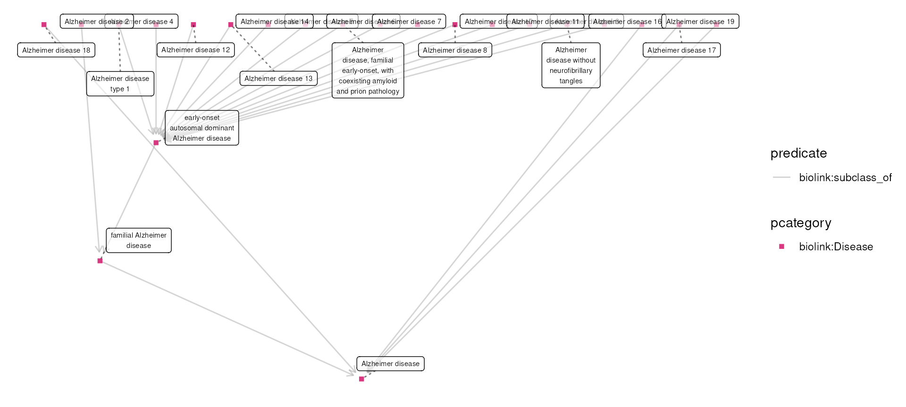

Categorizing Alzheimers Phenotypes
Shawn T O’Neil
Vignette updated: Feb-06-2025
Source:vignettes/examples/alzheimers_phenotypes.Rmd
alzheimers_phenotypes.RmdMotivation
This example explores the question: “what are the behavioral
phenotypes of Alzheimer’s disease”?1 As we’ll see, because Alzheimer’s is
associated with a variety of phenotypes of different kinds, we take an
exploratory approach that highlights the functionality provided by
monarchr and tidygraph.
Exploring Alzheimer’s
To start, we load monarchr, tidygraph, and
dplyr:
Let’s start by finding the disease node for Alzheimer’s itself with
monarch_search(), which uses the Monarch search API:
alz_search <- monarch_search("Alzheimer's", limit = 5)
alz_searchGraph with 5 nodes and 0 edges. Expand sections below for details.
Node Data
Showing 5 of 5 nodes:
| id | pcategory | name | description | synonym (list) | category (list) | iri | xref (list) | namespace | provided_by (list) |
|---|---|---|---|---|---|---|---|---|---|
| “MONDO:0007089” | “biolink:Disease” | “Alzheimer disease 2” | “An Alzheimer’s disease that is characterized by an association of the apolipoprotein E E4 allele.” | c(“AD2”, “Alzheimer disease 2”, “Alzheimer disease 2, late onset”, “Alzheimer disease 2, late-onset”, “Alzheimer disease associated with APOE E4”, “Alzheimer disease associated with APOE4”, “Alzheimer disease type 2”, “Alzheimer disease-2”, “Alzheimer’s disease 2”, “Alzheimer’s disease type 2”, “LOFAD”, “late onset Alzheimer disease”, “late onset familial Alzheimer disease”, “late-onset familial alzheimer disease”) | c(“biolink:BiologicalEntity”, “biolink:Disease”, “biolink:DiseaseOrPhenotypicFeature”, “biolink:Entity”, “biolink:NamedThing”, “biolink:ThingWithTaxon”) | “http://purl.obolibrary.org/obo/MONDO_0007089” | c(“DOID:0110035”, “GARD:12799”, “MEDGEN:400197”, “MESH:C536595”, “OMIM:104310”, “UMLS:C1863051”) | “MONDO” | “phenio_nodes” |
| “MONDO:0012153” | “biolink:Disease” | “Alzheimer disease 9” | NA | c(“AD9”, “Alzheimer disease 9”, “Alzheimer disease 9, late-onset”, “Alzheimer disease 9, susceptibility to”) | c(“biolink:BiologicalEntity”, “biolink:Disease”, “biolink:DiseaseOrPhenotypicFeature”, “biolink:Entity”, “biolink:NamedThing”, “biolink:ThingWithTaxon”) | “http://purl.obolibrary.org/obo/MONDO_0012153” | c(“DOID:0111364”, “MEDGEN:924255”, “MESH:C563834”, “OMIM:608907”, “UMLS:C4282179”) | “MONDO” | “phenio_nodes” |
| “MONDO:0004975” | “biolink:Disease” | “Alzheimer disease” | “A progressive, neurodegenerative disease characterized by loss of function and death of nerve cells in several areas of the brain leading to loss of cognitive function such as memory and language.” | c(“AD”, “Alzheimer dementia”, “Alzheimer disease”, “Alzheimer disease, familial”, “Alzheimer’s dementia”, “Alzheimer’s disease”, “Alzheimers dementia”, “Alzheimers disease”, “presenile and senile dementia”) | c(“biolink:BiologicalEntity”, “biolink:Disease”, “biolink:DiseaseOrPhenotypicFeature”, “biolink:Entity”, “biolink:NamedThing”, “biolink:ThingWithTaxon”) | “http://purl.obolibrary.org/obo/MONDO_0004975” | c(“DOID:10652”, “HP:0002511”, “ICD10CM:G30”, “ICD9:290.1”, “ICD9:331.0”, “MEDGEN:1853”, “MESH:D000544”, “NCIT:C2866”, “NIFSTD:birnlex_2092”, “Orphanet:238616”, “SCTID:142811000119104”, “UMLS:C0002395”, “icd11.foundation:1611724421”) | “MONDO” | “phenio_nodes” |
| “MONDO:0012631” | “biolink:Disease” | “Alzheimer disease 14” | “An Alzheimer’s disease that is characterized by an associated with variation in the region 1q25.” | c(“AD14”, “Alzheimer disease 14”, “Alzheimer disease-14”, “Alzheimer’s disease 14”, “Alzheimer’s disease type 14”) | c(“biolink:BiologicalEntity”, “biolink:Disease”, “biolink:DiseaseOrPhenotypicFeature”, “biolink:Entity”, “biolink:NamedThing”, “biolink:ThingWithTaxon”) | “http://purl.obolibrary.org/obo/MONDO_0012631” | c(“DOID:0110047”, “GARD:16518”, “MEDGEN:369666”, “MESH:C566999”, “OMIM:611154”, “UMLS:C1970144”) | “MONDO” | “phenio_nodes” |
| “MONDO:0014316” | “biolink:Disease” | “Alzheimer disease 19” | “Any Alzheimer disease in which the cause of the disease is a mutation in the PLD3 gene.” | c(“AD19”, “Alzheimer disease 19”, “Alzheimer disease 19 late onset”, “Alzheimer disease 19, late-onset”, “Alzheimer disease caused by mutation in PLD3”, “Alzheimer disease type 19”, “Alzheimer’s disease 19”, “Alzheimer’s disease type 19”, “PLD3 Alzheimer disease”) | c(“biolink:BiologicalEntity”, “biolink:Disease”, “biolink:DiseaseOrPhenotypicFeature”, “biolink:Entity”, “biolink:NamedThing”, “biolink:ThingWithTaxon”) | “http://purl.obolibrary.org/obo/MONDO_0014316” | c(“DOID:0110051”, “MEDGEN:816679”, “OMIM:615711”, “UMLS:C3810349”) | “MONDO” | “phenio_nodes” |
Edge Data
Showing 0 of 0 edges:
From these results we see that MONDO:0004975 is the ID
for the primary Alzheimer’s disease node (information also available on
the Monarch Initiative website).
We also see other types of Alzheimer’s, which appear to be distinct
subtypes.
Let’s fetch MONDO:0004975 and all of its transitive
subtypes. We’ll plot the result, specifying
layout = "sugiyama" (appropriate for directed acyclic
graphs such as this):
# get an engine to query the graph with
monarch <- monarch_engine()
alz_diseases <- monarch |>
fetch_nodes(query_ids = "MONDO:0004975") |>
expand(predicates = "biolink:subclass_of", direction = "in", transitive = TRUE)
plot(alz_diseases, layout = "sugiyama")
Let’s also quickly fetch all of the phenotypes associated with any of
these; we’ll do so with expand() specifying that we want
all connected biolink:PhenotypicFeature nodes.
alz_disease_phenos <- alz_diseases |>
expand(categories = "biolink:PhenotypicFeature")
plot(alz_disease_phenos, layout = "sugiyama")
There are quite a number of phenotypes associated with Alzheimer’s or
its subtypes. Most of these are associated via the
biolink:has_phenotype predicate, but there’s also a few
biolink:has_mode_of_inheritance connections. Let’s explore
those using tidygraph’s filtering features:
Graph with 76 nodes and 7 edges. Expand sections below for details.
Node Data
Showing 76 of 76 nodes:
| id | pcategory | name | description | synonym (list) | category (list) | iri | xref (list) | namespace | provided_by (list) |
|---|---|---|---|---|---|---|---|---|---|
| “MONDO:0004975” | “biolink:Disease” | “Alzheimer disease” | “A progressive, neurodegenerative disease characterized by loss of function and death of nerve cells in several areas of the brain leading to loss of cognitive function such as memory and language.” | c(“AD”, “Alzheimer dementia”, “Alzheimer disease”, “Alzheimer disease, familial”, “Alzheimer’s dementia”, “Alzheimer’s disease”, “Alzheimers dementia”, “Alzheimers disease”, “presenile and senile dementia”) | c(“biolink:BiologicalEntity”, “biolink:Disease”, “biolink:DiseaseOrPhenotypicFeature”, “biolink:Entity”, “biolink:NamedThing”, “biolink:ThingWithTaxon”) | “http://purl.obolibrary.org/obo/MONDO_0004975” | c(“DOID:10652”, “HP:0002511”, “ICD10CM:G30”, “ICD9:290.1”, “ICD9:331.0”, “MEDGEN:1853”, “MESH:D000544”, “NCIT:C2866”, “NIFSTD:birnlex_2092”, “Orphanet:238616”, “SCTID:142811000119104”, “UMLS:C0002395”, “icd11.foundation:1611724421”) | “MONDO” | “phenio_nodes” |
| “MONDO:0015140” | “biolink:Disease” | “early-onset autosomal dominant Alzheimer disease” | “A progressive dementia with reduction of cognitive functions. It presents the same phenotype as sporadic Alzheimer disease (AD) but has an early age of onset, usually before 60 years old.” | c(“EOFAD”, “early-onset familial autosomal dominant Alzheimer disease”, “early-onset, autosomal dominant Alzheimer disease”) | c(“biolink:BiologicalEntity”, “biolink:Disease”, “biolink:DiseaseOrPhenotypicFeature”, “biolink:Entity”, “biolink:NamedThing”, “biolink:ThingWithTaxon”) | “http://purl.obolibrary.org/obo/MONDO_0015140” | c(“GARD:12798”, “Orphanet:1020”) | “MONDO” | “phenio_nodes” |
| “MONDO:0007088” | “biolink:Disease” | “Alzheimer disease type 1” | NA | c(“AD”, “AD1”, “Alzheimer disease”, “Alzheimer disease 1”, “Alzheimer disease 1, familial”, “Alzheimer disease, early-onset, with cerebral amyloid angiopathy”, “Alzheimer disease, familial, 1”, “Alzheimer disease, late-onset, susceptibility to”, “Alzheimer disease, protection against”, “Alzheimer disease, susceptibility to”, “early-onset familial form of Alzheimer disease”, “presenile and senile dementia”) | c(“biolink:BiologicalEntity”, “biolink:Disease”, “biolink:DiseaseOrPhenotypicFeature”, “biolink:Entity”, “biolink:NamedThing”, “biolink:ThingWithTaxon”) | “http://purl.obolibrary.org/obo/MONDO_0007088” | c(“DECIPHER:48”, “DOID:0080348”, “GARD:9465”, “MEDGEN:354892”, “MESH:C536594”, “OMIM:104300”, “UMLS:C1863052”) | “MONDO” | “phenio_nodes” |
| “MONDO:0011743” | “biolink:Disease” | “Alzheimer disease 4” | “Alzheimer’s disease with an early onset (starts before the age of 65). It is caused by mutations in the PSEN2 gene.” | c(“AD4”, “Ad4”, “Alzheimer disease 4”, “Alzheimer disease familial type 4”, “Alzheimer disease type 4”, “Alzheimer disease, familial, 4”, “Alzheimer disease, familial4”, “Alzheimer disease-4”, “Alzheimer’s disease 4”, “Alzheimer’s disease type 4”, “familial Alzheimer disease, type 4”, “familial Alzheimer’s disease, type 4”) | c(“biolink:BiologicalEntity”, “biolink:Disease”, “biolink:DiseaseOrPhenotypicFeature”, “biolink:Entity”, “biolink:NamedThing”, “biolink:ThingWithTaxon”) | “http://purl.obolibrary.org/obo/MONDO_0011743” | c(“DOID:0110040”, “GARD:16511”, “MEDGEN:376072”, “MESH:C536596”, “NCIT:C123413”, “OMIM:606889”, “UMLS:C1847200”) | “MONDO” | “phenio_nodes” |
| “MONDO:0007089” | “biolink:Disease” | “Alzheimer disease 2” | “An Alzheimer’s disease that is characterized by an association of the apolipoprotein E E4 allele.” | c(“AD2”, “Alzheimer disease 2”, “Alzheimer disease 2, late onset”, “Alzheimer disease 2, late-onset”, “Alzheimer disease associated with APOE E4”, “Alzheimer disease associated with APOE4”, “Alzheimer disease type 2”, “Alzheimer disease-2”, “Alzheimer’s disease 2”, “Alzheimer’s disease type 2”, “LOFAD”, “late onset Alzheimer disease”, “late onset familial Alzheimer disease”, “late-onset familial alzheimer disease”) | c(“biolink:BiologicalEntity”, “biolink:Disease”, “biolink:DiseaseOrPhenotypicFeature”, “biolink:Entity”, “biolink:NamedThing”, “biolink:ThingWithTaxon”) | “http://purl.obolibrary.org/obo/MONDO_0007089” | c(“DOID:0110035”, “GARD:12799”, “MEDGEN:400197”, “MESH:C536595”, “OMIM:104310”, “UMLS:C1863051”) | “MONDO” | “phenio_nodes” |
| “MONDO:0100087” | “biolink:Disease” | “familial Alzheimer disease” | “A degenerative disease of the brain that causes gradual loss of memory, judgment, and the ability to function socially. About 25% of all Alzheimer disease is familial (more than 2 people in a family have AD). When Alzheimer disease begins before 60 or 65 years of age (early-onset AD) about 60% of the cases are familial (also known as Early-onset familial AD). These cases appear to be inherited in an autosomal dominant manner.” | c(“Alzheimer disease, familial”, “FAD”, “GARD:0000632”) | c(“biolink:BiologicalEntity”, “biolink:Disease”, “biolink:DiseaseOrPhenotypicFeature”, “biolink:Entity”, “biolink:NamedThing”, “biolink:ThingWithTaxon”) | “http://purl.obolibrary.org/obo/MONDO_0100087” | c(“MEDGEN:82914”, “UMLS:C0276496”) | “MONDO” | “phenio_nodes” |
| “MONDO:0014265” | “biolink:Disease” | “Alzheimer disease 18” | “Any Alzheimer disease in which the cause of the disease is a mutation in the ADAM10 gene.” | c(“AD18”, “ADAM10 Alzheimer disease”, “Alzheimer disease 18”, “Alzheimer disease 18, late-onset”, “Alzheimer disease 18, susceptibility to”, “Alzheimer disease caused by mutation in ADAM10”, “Alzheimer disease type 18”, “Alzheimer’s disease 18”, “Alzheimer’s disease type 18”) | c(“biolink:BiologicalEntity”, “biolink:Disease”, “biolink:DiseaseOrPhenotypicFeature”, “biolink:Entity”, “biolink:NamedThing”, “biolink:ThingWithTaxon”) | “http://purl.obolibrary.org/obo/MONDO_0014265” | c(“DOID:0110050”, “MEDGEN:816371”, “OMIM:615590”, “UMLS:C3810041”) | “MONDO” | “phenio_nodes” |
| “MONDO:0011913” | “biolink:Disease” | “Alzheimer disease 3” | “Alzheimer’s disease with an early onset (starts before the age of 65). It is caused by mutations in the PSEN1 gene.” | c(“AD”, “AD3”, “Alzheimer disease 3”, “Alzheimer disease 3, early onset”, “Alzheimer disease 3, early-onset”, “Alzheimer disease early onset type 3”, “Alzheimer disease familial 3”, “Alzheimer disease type 3”, “Alzheimer disease, familial, 3”, “Alzheimer disease, familial, 3, with spastic paraparesis and apraxia”, “Alzheimer disease, familial, 3, with spastic paraparesis and unusual plaques”, “Alzheimer disease, protection against, due to APOE3-Christchurch”, “Alzheimer disease, type 3”, “Alzheimer disease, type 3, with spastic paraparesis and apraxia”, “Alzheimer disease, type 3, with spastic paraparesis and unusual plaques”, “Alzheimer’s disease 3”, “Alzheimer’s disease type 3”, “PSEN1 early-onset autosomal dominant Alzheimer disease”, “early-onset autosomal dominant Alzheimer disease caused by mutation in PSEN1”, “familial Alzheimer disease, type 3”, “familial Alzheimer’s disease, type 3”) | c(“biolink:BiologicalEntity”, “biolink:Disease”, “biolink:DiseaseOrPhenotypicFeature”, “biolink:Entity”, “biolink:NamedThing”, “biolink:ThingWithTaxon”) | “http://purl.obolibrary.org/obo/MONDO_0011913” | c(“DOID:0110042”, “GARD:16513”, “MEDGEN:334304”, “MESH:C536598”, “NCIT:C123412”, “OMIM:607822”, “UMLS:C1843013”) | “MONDO” | “phenio_nodes” |
| “MONDO:0010422” | “biolink:Disease” | “Alzheimer disease 16” | “An Alzheimer’s disease that is characterized by an associated with a risk allele in in the PCDH11X gene on chromosome Xq21.3.” | c(“AD16”, “Alzheimer disease 16”, “Alzheimer’s disease 16”, “Alzheimer’s disease type 16”) | c(“biolink:BiologicalEntity”, “biolink:Disease”, “biolink:DiseaseOrPhenotypicFeature”, “biolink:Entity”, “biolink:NamedThing”, “biolink:ThingWithTaxon”) | “http://purl.obolibrary.org/obo/MONDO_0010422” | c(“DOID:0110036”, “MEDGEN:394384”, “MESH:C567463”, “OMIM:300756”, “UMLS:C2677888”) | “MONDO” | “phenio_nodes” |
| “MONDO:0011194” | “biolink:Disease” | “Alzheimer disease 5” | NA | c(“AD5”, “Ad5”, “Alzheimer disease 5”, “Alzheimer disease type 5”, “Alzheimer disease, familial 5”, “Alzheimer disease, familial, 5”, “Alzheimer disease-5”, “Alzheimer’s disease 5”, “Alzheimer’s disease type 5”) | c(“biolink:BiologicalEntity”, “biolink:Disease”, “biolink:DiseaseOrPhenotypicFeature”, “biolink:Entity”, “biolink:NamedThing”, “biolink:ThingWithTaxon”) | “http://purl.obolibrary.org/obo/MONDO_0011194” | c(“DOID:0110037”, “GARD:16507”, “MEDGEN:356103”, “MESH:C566578”, “OMIM:602096”, “UMLS:C1865868”) | “MONDO” | “phenio_nodes” |
| “MONDO:0011401” | “biolink:Disease” | “Alzheimer disease without neurofibrillary tangles” | NA | c(“AD15”, “Alzheimer disease 15”, “Alzheimer disease without neurofibrillary tangles”, “Alzheimer disease-15”, “Alzheimer’s disease 15”, “Alzheimer’s disease type 15”, “Alzheimer’s disease without neurofibrillary tangles”) | c(“biolink:BiologicalEntity”, “biolink:Disease”, “biolink:DiseaseOrPhenotypicFeature”, “biolink:Entity”, “biolink:NamedThing”, “biolink:ThingWithTaxon”) | “http://purl.obolibrary.org/obo/MONDO_0011401” | c(“DOID:0110048”, “GARD:7190”, “MEDGEN:346983”, “MESH:C536599”, “MESH:C566998”, “OMIM:604154”, “OMIM:611155”, “UMLS:C1858751”) | “MONDO” | “phenio_nodes” |
| “MONDO:0011513” | “biolink:Disease” | “Alzheimer disease, familial early-onset, with coexisting amyloid and prion pathology” | NA | “Alzheimer disease, familial early-onset, with coexisting amyloid and prion pathology” | c(“biolink:BiologicalEntity”, “biolink:Disease”, “biolink:DiseaseOrPhenotypicFeature”, “biolink:Entity”, “biolink:NamedThing”, “biolink:ThingWithTaxon”) | “http://purl.obolibrary.org/obo/MONDO_0011513” | c(“GARD:16508”, “MEDGEN:341884”, “MESH:C565728”, “OMIM:605055”, “UMLS:C1857933”) | “MONDO” | “phenio_nodes” |
| “MONDO:0011561” | “biolink:Disease” | “Alzheimer disease 6” | “An Alzheimer’s disease that is characterized by an associated with variation in the region 10q24.” | c(“AD6”, “Alzheimer disease 6”, “Alzheimer disease 6, late onset”, “Alzheimer disease 6, late-onset”, “Alzheimer disease type 6”, “Alzheimer’s disease 6”, “Alzheimer’s disease type 6”, “plasma Beta-amyloid-42 level quantitative trait locus”) | c(“biolink:BiologicalEntity”, “biolink:Disease”, “biolink:DiseaseOrPhenotypicFeature”, “biolink:Entity”, “biolink:NamedThing”, “biolink:ThingWithTaxon”) | “http://purl.obolibrary.org/obo/MONDO_0011561” | c(“DOID:0110038”, “GARD:16509”, “MEDGEN:381362”, “MESH:C565325”, “OMIM:605526”, “UMLS:C1854187”) | “MONDO” | “phenio_nodes” |
| “MONDO:0011647” | “biolink:Disease” | “Alzheimer disease 7” | “An Alzheimer’s disease that is characterized by an associated with variation in the region 10p13.” | c(“AD7”, “Ad7”, “Alzheimer disease 7”, “Alzheimer disease type 7”, “Alzheimer disease, familial 7”, “Alzheimer disease, familial, 7”, “Alzheimer disease-7”, “Alzheimer’s disease 7”, “Alzheimer’s disease type 7”) | c(“biolink:BiologicalEntity”, “biolink:Disease”, “biolink:DiseaseOrPhenotypicFeature”, “biolink:Entity”, “biolink:NamedThing”, “biolink:ThingWithTaxon”) | “http://purl.obolibrary.org/obo/MONDO_0011647” | c(“DOID:0110039”, “GARD:16510”, “MEDGEN:342907”, “MESH:C565251”, “OMIM:606187”, “UMLS:C1853555”) | “MONDO” | “phenio_nodes” |
| “MONDO:0011777” | “biolink:Disease” | “Alzheimer disease 8” | “An Alzheimer’s disease that is characterized by an associated with variation in the region 20p12.2-q11.21.” | c(“AD8”, “Ad8”, “Alzheimer disease 8”, “Alzheimer disease type 8”, “Alzheimer disease, familial 8”, “Alzheimer disease, familial, 8”, “Alzheimer’s disease 8”, “Alzheimer’s disease type 8”) | c(“biolink:BiologicalEntity”, “biolink:Disease”, “biolink:DiseaseOrPhenotypicFeature”, “biolink:Entity”, “biolink:NamedThing”, “biolink:ThingWithTaxon”) | “http://purl.obolibrary.org/obo/MONDO_0011777” | c(“DOID:0110041”, “GARD:16512”, “MEDGEN:375956”, “MESH:C564622”, “OMIM:607116”, “UMLS:C1846735”) | “MONDO” | “phenio_nodes” |
| “MONDO:0012321” | “biolink:Disease” | “Alzheimer disease 10” | “An Alzheimer’s disease that is characterized by an associated with variation in the region 7q36.” | c(“AD10”, “Ad10”, “Alzheimer disease 10”, “Alzheimer disease familial 10”, “Alzheimer disease type 10”, “Alzheimer disease, familial, 10”, “Alzheimer disease-10”, “Alzheimer’s disease 10”, “Alzheimer’s disease type 10”) | c(“biolink:BiologicalEntity”, “biolink:Disease”, “biolink:DiseaseOrPhenotypicFeature”, “biolink:Entity”, “biolink:NamedThing”, “biolink:ThingWithTaxon”) | “http://purl.obolibrary.org/obo/MONDO_0012321” | c(“DOID:0110043”, “GARD:16514”, “MEDGEN:351228”, “MESH:C566465”, “OMIM:609636”, “UMLS:C1864828”) | “MONDO” | “phenio_nodes” |
| “MONDO:0012344” | “biolink:Disease” | “Alzheimer disease 11” | “An Alzheimer’s disease that is characterized by an associated with variation in the region 9p22.1.” | c(“AD11”, “Ad11”, “Alzheimer disease 11”, “Alzheimer disease type 11”, “Alzheimer disease, familial, 11”, “Alzheimer disease-11”, “Alzheimer’s disease 11”, “Alzheimer’s disease type 11”) | c(“biolink:BiologicalEntity”, “biolink:Disease”, “biolink:DiseaseOrPhenotypicFeature”, “biolink:Entity”, “biolink:NamedThing”, “biolink:ThingWithTaxon”) | “http://purl.obolibrary.org/obo/MONDO_0012344” | c(“DOID:0110044”, “GARD:16515”, “MEDGEN:377886”, “MESH:C565228”, “OMIM:609790”, “UMLS:C1853360”) | “MONDO” | “phenio_nodes” |
| “MONDO:0012609” | “biolink:Disease” | “Alzheimer disease 12” | “An Alzheimer’s disease that is characterized by an associated with variation in the region 8p12-q22.” | c(“AD12”, “Ad12”, “Alzheimer disease 12”, “Alzheimer disease familial 12”, “Alzheimer disease type 12”, “Alzheimer disease, familial, 12”, “Alzheimer’s disease 12”, “Alzheimer’s disease type 12”) | c(“biolink:BiologicalEntity”, “biolink:Disease”, “biolink:DiseaseOrPhenotypicFeature”, “biolink:Entity”, “biolink:NamedThing”, “biolink:ThingWithTaxon”) | “http://purl.obolibrary.org/obo/MONDO_0012609” | c(“DOID:0110045”, “GARD:16516”, “MEDGEN:410013”, “MESH:C567022”, “OMIM:611073”, “UMLS:C1970209”) | “MONDO” | “phenio_nodes” |
| “MONDO:0012630” | “biolink:Disease” | “Alzheimer disease 13” | “An Alzheimer’s disease that is characterized by an associated with variation in the region 1q21.” | c(“AD13”, “Alzheimer disease 13”, “Alzheimer disease-13”, “Alzheimer’s disease 13”, “Alzheimer’s disease type 13”) | c(“biolink:BiologicalEntity”, “biolink:Disease”, “biolink:DiseaseOrPhenotypicFeature”, “biolink:Entity”, “biolink:NamedThing”, “biolink:ThingWithTaxon”) | “http://purl.obolibrary.org/obo/MONDO_0012630” | c(“DOID:0110046”, “GARD:16517”, “MEDGEN:370835”, “MESH:C567000”, “OMIM:611152”, “UMLS:C1970147”) | “MONDO” | “phenio_nodes” |
| “MONDO:0012631” | “biolink:Disease” | “Alzheimer disease 14” | “An Alzheimer’s disease that is characterized by an associated with variation in the region 1q25.” | c(“AD14”, “Alzheimer disease 14”, “Alzheimer disease-14”, “Alzheimer’s disease 14”, “Alzheimer’s disease type 14”) | c(“biolink:BiologicalEntity”, “biolink:Disease”, “biolink:DiseaseOrPhenotypicFeature”, “biolink:Entity”, “biolink:NamedThing”, “biolink:ThingWithTaxon”) | “http://purl.obolibrary.org/obo/MONDO_0012631” | c(“DOID:0110047”, “GARD:16518”, “MEDGEN:369666”, “MESH:C566999”, “OMIM:611154”, “UMLS:C1970144”) | “MONDO” | “phenio_nodes” |
| “MONDO:0014036” | “biolink:Disease” | “Alzheimer disease 17” | “An Alzheimer’s disease that is characterized by an associated with mutations in the gene TREM2.” | c(“AD17”, “Alzheimer disease 17”, “Alzheimer disease 17, late onset”, “Alzheimer disease 17, late-onset”, “Alzheimer’s disease 17”, “Alzheimer’s disease type 17”) | c(“biolink:BiologicalEntity”, “biolink:Disease”, “biolink:DiseaseOrPhenotypicFeature”, “biolink:Entity”, “biolink:NamedThing”, “biolink:ThingWithTaxon”) | “http://purl.obolibrary.org/obo/MONDO_0014036” | c(“DOID:0110049”, “MEDGEN:767366”, “OMIM:615080”, “UMLS:C3554452”) | “MONDO” | “phenio_nodes” |
| “MONDO:0014316” | “biolink:Disease” | “Alzheimer disease 19” | “Any Alzheimer disease in which the cause of the disease is a mutation in the PLD3 gene.” | c(“AD19”, “Alzheimer disease 19”, “Alzheimer disease 19 late onset”, “Alzheimer disease 19, late-onset”, “Alzheimer disease caused by mutation in PLD3”, “Alzheimer disease type 19”, “Alzheimer’s disease 19”, “Alzheimer’s disease type 19”, “PLD3 Alzheimer disease”) | c(“biolink:BiologicalEntity”, “biolink:Disease”, “biolink:DiseaseOrPhenotypicFeature”, “biolink:Entity”, “biolink:NamedThing”, “biolink:ThingWithTaxon”) | “http://purl.obolibrary.org/obo/MONDO_0014316” | c(“DOID:0110051”, “MEDGEN:816679”, “OMIM:615711”, “UMLS:C3810349”) | “MONDO” | “phenio_nodes” |
| “HP:0001300” | “biolink:PhenotypicFeature” | “Parkinsonism” | “Characteristic neurologic anomaly resulting from degeneration of dopamine-generating cells in the substantia nigra, a region of the midbrain, characterized clinically by shaking, rigidity, slowness of movement and difficulty with walking and gait.” | “Parkinsonian disease” | c(“biolink:BiologicalEntity”, “biolink:DiseaseOrPhenotypicFeature”, “biolink:Entity”, “biolink:NamedThing”, “biolink:PhenotypicFeature”, “biolink:ThingWithTaxon”) | “http://purl.obolibrary.org/obo/HP_0001300” | c(“SNOMEDCT_US:32798002”, “UMLS:C0242422”) | “HP” | “phenio_nodes” |
| “HP:0000726” | “biolink:PhenotypicFeature” | “Dementia” | “A loss of global cognitive ability of sufficient amount to interfere with normal social or occupational function. Dementia represents a loss of previously present cognitive abilities, generally in adults, and can affect memory, thinking, language, judgment, and behavior.” | c(“Dementia”, “Dementia, progressive”, “Progressive dementia”) | c(“biolink:BiologicalEntity”, “biolink:DiseaseOrPhenotypicFeature”, “biolink:Entity”, “biolink:NamedThing”, “biolink:PhenotypicFeature”, “biolink:ThingWithTaxon”) | “http://purl.obolibrary.org/obo/HP_0000726” | c(“SNOMEDCT_US:52448006”, “UMLS:C0497327”) | “HP” | “phenio_nodes” |
| “HP:0002185” | “biolink:PhenotypicFeature” | “Neurofibrillary tangles” | “Pathological protein aggregates formed by hyperphosphorylation of a microtubule-associated protein known as tau, causing it to aggregate in an insoluble form.” | c(“Neurofibrillary tangles composed of disordered microtubules in neurons”, “Paired helical filaments”) | c(“biolink:BiologicalEntity”, “biolink:DiseaseOrPhenotypicFeature”, “biolink:Entity”, “biolink:NamedThing”, “biolink:PhenotypicFeature”, “biolink:ThingWithTaxon”) | “http://purl.obolibrary.org/obo/HP_0002185” | c(“SNOMEDCT_US:85775002”, “UMLS:C0085400”) | “HP” | “phenio_nodes” |
| “HP:0410054” | “biolink:PhenotypicFeature” | “Decreased circulating GABA concentration” | “A decrease in the level of GABA in the serum.” | c(“Decreased circulating gamma-aminobutyric acid concentration”, “Decreased level of gamma-aminobutyric acid in serum”) | c(“biolink:BiologicalEntity”, “biolink:DiseaseOrPhenotypicFeature”, “biolink:Entity”, “biolink:NamedThing”, “biolink:PhenotypicFeature”, “biolink:ThingWithTaxon”) | “http://purl.obolibrary.org/obo/HP_0410054” | NA | “HP” | “phenio_nodes” |
| “HP:0002423” | “biolink:PhenotypicFeature” | “Long-tract signs” | “Long-tract signs refer to symptoms that are attributable to the involvement of the long fiber tracts in the spinal cord, which connect the spinal cord to the brain and mediate spinal and motor functions.” | “Long tract signs” | c(“biolink:BiologicalEntity”, “biolink:DiseaseOrPhenotypicFeature”, “biolink:Entity”, “biolink:NamedThing”, “biolink:PhenotypicFeature”, “biolink:ThingWithTaxon”) | “http://purl.obolibrary.org/obo/HP_0002423” | “UMLS:C1865903” | “HP” | “phenio_nodes” |
| “HP:0002511” | “biolink:PhenotypicFeature” | “Alzheimer disease” | “A degenerative disease of the brain characterized by the insidious onset of dementia. Impairment of memory, judgment, attention span, and problem solving skills are followed by severe apraxia and a global loss of cognitive abilities. The condition primarily occurs after age 60, and is marked pathologically by severe cortical atrophy and the triad of senile plaques, neurofibrillary tangles, and neuropil threads.” | c(“Alzheimer disease”, “Late-onset form of familial Alzheimer disease”) | c(“biolink:BiologicalEntity”, “biolink:DiseaseOrPhenotypicFeature”, “biolink:Entity”, “biolink:NamedThing”, “biolink:PhenotypicFeature”, “biolink:ThingWithTaxon”) | “http://purl.obolibrary.org/obo/HP_0002511” | c(“DOID:10652”, “MONDO:0004975”, “SNOMEDCT_US:230267005”, “SNOMEDCT_US:26929004”, “UMLS:C0002395”, “UMLS:C1863051”) | “HP” | “phenio_nodes” |
| “HP:0000006” | “biolink:PhenotypicFeature” | “Autosomal dominant inheritance” | “A mode of inheritance that is observed for traits related to a gene encoded on one of the autosomes (i.e., the human chromosomes 1-22) in which a trait manifests in heterozygotes. In the context of medical genetics, an autosomal dominant disorder is caused when a single copy of the mutant allele is present. Males and females are affected equally, and can both transmit the disorder with a risk of 50% for each child of inheriting the mutant allele.” | c(“Autosomal dominant”, “Autosomal dominant form”, “Autosomal dominant type”, “monoallelic_autosomal”) | c(“biolink:BiologicalEntity”, “biolink:DiseaseOrPhenotypicFeature”, “biolink:Entity”, “biolink:NamedThing”, “biolink:PhenotypicFeature”, “biolink:ThingWithTaxon”) | “http://purl.obolibrary.org/obo/HP_0000006” | c(“SNOMEDCT_US:263681008”, “UMLS:C0443147”) | “HP” | “phenio_nodes” |
| “HP:0006979” | “biolink:PhenotypicFeature” | “Sleep-wake cycle disturbance” | “Any abnormality of an individual’s circadian rhythm that affects the timing of sleeping and being awake is referred to as a sleep-wake disorder.” | c(“Internal-clock disorders”, “Sleep phase disturbance”, “Sleep-wake cycle disorders”, “Sleep-wake cycle disturbance”) | c(“biolink:BiologicalEntity”, “biolink:DiseaseOrPhenotypicFeature”, “biolink:Entity”, “biolink:NamedThing”, “biolink:PhenotypicFeature”, “biolink:ThingWithTaxon”) | “http://purl.obolibrary.org/obo/HP_0006979” | “UMLS:C1833362” | “HP” | “phenio_nodes” |
| “HP:0001289” | “biolink:PhenotypicFeature” | “Confusion” | “Lack of clarity and coherence of thought, perception, understanding, or action.” | c(“Confusion”, “Disorientation”, “Easily confused”, “Mental disorientation”) | c(“biolink:BiologicalEntity”, “biolink:DiseaseOrPhenotypicFeature”, “biolink:Entity”, “biolink:NamedThing”, “biolink:PhenotypicFeature”, “biolink:ThingWithTaxon”) | “http://purl.obolibrary.org/obo/HP_0001289” | c(“SNOMEDCT_US:286933003”, “UMLS:C0009676”) | “HP” | “phenio_nodes” |
| “HP:0002354” | “biolink:PhenotypicFeature” | “Memory impairment” | “An impairment of memory as manifested by a reduced ability to remember things such as dates and names, and increased forgetfulness.” | c(“Forgetfulness”, “Memory impairment”, “Memory loss”, “Memory problems”, “Poor memory”) | c(“biolink:BiologicalEntity”, “biolink:DiseaseOrPhenotypicFeature”, “biolink:Entity”, “biolink:NamedThing”, “biolink:PhenotypicFeature”, “biolink:ThingWithTaxon”) | “http://purl.obolibrary.org/obo/HP_0002354” | c(“SNOMEDCT_US:386807006”, “SNOMEDCT_US:55533009”, “UMLS:C0233794”, “UMLS:C0542476”, “UMLS:C0751295”) | “HP” | “phenio_nodes” |
| “HP:0002197” | “biolink:PhenotypicFeature” | “Generalized-onset seizure” | “A generalized-onset seizure is a type of seizure originating at some point within, and rapidly engaging, bilaterally distributed networks. The networks may include cortical and subcortical structures but not necessarily the entire cortex.” | c(“Generalised onset seizure”, “Generalised seizures”, “Generalised-onset seizure”, “Generalized onset seizure”, “Generalized seizures”, “Generalized-onset seizures”, “Primary generalised seizure”, “Primary generalized seizure”) | c(“biolink:BiologicalEntity”, “biolink:DiseaseOrPhenotypicFeature”, “biolink:Entity”, “biolink:NamedThing”, “biolink:PhenotypicFeature”, “biolink:ThingWithTaxon”) | “http://purl.obolibrary.org/obo/HP_0002197” | c(“SNOMEDCT_US:246545002”, “UMLS:C0234533”, “UMLS:C1833488”) | “HP” | “phenio_nodes” |
| “HP:0002186” | “biolink:PhenotypicFeature” | “Apraxia” | “A defect in the understanding of complex motor commands and in the execution of certain learned movements, i.e., deficits in the cognitive components of learned movements.” | “Apraxias” | c(“biolink:BiologicalEntity”, “biolink:DiseaseOrPhenotypicFeature”, “biolink:Entity”, “biolink:NamedThing”, “biolink:PhenotypicFeature”, “biolink:ThingWithTaxon”) | “http://purl.obolibrary.org/obo/HP_0002186” | c(“SNOMEDCT_US:68345001”, “SNOMEDCT_US:6950007”, “UMLS:C0003635”) | “HP” | “phenio_nodes” |
| “HP:0030784” | “biolink:PhenotypicFeature” | “Anomic aphasia” | “An inability to name people and objects that are correctly perceived. The individual is able to describe the object in question, but cannot provide the name.” | c(“Amnesic aphasia”, “Amnestic aphasia”, “Anomia”, “Nominal aphasia”, “Word-finding difficulty”) | c(“biolink:BiologicalEntity”, “biolink:DiseaseOrPhenotypicFeature”, “biolink:Entity”, “biolink:NamedThing”, “biolink:PhenotypicFeature”, “biolink:ThingWithTaxon”) | “http://purl.obolibrary.org/obo/HP_0030784” | c(“SNOMEDCT_US:10325006”, “UMLS:C0003113”) | “HP” | “phenio_nodes” |
| “HP:0031058” | “biolink:PhenotypicFeature” | “Impairment of activities of daily living” | “Difficulty in performing one or more activities normally performed every day, such as eating, bathing, dressing, grooming, work, homemaking, and leisure.” | NA | c(“biolink:BiologicalEntity”, “biolink:DiseaseOrPhenotypicFeature”, “biolink:Entity”, “biolink:NamedThing”, “biolink:PhenotypicFeature”, “biolink:ThingWithTaxon”) | “http://purl.obolibrary.org/obo/HP_0031058” | NA | “HP” | “phenio_nodes” |
| “HP:0100256” | “biolink:PhenotypicFeature” | “Senile plaques” | “Senile plaques are extracellular deposits of amyloid in the gray matter of the brain.” | c(“Braindruse”, “Neuritic plaques”, “Senile druse”) | c(“biolink:BiologicalEntity”, “biolink:DiseaseOrPhenotypicFeature”, “biolink:Entity”, “biolink:NamedThing”, “biolink:PhenotypicFeature”, “biolink:ThingWithTaxon”) | “http://purl.obolibrary.org/obo/HP_0100256” | c(“SNOMEDCT_US:38551001”, “UMLS:C0333463”) | “HP” | “phenio_nodes” |
| “HP:0012662” | “biolink:PhenotypicFeature” | “Parietal hypometabolism in FDG PET” | “Reduced uptake of [18F]-fluorodeoxyglucose (FDG) in the parietal cortex as measured by positron emission tomography (PET) brain scan.” | NA | c(“biolink:BiologicalEntity”, “biolink:DiseaseOrPhenotypicFeature”, “biolink:Entity”, “biolink:NamedThing”, “biolink:PhenotypicFeature”, “biolink:ThingWithTaxon”) | “http://purl.obolibrary.org/obo/HP_0012662” | “UMLS:C4022794” | “HP” | “phenio_nodes” |
| “HP:0100543” | “biolink:PhenotypicFeature” | “Cognitive impairment” | “Abnormal cognition is characterized by deficits in thinking, reasoning, or remembering.” | c(“Abnormality of cognition”, “Cognitive abnormality”, “Cognitive defects”, “Cognitive deficits”, “Cognitive impairment”, “Intellectual impairment”) | c(“biolink:BiologicalEntity”, “biolink:DiseaseOrPhenotypicFeature”, “biolink:Entity”, “biolink:NamedThing”, “biolink:PhenotypicFeature”, “biolink:ThingWithTaxon”) | “http://purl.obolibrary.org/obo/HP_0100543” | c(“SNOMEDCT_US:386806002”, “UMLS:C0338656”, “UMLS:C0683322”) | “HP” | “phenio_nodes” |
| “HP:0011970” | “biolink:PhenotypicFeature” | “Cerebral amyloid angiopathy” | “Amyloid deposition in the walls of leptomeningeal and cortical arteries, arterioles, and less often capillaries and veins of the central nervous system.” | NA | c(“biolink:BiologicalEntity”, “biolink:DiseaseOrPhenotypicFeature”, “biolink:Entity”, “biolink:NamedThing”, “biolink:PhenotypicFeature”, “biolink:ThingWithTaxon”) | “http://purl.obolibrary.org/obo/HP_0011970” | c(“SNOMEDCT_US:230724001”, “UMLS:C0085220”) | “HP” | “phenio_nodes” |
| “HP:0000718” | “biolink:PhenotypicFeature” | “Aggressive behavior” | “Behavior or an act aimed at harming a person, animal, or physical property (e.g., acts of physical violence; shouting, swearing, and using harsh language; slashing someone’s tires).” | c(“Aggression”, “Aggressive behavior”, “Aggressiveness”, “physical aggression”) | c(“biolink:BiologicalEntity”, “biolink:DiseaseOrPhenotypicFeature”, “biolink:Entity”, “biolink:NamedThing”, “biolink:PhenotypicFeature”, “biolink:ThingWithTaxon”) | “http://purl.obolibrary.org/obo/HP_0000718” | c(“SNOMEDCT_US:248004009”, “SNOMEDCT_US:61372001”, “UMLS:C0001807”, “UMLS:C0424323”, “UMLS:C1457883”) | “HP” | “phenio_nodes” |
| “HP:0007112” | “biolink:PhenotypicFeature” | “Temporal cortical atrophy” | “Atrophy of the temporal cortex.” | NA | c(“biolink:BiologicalEntity”, “biolink:DiseaseOrPhenotypicFeature”, “biolink:Entity”, “biolink:NamedThing”, “biolink:PhenotypicFeature”, “biolink:ThingWithTaxon”) | “http://purl.obolibrary.org/obo/HP_0007112” | “UMLS:C4024936” | “HP” | “phenio_nodes” |
| “HP:0000741” | “biolink:PhenotypicFeature” | “Apathy” | “Apathy is a quantitative reduction of interest, motivation and the initiation and persistence of goal-directed behavior, where often the accompanying emotions, thoughts, and social interactions are also diminished. The individual is typically non-reactive to provocations, positive or negative, and appears to not care. Distinguished from lethargy which involves lack of physical or mental energy.” | c(“Lack of feeling, emotion, interest”, “Lack of feeling, emotion, interest, motivation, initiation”, “State of indifference”) | c(“biolink:BiologicalEntity”, “biolink:DiseaseOrPhenotypicFeature”, “biolink:Entity”, “biolink:NamedThing”, “biolink:PhenotypicFeature”, “biolink:ThingWithTaxon”) | “http://purl.obolibrary.org/obo/HP_0000741” | c(“SNOMEDCT_US:20602000”, “UMLS:C0085632”) | “HP” | “phenio_nodes” |
| “HP:0001336” | “biolink:PhenotypicFeature” | “Myoclonus” | “Very brief, involuntary random muscular contractions occurring at rest, in response to sensory stimuli, or accompanying voluntary movements.” | c(“Involuntary jerking movements”, “Jerking”, “Myoclonic jerks”) | c(“biolink:BiologicalEntity”, “biolink:DiseaseOrPhenotypicFeature”, “biolink:Entity”, “biolink:NamedThing”, “biolink:PhenotypicFeature”, “biolink:ThingWithTaxon”) | “http://purl.obolibrary.org/obo/HP_0001336” | c(“SNOMEDCT_US:127324008”, “SNOMEDCT_US:17450006”, “UMLS:C0027066”, “UMLS:C1854302”) | “HP” | “phenio_nodes” |
| “HP:0002015” | “biolink:PhenotypicFeature” | “Dysphagia” | “Difficulty in swallowing.” | c(“Deglutition disorder”, “Difficulty swallowing”, “Poor swallowing”, “Swallowing difficulties”, “Swallowing difficulty”) | c(“biolink:BiologicalEntity”, “biolink:DiseaseOrPhenotypicFeature”, “biolink:Entity”, “biolink:NamedThing”, “biolink:PhenotypicFeature”, “biolink:ThingWithTaxon”) | “http://purl.obolibrary.org/obo/HP_0002015” | c(“MEDDRA:10013950”, “SNOMEDCT_US:288939007”, “SNOMEDCT_US:40739000”, “UMLS:C0011168”) | “HP” | “phenio_nodes” |
| “HP:0031868” | “biolink:PhenotypicFeature” | “Optic ataxia” | “Difficulty reaching visually guided goals in peripheral vision, with the deficit, leaves voluntary eye movements largely unaffected.” | NA | c(“biolink:BiologicalEntity”, “biolink:DiseaseOrPhenotypicFeature”, “biolink:Entity”, “biolink:NamedThing”, “biolink:PhenotypicFeature”, “biolink:ThingWithTaxon”) | “http://purl.obolibrary.org/obo/HP_0031868” | NA | “HP” | “phenio_nodes” |
| “HP:0001288” | “biolink:PhenotypicFeature” | “Gait disturbance” | “The term gait disturbance can refer to any disruption of the ability to walk.” | c(“Abnormal gait”, “Abnormal walk”, “Difficulty in walking”, “Gait abnormalities”, “Gait difficulties”, “Gait disturbances”, “Impaired gait”, “Walking disability”) | c(“biolink:BiologicalEntity”, “biolink:DiseaseOrPhenotypicFeature”, “biolink:Entity”, “biolink:NamedThing”, “biolink:PhenotypicFeature”, “biolink:ThingWithTaxon”) | “http://purl.obolibrary.org/obo/HP_0001288” | c(“SNOMEDCT_US:22325002”, “UMLS:C0575081”) | “HP” | “phenio_nodes” |
| “HP:0001332” | “biolink:PhenotypicFeature” | “Dystonia” | “An abnormally increased muscular tone that causes fixed abnormal postures. There is a slow, intermittent twisting motion that leads to exaggerated turning and posture of the extremities and trunk.” | c(“Dystonic disease”, “Dystonic movements”) | c(“biolink:BiologicalEntity”, “biolink:DiseaseOrPhenotypicFeature”, “biolink:Entity”, “biolink:NamedThing”, “biolink:PhenotypicFeature”, “biolink:ThingWithTaxon”) | “http://purl.obolibrary.org/obo/HP_0001332” | c(“UMLS:C0013421”, “UMLS:C4020871”) | “HP” | “phenio_nodes” |
| “HP:0003487” | “biolink:PhenotypicFeature” | “Babinski sign” | “Upturning of the big toe (and sometimes fanning of the other toes) in response to stimulation of the sole of the foot. If the Babinski sign is present it can indicate damage to the corticospinal tract.” | c(“Extensor plantar reflexes”, “Extensor plantar response”, “Extensor plantar responses”, “Positive Babinski sign”) | c(“biolink:BiologicalEntity”, “biolink:DiseaseOrPhenotypicFeature”, “biolink:Entity”, “biolink:NamedThing”, “biolink:PhenotypicFeature”, “biolink:ThingWithTaxon”) | “http://purl.obolibrary.org/obo/HP_0003487” | c(“SNOMEDCT_US:246586009”, “SNOMEDCT_US:366575004”, “UMLS:C0034935”) | “HP” | “phenio_nodes” |
| “HP:0001250” | “biolink:PhenotypicFeature” | “Seizure” | “A seizure is an intermittent abnormality of nervous system physiology characterized by a transient occurrence of signs and/or symptoms due to abnormal excessive or synchronous neuronal activity in the brain.” | c(“Epilepsy”, “Epileptic seizure”, “Seizures”) | c(“biolink:BiologicalEntity”, “biolink:DiseaseOrPhenotypicFeature”, “biolink:Entity”, “biolink:NamedThing”, “biolink:PhenotypicFeature”, “biolink:ThingWithTaxon”) | “http://purl.obolibrary.org/obo/HP_0001250” | c(“SNOMEDCT_US:128613002”, “SNOMEDCT_US:246545002”, “SNOMEDCT_US:313307000”, “SNOMEDCT_US:84757009”, “SNOMEDCT_US:91175000”, “UMLS:C0014544”, “UMLS:C0036572”) | “HP” | “phenio_nodes” |
| “HP:0002120” | “biolink:PhenotypicFeature” | “Cerebral cortical atrophy” | “Atrophy of the cortex of the cerebrum.” | c(“Cerebral cortex atrophy”, “Cortical atrophy”, “Decrease in size of the outer layer of the brain due to loss of brain cells”) | c(“biolink:BiologicalEntity”, “biolink:DiseaseOrPhenotypicFeature”, “biolink:Entity”, “biolink:NamedThing”, “biolink:PhenotypicFeature”, “biolink:ThingWithTaxon”) | “http://purl.obolibrary.org/obo/HP_0002120” | c(“SNOMEDCT_US:278849000”, “UMLS:C0235946”) | “HP” | “phenio_nodes” |
| “HP:0002395” | “biolink:PhenotypicFeature” | “Lower limb hyperreflexia” | NA | c(“Brisk lower extremity reflexes”, “Hyperreflexia in lower limbs”, “Hyperreflexia in the lower limbs”, “Increased deep tendon reflexes in the lower limbs”, “Leg hyperreflexia”, “Overactive lower leg reflex”) | c(“biolink:BiologicalEntity”, “biolink:DiseaseOrPhenotypicFeature”, “biolink:Entity”, “biolink:NamedThing”, “biolink:PhenotypicFeature”, “biolink:ThingWithTaxon”) | “http://purl.obolibrary.org/obo/HP_0002395” | “UMLS:C1836696” | “HP” | “phenio_nodes” |
| “HP:0001260” | “biolink:PhenotypicFeature” | “Dysarthria” | “Dysarthric speech is a general description referring to a neurological speech disorder characterized by poor articulation. Depending on the involved neurological structures, dysarthria may be further classified as spastic, flaccid, ataxic, hyperkinetic and hypokinetic, or mixed.” | c(“Difficulty articulating speech”, “Dysarthric speech”) | c(“biolink:BiologicalEntity”, “biolink:DiseaseOrPhenotypicFeature”, “biolink:Entity”, “biolink:NamedThing”, “biolink:PhenotypicFeature”, “biolink:ThingWithTaxon”) | “http://purl.obolibrary.org/obo/HP_0001260” | c(“SNOMEDCT_US:8011004”, “UMLS:C0013362”) | “HP” | “phenio_nodes” |
| “HP:0001285” | “biolink:PhenotypicFeature” | “Spastic tetraparesis” | “Spastic weakness affecting all four limbs.” | “Spastic quadriparesis” | c(“biolink:BiologicalEntity”, “biolink:DiseaseOrPhenotypicFeature”, “biolink:Entity”, “biolink:NamedThing”, “biolink:PhenotypicFeature”, “biolink:ThingWithTaxon”) | “http://purl.obolibrary.org/obo/HP_0001285” | c(“SNOMEDCT_US:298282001”, “UMLS:C0575059”) | “HP” | “phenio_nodes” |
| “HP:0002071” | “biolink:PhenotypicFeature” | “Abnormality of extrapyramidal motor function” | “A neurological condition related to lesions of the basal ganglia leading to typical abnormalities including akinesia (inability to initiate changes in activity and perform volitional movements rapidly and easily), muscular rigidity (continuous contraction of muscles with constant resistance to passive movement), chorea (widespread arrhythmic movements of a forcible, rapid, jerky, and restless nature), athetosis (inability to sustain the muscles of the fingers, toes, or other group of muscles in a fixed position), and akathisia (inability to remain motionless).” | c(“Extrapyramidal dysfunction”, “Extrapyramidal signs”, “Extrapyramidal symptoms”, “Extrapyramidal syndrome”, “Extrapyramidal tract signs”) | c(“biolink:BiologicalEntity”, “biolink:DiseaseOrPhenotypicFeature”, “biolink:Entity”, “biolink:NamedThing”, “biolink:PhenotypicFeature”, “biolink:ThingWithTaxon”) | “http://purl.obolibrary.org/obo/HP_0002071” | c(“SNOMEDCT_US:43378000”, “SNOMEDCT_US:76349003”, “UMLS:C0015371”, “UMLS:C0234133”) | “HP” | “phenio_nodes” |
| “HP:0010524” | “biolink:PhenotypicFeature” | “Disturbed sensory perception” | “Alteration or impairment in the processing or interpretation of sensory information can lead to abnormal perceptions or experiences.” | “Agnosia” | c(“biolink:BiologicalEntity”, “biolink:DiseaseOrPhenotypicFeature”, “biolink:Entity”, “biolink:NamedThing”, “biolink:PhenotypicFeature”, “biolink:ThingWithTaxon”) | “http://purl.obolibrary.org/obo/HP_0010524” | c(“SNOMEDCT_US:42341009”, “UMLS:C0001816”) | “HP” | “phenio_nodes” |
| “HP:0000751” | “biolink:PhenotypicFeature” | “Personality changes” | “An abnormal shift in patterns of thinking, acting, or feeling.” | c(“Personality change”, “Personality changes”) | c(“biolink:BiologicalEntity”, “biolink:DiseaseOrPhenotypicFeature”, “biolink:Entity”, “biolink:NamedThing”, “biolink:PhenotypicFeature”, “biolink:ThingWithTaxon”) | “http://purl.obolibrary.org/obo/HP_0000751” | c(“SNOMEDCT_US:102943000”, “SNOMEDCT_US:192073007”, “UMLS:C0240735”) | “HP” | “phenio_nodes” |
| “HP:0000713” | “biolink:PhenotypicFeature” | “Agitation” | “A state of excessive motor activity that is associated with mental distress or a feeling of substantial unease or inner tension. Distinguished from restlessness by the increased level of emotional distress and negative intensity of the experience. Agitation has a significant level of physical activity that is typically threatening to the self or others.” | “Psychomotor agitation” | c(“biolink:BiologicalEntity”, “biolink:DiseaseOrPhenotypicFeature”, “biolink:Entity”, “biolink:NamedThing”, “biolink:PhenotypicFeature”, “biolink:ThingWithTaxon”) | “http://purl.obolibrary.org/obo/HP_0000713” | c(“SNOMEDCT_US:24199005”, “UMLS:C0085631”) | “HP” | “phenio_nodes” |
| “HP:0000738” | “biolink:PhenotypicFeature” | “Hallucinations” | “Perceptions in a conscious and awake state that, in the absence of external stimuli, have qualities of real perception. These perceptions are vivid, substantial, and located in external objective space.” | c(“Hallucination”, “Hallucinations”, “Sensory hallucination”) | c(“biolink:BiologicalEntity”, “biolink:DiseaseOrPhenotypicFeature”, “biolink:Entity”, “biolink:NamedThing”, “biolink:PhenotypicFeature”, “biolink:ThingWithTaxon”) | “http://purl.obolibrary.org/obo/HP_0000738” | c(“SNOMEDCT_US:7011001”, “UMLS:C0018524”, “UMLS:C0235153”) | “HP” | “phenio_nodes” |
| “HP:0001276” | “biolink:PhenotypicFeature” | “Hypertonia” | “A condition in which there is increased muscle tone so that arms or legs, for example, are stiff and difficult to move.” | c(“Hypertonicity”, “Increased muscle tone”, “Muscle hypertonia”, “Spasticity and rigidity of muscles”) | c(“biolink:BiologicalEntity”, “biolink:DiseaseOrPhenotypicFeature”, “biolink:Entity”, “biolink:NamedThing”, “biolink:PhenotypicFeature”, “biolink:ThingWithTaxon”) | “http://purl.obolibrary.org/obo/HP_0001276” | c(“SNOMEDCT_US:41581000”, “SNOMEDCT_US:56731001”, “UMLS:C0026826”) | “HP” | “phenio_nodes” |
| “HP:0002463” | “biolink:PhenotypicFeature” | “Language impairment” | “Language impairment is a deficit in comprehension or production of language that includes reduced vocabulary, limited sentence structure, or impairments in written or spoken communication. Language abilities are substantially and quantifiably below age expectations.” | “Language disorder” | c(“biolink:BiologicalEntity”, “biolink:DiseaseOrPhenotypicFeature”, “biolink:Entity”, “biolink:NamedThing”, “biolink:PhenotypicFeature”, “biolink:ThingWithTaxon”) | “http://purl.obolibrary.org/obo/HP_0002463” | c(“SNOMEDCT_US:62305002”, “UMLS:C0023015”) | “HP” | “phenio_nodes” |
| “HP:0003791” | “biolink:PhenotypicFeature” | “Deposits immunoreactive to beta-amyloid protein” | NA | NA | c(“biolink:BiologicalEntity”, “biolink:DiseaseOrPhenotypicFeature”, “biolink:Entity”, “biolink:NamedThing”, “biolink:PhenotypicFeature”, “biolink:ThingWithTaxon”) | “http://purl.obolibrary.org/obo/HP_0003791” | “UMLS:C1853934” | “HP” | “phenio_nodes” |
| “HP:0012433” | “biolink:PhenotypicFeature” | “Abnormal social behavior” | “An abnormality of actions or reactions of a person taking place during interactions with others.” | c(“Abnormal social behavior”, “Abnormal social interactions”) | c(“biolink:BiologicalEntity”, “biolink:DiseaseOrPhenotypicFeature”, “biolink:Entity”, “biolink:NamedThing”, “biolink:PhenotypicFeature”, “biolink:ThingWithTaxon”) | “http://purl.obolibrary.org/obo/HP_0012433” | c(“UMLS:C4020726”, “UMLS:C4021087”) | “HP” | “phenio_nodes” |
| “HP:0012759” | “biolink:PhenotypicFeature” | “Neurodevelopmental abnormality” | “A deviation from normal of the neurological development of a child, which may include any or all of the aspects of the development of personal, social, gross or fine motor, and cognitive abilities.” | NA | c(“biolink:BiologicalEntity”, “biolink:DiseaseOrPhenotypicFeature”, “biolink:Entity”, “biolink:NamedThing”, “biolink:PhenotypicFeature”, “biolink:ThingWithTaxon”) | “http://purl.obolibrary.org/obo/HP_0012759” | “UMLS:C4022737” | “HP” | “phenio_nodes” |
| “HP:0000734” | “biolink:PhenotypicFeature” | “Disinhibition” | “Reduced ability to control, or a failure to resist a temptation, urge, or impulse. Examples include disregard for social conventions, general impulsivity, and poor risk assessment.” | c(“Impulse control disorders”, “Self-control”) | c(“biolink:BiologicalEntity”, “biolink:DiseaseOrPhenotypicFeature”, “biolink:Entity”, “biolink:NamedThing”, “biolink:PhenotypicFeature”, “biolink:ThingWithTaxon”) | “http://purl.obolibrary.org/obo/HP_0000734” | c(“SNOMEDCT_US:247977003”, “UMLS:C0424296”) | “HP” | “phenio_nodes” |
| “HP:0000504” | “biolink:PhenotypicFeature” | “Abnormality of vision” | “Abnormality of eyesight (visual perception).” | c(“Abnormality of sight”, “Abnormality of vision”, “Vision issue”) | c(“biolink:BiologicalEntity”, “biolink:DiseaseOrPhenotypicFeature”, “biolink:Entity”, “biolink:NamedThing”, “biolink:PhenotypicFeature”, “biolink:ThingWithTaxon”) | “http://purl.obolibrary.org/obo/HP_0000504” | “UMLS:C4025846” | “HP” | “phenio_nodes” |
| “HP:0000657” | “biolink:PhenotypicFeature” | “Oculomotor apraxia” | “Ocular motor apraxia is a deficiency in voluntary, horizontal, lateral, fast eye movements (saccades) with retention of slow pursuit movements. The inability to follow objects visually is often compensated by head movements. There may be decreased smooth pursuit, and cancelation of the vestibulo-ocular reflex.” | c(“Defective or absent horizontal voluntary eye movements”, “Ocular motor apraxia”) | c(“biolink:BiologicalEntity”, “biolink:DiseaseOrPhenotypicFeature”, “biolink:Entity”, “biolink:NamedThing”, “biolink:PhenotypicFeature”, “biolink:ThingWithTaxon”) | “http://purl.obolibrary.org/obo/HP_0000657” | c(“SNOMEDCT_US:193662007”, “UMLS:C3489733”, “UMLS:C4020886”) | “HP” | “phenio_nodes” |
| “HP:0001249” | “biolink:PhenotypicFeature” | “Intellectual disability” | “Intellectual disability, previously referred to as mental retardation, is characterized by subnormal intellectual functioning that occurs during the developmental period. It is defined by an IQ score below 70.” | c(“Dull intelligence”, “Intellectual disability”, “Low intelligence”, “Mental deficiency”, “Mental retardation”, “Mental retardation, nonspecific”, “Mental-retardation”, “Nonprogressive intellectual disability”, “Nonprogressive mental retardation”, “Poor school performance”) | c(“biolink:BiologicalEntity”, “biolink:DiseaseOrPhenotypicFeature”, “biolink:Entity”, “biolink:NamedThing”, “biolink:PhenotypicFeature”, “biolink:ThingWithTaxon”) | “http://purl.obolibrary.org/obo/HP_0001249” | c(“SNOMEDCT_US:228156007”, “SNOMEDCT_US:247578003”, “SNOMEDCT_US:91138005”, “UMLS:C0025362”, “UMLS:C0423903”, “UMLS:C0917816”, “UMLS:C1843367”, “UMLS:C3714756”, “UMLS:C4020876”) | “HP” | “phenio_nodes” |
| “HP:0001251” | “biolink:PhenotypicFeature” | “Ataxia” | “Cerebellar ataxia refers to ataxia due to dysfunction of the cerebellum. This causes a variety of elementary neurological deficits including asynergy (lack of coordination between muscles, limbs and joints), dysmetria (lack of ability to judge distances that can lead to under- or overshoot in grasping movements), and dysdiadochokinesia (inability to perform rapid movements requiring antagonizing muscle groups to be switched on and off repeatedly).” | “Cerebellar ataxia” | c(“biolink:BiologicalEntity”, “biolink:DiseaseOrPhenotypicFeature”, “biolink:Entity”, “biolink:NamedThing”, “biolink:PhenotypicFeature”, “biolink:ThingWithTaxon”) | “http://purl.obolibrary.org/obo/HP_0001251” | c(“SNOMEDCT_US:85102008”, “UMLS:C0007758”) | “HP” | “phenio_nodes” |
| “HP:0002381” | “biolink:PhenotypicFeature” | “Aphasia” | “An acquired language impairment of some or all of the abilities to produce or comprehend speech and to read or write.” | c(“Difficulty finding words”, “Losing words”, “Loss of words”) | c(“biolink:BiologicalEntity”, “biolink:DiseaseOrPhenotypicFeature”, “biolink:Entity”, “biolink:NamedThing”, “biolink:PhenotypicFeature”, “biolink:ThingWithTaxon”) | “http://purl.obolibrary.org/obo/HP_0002381” | c(“SNOMEDCT_US:87486003”, “UMLS:C0003537”) | “HP” | “phenio_nodes” |
| “HP:0010525” | “biolink:PhenotypicFeature” | “Finger agnosia” | “The examiner identified the inability to name, move, or touch specific fingers.” | NA | c(“biolink:BiologicalEntity”, “biolink:DiseaseOrPhenotypicFeature”, “biolink:Entity”, “biolink:NamedThing”, “biolink:PhenotypicFeature”, “biolink:ThingWithTaxon”) | “http://purl.obolibrary.org/obo/HP_0010525” | c(“SNOMEDCT_US:3449007”, “UMLS:C0234509”) | “HP” | “phenio_nodes” |
| “HP:0010526” | “biolink:PhenotypicFeature” | “Dysgraphia” | “A writing disability in the absence of motor or sensory deficits of the upper extremities, resulting in an impairment in the ability to write regardless of the ability to read and not due to intellectual impairment.” | “Agraphia” | c(“biolink:BiologicalEntity”, “biolink:DiseaseOrPhenotypicFeature”, “biolink:Entity”, “biolink:NamedThing”, “biolink:PhenotypicFeature”, “biolink:ThingWithTaxon”) | “http://purl.obolibrary.org/obo/HP_0010526” | c(“SNOMEDCT_US:88278002”, “UMLS:C0234144”) | “HP” | “phenio_nodes” |
| “HP:0011446” | “biolink:PhenotypicFeature” | “Abnormality of mental function” | “Cognitive, psychiatric, or memory anomaly.” | “Abnormality of higher mental function” | c(“biolink:BiologicalEntity”, “biolink:DiseaseOrPhenotypicFeature”, “biolink:Entity”, “biolink:NamedThing”, “biolink:PhenotypicFeature”, “biolink:ThingWithTaxon”) | “http://purl.obolibrary.org/obo/HP_0011446” | “UMLS:C4023352” | “HP” | “phenio_nodes” |
| “HP:0030219” | “biolink:PhenotypicFeature” | “Semantic dementia” | “A progressive loss of the ability to remember the meaning of words, faces and objects.” | “Trouble remembering words” | c(“biolink:BiologicalEntity”, “biolink:DiseaseOrPhenotypicFeature”, “biolink:Entity”, “biolink:NamedThing”, “biolink:PhenotypicFeature”, “biolink:ThingWithTaxon”) | “http://purl.obolibrary.org/obo/HP_0030219” | c(“SNOMEDCT_US:230288001”, “UMLS:C0338462”) | “HP” | “phenio_nodes” |
| “HP:0006790” | “biolink:PhenotypicFeature” | “Cerebral cortex with spongiform changes” | NA | NA | c(“biolink:BiologicalEntity”, “biolink:DiseaseOrPhenotypicFeature”, “biolink:Entity”, “biolink:NamedThing”, “biolink:PhenotypicFeature”, “biolink:ThingWithTaxon”) | “http://purl.obolibrary.org/obo/HP_0006790” | “UMLS:C1857934” | “HP” | “phenio_nodes” |
| “HP:0002167” | “biolink:PhenotypicFeature” | “Abnormal speech pattern” | “An abnormality in the sound (volume) or cadence (rate) of speech.” | c(“Abnormal speech”, “Abnormal vocalisation”, “Abnormal vocalization”, “Abnormality of speech or vocalization”) | c(“biolink:BiologicalEntity”, “biolink:DiseaseOrPhenotypicFeature”, “biolink:Entity”, “biolink:NamedThing”, “biolink:PhenotypicFeature”, “biolink:ThingWithTaxon”) | “http://purl.obolibrary.org/obo/HP_0002167” | “UMLS:C0037822” | “HP” | “phenio_nodes” |
Edge Data
Showing 7 of 7 edges:
| from | to | subject | predicate | object | primary_knowledge_source | agent_type | knowledge_level | knowledge_source | aggregator_knowledge_source (list) | provided_by (list) | id | category (list) | negated | original_subject | has_evidence (list) | publications (list) | has_total | has_quotient | has_count | has_percentage | onset_qualifier | frequency_qualifier |
|---|---|---|---|---|---|---|---|---|---|---|---|---|---|---|---|---|---|---|---|---|---|---|
| 3 | 29 | “MONDO:0007088” | “biolink:has_mode_of_inheritance” | “HP:0000006” | “infores:hpo-annotations” | “manual_agent” | “knowledge_assertion” | “monarch-kg_edges.jsonl” | “infores:monarchinitiative” | “hpoa_disease_mode_of_inheritance_edges” | “uuid:cab0cdfd-8b41-11ef-b621-6045bdbae67e” | c(“biolink:Association”, “biolink:DiseaseOrPhenotypicFeatureToEntityAssociationMixin”, “biolink:DiseaseOrPhenotypicFeatureToGeneticInheritanceAssociation”, “biolink:Entity”) | NA | “OMIM:104300” | “ECO:0000304” | “OMIM:104300” | NA | NA | NA | NA | NA | NA |
| 4 | 29 | “MONDO:0011743” | “biolink:has_mode_of_inheritance” | “HP:0000006” | “infores:hpo-annotations” | “manual_agent” | “knowledge_assertion” | “monarch-kg_edges.jsonl” | “infores:monarchinitiative” | “hpoa_disease_mode_of_inheritance_edges” | “uuid:caea4b87-8b41-11ef-b621-6045bdbae67e” | c(“biolink:Association”, “biolink:DiseaseOrPhenotypicFeatureToEntityAssociationMixin”, “biolink:DiseaseOrPhenotypicFeatureToGeneticInheritanceAssociation”, “biolink:Entity”) | NA | “OMIM:606889” | “ECO:0006017” | “PMID:9007102” | NA | NA | NA | NA | NA | NA |
| 5 | 29 | “MONDO:0007089” | “biolink:has_mode_of_inheritance” | “HP:0000006” | “infores:hpo-annotations” | “manual_agent” | “knowledge_assertion” | “monarch-kg_edges.jsonl” | “infores:monarchinitiative” | “hpoa_disease_mode_of_inheritance_edges” | “uuid:cab0d188-8b41-11ef-b621-6045bdbae67e” | c(“biolink:Association”, “biolink:DiseaseOrPhenotypicFeatureToEntityAssociationMixin”, “biolink:DiseaseOrPhenotypicFeatureToGeneticInheritanceAssociation”, “biolink:Entity”) | NA | “OMIM:104310” | “ECO:0000304” | “OMIM:104310” | NA | NA | NA | NA | NA | NA |
| 8 | 29 | “MONDO:0011913” | “biolink:has_mode_of_inheritance” | “HP:0000006” | “infores:hpo-annotations” | “manual_agent” | “knowledge_assertion” | “monarch-kg_edges.jsonl” | “infores:monarchinitiative” | “hpoa_disease_mode_of_inheritance_edges” | “uuid:caea4b2d-8b41-11ef-b621-6045bdbae67e” | c(“biolink:Association”, “biolink:DiseaseOrPhenotypicFeatureToEntityAssociationMixin”, “biolink:DiseaseOrPhenotypicFeatureToGeneticInheritanceAssociation”, “biolink:Entity”) | NA | “OMIM:607822” | “ECO:0000501” | “OMIM:607822” | NA | NA | NA | NA | NA | NA |
| 10 | 29 | “MONDO:0011194” | “biolink:has_mode_of_inheritance” | “HP:0000006” | “infores:hpo-annotations” | “manual_agent” | “knowledge_assertion” | “monarch-kg_edges.jsonl” | “infores:monarchinitiative” | “hpoa_disease_mode_of_inheritance_edges” | “uuid:caea4914-8b41-11ef-b621-6045bdbae67e” | c(“biolink:Association”, “biolink:DiseaseOrPhenotypicFeatureToEntityAssociationMixin”, “biolink:DiseaseOrPhenotypicFeatureToGeneticInheritanceAssociation”, “biolink:Entity”) | NA | “OMIM:602096” | “ECO:0000501” | “OMIM:602096” | NA | NA | NA | NA | NA | NA |
| 12 | 29 | “MONDO:0011513” | “biolink:has_mode_of_inheritance” | “HP:0000006” | “infores:hpo-annotations” | “manual_agent” | “knowledge_assertion” | “monarch-kg_edges.jsonl” | “infores:monarchinitiative” | “hpoa_disease_mode_of_inheritance_edges” | “uuid:cab0d1d4-8b41-11ef-b621-6045bdbae67e” | c(“biolink:Association”, “biolink:DiseaseOrPhenotypicFeatureToEntityAssociationMixin”, “biolink:DiseaseOrPhenotypicFeatureToGeneticInheritanceAssociation”, “biolink:Entity”) | NA | “OMIM:605055” | “ECO:0000501” | “OMIM:605055” | NA | NA | NA | NA | NA | NA |
| 16 | 29 | “MONDO:0012321” | “biolink:has_mode_of_inheritance” | “HP:0000006” | “infores:hpo-annotations” | “manual_agent” | “knowledge_assertion” | “monarch-kg_edges.jsonl” | “infores:monarchinitiative” | “hpoa_disease_mode_of_inheritance_edges” | “uuid:ca86aff2-8b41-11ef-b621-6045bdbae67e” | c(“biolink:Association”, “biolink:DiseaseOrPhenotypicFeatureToEntityAssociationMixin”, “biolink:DiseaseOrPhenotypicFeatureToGeneticInheritanceAssociation”, “biolink:Entity”) | NA | “OMIM:609636” | “ECO:0000501” | “OMIM:609636” | NA | NA | NA | NA | NA | NA |
Reviewing the resulting edges, the connected phenotype is
HP:0000006, “Autosomal dominant inheritance”. Instead of
finding all connected phenotypes, we can redefine our query to fetch
nodes connected specifically by biolink:has_phenotype
edges.
alz_disease_phenos <- alz_diseases |>
expand(predicates = "biolink:has_phenotype")
plot(alz_disease_phenos, layout = "sugiyama")
Exploring Behavioral Phenotypes
Next, let’s look for behavior-related phenotypes.
behavior_search <- monarch_search("behavior", category = "biolink:PhenotypicFeature", limit = 5)
behavior_searchGraph with 5 nodes and 0 edges. Expand sections below for details.
Node Data
Showing 5 of 5 nodes:
| id | pcategory | name | description | synonym (list) | category (list) | iri | xref (list) | namespace | provided_by (list) |
|---|---|---|---|---|---|---|---|---|---|
| “HP:0000708” | “biolink:PhenotypicFeature” | “Atypical behavior” | “Atypical behavior is an abnormality in a person’s actions that can be controlled or modulated by the will of the individual. While abnormal behaviors can be difficult to control, they are distinct from other abnormal actions that cannot be affected by the individual’s will.” | c(“Behavioral abnormality”, “Behavioral changes”, “Behavioral disorders”, “Behavioral disturbances”, “Behavioral problems”, “Behavioral symptoms”, “Behavioral/psychiatric abnormalities”, “Behavioural abnormality”, “Behavioural changes”, “Behavioural disorders”, “Behavioural disturbances”, “Behavioural problems”, “Behavioural symptoms”, “Behavioural/Psychiatric abnormality”, “Behavioural/psychiatric abnormality”, “Psychiatric disorders”, “Psychiatric disturbances”) | c(“biolink:BiologicalEntity”, “biolink:DiseaseOrPhenotypicFeature”, “biolink:Entity”, “biolink:NamedThing”, “biolink:PhenotypicFeature”, “biolink:ThingWithTaxon”) | “http://purl.obolibrary.org/obo/HP_0000708” | c(“SNOMEDCT_US:25786006”, “SNOMEDCT_US:277843001”, “UMLS:C0004941”, “UMLS:C0233514”) | “HP” | “phenio_nodes” |
| “HP:0000723” | “biolink:PhenotypicFeature” | “Restrictive behavior” | “Behavior characterized by an abnormal limitation to a few interests and activities.” | c(“Restricted behavior”, “Restricted behaviour”, “Restrictive behavior”, “Restrictive behavior, interests, and activities”) | c(“biolink:BiologicalEntity”, “biolink:DiseaseOrPhenotypicFeature”, “biolink:Entity”, “biolink:NamedThing”, “biolink:PhenotypicFeature”, “biolink:ThingWithTaxon”) | “http://purl.obolibrary.org/obo/HP_0000723” | c(“UMLS:C2675334”, “UMLS:C4021799”) | “HP” | “phenio_nodes” |
| “XPO:0128000” | “biolink:PhenotypicFeature” | “absent behavior” | “Absence of behavior.” | NA | c(“biolink:BiologicalEntity”, “biolink:DiseaseOrPhenotypicFeature”, “biolink:Entity”, “biolink:NamedThing”, “biolink:PhenotypicFeature”, “biolink:ThingWithTaxon”) | “http://purl.obolibrary.org/obo/XPO_0128000” | NA | “XPO” | “phenio_nodes” |
| “NBO:0000024” | “biolink:PhenotypicFeature” | “sleeping behavior” | “Behavior related to the readily reversible state of reduced awareness and metabolic activity that occurs periodically in many animals.” | NA | c(“biolink:BiologicalEntity”, “biolink:DiseaseOrPhenotypicFeature”, “biolink:Entity”, “biolink:NamedThing”, “biolink:PhenotypicFeature”, “biolink:ThingWithTaxon”) | “http://purl.obolibrary.org/obo/NBO_0000024” | NA | “NBO” | “phenio_nodes” |
| “HP:0031472” | “biolink:PhenotypicFeature” | “Risky behavior” | “Engaging in dangerous, risky, and potentially self-damaging activities, without considering the consequences, and include physical, health-related, and financial behaviors. It involves a disregard for one’s limitations and a denial of personal danger. While consequences may not occur, the risks are high (e.g. driving too fast, unprotected casual sex, or risky investments).” | NA | c(“biolink:BiologicalEntity”, “biolink:DiseaseOrPhenotypicFeature”, “biolink:Entity”, “biolink:NamedThing”, “biolink:PhenotypicFeature”, “biolink:ThingWithTaxon”) | “http://purl.obolibrary.org/obo/HP_0031472” | NA | “HP” | “phenio_nodes” |
Edge Data
Showing 0 of 0 edges:
Of these results, “Atypical behavior” is the most general, but there may be an even more general phenotype that we should use. Let’s get all of the ancestors of these nodes to see their super-types.
behavior_ancestors <- behavior_search |>
expand(predicate = "biolink:subclass_of", direction = "out", transitive = TRUE)
behavior_ancestorsGraph with 58 nodes and 75 edges. Expand sections below for details.
Node Data
Showing 58 of 58 nodes:
| id | pcategory | name | description | synonym (list) | category (list) | iri | xref (list) | namespace | provided_by (list) |
|---|---|---|---|---|---|---|---|---|---|
| “HP:0000708” | “biolink:PhenotypicFeature” | “Atypical behavior” | “Atypical behavior is an abnormality in a person’s actions that can be controlled or modulated by the will of the individual. While abnormal behaviors can be difficult to control, they are distinct from other abnormal actions that cannot be affected by the individual’s will.” | c(“Behavioral abnormality”, “Behavioral changes”, “Behavioral disorders”, “Behavioral disturbances”, “Behavioral problems”, “Behavioral symptoms”, “Behavioral/psychiatric abnormalities”, “Behavioural abnormality”, “Behavioural changes”, “Behavioural disorders”, “Behavioural disturbances”, “Behavioural problems”, “Behavioural symptoms”, “Behavioural/Psychiatric abnormality”, “Behavioural/psychiatric abnormality”, “Psychiatric disorders”, “Psychiatric disturbances”) | c(“biolink:BiologicalEntity”, “biolink:DiseaseOrPhenotypicFeature”, “biolink:Entity”, “biolink:NamedThing”, “biolink:PhenotypicFeature”, “biolink:ThingWithTaxon”) | “http://purl.obolibrary.org/obo/HP_0000708” | c(“SNOMEDCT_US:25786006”, “SNOMEDCT_US:277843001”, “UMLS:C0004941”, “UMLS:C0233514”) | “HP” | “phenio_nodes” |
| “HP:0000723” | “biolink:PhenotypicFeature” | “Restrictive behavior” | “Behavior characterized by an abnormal limitation to a few interests and activities.” | c(“Restricted behavior”, “Restricted behaviour”, “Restrictive behavior”, “Restrictive behavior, interests, and activities”) | c(“biolink:BiologicalEntity”, “biolink:DiseaseOrPhenotypicFeature”, “biolink:Entity”, “biolink:NamedThing”, “biolink:PhenotypicFeature”, “biolink:ThingWithTaxon”) | “http://purl.obolibrary.org/obo/HP_0000723” | c(“UMLS:C2675334”, “UMLS:C4021799”) | “HP” | “phenio_nodes” |
| “XPO:0128000” | “biolink:PhenotypicFeature” | “absent behavior” | “Absence of behavior.” | NA | c(“biolink:BiologicalEntity”, “biolink:DiseaseOrPhenotypicFeature”, “biolink:Entity”, “biolink:NamedThing”, “biolink:PhenotypicFeature”, “biolink:ThingWithTaxon”) | “http://purl.obolibrary.org/obo/XPO_0128000” | NA | “XPO” | “phenio_nodes” |
| “NBO:0000024” | “biolink:PhenotypicFeature” | “sleeping behavior” | “Behavior related to the readily reversible state of reduced awareness and metabolic activity that occurs periodically in many animals.” | NA | c(“biolink:BiologicalEntity”, “biolink:DiseaseOrPhenotypicFeature”, “biolink:Entity”, “biolink:NamedThing”, “biolink:PhenotypicFeature”, “biolink:ThingWithTaxon”) | “http://purl.obolibrary.org/obo/NBO_0000024” | NA | “NBO” | “phenio_nodes” |
| “HP:0031472” | “biolink:PhenotypicFeature” | “Risky behavior” | “Engaging in dangerous, risky, and potentially self-damaging activities, without considering the consequences, and include physical, health-related, and financial behaviors. It involves a disregard for one’s limitations and a denial of personal danger. While consequences may not occur, the risks are high (e.g. driving too fast, unprotected casual sex, or risky investments).” | NA | c(“biolink:BiologicalEntity”, “biolink:DiseaseOrPhenotypicFeature”, “biolink:Entity”, “biolink:NamedThing”, “biolink:PhenotypicFeature”, “biolink:ThingWithTaxon”) | “http://purl.obolibrary.org/obo/HP_0031472” | NA | “HP” | “phenio_nodes” |
| “HP:0011446” | “biolink:PhenotypicFeature” | “Abnormality of mental function” | “Cognitive, psychiatric, or memory anomaly.” | “Abnormality of higher mental function” | c(“biolink:BiologicalEntity”, “biolink:DiseaseOrPhenotypicFeature”, “biolink:Entity”, “biolink:NamedThing”, “biolink:PhenotypicFeature”, “biolink:ThingWithTaxon”) | “http://purl.obolibrary.org/obo/HP_0011446” | “UMLS:C4023352” | “HP” | “phenio_nodes” |
| “UPHENO:0049622” | “biolink:PhenotypicFeature” | “behavior phenotype” | “Changed behavior.” | NA | c(“biolink:BiologicalEntity”, “biolink:DiseaseOrPhenotypicFeature”, “biolink:Entity”, “biolink:NamedThing”, “biolink:PhenotypicFeature”, “biolink:ThingWithTaxon”) | “http://purl.obolibrary.org/obo/UPHENO_0049622” | NA | “UPHENO” | “phenio_nodes” |
| “UPHENO:0079826” | “biolink:PhenotypicFeature” | “behavior process phenotype” | “An anomaly in behavior process.” | NA | c(“biolink:BiologicalEntity”, “biolink:DiseaseOrPhenotypicFeature”, “biolink:Entity”, “biolink:NamedThing”, “biolink:PhenotypicFeature”, “biolink:ThingWithTaxon”) | “http://purl.obolibrary.org/obo/UPHENO_0079826” | NA | “UPHENO” | “phenio_nodes” |
| “HP:0000001” | “biolink:PhenotypicFeature” | “All” | NA | NA | c(“biolink:BiologicalEntity”, “biolink:DiseaseOrPhenotypicFeature”, “biolink:Entity”, “biolink:NamedThing”, “biolink:PhenotypicFeature”, “biolink:ThingWithTaxon”) | “http://purl.obolibrary.org/obo/HP_0000001” | “UMLS:C0444868” | “HP” | “phenio_nodes” |
| “HP:0000118” | “biolink:PhenotypicFeature” | “Phenotypic abnormality” | “A phenotypic abnormality.” | “Organ abnormality” | c(“biolink:BiologicalEntity”, “biolink:DiseaseOrPhenotypicFeature”, “biolink:Entity”, “biolink:NamedThing”, “biolink:PhenotypicFeature”, “biolink:ThingWithTaxon”) | “http://purl.obolibrary.org/obo/HP_0000118” | “UMLS:C4021819” | “HP” | “phenio_nodes” |
| “UPHENO:0001003” | “biolink:PhenotypicFeature” | “taxon specific phenotype” | “"A grouping class to organise all taxon-specific phenotype terms under, such as ""Phenotypic Abnormality"" in HPO."” | NA | c(“biolink:BiologicalEntity”, “biolink:DiseaseOrPhenotypicFeature”, “biolink:Entity”, “biolink:NamedThing”, “biolink:PhenotypicFeature”, “biolink:ThingWithTaxon”) | “http://purl.obolibrary.org/obo/UPHENO_0001003” | NA | “UPHENO” | “phenio_nodes” |
| “HP:0000707” | “biolink:PhenotypicFeature” | “Abnormality of the nervous system” | “An abnormality of the nervous system.” | c(“Abnormality of the nervous system”, “Brain and/or spinal cord issue”, “Neurologic abnormalities”, “Neurological abnormality”) | c(“biolink:BiologicalEntity”, “biolink:DiseaseOrPhenotypicFeature”, “biolink:Entity”, “biolink:NamedThing”, “biolink:PhenotypicFeature”, “biolink:ThingWithTaxon”) | “http://purl.obolibrary.org/obo/HP_0000707” | c(“SNOMEDCT_US:88425004”, “UMLS:C0497552”) | “HP” | “phenio_nodes” |
| “UPHENO:0004523” | “biolink:PhenotypicFeature” | “nervous system phenotype” | “Changed nervous system.” | “changed nervous system” | c(“biolink:BiologicalEntity”, “biolink:DiseaseOrPhenotypicFeature”, “biolink:Entity”, “biolink:NamedThing”, “biolink:PhenotypicFeature”, “biolink:ThingWithTaxon”) | “http://purl.obolibrary.org/obo/UPHENO_0004523” | NA | “UPHENO” | “phenio_nodes” |
| “HP:5200241” | “biolink:PhenotypicFeature” | “Recurrent maladaptive behavior” | “A repeating behavior that is either immediately unproductive or has negative long-term consequences. This includes harmful coping mechanisms such as addictive behavior and failure to control impulses and compulsions.” | NA | c(“biolink:BiologicalEntity”, “biolink:DiseaseOrPhenotypicFeature”, “biolink:Entity”, “biolink:NamedThing”, “biolink:PhenotypicFeature”, “biolink:ThingWithTaxon”) | “http://purl.obolibrary.org/obo/HP_5200241” | NA | “HP” | “phenio_nodes” |
| “HP:0000734” | “biolink:PhenotypicFeature” | “Disinhibition” | “Reduced ability to control, or a failure to resist a temptation, urge, or impulse. Examples include disregard for social conventions, general impulsivity, and poor risk assessment.” | c(“Impulse control disorders”, “Self-control”) | c(“biolink:BiologicalEntity”, “biolink:DiseaseOrPhenotypicFeature”, “biolink:Entity”, “biolink:NamedThing”, “biolink:PhenotypicFeature”, “biolink:ThingWithTaxon”) | “http://purl.obolibrary.org/obo/HP_0000734” | c(“SNOMEDCT_US:247977003”, “UMLS:C0424296”) | “HP” | “phenio_nodes” |
| “HP:5200263” | “biolink:PhenotypicFeature” | “Abnormally increased volition” | “An excessive increase in motivated and goal directed as well as non-goal directed behaviors that are usually accompanied by elevated energy and interest that allows individuals to get started, be energized to perform a sustained and directed action. The increase is often disruptive and typically results in unfavorable consequences.” | c(“Abnormally increased energy”, “Abnormally increased motivation”, “Abnormally increased personal volitional state”) | c(“biolink:BiologicalEntity”, “biolink:DiseaseOrPhenotypicFeature”, “biolink:Entity”, “biolink:NamedThing”, “biolink:PhenotypicFeature”, “biolink:ThingWithTaxon”) | “http://purl.obolibrary.org/obo/HP_5200263” | NA | “HP” | “phenio_nodes” |
| “UPHENO:0080281” | “biolink:PhenotypicFeature” | “decreased social inhibition” | “decreased social inhibition.” | NA | c(“biolink:BiologicalEntity”, “biolink:DiseaseOrPhenotypicFeature”, “biolink:Entity”, “biolink:NamedThing”, “biolink:PhenotypicFeature”, “biolink:ThingWithTaxon”) | “http://purl.obolibrary.org/obo/UPHENO_0080281” | NA | “UPHENO” | “phenio_nodes” |
| “HP:0012638” | “biolink:PhenotypicFeature” | “Abnormal nervous system physiology” | “A functional anomaly of the nervous system.” | “Abnormality of nervous system physiology” | c(“biolink:BiologicalEntity”, “biolink:DiseaseOrPhenotypicFeature”, “biolink:Entity”, “biolink:NamedThing”, “biolink:PhenotypicFeature”, “biolink:ThingWithTaxon”) | “http://purl.obolibrary.org/obo/HP_0012638” | “UMLS:C4022811” | “HP” | “phenio_nodes” |
| “UPHENO:0002433” | “biolink:PhenotypicFeature” | “nervous system physiology phenotype” | “Any functional anomaly of the nervous system.” | NA | c(“biolink:BiologicalEntity”, “biolink:DiseaseOrPhenotypicFeature”, “biolink:Entity”, “biolink:NamedThing”, “biolink:PhenotypicFeature”, “biolink:ThingWithTaxon”) | “http://purl.obolibrary.org/obo/UPHENO_0002433” | NA | “UPHENO” | “phenio_nodes” |
| “HP:0031432” | “biolink:PhenotypicFeature” | “Restricted or repetitive behaviors or interests” | “A broad range of compulsive behaviors are repeated, including simple motor stereotypies and tics, as well as more complex repetitive movements or compulsions.” | NA | c(“biolink:BiologicalEntity”, “biolink:DiseaseOrPhenotypicFeature”, “biolink:Entity”, “biolink:NamedThing”, “biolink:PhenotypicFeature”, “biolink:ThingWithTaxon”) | “http://purl.obolibrary.org/obo/HP_0031432” | NA | “HP” | “phenio_nodes” |
| “GO:0032501” | “biolink:BiologicalProcess” | “multicellular organismal process” | “Any biological process, occurring at the level of a multicellular organism, pertinent to its function.” | c(“organismal physiological process”, “single-multicellular organism process”) | c(“biolink:BiologicalEntity”, “biolink:BiologicalProcess”, “biolink:BiologicalProcessOrActivity”, “biolink:Entity”, “biolink:NamedThing”, “biolink:Occurrent”, “biolink:OntologyClass”, “biolink:PhysicalEssenceOrOccurrent”, “biolink:ThingWithTaxon”) | “http://purl.obolibrary.org/obo/GO_0032501” | NA | “GO” | “phenio_nodes” |
| “GO:0007610” | “biolink:BiologicalProcess” | “behavior” | “The internally coordinated responses (actions or inactions) of animals (individuals or groups) to internal or external stimuli, via a mechanism that involves nervous system activity.” | c(“behavioral response to stimulus”, “behaviour”, “behavioural response to stimulus”, “single-organism behavior”) | c(“biolink:BiologicalEntity”, “biolink:BiologicalProcess”, “biolink:BiologicalProcessOrActivity”, “biolink:Entity”, “biolink:NamedThing”, “biolink:Occurrent”, “biolink:OntologyClass”, “biolink:PhysicalEssenceOrOccurrent”, “biolink:ThingWithTaxon”) | “http://purl.obolibrary.org/obo/GO_0007610” | “Wikipedia:Behavior” | “GO” | “phenio_nodes” |
| “GO:0008150” | “biolink:BiologicalProcess” | “biological_process” | “A biological process is the execution of a genetically-encoded biological module or program. It consists of all the steps required to achieve the specific biological objective of the module. A biological process is accomplished by a particular set of molecular functions carried out by specific gene products (or macromolecular complexes), often in a highly regulated manner and in a particular temporal sequence.” | c(“biological process”, “physiological process”, “single organism process”, “single-organism process”) | c(“biolink:BiologicalEntity”, “biolink:BiologicalProcess”, “biolink:BiologicalProcessOrActivity”, “biolink:Entity”, “biolink:NamedThing”, “biolink:Occurrent”, “biolink:OntologyClass”, “biolink:PhysicalEssenceOrOccurrent”, “biolink:ThingWithTaxon”) | “http://purl.obolibrary.org/obo/GO_0008150” | “Wikipedia:Biological_process” | “GO” | “phenio_nodes” |
| “BFO:0000015” | “biolink:NamedThing” | “process” | NA | NA | c(“biolink:Entity”, “biolink:NamedThing”) | “http://purl.obolibrary.org/obo/BFO_0000015” | NA | “BFO” | “phenio_nodes” |
| “UPHENO:0001002” | “biolink:PhenotypicFeature” | “phenotypic effect” | “A phenotypic effect of http://www.w3.org/2002/07/owl#Thing in abnormal.” | NA | c(“biolink:BiologicalEntity”, “biolink:DiseaseOrPhenotypicFeature”, “biolink:Entity”, “biolink:NamedThing”, “biolink:PhenotypicFeature”, “biolink:ThingWithTaxon”) | “http://purl.obolibrary.org/obo/UPHENO_0001002” | NA | “UPHENO” | “phenio_nodes” |
| “UPHENO:0049587” | “biolink:PhenotypicFeature” | “biological_process phenotype” | “Changed biological_process.” | NA | c(“biolink:BiologicalEntity”, “biolink:DiseaseOrPhenotypicFeature”, “biolink:Entity”, “biolink:NamedThing”, “biolink:PhenotypicFeature”, “biolink:ThingWithTaxon”) | “http://purl.obolibrary.org/obo/UPHENO_0049587” | NA | “UPHENO” | “phenio_nodes” |
| “GO:0030431” | “biolink:BiologicalProcess” | “sleep” | “Any process in which an organism enters and maintains a periodic, readily reversible state of reduced awareness and metabolic activity. Usually accompanied by physical relaxation, the onset of sleep in humans and other mammals is marked by a change in the electrical activity of the brain.” | c(“diapause”, “dormancy”, “lethargus”) | c(“biolink:BiologicalEntity”, “biolink:BiologicalProcess”, “biolink:BiologicalProcessOrActivity”, “biolink:Entity”, “biolink:NamedThing”, “biolink:Occurrent”, “biolink:OntologyClass”, “biolink:PhysicalEssenceOrOccurrent”, “biolink:ThingWithTaxon”) | “http://purl.obolibrary.org/obo/GO_0030431” | “Wikipedia:Sleep” | “GO” | “phenio_nodes” |
| “UPHENO:0002963” | “biolink:PhenotypicFeature” | “anatomical system phenotype” | “Changed anatomical system.” | “changed anatomical system” | c(“biolink:BiologicalEntity”, “biolink:DiseaseOrPhenotypicFeature”, “biolink:Entity”, “biolink:NamedThing”, “biolink:PhenotypicFeature”, “biolink:ThingWithTaxon”) | “http://purl.obolibrary.org/obo/UPHENO_0002963” | NA | “UPHENO” | “phenio_nodes” |
| “UPHENO:0034056” | “biolink:PhenotypicFeature” | “absent behavior” | “Lack of behavior.” | NA | c(“biolink:BiologicalEntity”, “biolink:DiseaseOrPhenotypicFeature”, “biolink:Entity”, “biolink:NamedThing”, “biolink:PhenotypicFeature”, “biolink:ThingWithTaxon”) | “http://purl.obolibrary.org/obo/UPHENO_0034056” | NA | “UPHENO” | “phenio_nodes” |
| “XPO:0116494” | “biolink:PhenotypicFeature” | “absent biological process” | “Lack of biological_process.” | NA | c(“biolink:BiologicalEntity”, “biolink:DiseaseOrPhenotypicFeature”, “biolink:Entity”, “biolink:NamedThing”, “biolink:PhenotypicFeature”, “biolink:ThingWithTaxon”) | “http://purl.obolibrary.org/obo/XPO_0116494” | NA | “XPO” | “phenio_nodes” |
| “UPHENO:0034009” | “biolink:PhenotypicFeature” | “absent multicellular organismal process” | “Lack of multicellular organismal process.” | NA | c(“biolink:BiologicalEntity”, “biolink:DiseaseOrPhenotypicFeature”, “biolink:Entity”, “biolink:NamedThing”, “biolink:PhenotypicFeature”, “biolink:ThingWithTaxon”) | “http://purl.obolibrary.org/obo/UPHENO_0034009” | NA | “UPHENO” | “phenio_nodes” |
| “UPHENO:0034024” | “biolink:PhenotypicFeature” | “absent biological_process” | “Lack of biological_process.” | NA | c(“biolink:BiologicalEntity”, “biolink:DiseaseOrPhenotypicFeature”, “biolink:Entity”, “biolink:NamedThing”, “biolink:PhenotypicFeature”, “biolink:ThingWithTaxon”) | “http://purl.obolibrary.org/obo/UPHENO_0034024” | NA | “UPHENO” | “phenio_nodes” |
| “XPO:00000000” | “biolink:PhenotypicFeature” | “Xenopus phenotype” | “A phenotype observed in Xenopus.” | NA | c(“biolink:BiologicalEntity”, “biolink:DiseaseOrPhenotypicFeature”, “biolink:Entity”, “biolink:NamedThing”, “biolink:PhenotypicFeature”, “biolink:ThingWithTaxon”) | “http://purl.obolibrary.org/obo/XPO_00000000” | NA | “XPO” | “phenio_nodes” |
| “UPHENO:0001001” | “biolink:PhenotypicFeature” | “phenotype” | “A phenotypic effect related to http://www.w3.org/2002/07/owl#Thing.” | NA | c(“biolink:BiologicalEntity”, “biolink:DiseaseOrPhenotypicFeature”, “biolink:Entity”, “biolink:NamedThing”, “biolink:PhenotypicFeature”, “biolink:ThingWithTaxon”) | “http://purl.obolibrary.org/obo/UPHENO_0001001” | NA | “UPHENO” | “phenio_nodes” |
| “UPHENO:0002530” | “biolink:PhenotypicFeature” | “material anatomical entity phenotype” | “Changed material anatomical entity.” | “changed material anatomical entity” | c(“biolink:BiologicalEntity”, “biolink:DiseaseOrPhenotypicFeature”, “biolink:Entity”, “biolink:NamedThing”, “biolink:PhenotypicFeature”, “biolink:ThingWithTaxon”) | “http://purl.obolibrary.org/obo/UPHENO_0002530” | NA | “UPHENO” | “phenio_nodes” |
| “UPHENO:0002525” | “biolink:PhenotypicFeature” | “anatomical structure phenotype” | “Changed anatomical structure.” | “changed anatomical structure” | c(“biolink:BiologicalEntity”, “biolink:DiseaseOrPhenotypicFeature”, “biolink:Entity”, “biolink:NamedThing”, “biolink:PhenotypicFeature”, “biolink:ThingWithTaxon”) | “http://purl.obolibrary.org/obo/UPHENO_0002525” | NA | “UPHENO” | “phenio_nodes” |
| “UPHENO:0002536” | “biolink:PhenotypicFeature” | “anatomical entity phenotype” | “Changed anatomical entity.” | “changed anatomical entity” | c(“biolink:BiologicalEntity”, “biolink:DiseaseOrPhenotypicFeature”, “biolink:Entity”, “biolink:NamedThing”, “biolink:PhenotypicFeature”, “biolink:ThingWithTaxon”) | “http://purl.obolibrary.org/obo/UPHENO_0002536” | NA | “UPHENO” | “phenio_nodes” |
| “UPHENO:0002949” | “biolink:PhenotypicFeature” | “multicellular organism phenotype” | “Changed multicellular organism.” | “changed multicellular organism” | c(“biolink:BiologicalEntity”, “biolink:DiseaseOrPhenotypicFeature”, “biolink:Entity”, “biolink:NamedThing”, “biolink:PhenotypicFeature”, “biolink:ThingWithTaxon”) | “http://purl.obolibrary.org/obo/UPHENO_0002949” | NA | “UPHENO” | “phenio_nodes” |
| “UPHENO:0002568” | “biolink:PhenotypicFeature” | “multicellular anatomical structure phenotype” | “Changed multicellular anatomical structure.” | “changed multicellular anatomical structure” | c(“biolink:BiologicalEntity”, “biolink:DiseaseOrPhenotypicFeature”, “biolink:Entity”, “biolink:NamedThing”, “biolink:PhenotypicFeature”, “biolink:ThingWithTaxon”) | “http://purl.obolibrary.org/obo/UPHENO_0002568” | NA | “UPHENO” | “phenio_nodes” |
| “UPHENO:0002385” | “biolink:PhenotypicFeature” | “anatomical structure physiology phenotype” | “Any functional anomaly of the anatomical structure.” | NA | c(“biolink:BiologicalEntity”, “biolink:DiseaseOrPhenotypicFeature”, “biolink:Entity”, “biolink:NamedThing”, “biolink:PhenotypicFeature”, “biolink:ThingWithTaxon”) | “http://purl.obolibrary.org/obo/UPHENO_0002385” | NA | “UPHENO” | “phenio_nodes” |
| “UPHENO:0002267” | “biolink:PhenotypicFeature” | “material anatomical entity physiology phenotype” | “Any functional anomaly of the material anatomical entity.” | NA | c(“biolink:BiologicalEntity”, “biolink:DiseaseOrPhenotypicFeature”, “biolink:Entity”, “biolink:NamedThing”, “biolink:PhenotypicFeature”, “biolink:ThingWithTaxon”) | “http://purl.obolibrary.org/obo/UPHENO_0002267” | NA | “UPHENO” | “phenio_nodes” |
| “UPHENO:0082875” | “biolink:PhenotypicFeature” | “anatomical entity physiology phenotype” | “Any functional anomaly of the anatomical entity or one of its parts.” | NA | c(“biolink:BiologicalEntity”, “biolink:DiseaseOrPhenotypicFeature”, “biolink:Entity”, “biolink:NamedThing”, “biolink:PhenotypicFeature”, “biolink:ThingWithTaxon”) | “http://purl.obolibrary.org/obo/UPHENO_0082875” | NA | “UPHENO” | “phenio_nodes” |
| “UPHENO:0002269” | “biolink:PhenotypicFeature” | “anatomical system physiology phenotype” | “Any functional anomaly of the anatomical system.” | NA | c(“biolink:BiologicalEntity”, “biolink:DiseaseOrPhenotypicFeature”, “biolink:Entity”, “biolink:NamedThing”, “biolink:PhenotypicFeature”, “biolink:ThingWithTaxon”) | “http://purl.obolibrary.org/obo/UPHENO_0002269” | NA | “UPHENO” | “phenio_nodes” |
| “NBO:0000008” | “biolink:PhenotypicFeature” | “rhythmic behavior” | NA | NA | c(“biolink:BiologicalEntity”, “biolink:DiseaseOrPhenotypicFeature”, “biolink:Entity”, “biolink:NamedThing”, “biolink:PhenotypicFeature”, “biolink:ThingWithTaxon”) | “http://purl.obolibrary.org/obo/NBO_0000008” | NA | “NBO” | “phenio_nodes” |
| “BFO:0000003” | “biolink:NamedThing” | “occurrent” | NA | NA | c(“biolink:Entity”, “biolink:NamedThing”) | “http://purl.obolibrary.org/obo/BFO_0000003” | NA | “BFO” | “phenio_nodes” |
| “BFO:0000001” | “biolink:NamedThing” | “entity” | NA | NA | c(“biolink:Entity”, “biolink:NamedThing”) | “http://purl.obolibrary.org/obo/BFO_0000001” | NA | “BFO” | “phenio_nodes” |
| “NBO:0000313” | “biolink:PhenotypicFeature” | “behavior process” | “The action, reaction, or performance of an organism in response to external or internal stimuli. [GO:GO\\:0007610]” | c(“behavior”, “behaviour”) | c(“biolink:BiologicalEntity”, “biolink:DiseaseOrPhenotypicFeature”, “biolink:Entity”, “biolink:NamedThing”, “biolink:PhenotypicFeature”, “biolink:ThingWithTaxon”) | “http://purl.obolibrary.org/obo/NBO_0000313” | NA | “NBO” | “phenio_nodes” |
| “UPHENO:0050106” | “biolink:PhenotypicFeature” | “multicellular organismal process phenotype” | “Changed multicellular organismal process.” | NA | c(“biolink:BiologicalEntity”, “biolink:DiseaseOrPhenotypicFeature”, “biolink:Entity”, “biolink:NamedThing”, “biolink:PhenotypicFeature”, “biolink:ThingWithTaxon”) | “http://purl.obolibrary.org/obo/UPHENO_0050106” | NA | “UPHENO” | “phenio_nodes” |
| “UPHENO:0074360” | “biolink:PhenotypicFeature” | “decreased rate of behavior process” | “Decrease in rate (amount or occurrence per unit of time) of behavior process.” | NA | c(“biolink:BiologicalEntity”, “biolink:DiseaseOrPhenotypicFeature”, “biolink:Entity”, “biolink:NamedThing”, “biolink:PhenotypicFeature”, “biolink:ThingWithTaxon”) | “http://purl.obolibrary.org/obo/UPHENO_0074360” | NA | “UPHENO” | “phenio_nodes” |
| “UPHENO:0005424” | “biolink:PhenotypicFeature” | “decreased behavior” | “decreased behavior.” | NA | c(“biolink:BiologicalEntity”, “biolink:DiseaseOrPhenotypicFeature”, “biolink:Entity”, “biolink:NamedThing”, “biolink:PhenotypicFeature”, “biolink:ThingWithTaxon”) | “http://purl.obolibrary.org/obo/UPHENO_0005424” | NA | “UPHENO” | “phenio_nodes” |
| “UPHENO:0005596” | “biolink:PhenotypicFeature” | “decreased multicellular organismal process” | “decreased multicellular organismal process.” | NA | c(“biolink:BiologicalEntity”, “biolink:DiseaseOrPhenotypicFeature”, “biolink:Entity”, “biolink:NamedThing”, “biolink:PhenotypicFeature”, “biolink:ThingWithTaxon”) | “http://purl.obolibrary.org/obo/UPHENO_0005596” | NA | “UPHENO” | “phenio_nodes” |
| “UPHENO:0052855” | “biolink:PhenotypicFeature” | “decreased qualitatively behavior” | “Decreased qualitatively behavior.” | NA | c(“biolink:BiologicalEntity”, “biolink:DiseaseOrPhenotypicFeature”, “biolink:Entity”, “biolink:NamedThing”, “biolink:PhenotypicFeature”, “biolink:ThingWithTaxon”) | “http://purl.obolibrary.org/obo/UPHENO_0052855” | NA | “UPHENO” | “phenio_nodes” |
| “UPHENO:0005433” | “biolink:PhenotypicFeature” | “decreased biological_process” | “decreased biological_process.” | NA | c(“biolink:BiologicalEntity”, “biolink:DiseaseOrPhenotypicFeature”, “biolink:Entity”, “biolink:NamedThing”, “biolink:PhenotypicFeature”, “biolink:ThingWithTaxon”) | “http://purl.obolibrary.org/obo/UPHENO_0005433” | NA | “UPHENO” | “phenio_nodes” |
| “UPHENO:0052160” | “biolink:PhenotypicFeature” | “decreased qualitatively multicellular organismal process” | “Decreased qualitatively multicellular organismal process.” | NA | c(“biolink:BiologicalEntity”, “biolink:DiseaseOrPhenotypicFeature”, “biolink:Entity”, “biolink:NamedThing”, “biolink:PhenotypicFeature”, “biolink:ThingWithTaxon”) | “http://purl.obolibrary.org/obo/UPHENO_0052160” | NA | “UPHENO” | “phenio_nodes” |
| “UPHENO:0052178” | “biolink:PhenotypicFeature” | “decreased qualitatively biological_process” | “Decreased qualitatively biological_process.” | NA | c(“biolink:BiologicalEntity”, “biolink:DiseaseOrPhenotypicFeature”, “biolink:Entity”, “biolink:NamedThing”, “biolink:PhenotypicFeature”, “biolink:ThingWithTaxon”) | “http://purl.obolibrary.org/obo/UPHENO_0052178” | NA | “UPHENO” | “phenio_nodes” |
| “UPHENO:0080377” | “biolink:PhenotypicFeature” | “biological_process rate phenotype” | “Changed rate of biological_process.” | NA | c(“biolink:BiologicalEntity”, “biolink:DiseaseOrPhenotypicFeature”, “biolink:Entity”, “biolink:NamedThing”, “biolink:PhenotypicFeature”, “biolink:ThingWithTaxon”) | “http://purl.obolibrary.org/obo/UPHENO_0080377” | NA | “UPHENO” | “phenio_nodes” |
| “HP:0025780” | “biolink:PhenotypicFeature” | “Abnormal volitional state” | “An abnormality of internal states of motivation or drive that compromise, or interfere with, the ability of the person to attend to basic personal, social, or vocational activities.” | c(“Abnormal energy”, “Abnormal motivation”) | c(“biolink:BiologicalEntity”, “biolink:DiseaseOrPhenotypicFeature”, “biolink:Entity”, “biolink:NamedThing”, “biolink:PhenotypicFeature”, “biolink:ThingWithTaxon”) | “http://purl.obolibrary.org/obo/HP_0025780” | NA | “HP” | “phenio_nodes” |
| “HP:0025766” | “biolink:PhenotypicFeature” | “Abnormal affect” | “An anomaly in intensity, frequency, or duration of the verbal or behavioral expression of emotions, feelings, or thoughts.” | NA | c(“biolink:BiologicalEntity”, “biolink:DiseaseOrPhenotypicFeature”, “biolink:Entity”, “biolink:NamedThing”, “biolink:PhenotypicFeature”, “biolink:ThingWithTaxon”) | “http://purl.obolibrary.org/obo/HP_0025766” | NA | “HP” | “phenio_nodes” |
Edge Data
Showing 75 of 75 edges:
| from | to | subject | predicate | object | primary_knowledge_source | agent_type | knowledge_level | knowledge_source | aggregator_knowledge_source (list) | provided_by (list) | id | category (list) |
|---|---|---|---|---|---|---|---|---|---|---|---|---|
| 1 | 6 | “HP:0000708” | “biolink:subclass_of” | “HP:0011446” | “infores:hp” | “not_provided” | “not_provided” | “monarch-kg_edges.jsonl” | c(“infores:monarchinitiative”, “infores:phenio”) | “phenio_edges” | “urn:uuid:7e39299c-b9d2-4cb5-82ed-16ffe066ef33” | c(“biolink:Association”, “biolink:Entity”) |
| 1 | 7 | “HP:0000708” | “biolink:subclass_of” | “UPHENO:0049622” | “infores:upheno” | “not_provided” | “not_provided” | “monarch-kg_edges.jsonl” | c(“infores:monarchinitiative”, “infores:phenio”) | “phenio_edges” | “urn:uuid:7d867a8d-f237-4a55-9434-dfc4761851e4” | c(“biolink:Association”, “biolink:Entity”) |
| 1 | 8 | “HP:0000708” | “biolink:subclass_of” | “UPHENO:0079826” | “infores:upheno” | “not_provided” | “not_provided” | “monarch-kg_edges.jsonl” | c(“infores:monarchinitiative”, “infores:phenio”) | “phenio_edges” | “urn:uuid:7f7119fd-168f-469e-b00b-7d0804ec4aef” | c(“biolink:Association”, “biolink:Entity”) |
| 10 | 9 | “HP:0000118” | “biolink:subclass_of” | “HP:0000001” | “infores:hp” | “not_provided” | “not_provided” | “monarch-kg_edges.jsonl” | c(“infores:monarchinitiative”, “infores:phenio”) | “phenio_edges” | “urn:uuid:bf6ae860-73ef-4f4d-be69-088a5d897e46” | c(“biolink:Association”, “biolink:Entity”) |
| 10 | 11 | “HP:0000118” | “biolink:subclass_of” | “UPHENO:0001003” | “infores:upheno” | “not_provided” | “not_provided” | “monarch-kg_edges.jsonl” | c(“infores:monarchinitiative”, “infores:phenio”) | “phenio_edges” | “urn:uuid:500770a4-111b-48ca-bebc-0774af45a8e6” | c(“biolink:Association”, “biolink:Entity”) |
| 12 | 10 | “HP:0000707” | “biolink:subclass_of” | “HP:0000118” | “infores:hp” | “not_provided” | “not_provided” | “monarch-kg_edges.jsonl” | c(“infores:monarchinitiative”, “infores:phenio”) | “phenio_edges” | “urn:uuid:ccbbaa5f-510d-4cec-97c2-b777d0875c63” | c(“biolink:Association”, “biolink:Entity”) |
| 12 | 13 | “HP:0000707” | “biolink:subclass_of” | “UPHENO:0004523” | “infores:upheno” | “not_provided” | “not_provided” | “monarch-kg_edges.jsonl” | c(“infores:monarchinitiative”, “infores:phenio”) | “phenio_edges” | “urn:uuid:967715aa-8ffa-446f-8aaf-a9dff9a6a464” | c(“biolink:Association”, “biolink:Entity”) |
| 15 | 14 | “HP:0000734” | “biolink:subclass_of” | “HP:5200241” | “infores:hp” | “not_provided” | “not_provided” | “monarch-kg_edges.jsonl” | c(“infores:monarchinitiative”, “infores:phenio”) | “phenio_edges” | “urn:uuid:ccb8387a-2c53-4bf2-9b2e-c3a7f168487d” | c(“biolink:Association”, “biolink:Entity”) |
| 15 | 16 | “HP:0000734” | “biolink:subclass_of” | “HP:5200263” | “infores:hp” | “not_provided” | “not_provided” | “monarch-kg_edges.jsonl” | c(“infores:monarchinitiative”, “infores:phenio”) | “phenio_edges” | “urn:uuid:de6de969-b8f9-4d0c-8d08-75a2016d37e5” | c(“biolink:Association”, “biolink:Entity”) |
| 15 | 17 | “HP:0000734” | “biolink:subclass_of” | “UPHENO:0080281” | “infores:upheno” | “not_provided” | “not_provided” | “monarch-kg_edges.jsonl” | c(“infores:monarchinitiative”, “infores:phenio”) | “phenio_edges” | “urn:uuid:f85ce1a5-23f3-4ff8-92ba-ffedc3d6b26d” | c(“biolink:Association”, “biolink:Entity”) |
| 18 | 12 | “HP:0012638” | “biolink:subclass_of” | “HP:0000707” | “infores:hp” | “not_provided” | “not_provided” | “monarch-kg_edges.jsonl” | c(“infores:monarchinitiative”, “infores:phenio”) | “phenio_edges” | “urn:uuid:d2aac075-8337-4b17-88a1-b92fcd640cc6” | c(“biolink:Association”, “biolink:Entity”) |
| 18 | 19 | “HP:0012638” | “biolink:subclass_of” | “UPHENO:0002433” | “infores:upheno” | “not_provided” | “not_provided” | “monarch-kg_edges.jsonl” | c(“infores:monarchinitiative”, “infores:phenio”) | “phenio_edges” | “urn:uuid:5d724551-427c-4941-a75a-25e3c54025fa” | c(“biolink:Association”, “biolink:Entity”) |
| 6 | 18 | “HP:0011446” | “biolink:subclass_of” | “HP:0012638” | “infores:hp” | “not_provided” | “not_provided” | “monarch-kg_edges.jsonl” | c(“infores:monarchinitiative”, “infores:phenio”) | “phenio_edges” | “urn:uuid:157b1875-c750-4046-970e-4250084b0ba4” | c(“biolink:Association”, “biolink:Entity”) |
| 2 | 20 | “HP:0000723” | “biolink:subclass_of” | “HP:0031432” | “infores:hp” | “not_provided” | “not_provided” | “monarch-kg_edges.jsonl” | c(“infores:monarchinitiative”, “infores:phenio”) | “phenio_edges” | “urn:uuid:7fef696f-0da4-4555-a8b8-1f36fe0dbc6b” | c(“biolink:Association”, “biolink:Entity”) |
| 22 | 21 | “GO:0007610” | “biolink:subclass_of” | “GO:0032501” | “infores:go” | “not_provided” | “not_provided” | “monarch-kg_edges.jsonl” | c(“infores:monarchinitiative”, “infores:phenio”) | “phenio_edges” | “urn:uuid:9f84a31f-1dff-490b-9121-9c6b45cf07d3” | c(“biolink:Association”, “biolink:Entity”) |
| 23 | 24 | “GO:0008150” | “biolink:subclass_of” | “BFO:0000015” | “infores:go” | “not_provided” | “not_provided” | “monarch-kg_edges.jsonl” | c(“infores:monarchinitiative”, “infores:phenio”) | “phenio_edges” | “urn:uuid:432ef6f9-0bda-405f-917b-fd6cd64f560c” | c(“biolink:Association”, “biolink:Entity”) |
| 26 | 25 | “UPHENO:0049587” | “biolink:subclass_of” | “UPHENO:0001002” | “infores:upheno” | “not_provided” | “not_provided” | “monarch-kg_edges.jsonl” | c(“infores:monarchinitiative”, “infores:phenio”) | “phenio_edges” | “urn:uuid:1e555778-9570-481a-a8ad-233fee266054” | c(“biolink:Association”, “biolink:Entity”) |
| 27 | 21 | “GO:0030431” | “biolink:subclass_of” | “GO:0032501” | “infores:go” | “not_provided” | “not_provided” | “monarch-kg_edges.jsonl” | c(“infores:monarchinitiative”, “infores:phenio”) | “phenio_edges” | “urn:uuid:61f8dd10-8cfd-48d2-af42-492161f954a7” | c(“biolink:Association”, “biolink:Entity”) |
| 13 | 28 | “UPHENO:0004523” | “biolink:subclass_of” | “UPHENO:0002963” | “infores:upheno” | “not_provided” | “not_provided” | “monarch-kg_edges.jsonl” | c(“infores:monarchinitiative”, “infores:phenio”) | “phenio_edges” | “urn:uuid:ece242a7-e858-4a9c-976b-61f346a8c15b” | c(“biolink:Association”, “biolink:Entity”) |
| 21 | 23 | “GO:0032501” | “biolink:subclass_of” | “GO:0008150” | “infores:go” | “not_provided” | “not_provided” | “monarch-kg_edges.jsonl” | c(“infores:monarchinitiative”, “infores:phenio”) | “phenio_edges” | “urn:uuid:f0470477-5647-48e0-9217-1b3f4e027d74” | c(“biolink:Association”, “biolink:Entity”) |
| 3 | 29 | “XPO:0128000” | “biolink:subclass_of” | “UPHENO:0034056” | “infores:upheno” | “not_provided” | “not_provided” | “monarch-kg_edges.jsonl” | c(“infores:monarchinitiative”, “infores:phenio”) | “phenio_edges” | “urn:uuid:5c2e8e33-d82f-4e94-bf44-d82e3f9a5b8e” | c(“biolink:Association”, “biolink:Entity”) |
| 3 | 30 | “XPO:0128000” | “biolink:subclass_of” | “XPO:0116494” | “infores:xpo” | “not_provided” | “not_provided” | “monarch-kg_edges.jsonl” | c(“infores:monarchinitiative”, “infores:phenio”) | “phenio_edges” | “urn:uuid:abc6d81d-23e9-4ef3-b6a5-9e18cc6407a0” | c(“biolink:Association”, “biolink:Entity”) |
| 29 | 31 | “UPHENO:0034056” | “biolink:subclass_of” | “UPHENO:0034009” | “infores:upheno” | “not_provided” | “not_provided” | “monarch-kg_edges.jsonl” | c(“infores:monarchinitiative”, “infores:phenio”) | “phenio_edges” | “urn:uuid:50241d70-3085-4119-9a75-44dae94866f7” | c(“biolink:Association”, “biolink:Entity”) |
| 30 | 32 | “XPO:0116494” | “biolink:subclass_of” | “UPHENO:0034024” | “infores:upheno” | “not_provided” | “not_provided” | “monarch-kg_edges.jsonl” | c(“infores:monarchinitiative”, “infores:phenio”) | “phenio_edges” | “urn:uuid:7c74d3b2-8771-4848-9340-5aa48538b380” | c(“biolink:Association”, “biolink:Entity”) |
| 30 | 33 | “XPO:0116494” | “biolink:subclass_of” | “XPO:00000000” | “infores:xpo” | “not_provided” | “not_provided” | “monarch-kg_edges.jsonl” | c(“infores:monarchinitiative”, “infores:phenio”) | “phenio_edges” | “urn:uuid:eb70d7de-8593-4d75-9ca8-e6559bff4dc1” | c(“biolink:Association”, “biolink:Entity”) |
| 11 | 34 | “UPHENO:0001003” | “biolink:subclass_of” | “UPHENO:0001001” | “infores:upheno” | “not_provided” | “not_provided” | “monarch-kg_edges.jsonl” | c(“infores:monarchinitiative”, “infores:phenio”) | “phenio_edges” | “urn:uuid:604e40ea-9f10-4034-93d6-d8f7d62db6b2” | c(“biolink:Association”, “biolink:Entity”) |
| 36 | 35 | “UPHENO:0002525” | “biolink:subclass_of” | “UPHENO:0002530” | “infores:upheno” | “not_provided” | “not_provided” | “monarch-kg_edges.jsonl” | c(“infores:monarchinitiative”, “infores:phenio”) | “phenio_edges” | “urn:uuid:d81202bb-4b82-4ee6-ac65-c5fdc8508eb4” | c(“biolink:Association”, “biolink:Entity”) |
| 35 | 37 | “UPHENO:0002530” | “biolink:subclass_of” | “UPHENO:0002536” | “infores:upheno” | “not_provided” | “not_provided” | “monarch-kg_edges.jsonl” | c(“infores:monarchinitiative”, “infores:phenio”) | “phenio_edges” | “urn:uuid:c7e10eda-e429-4ef4-ae9b-242f0961de4c” | c(“biolink:Association”, “biolink:Entity”) |
| 28 | 38 | “UPHENO:0002963” | “biolink:subclass_of” | “UPHENO:0002949” | “infores:upheno” | “not_provided” | “not_provided” | “monarch-kg_edges.jsonl” | c(“infores:monarchinitiative”, “infores:phenio”) | “phenio_edges” | “urn:uuid:a1bdd842-98af-441e-8a46-a6b19a5d9c87” | c(“biolink:Association”, “biolink:Entity”) |
| 39 | 36 | “UPHENO:0002568” | “biolink:subclass_of” | “UPHENO:0002525” | “infores:upheno” | “not_provided” | “not_provided” | “monarch-kg_edges.jsonl” | c(“infores:monarchinitiative”, “infores:phenio”) | “phenio_edges” | “urn:uuid:0c36b33e-20bb-4f17-ace5-276646f2e103” | c(“biolink:Association”, “biolink:Entity”) |
| 40 | 41 | “UPHENO:0002385” | “biolink:subclass_of” | “UPHENO:0002267” | “infores:upheno” | “not_provided” | “not_provided” | “monarch-kg_edges.jsonl” | c(“infores:monarchinitiative”, “infores:phenio”) | “phenio_edges” | “urn:uuid:94d363ef-c89e-4318-847f-ec2464114040” | c(“biolink:Association”, “biolink:Entity”) |
| 40 | 36 | “UPHENO:0002385” | “biolink:subclass_of” | “UPHENO:0002525” | “infores:upheno” | “not_provided” | “not_provided” | “monarch-kg_edges.jsonl” | c(“infores:monarchinitiative”, “infores:phenio”) | “phenio_edges” | “urn:uuid:7b023972-cf03-4c64-8707-ec70b3c75669” | c(“biolink:Association”, “biolink:Entity”) |
| 41 | 35 | “UPHENO:0002267” | “biolink:subclass_of” | “UPHENO:0002530” | “infores:upheno” | “not_provided” | “not_provided” | “monarch-kg_edges.jsonl” | c(“infores:monarchinitiative”, “infores:phenio”) | “phenio_edges” | “urn:uuid:590c2554-b34e-4e28-bce5-54f7dcc25408” | c(“biolink:Association”, “biolink:Entity”) |
| 41 | 42 | “UPHENO:0002267” | “biolink:subclass_of” | “UPHENO:0082875” | “infores:upheno” | “not_provided” | “not_provided” | “monarch-kg_edges.jsonl” | c(“infores:monarchinitiative”, “infores:phenio”) | “phenio_edges” | “urn:uuid:60ce3da8-5001-47f7-9eaa-75f819ba80b3” | c(“biolink:Association”, “biolink:Entity”) |
| 42 | 37 | “UPHENO:0082875” | “biolink:subclass_of” | “UPHENO:0002536” | “infores:upheno” | “not_provided” | “not_provided” | “monarch-kg_edges.jsonl” | c(“infores:monarchinitiative”, “infores:phenio”) | “phenio_edges” | “urn:uuid:dce6542d-bee5-4c59-b294-b5ff16f297e6” | c(“biolink:Association”, “biolink:Entity”) |
| 43 | 40 | “UPHENO:0002269” | “biolink:subclass_of” | “UPHENO:0002385” | “infores:upheno” | “not_provided” | “not_provided” | “monarch-kg_edges.jsonl” | c(“infores:monarchinitiative”, “infores:phenio”) | “phenio_edges” | “urn:uuid:64adb7d4-fc1c-49b2-88ad-d21c72d2859f” | c(“biolink:Association”, “biolink:Entity”) |
| 43 | 28 | “UPHENO:0002269” | “biolink:subclass_of” | “UPHENO:0002963” | “infores:upheno” | “not_provided” | “not_provided” | “monarch-kg_edges.jsonl” | c(“infores:monarchinitiative”, “infores:phenio”) | “phenio_edges” | “urn:uuid:92bcf18e-e254-4073-8a55-f030f41ceb49” | c(“biolink:Association”, “biolink:Entity”) |
| 19 | 43 | “UPHENO:0002433” | “biolink:subclass_of” | “UPHENO:0002269” | “infores:upheno” | “not_provided” | “not_provided” | “monarch-kg_edges.jsonl” | c(“infores:monarchinitiative”, “infores:phenio”) | “phenio_edges” | “urn:uuid:c00c8687-f137-4d4a-b265-a3865fef5597” | c(“biolink:Association”, “biolink:Entity”) |
| 19 | 13 | “UPHENO:0002433” | “biolink:subclass_of” | “UPHENO:0004523” | “infores:upheno” | “not_provided” | “not_provided” | “monarch-kg_edges.jsonl” | c(“infores:monarchinitiative”, “infores:phenio”) | “phenio_edges” | “urn:uuid:d4848c9f-f45d-4769-9abf-683b73668c9a” | c(“biolink:Association”, “biolink:Entity”) |
| 38 | 39 | “UPHENO:0002949” | “biolink:subclass_of” | “UPHENO:0002568” | “infores:upheno” | “not_provided” | “not_provided” | “monarch-kg_edges.jsonl” | c(“infores:monarchinitiative”, “infores:phenio”) | “phenio_edges” | “urn:uuid:3138a27e-e775-44c9-9391-f17fdf7573a8” | c(“biolink:Association”, “biolink:Entity”) |
| 4 | 27 | “NBO:0000024” | “biolink:subclass_of” | “GO:0030431” | “infores:nbo” | “not_provided” | “not_provided” | “monarch-kg_edges.jsonl” | c(“infores:monarchinitiative”, “infores:phenio”) | “phenio_edges” | “urn:uuid:ff2cf631-3ecc-4a6e-98b6-9bcfb0d6467a” | c(“biolink:Association”, “biolink:Entity”) |
| 4 | 44 | “NBO:0000024” | “biolink:subclass_of” | “NBO:0000008” | “infores:nbo” | “not_provided” | “not_provided” | “monarch-kg_edges.jsonl” | c(“infores:monarchinitiative”, “infores:phenio”) | “phenio_edges” | “urn:uuid:14e1a3e7-8512-4c96-af50-d8ab948f473f” | c(“biolink:Association”, “biolink:Entity”) |
| 33 | 11 | “XPO:00000000” | “biolink:subclass_of” | “UPHENO:0001003” | “infores:upheno” | “not_provided” | “not_provided” | “monarch-kg_edges.jsonl” | c(“infores:monarchinitiative”, “infores:phenio”) | “phenio_edges” | “urn:uuid:f861f6b1-32dd-4610-8bc4-e7ee1c9a5025” | c(“biolink:Association”, “biolink:Entity”) |
| 45 | 46 | “BFO:0000003” | “biolink:subclass_of” | “BFO:0000001” | “infores:bfo” | “not_provided” | “not_provided” | “monarch-kg_edges.jsonl” | c(“infores:monarchinitiative”, “infores:phenio”) | “phenio_edges” | “urn:uuid:9cdb016e-dc67-44b5-8acc-709d1edc8442” | c(“biolink:Association”, “biolink:Entity”) |
| 32 | 25 | “UPHENO:0034024” | “biolink:subclass_of” | “UPHENO:0001002” | “infores:upheno” | “not_provided” | “not_provided” | “monarch-kg_edges.jsonl” | c(“infores:monarchinitiative”, “infores:phenio”) | “phenio_edges” | “urn:uuid:2cce95dc-9bc8-4140-9bc4-34afb61c2619” | c(“biolink:Association”, “biolink:Entity”) |
| 31 | 32 | “UPHENO:0034009” | “biolink:subclass_of” | “UPHENO:0034024” | “infores:upheno” | “not_provided” | “not_provided” | “monarch-kg_edges.jsonl” | c(“infores:monarchinitiative”, “infores:phenio”) | “phenio_edges” | “urn:uuid:18cad6ad-9662-47ce-823b-b3b93a71a503” | c(“biolink:Association”, “biolink:Entity”) |
| 47 | 22 | “NBO:0000313” | “biolink:subclass_of” | “GO:0007610” | “infores:nbo” | “not_provided” | “not_provided” | “monarch-kg_edges.jsonl” | c(“infores:monarchinitiative”, “infores:phenio”) | “phenio_edges” | “urn:uuid:45ec1ead-8362-4a6f-aefe-7e9ab22f72fc” | c(“biolink:Association”, “biolink:Entity”) |
| 7 | 48 | “UPHENO:0049622” | “biolink:subclass_of” | “UPHENO:0050106” | “infores:upheno” | “not_provided” | “not_provided” | “monarch-kg_edges.jsonl” | c(“infores:monarchinitiative”, “infores:phenio”) | “phenio_edges” | “urn:uuid:17d894f0-3e33-4148-a044-664944efb0aa” | c(“biolink:Association”, “biolink:Entity”) |
| 49 | 50 | “UPHENO:0074360” | “biolink:subclass_of” | “UPHENO:0005424” | “infores:upheno” | “not_provided” | “not_provided” | “monarch-kg_edges.jsonl” | c(“infores:monarchinitiative”, “infores:phenio”) | “phenio_edges” | “urn:uuid:c8f908f7-d60d-4e34-890d-ea58fb59bb40” | c(“biolink:Association”, “biolink:Entity”) |
| 49 | 8 | “UPHENO:0074360” | “biolink:subclass_of” | “UPHENO:0079826” | “infores:upheno” | “not_provided” | “not_provided” | “monarch-kg_edges.jsonl” | c(“infores:monarchinitiative”, “infores:phenio”) | “phenio_edges” | “urn:uuid:fd205334-59a7-4dc6-b9c9-8038b147d5a8” | c(“biolink:Association”, “biolink:Entity”) |
| 50 | 51 | “UPHENO:0005424” | “biolink:subclass_of” | “UPHENO:0005596” | “infores:upheno” | “not_provided” | “not_provided” | “monarch-kg_edges.jsonl” | c(“infores:monarchinitiative”, “infores:phenio”) | “phenio_edges” | “urn:uuid:ac063453-c2d5-48a3-a592-68fb4ad4488c” | c(“biolink:Association”, “biolink:Entity”) |
| 50 | 52 | “UPHENO:0005424” | “biolink:subclass_of” | “UPHENO:0052855” | “infores:upheno” | “not_provided” | “not_provided” | “monarch-kg_edges.jsonl” | c(“infores:monarchinitiative”, “infores:phenio”) | “phenio_edges” | “urn:uuid:5b81fb98-6be1-42a5-a13d-987ad8447523” | c(“biolink:Association”, “biolink:Entity”) |
| 8 | 7 | “UPHENO:0079826” | “biolink:subclass_of” | “UPHENO:0049622” | “infores:upheno” | “not_provided” | “not_provided” | “monarch-kg_edges.jsonl” | c(“infores:monarchinitiative”, “infores:phenio”) | “phenio_edges” | “urn:uuid:34e59469-eeae-46d7-8841-cb0b24b509ba” | c(“biolink:Association”, “biolink:Entity”) |
| 37 | 25 | “UPHENO:0002536” | “biolink:subclass_of” | “UPHENO:0001002” | “infores:upheno” | “not_provided” | “not_provided” | “monarch-kg_edges.jsonl” | c(“infores:monarchinitiative”, “infores:phenio”) | “phenio_edges” | “urn:uuid:f6440a3f-206b-408d-b073-be6b5d0644ac” | c(“biolink:Association”, “biolink:Entity”) |
| 51 | 53 | “UPHENO:0005596” | “biolink:subclass_of” | “UPHENO:0005433” | “infores:upheno” | “not_provided” | “not_provided” | “monarch-kg_edges.jsonl” | c(“infores:monarchinitiative”, “infores:phenio”) | “phenio_edges” | “urn:uuid:8995ddf9-cc5d-45f7-bf10-d6a10b4dc372” | c(“biolink:Association”, “biolink:Entity”) |
| 51 | 54 | “UPHENO:0005596” | “biolink:subclass_of” | “UPHENO:0052160” | “infores:upheno” | “not_provided” | “not_provided” | “monarch-kg_edges.jsonl” | c(“infores:monarchinitiative”, “infores:phenio”) | “phenio_edges” | “urn:uuid:fad73575-1e49-4368-a4ad-cd6a34babd9e” | c(“biolink:Association”, “biolink:Entity”) |
| 55 | 26 | “UPHENO:0052178” | “biolink:subclass_of” | “UPHENO:0049587” | “infores:upheno” | “not_provided” | “not_provided” | “monarch-kg_edges.jsonl” | c(“infores:monarchinitiative”, “infores:phenio”) | “phenio_edges” | “urn:uuid:26b5673e-7742-4262-9b4d-7e2ca1182fff” | c(“biolink:Association”, “biolink:Entity”) |
| 52 | 7 | “UPHENO:0052855” | “biolink:subclass_of” | “UPHENO:0049622” | “infores:upheno” | “not_provided” | “not_provided” | “monarch-kg_edges.jsonl” | c(“infores:monarchinitiative”, “infores:phenio”) | “phenio_edges” | “urn:uuid:7d5f9484-d3fa-4744-91c9-c6ea4a45f556” | c(“biolink:Association”, “biolink:Entity”) |
| 52 | 54 | “UPHENO:0052855” | “biolink:subclass_of” | “UPHENO:0052160” | “infores:upheno” | “not_provided” | “not_provided” | “monarch-kg_edges.jsonl” | c(“infores:monarchinitiative”, “infores:phenio”) | “phenio_edges” | “urn:uuid:b0dd88be-daf3-46c2-926a-3609742a6346” | c(“biolink:Association”, “biolink:Entity”) |
| 54 | 48 | “UPHENO:0052160” | “biolink:subclass_of” | “UPHENO:0050106” | “infores:upheno” | “not_provided” | “not_provided” | “monarch-kg_edges.jsonl” | c(“infores:monarchinitiative”, “infores:phenio”) | “phenio_edges” | “urn:uuid:f3457355-70fb-4aa6-bd99-4839aee5cd91” | c(“biolink:Association”, “biolink:Entity”) |
| 54 | 55 | “UPHENO:0052160” | “biolink:subclass_of” | “UPHENO:0052178” | “infores:upheno” | “not_provided” | “not_provided” | “monarch-kg_edges.jsonl” | c(“infores:monarchinitiative”, “infores:phenio”) | “phenio_edges” | “urn:uuid:b13c4cc7-7e1c-4f6f-8e0f-280b77fa53e7” | c(“biolink:Association”, “biolink:Entity”) |
| 53 | 55 | “UPHENO:0005433” | “biolink:subclass_of” | “UPHENO:0052178” | “infores:upheno” | “not_provided” | “not_provided” | “monarch-kg_edges.jsonl” | c(“infores:monarchinitiative”, “infores:phenio”) | “phenio_edges” | “urn:uuid:38cc8287-1cb3-4486-ba07-8bbb2f820bd9” | c(“biolink:Association”, “biolink:Entity”) |
| 53 | 56 | “UPHENO:0005433” | “biolink:subclass_of” | “UPHENO:0080377” | “infores:upheno” | “not_provided” | “not_provided” | “monarch-kg_edges.jsonl” | c(“infores:monarchinitiative”, “infores:phenio”) | “phenio_edges” | “urn:uuid:9bb8603a-ba43-4b41-9a0f-ea81bf22237b” | c(“biolink:Association”, “biolink:Entity”) |
| 48 | 26 | “UPHENO:0050106” | “biolink:subclass_of” | “UPHENO:0049587” | “infores:upheno” | “not_provided” | “not_provided” | “monarch-kg_edges.jsonl” | c(“infores:monarchinitiative”, “infores:phenio”) | “phenio_edges” | “urn:uuid:3cf3e2ef-4436-449b-a8a7-c132b3d7ea9e” | c(“biolink:Association”, “biolink:Entity”) |
| 56 | 26 | “UPHENO:0080377” | “biolink:subclass_of” | “UPHENO:0049587” | “infores:upheno” | “not_provided” | “not_provided” | “monarch-kg_edges.jsonl” | c(“infores:monarchinitiative”, “infores:phenio”) | “phenio_edges” | “urn:uuid:67c11420-66a1-41ef-9672-ee72b5ca15fe” | c(“biolink:Association”, “biolink:Entity”) |
| 17 | 49 | “UPHENO:0080281” | “biolink:subclass_of” | “UPHENO:0074360” | “infores:upheno” | “not_provided” | “not_provided” | “monarch-kg_edges.jsonl” | c(“infores:monarchinitiative”, “infores:phenio”) | “phenio_edges” | “urn:uuid:c474517e-bfd0-4a45-937b-76056761f8a9” | c(“biolink:Association”, “biolink:Entity”) |
| 25 | 34 | “UPHENO:0001002” | “biolink:subclass_of” | “UPHENO:0001001” | “infores:upheno” | “not_provided” | “not_provided” | “monarch-kg_edges.jsonl” | c(“infores:monarchinitiative”, “infores:phenio”) | “phenio_edges” | “urn:uuid:0555b6e2-3f96-449f-9f13-ffe25c219739” | c(“biolink:Association”, “biolink:Entity”) |
| 16 | 57 | “HP:5200263” | “biolink:subclass_of” | “HP:0025780” | “infores:hp” | “not_provided” | “not_provided” | “monarch-kg_edges.jsonl” | c(“infores:monarchinitiative”, “infores:phenio”) | “phenio_edges” | “urn:uuid:0e8e8673-ca3e-42db-941c-ba79f0975116” | c(“biolink:Association”, “biolink:Entity”) |
| 14 | 1 | “HP:5200241” | “biolink:subclass_of” | “HP:0000708” | “infores:hp” | “not_provided” | “not_provided” | “monarch-kg_edges.jsonl” | c(“infores:monarchinitiative”, “infores:phenio”) | “phenio_edges” | “urn:uuid:ec31dfd4-0812-48a1-ad82-d4b1617a7f8f” | c(“biolink:Association”, “biolink:Entity”) |
| 20 | 14 | “HP:0031432” | “biolink:subclass_of” | “HP:5200241” | “infores:hp” | “not_provided” | “not_provided” | “monarch-kg_edges.jsonl” | c(“infores:monarchinitiative”, “infores:phenio”) | “phenio_edges” | “urn:uuid:c264fd76-2d2f-485e-b6ec-da18e89443aa” | c(“biolink:Association”, “biolink:Entity”) |
| 57 | 58 | “HP:0025780” | “biolink:subclass_of” | “HP:0025766” | “infores:hp” | “not_provided” | “not_provided” | “monarch-kg_edges.jsonl” | c(“infores:monarchinitiative”, “infores:phenio”) | “phenio_edges” | “urn:uuid:56b3a9ed-5ddd-4791-afcd-d356a12cd289” | c(“biolink:Association”, “biolink:Entity”) |
| 44 | 47 | “NBO:0000008” | “biolink:subclass_of” | “NBO:0000313” | “infores:nbo” | “not_provided” | “not_provided” | “monarch-kg_edges.jsonl” | c(“infores:monarchinitiative”, “infores:phenio”) | “phenio_edges” | “urn:uuid:3b4591a6-b8f8-45a7-b74b-1f49c5a5ae55” | c(“biolink:Association”, “biolink:Entity”) |
| 24 | 45 | “BFO:0000015” | “biolink:subclass_of” | “BFO:0000003” | “infores:bfo” | “not_provided” | “not_provided” | “monarch-kg_edges.jsonl” | c(“infores:monarchinitiative”, “infores:phenio”) | “phenio_edges” | “urn:uuid:36966296-925c-4ce5-be3f-3a2b45502bc5” | c(“biolink:Association”, “biolink:Entity”) |
| 58 | 6 | “HP:0025766” | “biolink:subclass_of” | “HP:0011446” | “infores:hp” | “not_provided” | “not_provided” | “monarch-kg_edges.jsonl” | c(“infores:monarchinitiative”, “infores:phenio”) | “phenio_edges” | “urn:uuid:eebaa3cd-800f-4b11-9186-6e142c564c76” | c(“biolink:Association”, “biolink:Entity”) |
| 5 | 15 | “HP:0031472” | “biolink:subclass_of” | “HP:0000734” | “infores:hp” | “not_provided” | “not_provided” | “monarch-kg_edges.jsonl” | c(“infores:monarchinitiative”, “infores:phenio”) | “phenio_edges” | “urn:uuid:9cc70f4a-c94c-4333-9d77-5e5a88f8087f” | c(“biolink:Association”, “biolink:Entity”) |
Some of these are not phenotypes, e.g. owl:Thing which
is a biolink:Entity. We’ll repeat this query limiting to
phenotypes and visualize the result. We’ll also use
tidygraph’s dynamic mutation features to add labels to our
original search nodes for easy identification in the plot.
behavior_ancestors <- behavior_search |>
activate(nodes) |>
mutate(search_result = TRUE) |>
expand(predicate = "biolink:subclass_of",
direction = "out",
transitive = TRUE,
categories = "biolink:PhenotypicFeature")
plot(behavior_ancestors, node_color = search_result) Reviewing this plot, we can see that “Atypical behavior” is a subtype of
three phenotypes: “Abnormality of mental function”, and two nodes with
name “abnormal behavior process”, both of which are subtypes of just
“abnormal behavior”.
Reviewing this plot, we can see that “Atypical behavior” is a subtype of
three phenotypes: “Abnormality of mental function”, and two nodes with
name “abnormal behavior process”, both of which are subtypes of just
“abnormal behavior”.
The distinction between abnormal mental function and abnormal behavior may be important in context of Alzheimer’s, so we’ll begin by finding all of the phenotypes that are subtypes of each of these independently. First, let’s get the IDs for these two nodes:
behavior_ancestors |>
activate(nodes) |>
filter(name == "Abnormality of mental function" | name == "abnormal behavior")Graph with 1 nodes and 0 edges. Expand sections below for details.
Node Data
Showing 1 of 1 nodes:
| id | pcategory | name | description | synonym (list) | category (list) | iri | xref (list) | namespace | provided_by (list) | search_result |
|---|---|---|---|---|---|---|---|---|---|---|
| “HP:0011446” | “biolink:PhenotypicFeature” | “Abnormality of mental function” | “Cognitive, psychiatric, or memory anomaly.” | “Abnormality of higher mental function” | c(“biolink:BiologicalEntity”, “biolink:DiseaseOrPhenotypicFeature”, “biolink:Entity”, “biolink:NamedThing”, “biolink:PhenotypicFeature”, “biolink:ThingWithTaxon”) | “http://purl.obolibrary.org/obo/HP_0011446” | “UMLS:C4023352” | “HP” | “phenio_nodes” | NA |
Edge Data
Showing 0 of 0 edges:
Now we can fetch all of the subtypes for both of these. Note
that many phenotypes will be present in both results, and there will
likely be many phenotypes, so we’ll list them rather than plot them.
First, abnormalities of mental function:
mental_phenos <- monarch |>
fetch_nodes(query_ids = "HP:0011446") |>
expand(predicate = "biolink:subclass_of",
direction = "in",
transitive = TRUE)
mental_phenosGraph with 566 nodes and 622 edges. Expand sections below for details.
Node Data
Showing 100 of 566 nodes:
| id | pcategory | name | description | synonym (list) | category (list) | iri | xref (list) | namespace | provided_by (list) |
|---|---|---|---|---|---|---|---|---|---|
| “HP:0011446” | “biolink:PhenotypicFeature” | “Abnormality of mental function” | “Cognitive, psychiatric, or memory anomaly.” | “Abnormality of higher mental function” | c(“biolink:BiologicalEntity”, “biolink:DiseaseOrPhenotypicFeature”, “biolink:Entity”, “biolink:NamedThing”, “biolink:PhenotypicFeature”, “biolink:ThingWithTaxon”) | “http://purl.obolibrary.org/obo/HP_0011446” | “UMLS:C4023352” | “HP” | “phenio_nodes” |
| “HP:0025783” | “biolink:PhenotypicFeature” | “Diagnostic behavioral phenotype” | “The Human Phenotype Ontology provides terms to describe specific phenotypic abnormalities rather than disease diagnoses. Nevertheless, it is common for descriptions such as ‘Autism’ to be used to describe individuals affected with Mendelian forms of neurodevelopmental disease and many other conditions. If possible, we recommend annotation using specific terms in other branchs of the Atypical behavior subontology, but if this is not possible, then terms from this branch may be used.” | NA | c(“biolink:BiologicalEntity”, “biolink:DiseaseOrPhenotypicFeature”, “biolink:Entity”, “biolink:NamedThing”, “biolink:PhenotypicFeature”, “biolink:ThingWithTaxon”) | “http://purl.obolibrary.org/obo/HP_0025783” | NA | “HP” | “phenio_nodes” |
| “HP:0000729” | “biolink:PhenotypicFeature” | “Autistic behavior” | “Persistent deficits in social interaction and communication and interaction as well as a markedly restricted repertoire of activity and interest as well as repetitive patterns of behavior.” | c(“ASD”, “Autism spectrum disorder”, “Autism spectrum disorders”, “Autistic behaviors”, “Autistic behaviour”, “Autistic behaviours”, “Pervasive developmental disorder”) | c(“biolink:BiologicalEntity”, “biolink:DiseaseOrPhenotypicFeature”, “biolink:Entity”, “biolink:NamedThing”, “biolink:PhenotypicFeature”, “biolink:ThingWithTaxon”) | “http://purl.obolibrary.org/obo/HP_0000729” | c(“UMLS:C0856975”, “UMLS:C1510586”) | “HP” | “phenio_nodes” |
| “HP:0034434” | “biolink:PhenotypicFeature” | “Abnormal communication” | “Presence of any form of communication (e.g., verbal or non-verbal) that does not align with cultural expectations or developmental level.” | NA | c(“biolink:BiologicalEntity”, “biolink:DiseaseOrPhenotypicFeature”, “biolink:Entity”, “biolink:NamedThing”, “biolink:PhenotypicFeature”, “biolink:ThingWithTaxon”) | “http://purl.obolibrary.org/obo/HP_0034434” | NA | “HP” | “phenio_nodes” |
| “HP:0002463” | “biolink:PhenotypicFeature” | “Language impairment” | “Language impairment is a deficit in comprehension or production of language that includes reduced vocabulary, limited sentence structure, or impairments in written or spoken communication. Language abilities are substantially and quantifiably below age expectations.” | “Language disorder” | c(“biolink:BiologicalEntity”, “biolink:DiseaseOrPhenotypicFeature”, “biolink:Entity”, “biolink:NamedThing”, “biolink:PhenotypicFeature”, “biolink:ThingWithTaxon”) | “http://purl.obolibrary.org/obo/HP_0002463” | c(“SNOMEDCT_US:62305002”, “UMLS:C0023015”) | “HP” | “phenio_nodes” |
| “HP:0025269” | “biolink:PhenotypicFeature” | “Panic attack” | “A sudden episode of intense fear in a situation where there is no danger or apparent cause.” | “Panic attack” | c(“biolink:BiologicalEntity”, “biolink:DiseaseOrPhenotypicFeature”, “biolink:Entity”, “biolink:NamedThing”, “biolink:PhenotypicFeature”, “biolink:ThingWithTaxon”) | “http://purl.obolibrary.org/obo/HP_0025269” | NA | “HP” | “phenio_nodes” |
| “HP:0000739” | “biolink:PhenotypicFeature” | “Anxiety” | “Intense feelings of nervousness, tension, or panic often arise in response to interpersonal stresses. There is worry about the negative effects of past unpleasant experiences and future negative possibilities. Individuals may feel fearful, apprehensive, or threatened by uncertainty, and they may also have fears of falling apart or losing control.” | c(“Anxiety”, “Anxiety disease”, “Anxiousness”, “Excessive, persistent worry and fear”) | c(“biolink:BiologicalEntity”, “biolink:DiseaseOrPhenotypicFeature”, “biolink:Entity”, “biolink:NamedThing”, “biolink:PhenotypicFeature”, “biolink:ThingWithTaxon”) | “http://purl.obolibrary.org/obo/HP_0000739” | c(“SNOMEDCT_US:48694002”, “UMLS:C0003467”, “UMLS:C4020884”) | “HP” | “phenio_nodes” |
| “HP:0001256” | “biolink:PhenotypicFeature” | “Intellectual disability, mild” | “Mild intellectual disability is defined as an intelligence quotient (IQ) in the range of 50-69.” | c(“Intellectual disability, mild”, “Mental retardation, borderline-mild”, “Mental retardation, mild”, “Mild and nonprogressive mental retardation”, “Mild mental retardation”) | c(“biolink:BiologicalEntity”, “biolink:DiseaseOrPhenotypicFeature”, “biolink:Entity”, “biolink:NamedThing”, “biolink:PhenotypicFeature”, “biolink:ThingWithTaxon”) | “http://purl.obolibrary.org/obo/HP_0001256” | c(“SNOMEDCT_US:86765009”, “UMLS:C0026106”) | “HP” | “phenio_nodes” |
| “HP:0001249” | “biolink:PhenotypicFeature” | “Intellectual disability” | “Intellectual disability, previously referred to as mental retardation, is characterized by subnormal intellectual functioning that occurs during the developmental period. It is defined by an IQ score below 70.” | c(“Dull intelligence”, “Intellectual disability”, “Low intelligence”, “Mental deficiency”, “Mental retardation”, “Mental retardation, nonspecific”, “Mental-retardation”, “Nonprogressive intellectual disability”, “Nonprogressive mental retardation”, “Poor school performance”) | c(“biolink:BiologicalEntity”, “biolink:DiseaseOrPhenotypicFeature”, “biolink:Entity”, “biolink:NamedThing”, “biolink:PhenotypicFeature”, “biolink:ThingWithTaxon”) | “http://purl.obolibrary.org/obo/HP_0001249” | c(“SNOMEDCT_US:228156007”, “SNOMEDCT_US:247578003”, “SNOMEDCT_US:91138005”, “UMLS:C0025362”, “UMLS:C0423903”, “UMLS:C0917816”, “UMLS:C1843367”, “UMLS:C3714756”, “UMLS:C4020876”) | “HP” | “phenio_nodes” |
| “HP:0000736” | “biolink:PhenotypicFeature” | “Short attention span” | “Reduced attention span characterized by distractibility and impulsivity.” | c(“Easily distracted”, “Easy distractibility”, “High distractibility”, “Poor attention span”, “Problem paying attention”, “Short attention span”) | c(“biolink:BiologicalEntity”, “biolink:DiseaseOrPhenotypicFeature”, “biolink:Entity”, “biolink:NamedThing”, “biolink:PhenotypicFeature”, “biolink:ThingWithTaxon”) | “http://purl.obolibrary.org/obo/HP_0000736” | c(“SNOMEDCT_US:247762003”, “UMLS:C0262630”) | “HP” | “phenio_nodes” |
| “HP:0007018” | “biolink:PhenotypicFeature” | “Attention deficit hyperactivity disorder” | “Attention deficit hyperactivity disorder (ADHD) manifests at age 2-3 years or by first grade at the latest. The main symptoms are distractibility, impulsivity, hyperactivity, and often trouble organizing tasks and projects, difficulty going to sleep, and social problems from being aggressive, loud, or impatient.” | c(“ADHD”, “Attention deficit”, “Attention deficit disorder”, “Attention deficit-hyperactivity disorder”, “Attention deficits”, “Childhood attention deficit/hyperactivity disorder”) | c(“biolink:BiologicalEntity”, “biolink:DiseaseOrPhenotypicFeature”, “biolink:Entity”, “biolink:NamedThing”, “biolink:PhenotypicFeature”, “biolink:ThingWithTaxon”) | “http://purl.obolibrary.org/obo/HP_0007018” | c(“SNOMEDCT_US:406506008”, “SNOMEDCT_US:7461003”, “UMLS:C1263846”) | “HP” | “phenio_nodes” |
| “HP:0000752” | “biolink:PhenotypicFeature” | “Hyperactivity” | “Hyperactivity is a condition characterized by constant and unusually high levels of activity, even in situations where it is deemed inappropriate.” | c(“Hyperactive behavior”, “Hyperactive behaviour”, “Hyperkinetic disorder”, “More active than typical”, “hyperkinetic disorder”) | c(“biolink:BiologicalEntity”, “biolink:DiseaseOrPhenotypicFeature”, “biolink:Entity”, “biolink:NamedThing”, “biolink:PhenotypicFeature”, “biolink:ThingWithTaxon”) | “http://purl.obolibrary.org/obo/HP_0000752” | c(“SNOMEDCT_US:44548000”, “UMLS:C0424295”) | “HP” | “phenio_nodes” |
| “HP:0002360” | “biolink:PhenotypicFeature” | “Sleep abnormality” | “An abnormal pattern in the quality, quantity, or characteristics of sleep.” | c(“Difficulty sleeping”, “Sleep disturbance”, “Sleep disturbances”, “Sleep dysfunction”, “Trouble sleeping”) | c(“biolink:BiologicalEntity”, “biolink:DiseaseOrPhenotypicFeature”, “biolink:Entity”, “biolink:NamedThing”, “biolink:PhenotypicFeature”, “biolink:ThingWithTaxon”) | “http://purl.obolibrary.org/obo/HP_0002360” | c(“SNOMEDCT_US:53888004”, “UMLS:C0037317”) | “HP” | “phenio_nodes” |
| “HP:0100543” | “biolink:PhenotypicFeature” | “Cognitive impairment” | “Abnormal cognition is characterized by deficits in thinking, reasoning, or remembering.” | c(“Abnormality of cognition”, “Cognitive abnormality”, “Cognitive defects”, “Cognitive deficits”, “Cognitive impairment”, “Intellectual impairment”) | c(“biolink:BiologicalEntity”, “biolink:DiseaseOrPhenotypicFeature”, “biolink:Entity”, “biolink:NamedThing”, “biolink:PhenotypicFeature”, “biolink:ThingWithTaxon”) | “http://purl.obolibrary.org/obo/HP_0100543” | c(“SNOMEDCT_US:386806002”, “UMLS:C0338656”, “UMLS:C0683322”) | “HP” | “phenio_nodes” |
| “HP:0002354” | “biolink:PhenotypicFeature” | “Memory impairment” | “An impairment of memory as manifested by a reduced ability to remember things such as dates and names, and increased forgetfulness.” | c(“Forgetfulness”, “Memory impairment”, “Memory loss”, “Memory problems”, “Poor memory”) | c(“biolink:BiologicalEntity”, “biolink:DiseaseOrPhenotypicFeature”, “biolink:Entity”, “biolink:NamedThing”, “biolink:PhenotypicFeature”, “biolink:ThingWithTaxon”) | “http://purl.obolibrary.org/obo/HP_0002354” | c(“SNOMEDCT_US:386807006”, “SNOMEDCT_US:55533009”, “UMLS:C0233794”, “UMLS:C0542476”, “UMLS:C0751295”) | “HP” | “phenio_nodes” |
| “HP:0009088” | “biolink:PhenotypicFeature” | “Speech articulation difficulties” | “Impairment in the physical production of speech sounds.” | NA | c(“biolink:BiologicalEntity”, “biolink:DiseaseOrPhenotypicFeature”, “biolink:Entity”, “biolink:NamedThing”, “biolink:PhenotypicFeature”, “biolink:ThingWithTaxon”) | “http://purl.obolibrary.org/obo/HP_0009088” | “UMLS:C1865313” | “HP” | “phenio_nodes” |
| “HP:5200044” | “biolink:PhenotypicFeature” | “Reduced attention regulation” | “An abnormality in one’s ability to control their attention towards a specific subject or task can include difficulties in changing or maintaining attention.” | NA | c(“biolink:BiologicalEntity”, “biolink:DiseaseOrPhenotypicFeature”, “biolink:Entity”, “biolink:NamedThing”, “biolink:PhenotypicFeature”, “biolink:ThingWithTaxon”) | “http://purl.obolibrary.org/obo/HP_5200044” | NA | “HP” | “phenio_nodes” |
| “HP:0000750” | “biolink:PhenotypicFeature” | “Delayed speech and language development” | “A degree of language development that is significantly below the norm for a child of a specified age.” | c(“Deficiency of speech development”, “Delayed language development”, “Delayed speech”, “Delayed speech acquisition”, “Delayed speech and language development”, “Delayed speech development”, “Impaired speech and language development”, “Impaired speech development”, “Language delay”, “Language delayed”, “Language development deficit”, “Late-onset speech development”, “Poor language development”, “Poor speech acquisition”, “Poor speech development”, “Speech and language delay”, “Speech and language difficulties”, “Speech delay”, “Speech difficulties”) | c(“biolink:BiologicalEntity”, “biolink:DiseaseOrPhenotypicFeature”, “biolink:Entity”, “biolink:NamedThing”, “biolink:PhenotypicFeature”, “biolink:ThingWithTaxon”) | “http://purl.obolibrary.org/obo/HP_0000750” | c(“SNOMEDCT_US:162294008”, “SNOMEDCT_US:229721007”, “SNOMEDCT_US:29164008”, “SNOMEDCT_US:62415009”, “UMLS:C0023012”, “UMLS:C0233715”, “UMLS:C0241210”, “UMLS:C0454644”) | “HP” | “phenio_nodes” |
| “HP:0002167” | “biolink:PhenotypicFeature” | “Abnormal speech pattern” | “An abnormality in the sound (volume) or cadence (rate) of speech.” | c(“Abnormal speech”, “Abnormal vocalisation”, “Abnormal vocalization”, “Abnormality of speech or vocalization”) | c(“biolink:BiologicalEntity”, “biolink:DiseaseOrPhenotypicFeature”, “biolink:Entity”, “biolink:NamedThing”, “biolink:PhenotypicFeature”, “biolink:ThingWithTaxon”) | “http://purl.obolibrary.org/obo/HP_0002167” | “UMLS:C0037822” | “HP” | “phenio_nodes” |
| “HP:0000740” | “biolink:PhenotypicFeature” | “Episodic paroxysmal anxiety” | “Recurrent attacks of severe anxiety, which occur without restriction to any particular situation or set of circumstances, are therefore unpredictable.” | NA | c(“biolink:BiologicalEntity”, “biolink:DiseaseOrPhenotypicFeature”, “biolink:Entity”, “biolink:NamedThing”, “biolink:PhenotypicFeature”, “biolink:ThingWithTaxon”) | “http://purl.obolibrary.org/obo/HP_0000740” | “UMLS:C1854339” | “HP” | “phenio_nodes” |
| “HP:0000708” | “biolink:PhenotypicFeature” | “Atypical behavior” | “Atypical behavior is an abnormality in a person’s actions that can be controlled or modulated by the will of the individual. While abnormal behaviors can be difficult to control, they are distinct from other abnormal actions that cannot be affected by the individual’s will.” | c(“Behavioral abnormality”, “Behavioral changes”, “Behavioral disorders”, “Behavioral disturbances”, “Behavioral problems”, “Behavioral symptoms”, “Behavioral/psychiatric abnormalities”, “Behavioural abnormality”, “Behavioural changes”, “Behavioural disorders”, “Behavioural disturbances”, “Behavioural problems”, “Behavioural symptoms”, “Behavioural/Psychiatric abnormality”, “Behavioural/psychiatric abnormality”, “Psychiatric disorders”, “Psychiatric disturbances”) | c(“biolink:BiologicalEntity”, “biolink:DiseaseOrPhenotypicFeature”, “biolink:Entity”, “biolink:NamedThing”, “biolink:PhenotypicFeature”, “biolink:ThingWithTaxon”) | “http://purl.obolibrary.org/obo/HP_0000708” | c(“SNOMEDCT_US:25786006”, “SNOMEDCT_US:277843001”, “UMLS:C0004941”, “UMLS:C0233514”) | “HP” | “phenio_nodes” |
| “HP:0025732” | “biolink:PhenotypicFeature” | “Abnormal social development” | “A substantial lag in the ahcievement of or divergence from typical milestones in social interaction and communication skills. Social-emotional competencies in young children include helping, sharing, comforting, and exhibiting empathy and compliance.” | NA | c(“biolink:BiologicalEntity”, “biolink:DiseaseOrPhenotypicFeature”, “biolink:Entity”, “biolink:NamedThing”, “biolink:PhenotypicFeature”, “biolink:ThingWithTaxon”) | “http://purl.obolibrary.org/obo/HP_0025732” | NA | “HP” | “phenio_nodes” |
| “HP:0012760” | “biolink:PhenotypicFeature” | “Reduced social responsiveness” | “A reduced ability to participate in the back-and-forth flow of social interaction appropriate to culture and developmental level, which is normally characterized by an influence of the behavior of one person on the behavior of another person. This results in difficulty interacting with others through emotional, physical, or verbal communication.” | c(“Impaired social interaction”, “Impaired social interactions”, “Impaired social reciprocity”, “Poor social interactions”, “Reduced friendship reciprocity”, “Reduced social reciprocity”) | c(“biolink:BiologicalEntity”, “biolink:DiseaseOrPhenotypicFeature”, “biolink:Entity”, “biolink:NamedThing”, “biolink:PhenotypicFeature”, “biolink:ThingWithTaxon”) | “http://purl.obolibrary.org/obo/HP_0012760” | “UMLS:C4022736” | “HP” | “phenio_nodes” |
| “HP:0001260” | “biolink:PhenotypicFeature” | “Dysarthria” | “Dysarthric speech is a general description referring to a neurological speech disorder characterized by poor articulation. Depending on the involved neurological structures, dysarthria may be further classified as spastic, flaccid, ataxic, hyperkinetic and hypokinetic, or mixed.” | c(“Difficulty articulating speech”, “Dysarthric speech”) | c(“biolink:BiologicalEntity”, “biolink:DiseaseOrPhenotypicFeature”, “biolink:Entity”, “biolink:NamedThing”, “biolink:PhenotypicFeature”, “biolink:ThingWithTaxon”) | “http://purl.obolibrary.org/obo/HP_0001260” | c(“SNOMEDCT_US:8011004”, “UMLS:C0013362”) | “HP” | “phenio_nodes” |
| “HP:0001262” | “biolink:PhenotypicFeature” | “Excessive daytime somnolence” | “A state of abnormally strong desire for sleep during the daytime.” | c(“Excessive daytime sleepiness”, “More than typical sleepiness during day”) | c(“biolink:BiologicalEntity”, “biolink:DiseaseOrPhenotypicFeature”, “biolink:Entity”, “biolink:NamedThing”, “biolink:PhenotypicFeature”, “biolink:ThingWithTaxon”) | “http://purl.obolibrary.org/obo/HP_0001262” | c(“SNOMEDCT_US:271782001”, “SNOMEDCT_US:79519003”, “UMLS:C2830004”) | “HP” | “phenio_nodes” |
| “HP:0004372” | “biolink:PhenotypicFeature” | “Reduced consciousness” | “Abnormally diminished level of attention, responsiveness, or wakefulness.” | c(“Disturbances of consciousness”, “Lowered consciousness”, “Reduced consciousness/confusion”) | c(“biolink:BiologicalEntity”, “biolink:DiseaseOrPhenotypicFeature”, “biolink:Entity”, “biolink:NamedThing”, “biolink:PhenotypicFeature”, “biolink:ThingWithTaxon”) | “http://purl.obolibrary.org/obo/HP_0004372” | c(“SNOMEDCT_US:3006004”, “UMLS:C0234428”) | “HP” | “phenio_nodes” |
| “HP:4000072” | “biolink:PhenotypicFeature” | “Abnormal language feature” | “The presence of any atypical form of expressive language.” | NA | c(“biolink:BiologicalEntity”, “biolink:DiseaseOrPhenotypicFeature”, “biolink:Entity”, “biolink:NamedThing”, “biolink:PhenotypicFeature”, “biolink:ThingWithTaxon”) | “http://purl.obolibrary.org/obo/HP_4000072” | NA | “HP” | “phenio_nodes” |
| “HP:0010534” | “biolink:PhenotypicFeature” | “Transient global amnesia” | “A paroxysmal, transient loss of memory function with preservation of immediate recall and remote memory but with a severe impairment of memory for recent events and ability to retain new information.” | NA | c(“biolink:BiologicalEntity”, “biolink:DiseaseOrPhenotypicFeature”, “biolink:Entity”, “biolink:NamedThing”, “biolink:PhenotypicFeature”, “biolink:ThingWithTaxon”) | “http://purl.obolibrary.org/obo/HP_0010534” | c(“SNOMEDCT_US:230736007”, “UMLS:C0338591”) | “HP” | “phenio_nodes” |
| “HP:0002381” | “biolink:PhenotypicFeature” | “Aphasia” | “An acquired language impairment of some or all of the abilities to produce or comprehend speech and to read or write.” | c(“Difficulty finding words”, “Losing words”, “Loss of words”) | c(“biolink:BiologicalEntity”, “biolink:DiseaseOrPhenotypicFeature”, “biolink:Entity”, “biolink:NamedThing”, “biolink:PhenotypicFeature”, “biolink:ThingWithTaxon”) | “http://purl.obolibrary.org/obo/HP_0002381” | c(“SNOMEDCT_US:87486003”, “UMLS:C0003537”) | “HP” | “phenio_nodes” |
| “HP:0000751” | “biolink:PhenotypicFeature” | “Personality changes” | “An abnormal shift in patterns of thinking, acting, or feeling.” | c(“Personality change”, “Personality changes”) | c(“biolink:BiologicalEntity”, “biolink:DiseaseOrPhenotypicFeature”, “biolink:Entity”, “biolink:NamedThing”, “biolink:PhenotypicFeature”, “biolink:ThingWithTaxon”) | “http://purl.obolibrary.org/obo/HP_0000751” | c(“SNOMEDCT_US:102943000”, “SNOMEDCT_US:192073007”, “UMLS:C0240735”) | “HP” | “phenio_nodes” |
| “HP:0031466” | “biolink:PhenotypicFeature” | “Impairment in personality functioning” | “A maladaptive personality trait characterized by moderate or greater impairment in personality (self /interpersonal) functioning.” | NA | c(“biolink:BiologicalEntity”, “biolink:DiseaseOrPhenotypicFeature”, “biolink:Entity”, “biolink:NamedThing”, “biolink:PhenotypicFeature”, “biolink:ThingWithTaxon”) | “http://purl.obolibrary.org/obo/HP_0031466” | NA | “HP” | “phenio_nodes” |
| “HP:0000712” | “biolink:PhenotypicFeature” | “Emotional lability” | “Unstable emotional experiences and frequent mood changes; emotions that are easily aroused, intense, and/or disproportionate to events and circumstances.” | c(“Emotional instability”, “Mood alterations”, “Mood changes”, “Mood lability”, “Mood swings”) | c(“biolink:BiologicalEntity”, “biolink:DiseaseOrPhenotypicFeature”, “biolink:Entity”, “biolink:NamedThing”, “biolink:PhenotypicFeature”, “biolink:ThingWithTaxon”) | “http://purl.obolibrary.org/obo/HP_0000712” | c(“SNOMEDCT_US:18963009”, “UMLS:C0085633”) | “HP” | “phenio_nodes” |
| “HP:0100851” | “biolink:PhenotypicFeature” | “Abnormal emotional state” | “Emotions are complex psychological states that involve three distinct components: a subjective experience, a physiological response, and a behavioral or expressive response. In an abnormal emotional state, an affected individual shows altered intensity, frequency, or duration of emotional experiences.” | c(“Abnormal emotion processing”, “Abnormal emotion/affect behavior”, “Abnormal emotion/affect behaviour”, “Abnormal mood/emotion/affect”, “Abnormal mood/emotion/affect/thought”, “Emotion dysregulation”) | c(“biolink:BiologicalEntity”, “biolink:DiseaseOrPhenotypicFeature”, “biolink:Entity”, “biolink:NamedThing”, “biolink:PhenotypicFeature”, “biolink:ThingWithTaxon”) | “http://purl.obolibrary.org/obo/HP_0100851” | “UMLS:C4020949” | “HP” | “phenio_nodes” |
| “HP:5200241” | “biolink:PhenotypicFeature” | “Recurrent maladaptive behavior” | “A repeating behavior that is either immediately unproductive or has negative long-term consequences. This includes harmful coping mechanisms such as addictive behavior and failure to control impulses and compulsions.” | NA | c(“biolink:BiologicalEntity”, “biolink:DiseaseOrPhenotypicFeature”, “biolink:Entity”, “biolink:NamedThing”, “biolink:PhenotypicFeature”, “biolink:ThingWithTaxon”) | “http://purl.obolibrary.org/obo/HP_5200241” | NA | “HP” | “phenio_nodes” |
| “HP:0000722” | “biolink:PhenotypicFeature” | “Compulsive behaviors” | “"Behavior that consists of repetitive acts, characterized by the feeling that one ""has to"" perform them, while being aware that these acts are not in line with one’s overall goal."” | c(“OCD”, “Obsessive compulsive behavior”, “Obsessive compulsive behaviour”, “Obsessive compulsive disorder”, “Obsessive-compulsive behavior”, “Obsessive-compulsive behaviour”, “Obsessive-compulsive disorder”) | c(“biolink:BiologicalEntity”, “biolink:DiseaseOrPhenotypicFeature”, “biolink:Entity”, “biolink:NamedThing”, “biolink:PhenotypicFeature”, “biolink:ThingWithTaxon”) | “http://purl.obolibrary.org/obo/HP_0000722” | c(“SNOMEDCT_US:12479006”, “SNOMEDCT_US:191736004”, “UMLS:C0028768”, “UMLS:C0600104”) | “HP” | “phenio_nodes” |
| “HP:0100710” | “biolink:PhenotypicFeature” | “Impulsivity” | “Acting on the spur of the moment or on a momentary basis without consideration of outcomes; having difficulty establishing or following plans; experiencing a sense of urgency and engaging in behavior that is uninhibited, cannot be inhibited, and is uncontrolled. The possibility of repression is inconceivable.” | c(“Impulsive”, “Impulsivity”) | c(“biolink:BiologicalEntity”, “biolink:DiseaseOrPhenotypicFeature”, “biolink:Entity”, “biolink:NamedThing”, “biolink:PhenotypicFeature”, “biolink:ThingWithTaxon”) | “http://purl.obolibrary.org/obo/HP_0100710” | “UMLS:C0021125” | “HP” | “phenio_nodes” |
| “HP:0000734” | “biolink:PhenotypicFeature” | “Disinhibition” | “Reduced ability to control, or a failure to resist a temptation, urge, or impulse. Examples include disregard for social conventions, general impulsivity, and poor risk assessment.” | c(“Impulse control disorders”, “Self-control”) | c(“biolink:BiologicalEntity”, “biolink:DiseaseOrPhenotypicFeature”, “biolink:Entity”, “biolink:NamedThing”, “biolink:PhenotypicFeature”, “biolink:ThingWithTaxon”) | “http://purl.obolibrary.org/obo/HP_0000734” | c(“SNOMEDCT_US:247977003”, “UMLS:C0424296”) | “HP” | “phenio_nodes” |
| “HP:5200230” | “biolink:PhenotypicFeature” | “Maladaptive fear-related cognitions” | “Threat-based cognitive biases result in a skewed perception, experience, or processing of internal or external stimuli.” | c(“Abnormal fear”, “Abnormal fear-related cognitions”) | c(“biolink:BiologicalEntity”, “biolink:DiseaseOrPhenotypicFeature”, “biolink:Entity”, “biolink:NamedThing”, “biolink:PhenotypicFeature”, “biolink:ThingWithTaxon”) | “http://purl.obolibrary.org/obo/HP_5200230” | NA | “HP” | “phenio_nodes” |
| “HP:0000718” | “biolink:PhenotypicFeature” | “Aggressive behavior” | “Behavior or an act aimed at harming a person, animal, or physical property (e.g., acts of physical violence; shouting, swearing, and using harsh language; slashing someone’s tires).” | c(“Aggression”, “Aggressive behavior”, “Aggressiveness”, “physical aggression”) | c(“biolink:BiologicalEntity”, “biolink:DiseaseOrPhenotypicFeature”, “biolink:Entity”, “biolink:NamedThing”, “biolink:PhenotypicFeature”, “biolink:ThingWithTaxon”) | “http://purl.obolibrary.org/obo/HP_0000718” | c(“SNOMEDCT_US:248004009”, “SNOMEDCT_US:61372001”, “UMLS:C0001807”, “UMLS:C0424323”, “UMLS:C1457883”) | “HP” | “phenio_nodes” |
| “HP:0000717” | “biolink:PhenotypicFeature” | “Autism” | “Autism is a neurodevelopmental disorder characterized by impaired social interaction and communication, and by restricted and repetitive behavior. Autism begins in childhood. It is marked by the presence of markedly abnormal or impaired development in social interaction and communication and a markedly restricted repertoire of activity and interest. Manifestations of the disorder vary greatly depending on the developmental level and chronological age of the individual (DSM-IV).” | “Autism” | c(“biolink:BiologicalEntity”, “biolink:DiseaseOrPhenotypicFeature”, “biolink:Entity”, “biolink:NamedThing”, “biolink:PhenotypicFeature”, “biolink:ThingWithTaxon”) | “http://purl.obolibrary.org/obo/HP_0000717” | c(“SNOMEDCT_US:408856003”, “SNOMEDCT_US:408857007”, “SNOMEDCT_US:43614003”, “UMLS:C0004352”) | “HP” | “phenio_nodes” |
| “HP:0010864” | “biolink:PhenotypicFeature” | “Intellectual disability, severe” | “Severe mental retardation is defined as an intelligence quotient (IQ) in the range of 20-34.” | c(“Early and severe mental retardation”, “Intellectual disability, severe”, “Mental retardation, severe”, “Severe mental retardation”) | c(“biolink:BiologicalEntity”, “biolink:DiseaseOrPhenotypicFeature”, “biolink:Entity”, “biolink:NamedThing”, “biolink:PhenotypicFeature”, “biolink:ThingWithTaxon”) | “http://purl.obolibrary.org/obo/HP_0010864” | c(“SNOMEDCT_US:40700009”, “UMLS:C0036857”) | “HP” | “phenio_nodes” |
| “HP:0001344” | “biolink:PhenotypicFeature” | “Absent speech” | “Complete lack of development of speech and language abilities.” | c(“Absent speech development”, “Lack of language development”, “Lack of speech”, “No speech development”, “No speech or language development”, “Nonverbal”) | c(“biolink:BiologicalEntity”, “biolink:DiseaseOrPhenotypicFeature”, “biolink:Entity”, “biolink:NamedThing”, “biolink:PhenotypicFeature”, “biolink:ThingWithTaxon”) | “http://purl.obolibrary.org/obo/HP_0001344” | c(“UMLS:C0746940”, “UMLS:C1854882”) | “HP” | “phenio_nodes” |
| “HP:0100716” | “biolink:PhenotypicFeature” | “Self-injurious behavior” | “Self-aggression.” | c(“Autoagression”, “Self injury”, “Self-harm”, “Self-injurious behavior”, “Self-injurious behaviors”, “Self-injurious behaviours”) | c(“biolink:BiologicalEntity”, “biolink:DiseaseOrPhenotypicFeature”, “biolink:Entity”, “biolink:NamedThing”, “biolink:PhenotypicFeature”, “biolink:ThingWithTaxon”) | “http://purl.obolibrary.org/obo/HP_0100716” | c(“SNOMEDCT_US:248062006”, “UMLS:C0085271”) | “HP” | “phenio_nodes” |
| “HP:0002342” | “biolink:PhenotypicFeature” | “Intellectual disability, moderate” | “Moderate mental retardation is defined as an intelligence quotient (IQ) in the range of 35-49.” | c(“IQ between 34 and 49”, “Mental retardation, moderate”, “Moderate mental deficiency”, “Moderate mental retardation”) | c(“biolink:BiologicalEntity”, “biolink:DiseaseOrPhenotypicFeature”, “biolink:Entity”, “biolink:NamedThing”, “biolink:PhenotypicFeature”, “biolink:ThingWithTaxon”) | “http://purl.obolibrary.org/obo/HP_0002342” | c(“SNOMEDCT_US:61152003”, “UMLS:C0026351”) | “HP” | “phenio_nodes” |
| “HP:0000737” | “biolink:PhenotypicFeature” | “Irritability” | “A proneness to anger, i.e., a tendency to become easily bothered or annoyed.” | c(“Irritability”, “Irritable”, “Irritable mood”) | c(“biolink:BiologicalEntity”, “biolink:DiseaseOrPhenotypicFeature”, “biolink:Entity”, “biolink:NamedThing”, “biolink:PhenotypicFeature”, “biolink:ThingWithTaxon”) | “http://purl.obolibrary.org/obo/HP_0000737” | “UMLS:C2700617” | “HP” | “phenio_nodes” |
| “HP:0002870” | “biolink:PhenotypicFeature” | “Obstructive sleep apnea” | “Obstructive Sleep Apnea is a condition characterized by the obstruction of the airway and pauses in breathing during sleep, which occur multiple times throughout the night. It is related to the relaxation of muscle tone that typically happens during sleep, leading to a partial collapse of the soft tissues in the airway and causing airflow obstruction.” | “Obstructive sleep apnoea” | c(“biolink:BiologicalEntity”, “biolink:DiseaseOrPhenotypicFeature”, “biolink:Entity”, “biolink:NamedThing”, “biolink:PhenotypicFeature”, “biolink:ThingWithTaxon”) | “http://purl.obolibrary.org/obo/HP_0002870” | c(“SNOMEDCT_US:78275009”, “UMLS:C0520679”) | “HP” | “phenio_nodes” |
| “HP:0010535” | “biolink:PhenotypicFeature” | “Sleep apnea” | “An intermittent cessation of airflow at the mouth and nose during sleep is known as sleep apnea. Apneas that last at least 10 seconds are considered significant, but individuals with sleep apnea may experience apneas lasting from 20 seconds up to 2 or 3 minutes. Patients may have up to 15 events per hour of sleep.” | c(“Pauses in breathing while sleeping”, “Sleep apnea”, “Sleep apnoea”) | c(“biolink:BiologicalEntity”, “biolink:DiseaseOrPhenotypicFeature”, “biolink:Entity”, “biolink:NamedThing”, “biolink:PhenotypicFeature”, “biolink:ThingWithTaxon”) | “http://purl.obolibrary.org/obo/HP_0010535” | c(“SNOMEDCT_US:73430006”, “UMLS:C0037315”) | “HP” | “phenio_nodes” |
| “HP:0001325” | “biolink:PhenotypicFeature” | “Hypoglycemic coma” | “Coma induced by low blood sugar.” | c(“Coma caused by low blood sugar”, “Coma, hypoglycemic”, “Hypoglycaemic coma”, “Hypoglycemic coma”, “Loss of consciousness due to hypoglycemia”) | c(“biolink:BiologicalEntity”, “biolink:DiseaseOrPhenotypicFeature”, “biolink:Entity”, “biolink:NamedThing”, “biolink:PhenotypicFeature”, “biolink:ThingWithTaxon”) | “http://purl.obolibrary.org/obo/HP_0001325” | c(“SNOMEDCT_US:267384006”, “UMLS:C0020617”) | “HP” | “phenio_nodes” |
| “HP:0001259” | “biolink:PhenotypicFeature” | “Coma” | “The complete absence of wakefulness and consciousness, which is evident through a lack of response to any form of external stimuli.” | c(“Coma”, “Persistent vegetative state”, “Stupor”, “Trance”, “Unconsciousness”) | c(“biolink:BiologicalEntity”, “biolink:DiseaseOrPhenotypicFeature”, “biolink:Entity”, “biolink:NamedThing”, “biolink:PhenotypicFeature”, “biolink:ThingWithTaxon”) | “http://purl.obolibrary.org/obo/HP_0001259” | c(“ICD-10:R40.2”, “SNOMEDCT_US:371632003”, “UMLS:C0009421”) | “HP” | “phenio_nodes” |
| “HP:0006889” | “biolink:PhenotypicFeature” | “Intellectual disability, borderline” | “Borderline intellectual disability is defined as an intelligence quotient (IQ) in the range of 70-85.” | c(“Intellectual disability, borderline”, “Mental retardation, borderline”) | c(“biolink:BiologicalEntity”, “biolink:DiseaseOrPhenotypicFeature”, “biolink:Entity”, “biolink:NamedThing”, “biolink:PhenotypicFeature”, “biolink:ThingWithTaxon”) | “http://purl.obolibrary.org/obo/HP_0006889” | c(“SNOMEDCT_US:77287004”, “UMLS:C0006009”) | “HP” | “phenio_nodes” |
| “HP:0006887” | “biolink:PhenotypicFeature” | “Intellectual disability, progressive” | “The term progressive intellectual disability should be used if intelligence decreases/deteriorates over time.” | c(“Intellectual disability, progressive”, “Mental retardation, progressive”, “Progressive mental retardation”) | c(“biolink:BiologicalEntity”, “biolink:DiseaseOrPhenotypicFeature”, “biolink:Entity”, “biolink:NamedThing”, “biolink:PhenotypicFeature”, “biolink:ThingWithTaxon”) | “http://purl.obolibrary.org/obo/HP_0006887” | “UMLS:C1846149” | “HP” | “phenio_nodes” |
| “HP:0000716” | “biolink:PhenotypicFeature” | “Depression” | “Frequently experiencing feelings of being down, miserable, and/or hopeless; struggling to recover from these moods; having a pessimistic outlook on the future; feeling a pervasive sense of shame; having a low self-worth; experiencing thoughts of suicide and engaging in suicidal behavior.” | c(“Depression”, “Depressive disorder”, “Depressive episode”, “Depressivity”) | c(“biolink:BiologicalEntity”, “biolink:DiseaseOrPhenotypicFeature”, “biolink:Entity”, “biolink:NamedThing”, “biolink:PhenotypicFeature”, “biolink:ThingWithTaxon”) | “http://purl.obolibrary.org/obo/HP_0000716” | c(“SNOMEDCT_US:21061000119107”, “SNOMEDCT_US:35489007”, “SNOMEDCT_US:78667006”, “UMLS:C0011581”) | “HP” | “phenio_nodes” |
| “HP:0000745” | “biolink:PhenotypicFeature” | “Abnormal diminished volition” | “A reduction in willful and motivated goal-directed behavior that is considered the determinant of behavior and adaptation that allows individuals to get started, be energized to perform a sustained and directed action.” | c(“Diminished energy”, “Diminished motivation”, “Diminished volitional state”, “Lack of initiative”, “Lack of motivation”, “Lacking in initiative”, “Lacks initiative”) | c(“biolink:BiologicalEntity”, “biolink:DiseaseOrPhenotypicFeature”, “biolink:Entity”, “biolink:NamedThing”, “biolink:PhenotypicFeature”, “biolink:ThingWithTaxon”) | “http://purl.obolibrary.org/obo/HP_0000745” | c(“SNOMEDCT_US:277521002”, “UMLS:C0456814”) | “HP” | “phenio_nodes” |
| “HP:0002465” | “biolink:PhenotypicFeature” | “Poor speech” | NA | c(“Difficulty speaking”, “Poor speech”, “Problems speaking”) | c(“biolink:BiologicalEntity”, “biolink:DiseaseOrPhenotypicFeature”, “biolink:Entity”, “biolink:NamedThing”, “biolink:PhenotypicFeature”, “biolink:ThingWithTaxon”) | “http://purl.obolibrary.org/obo/HP_0002465” | c(“UMLS:C1848207”, “UMLS:C4280574”) | “HP” | “phenio_nodes” |
| “HP:0002474” | “biolink:PhenotypicFeature” | “Expressive language delay” | “A delay in the acquisition of the ability to use language to communicate needs, wishes, or thoughts.” | c(“Communication delay”, “Deficit in expressive language”) | c(“biolink:BiologicalEntity”, “biolink:DiseaseOrPhenotypicFeature”, “biolink:Entity”, “biolink:NamedThing”, “biolink:PhenotypicFeature”, “biolink:ThingWithTaxon”) | “http://purl.obolibrary.org/obo/HP_0002474” | c(“SNOMEDCT_US:229734008”, “UMLS:C0454641”, “UMLS:C1847610”, “UMLS:C4280573”) | “HP” | “phenio_nodes” |
| “HP:0001254” | “biolink:PhenotypicFeature” | “Lethargy” | “A state of fatigue, either physical or mental slowness and sluggishness, with difficulties in initiating or performing simple tasks. Distinguished from apathy which implies indifference and a lack of desire or interest in the task. A person with lethargy may have the desire, but not the energy to engage in personal or socially relevant tasks.” | c(“Dullness”, “Inaction”, “Inactivity”, “Languor”, “Lethargy”, “Slowness”, “Torpor”) | c(“biolink:BiologicalEntity”, “biolink:DiseaseOrPhenotypicFeature”, “biolink:Entity”, “biolink:NamedThing”, “biolink:PhenotypicFeature”, “biolink:ThingWithTaxon”) | “http://purl.obolibrary.org/obo/HP_0001254” | c(“SNOMEDCT_US:214264003”, “UMLS:C0023380”) | “HP” | “phenio_nodes” |
| “HP:0006979” | “biolink:PhenotypicFeature” | “Sleep-wake cycle disturbance” | “Any abnormality of an individual’s circadian rhythm that affects the timing of sleeping and being awake is referred to as a sleep-wake disorder.” | c(“Internal-clock disorders”, “Sleep phase disturbance”, “Sleep-wake cycle disorders”, “Sleep-wake cycle disturbance”) | c(“biolink:BiologicalEntity”, “biolink:DiseaseOrPhenotypicFeature”, “biolink:Entity”, “biolink:NamedThing”, “biolink:PhenotypicFeature”, “biolink:ThingWithTaxon”) | “http://purl.obolibrary.org/obo/HP_0006979” | “UMLS:C1833362” | “HP” | “phenio_nodes” |
| “HP:0000741” | “biolink:PhenotypicFeature” | “Apathy” | “Apathy is a quantitative reduction of interest, motivation and the initiation and persistence of goal-directed behavior, where often the accompanying emotions, thoughts, and social interactions are also diminished. The individual is typically non-reactive to provocations, positive or negative, and appears to not care. Distinguished from lethargy which involves lack of physical or mental energy.” | c(“Lack of feeling, emotion, interest”, “Lack of feeling, emotion, interest, motivation, initiation”, “State of indifference”) | c(“biolink:BiologicalEntity”, “biolink:DiseaseOrPhenotypicFeature”, “biolink:Entity”, “biolink:NamedThing”, “biolink:PhenotypicFeature”, “biolink:ThingWithTaxon”) | “http://purl.obolibrary.org/obo/HP_0000741” | c(“SNOMEDCT_US:20602000”, “UMLS:C0085632”) | “HP” | “phenio_nodes” |
| “HP:0100962” | “biolink:PhenotypicFeature” | “Excessive shyness” | “Atypically high degree of awkwardness or apprehension experienced when approaching or being approached by others.” | “Shyness” | c(“biolink:BiologicalEntity”, “biolink:DiseaseOrPhenotypicFeature”, “biolink:Entity”, “biolink:NamedThing”, “biolink:PhenotypicFeature”, “biolink:ThingWithTaxon”) | “http://purl.obolibrary.org/obo/HP_0100962” | “UMLS:C0037020” | “HP” | “phenio_nodes” |
| “HP:0007024” | “biolink:PhenotypicFeature” | “Pseudobulbar paralysis” | “Bilateral impairment of the function of the cranial nerves 9-12, which control musculature involved in eating, swallowing, and speech. Pseudobulbar paralysis is characterized clinically by dysarthria, dysphonia, and dysphagia with bifacial paralysis, and may be accompanied by Pseudobulbar behavioral symptoms such as enforced crying and laughing.” | c(“Pseudobulbar palsy”, “Pseudobulbar syndrome”) | c(“biolink:BiologicalEntity”, “biolink:DiseaseOrPhenotypicFeature”, “biolink:Entity”, “biolink:NamedThing”, “biolink:PhenotypicFeature”, “biolink:ThingWithTaxon”) | “http://purl.obolibrary.org/obo/HP_0007024” | c(“SNOMEDCT_US:7379000”, “UMLS:C0033790”) | “HP” | “phenio_nodes” |
| “HP:0025769” | “biolink:PhenotypicFeature” | “Disordered formal thought process” | “An abnormality in the dynamic mode, rate, or form of thought processes as recognized from the flow of ideas expressed in speech. Successive thoughts and speech are easily diverted by external stimuli or internal superficial associations. Unable to maintain a constant train of thought and loose themselves in side issues, losing the thread and are unable to recover it. Superficial connections appear to drive the subject matter.” | c(“Disordered formal thought process”, “Disorganized speech or communication”, “Formal thought disorder”) | c(“biolink:BiologicalEntity”, “biolink:DiseaseOrPhenotypicFeature”, “biolink:Entity”, “biolink:NamedThing”, “biolink:PhenotypicFeature”, “biolink:ThingWithTaxon”) | “http://purl.obolibrary.org/obo/HP_0025769” | NA | “HP” | “phenio_nodes” |
| “HP:0030223” | “biolink:PhenotypicFeature” | “Perseverative thought” | “The repetitive production of the same response to different commands.” | c(“Perseveration”, “Perseverative behavior”, “Perseverative behaviour”) | c(“biolink:BiologicalEntity”, “biolink:DiseaseOrPhenotypicFeature”, “biolink:Entity”, “biolink:NamedThing”, “biolink:PhenotypicFeature”, “biolink:ThingWithTaxon”) | “http://purl.obolibrary.org/obo/HP_0030223” | c(“SNOMEDCT_US:44515000”, “UMLS:C0233651”) | “HP” | “phenio_nodes” |
| “HP:0001268” | “biolink:PhenotypicFeature” | “Mental deterioration” | “Loss of previously present mental abilities, generally in adults.” | c(“Cognitive decline”, “Cognitive decline, progressive”, “Intellectual deterioration”, “Mental deterioration”, “Progressive cognitive decline”) | c(“biolink:BiologicalEntity”, “biolink:DiseaseOrPhenotypicFeature”, “biolink:Entity”, “biolink:NamedThing”, “biolink:PhenotypicFeature”, “biolink:ThingWithTaxon”) | “http://purl.obolibrary.org/obo/HP_0001268” | “UMLS:C0234985” | “HP” | “phenio_nodes” |
| “HP:0000726” | “biolink:PhenotypicFeature” | “Dementia” | “A loss of global cognitive ability of sufficient amount to interfere with normal social or occupational function. Dementia represents a loss of previously present cognitive abilities, generally in adults, and can affect memory, thinking, language, judgment, and behavior.” | c(“Dementia”, “Dementia, progressive”, “Progressive dementia”) | c(“biolink:BiologicalEntity”, “biolink:DiseaseOrPhenotypicFeature”, “biolink:Entity”, “biolink:NamedThing”, “biolink:PhenotypicFeature”, “biolink:ThingWithTaxon”) | “http://purl.obolibrary.org/obo/HP_0000726” | c(“SNOMEDCT_US:52448006”, “UMLS:C0497327”) | “HP” | “phenio_nodes” |
| “HP:0008376” | “biolink:PhenotypicFeature” | “Nasal dysarthria” | NA | “Breathy speech” | c(“biolink:BiologicalEntity”, “biolink:DiseaseOrPhenotypicFeature”, “biolink:Entity”, “biolink:NamedThing”, “biolink:PhenotypicFeature”, “biolink:ThingWithTaxon”) | “http://purl.obolibrary.org/obo/HP_0008376” | “UMLS:C1834664” | “HP” | “phenio_nodes” |
| “HP:0000613” | “biolink:PhenotypicFeature” | “Photophobia” | “Excessive sensitivity to light with the sensation of discomfort or pain in the eyes due to exposure to bright light.” | c(“Extreme sensitivity of the eyes to light”, “Light hypersensitivity”, “Photodysphoria”) | c(“biolink:BiologicalEntity”, “biolink:DiseaseOrPhenotypicFeature”, “biolink:Entity”, “biolink:NamedThing”, “biolink:PhenotypicFeature”, “biolink:ThingWithTaxon”) | “http://purl.obolibrary.org/obo/HP_0000613” | c(“SNOMEDCT_US:246622003”, “SNOMEDCT_US:409668002”, “UMLS:C0085636”, “UMLS:C4020887”) | “HP” | “phenio_nodes” |
| “HP:5200058” | “biolink:PhenotypicFeature” | “Sensory hypersensitivity” | “A decreased tolerance to sensory stimuli that triggers emotional and/or physical distress.” | NA | c(“biolink:BiologicalEntity”, “biolink:DiseaseOrPhenotypicFeature”, “biolink:Entity”, “biolink:NamedThing”, “biolink:PhenotypicFeature”, “biolink:ThingWithTaxon”) | “http://purl.obolibrary.org/obo/HP_5200058” | NA | “HP” | “phenio_nodes” |
| “HP:0002591” | “biolink:PhenotypicFeature” | “Polyphagia” | “A neurological anomaly with gross overeating associated with an abnormally strong desire or need to eat.” | c(“Hyperphagia”, “Increased appetite”, “Voracious appetite”) | c(“biolink:BiologicalEntity”, “biolink:DiseaseOrPhenotypicFeature”, “biolink:Entity”, “biolink:NamedThing”, “biolink:PhenotypicFeature”, “biolink:ThingWithTaxon”) | “http://purl.obolibrary.org/obo/HP_0002591” | c(“SNOMEDCT_US:267023007”, “SNOMEDCT_US:58424009”, “SNOMEDCT_US:72405004”, “UMLS:C0020505”, “UMLS:C0232461”) | “HP” | “phenio_nodes” |
| “HP:0100738” | “biolink:PhenotypicFeature” | “Abnormal eating behavior” | “Abnormal eating habits involve excessive or insufficient consumption of food, or any other abnormal pattern of food consumption.” | c(“Abnormal eating behavior”, “Abnormal eating behaviour”) | c(“biolink:BiologicalEntity”, “biolink:DiseaseOrPhenotypicFeature”, “biolink:Entity”, “biolink:NamedThing”, “biolink:PhenotypicFeature”, “biolink:ThingWithTaxon”) | “http://purl.obolibrary.org/obo/HP_0100738” | “UMLS:C4021982” | “HP” | “phenio_nodes” |
| “HP:0002039” | “biolink:PhenotypicFeature” | “Anorexia” | “Anorexia, or the loss of appetite for food, is a medical condition.” | c(“Anorexia”, “Deliberately not eating”, “Obsessive dieting”, “Refusing to eat”) | c(“biolink:BiologicalEntity”, “biolink:DiseaseOrPhenotypicFeature”, “biolink:Entity”, “biolink:NamedThing”, “biolink:PhenotypicFeature”, “biolink:ThingWithTaxon”) | “http://purl.obolibrary.org/obo/HP_0002039” | c(“SNOMEDCT_US:79890006”, “UMLS:C0003123”) | “HP” | “phenio_nodes” |
| “HP:0040202” | “biolink:PhenotypicFeature” | “Abnormal consumption behavior” | “Recurrent abnormal consumption of food, liquids, or objects that could have negative consequences for the individual.” | “Abnormal consumption behaviour” | c(“biolink:BiologicalEntity”, “biolink:DiseaseOrPhenotypicFeature”, “biolink:Entity”, “biolink:NamedThing”, “biolink:PhenotypicFeature”, “biolink:ThingWithTaxon”) | “http://purl.obolibrary.org/obo/HP_0040202” | “UMLS:C4073150” | “HP” | “phenio_nodes” |
| “HP:0002367” | “biolink:PhenotypicFeature” | “Visual hallucination” | “Visual perception in the absence of a visual stimulus.” | “Visual hallucinations” | c(“biolink:BiologicalEntity”, “biolink:DiseaseOrPhenotypicFeature”, “biolink:Entity”, “biolink:NamedThing”, “biolink:PhenotypicFeature”, “biolink:ThingWithTaxon”) | “http://purl.obolibrary.org/obo/HP_0002367” | c(“SNOMEDCT_US:64269007”, “UMLS:C0233763”) | “HP” | “phenio_nodes” |
| “HP:0000738” | “biolink:PhenotypicFeature” | “Hallucinations” | “Perceptions in a conscious and awake state that, in the absence of external stimuli, have qualities of real perception. These perceptions are vivid, substantial, and located in external objective space.” | c(“Hallucination”, “Hallucinations”, “Sensory hallucination”) | c(“biolink:BiologicalEntity”, “biolink:DiseaseOrPhenotypicFeature”, “biolink:Entity”, “biolink:NamedThing”, “biolink:PhenotypicFeature”, “biolink:ThingWithTaxon”) | “http://purl.obolibrary.org/obo/HP_0000738” | c(“SNOMEDCT_US:7011001”, “UMLS:C0018524”, “UMLS:C0235153”) | “HP” | “phenio_nodes” |
| “HP:0030082” | “biolink:PhenotypicFeature” | “Abnormal drinking behavior” | “Abnormal consumption of fluids with excessive or insufficient consumption of fluid or any other abnormal pattern of fluid consumption.” | c(“Abnormal drinking behavior”, “Abnormal drinking behaviour”) | c(“biolink:BiologicalEntity”, “biolink:DiseaseOrPhenotypicFeature”, “biolink:Entity”, “biolink:NamedThing”, “biolink:PhenotypicFeature”, “biolink:ThingWithTaxon”) | “http://purl.obolibrary.org/obo/HP_0030082” | “UMLS:C4022657” | “HP” | “phenio_nodes” |
| “HP:0001959” | “biolink:PhenotypicFeature” | “Polydipsia” | “Excessive thirst manifested by excessive fluid intake.” | “Extreme thirst” | c(“biolink:BiologicalEntity”, “biolink:DiseaseOrPhenotypicFeature”, “biolink:Entity”, “biolink:NamedThing”, “biolink:PhenotypicFeature”, “biolink:ThingWithTaxon”) | “http://purl.obolibrary.org/obo/HP_0001959” | c(“SNOMEDCT_US:17173007”, “SNOMEDCT_US:267026004”, “UMLS:C0085602”) | “HP” | “phenio_nodes” |
| “HP:0000709” | “biolink:PhenotypicFeature” | “Psychosis” | “A condition characterized by changes in personality and thought patterns, often accompanied by hallucinations and delusional beliefs, is known as psychosis.” | “Psychosis” | c(“biolink:BiologicalEntity”, “biolink:DiseaseOrPhenotypicFeature”, “biolink:Entity”, “biolink:NamedThing”, “biolink:PhenotypicFeature”, “biolink:ThingWithTaxon”) | “http://purl.obolibrary.org/obo/HP_0000709” | c(“SNOMEDCT_US:69322001”, “UMLS:C0033975”) | “HP” | “phenio_nodes” |
| “HP:5200430” | “biolink:PhenotypicFeature” | “Abnormal psychotic pattern” | “Any abnormal pattern of psychotic experiences, where an individual has significant disturbances in their thoughts, perceptions, emotions, and behavior, resulting in a loss of touch with reality.” | NA | c(“biolink:BiologicalEntity”, “biolink:DiseaseOrPhenotypicFeature”, “biolink:Entity”, “biolink:NamedThing”, “biolink:PhenotypicFeature”, “biolink:ThingWithTaxon”) | “http://purl.obolibrary.org/obo/HP_5200430” | NA | “HP” | “phenio_nodes” |
| “HP:5200261” | “biolink:PhenotypicFeature” | “Abnormal demeanor” | “An anomaly in demeanor, which refers to the outward behavior, manner, or conduct of a person. It encompasses how an individual presents themselves to others in terms of attitude, posture, and general comportment.” | NA | c(“biolink:BiologicalEntity”, “biolink:DiseaseOrPhenotypicFeature”, “biolink:Entity”, “biolink:NamedThing”, “biolink:PhenotypicFeature”, “biolink:ThingWithTaxon”) | “http://purl.obolibrary.org/obo/HP_5200261” | NA | “HP” | “phenio_nodes” |
| “HP:0030215” | “biolink:PhenotypicFeature” | “Inappropriate crying” | “Uncontrolled episodes of crying occur without any apparent motivating stimuli.” | c(“Cry frequently for no reason”, “Cry frequently without apparent cause”, “Cry frequently without cause”, “Cry frequently without reason”, “Frequently cries for no reason”, “Frequently cries without apparent cause”, “Frequently cries without cause”, “Frequently cries without reason”, “Inappropriate crying”) | c(“biolink:BiologicalEntity”, “biolink:DiseaseOrPhenotypicFeature”, “biolink:Entity”, “biolink:NamedThing”, “biolink:PhenotypicFeature”, “biolink:ThingWithTaxon”) | “http://purl.obolibrary.org/obo/HP_0030215” | “UMLS:C0860609” | “HP” | “phenio_nodes” |
| “HP:0002344” | “biolink:PhenotypicFeature” | “Progressive neurologic deterioration” | NA | c(“Neurologic deterioration”, “Neurologic deterioration, progressive”, “Progressive mental deterioration”, “Progressive neurodegeneration”, “Worsening neurological symptoms”) | c(“biolink:BiologicalEntity”, “biolink:DiseaseOrPhenotypicFeature”, “biolink:Entity”, “biolink:NamedThing”, “biolink:PhenotypicFeature”, “biolink:ThingWithTaxon”) | “http://purl.obolibrary.org/obo/HP_0002344” | “UMLS:C1854838” | “HP” | “phenio_nodes” |
| “HP:0002168” | “biolink:PhenotypicFeature” | “Scanning speech” | “An abnormal pattern of speech in which the words are as if measured or scanned; there is a pause after every syllable, and the syllables themselves are pronounced slowly.” | “Explosive speech” | c(“biolink:BiologicalEntity”, “biolink:DiseaseOrPhenotypicFeature”, “biolink:Entity”, “biolink:NamedThing”, “biolink:PhenotypicFeature”, “biolink:ThingWithTaxon”) | “http://purl.obolibrary.org/obo/HP_0002168” | c(“SNOMEDCT_US:102935005”, “SNOMEDCT_US:77420001”, “UMLS:C0278184”, “UMLS:C0522198”) | “HP” | “phenio_nodes” |
| “HP:0031432” | “biolink:PhenotypicFeature” | “Restricted or repetitive behaviors or interests” | “A broad range of compulsive behaviors are repeated, including simple motor stereotypies and tics, as well as more complex repetitive movements or compulsions.” | NA | c(“biolink:BiologicalEntity”, “biolink:DiseaseOrPhenotypicFeature”, “biolink:Entity”, “biolink:NamedThing”, “biolink:PhenotypicFeature”, “biolink:ThingWithTaxon”) | “http://purl.obolibrary.org/obo/HP_0031432” | NA | “HP” | “phenio_nodes” |
| “HP:0000733” | “biolink:PhenotypicFeature” | “Motor stereotypy” | “Use of the same abnormal action in response to certain triggers or at random. They may be used as a way to regulate one’s internal state but must otherwise have no apparent functional purpose.” | c(“Abnormal repetitive mannerism”, “Repetitive behavior”, “Repetitive behaviour Stereotypic behaviour”, “Repetitive movements”, “Repetitive, stereotypic behavior”, “Stereotyped”, “Stereotyped behavior”, “Stereotyped behaviors”, “Stereotyped behaviour”, “Stereotyped behaviours”, “Stereotypic behaviour”, “Stereotypic behaviours”, “Stereotypical motor behavior”, “Stereotypical motor behaviors”, “Stereotypical motor behaviour”, “Stereotypical motor behaviours”, “Stimming”, “repetitive behaviour”) | c(“biolink:BiologicalEntity”, “biolink:DiseaseOrPhenotypicFeature”, “biolink:Entity”, “biolink:NamedThing”, “biolink:PhenotypicFeature”, “biolink:ThingWithTaxon”) | “http://purl.obolibrary.org/obo/HP_0000733” | c(“SNOMEDCT_US:5507002”, “SNOMEDCT_US:84328007”, “UMLS:C0038271”, “UMLS:C0038273”) | “HP” | “phenio_nodes” |
| “HP:0007272” | “biolink:PhenotypicFeature” | “Progressive psychomotor deterioration” | NA | “Progressive mental and motor deterioration” | c(“biolink:BiologicalEntity”, “biolink:DiseaseOrPhenotypicFeature”, “biolink:Entity”, “biolink:NamedThing”, “biolink:PhenotypicFeature”, “biolink:ThingWithTaxon”) | “http://purl.obolibrary.org/obo/HP_0007272” | “UMLS:C1856565” | “HP” | “phenio_nodes” |
| “HP:0002371” | “biolink:PhenotypicFeature” | “Loss of speech” | NA | “Loss of speech” | c(“biolink:BiologicalEntity”, “biolink:DiseaseOrPhenotypicFeature”, “biolink:Entity”, “biolink:NamedThing”, “biolink:PhenotypicFeature”, “biolink:ThingWithTaxon”) | “http://purl.obolibrary.org/obo/HP_0002371” | “UMLS:C0542223” | “HP” | “phenio_nodes” |
| “HP:0001620” | “biolink:PhenotypicFeature” | “Abnormally high-pitched voice” | “A persistent (minutes to hours) abnormal increase in the pitch (frequency) of the voice for the context or social situation or significantly different from baseline of the individual.” | c(“High pitched voice”, “High-pitched voice”) | c(“biolink:BiologicalEntity”, “biolink:DiseaseOrPhenotypicFeature”, “biolink:Entity”, “biolink:NamedThing”, “biolink:PhenotypicFeature”, “biolink:ThingWithTaxon”) | “http://purl.obolibrary.org/obo/HP_0001620” | c(“SNOMEDCT_US:51406002”, “UMLS:C0241703”) | “HP” | “phenio_nodes” |
| “HP:5200005” | “biolink:PhenotypicFeature” | “Abnormal pitch” | “Persistently abnormally high or low-pitched vocalization or speech than is considered the norm for the context of social situation or significantly different from baseline of the individual.” | NA | c(“biolink:BiologicalEntity”, “biolink:DiseaseOrPhenotypicFeature”, “biolink:Entity”, “biolink:NamedThing”, “biolink:PhenotypicFeature”, “biolink:ThingWithTaxon”) | “http://purl.obolibrary.org/obo/HP_5200005” | NA | “HP” | “phenio_nodes” |
| “HP:0002183” | “biolink:PhenotypicFeature” | “Phonophobia” | “An abnormally heightened sensitivity to loud sounds.” | “Fear of loud sounds” | c(“biolink:BiologicalEntity”, “biolink:DiseaseOrPhenotypicFeature”, “biolink:Entity”, “biolink:NamedThing”, “biolink:PhenotypicFeature”, “biolink:ThingWithTaxon”) | “http://purl.obolibrary.org/obo/HP_0002183” | c(“SNOMEDCT_US:313387002”, “UMLS:C0751466”) | “HP” | “phenio_nodes” |
| “HP:5200060” | “biolink:PhenotypicFeature” | “Auditory hypersensitivity” | “Hyperresponsive to sound that is abnormal in intensity and/or frequency.” | c(“Loudness intolerance”, “Sensitivity to noise”) | c(“biolink:BiologicalEntity”, “biolink:DiseaseOrPhenotypicFeature”, “biolink:Entity”, “biolink:NamedThing”, “biolink:PhenotypicFeature”, “biolink:ThingWithTaxon”) | “http://purl.obolibrary.org/obo/HP_5200060” | NA | “HP” | “phenio_nodes” |
| “HP:0010526” | “biolink:PhenotypicFeature” | “Dysgraphia” | “A writing disability in the absence of motor or sensory deficits of the upper extremities, resulting in an impairment in the ability to write regardless of the ability to read and not due to intellectual impairment.” | “Agraphia” | c(“biolink:BiologicalEntity”, “biolink:DiseaseOrPhenotypicFeature”, “biolink:Entity”, “biolink:NamedThing”, “biolink:PhenotypicFeature”, “biolink:ThingWithTaxon”) | “http://purl.obolibrary.org/obo/HP_0010526” | c(“SNOMEDCT_US:88278002”, “UMLS:C0234144”) | “HP” | “phenio_nodes” |
| “HP:0100785” | “biolink:PhenotypicFeature” | “Insomnia” | “Persistent difficulty initiating or maintaining sleep.” | c(“Difficulty staying or falling asleep”, “Fragmented sleep”) | c(“biolink:BiologicalEntity”, “biolink:DiseaseOrPhenotypicFeature”, “biolink:Entity”, “biolink:NamedThing”, “biolink:PhenotypicFeature”, “biolink:ThingWithTaxon”) | “http://purl.obolibrary.org/obo/HP_0100785” | c(“SNOMEDCT_US:193462001”, “UMLS:C0917801”) | “HP” | “phenio_nodes” |
| “HP:0010780” | “biolink:PhenotypicFeature” | “Hyperacusis” | “Over-sensitivity to certain frequency ranges of sound.” | NA | c(“biolink:BiologicalEntity”, “biolink:DiseaseOrPhenotypicFeature”, “biolink:Entity”, “biolink:NamedThing”, “biolink:PhenotypicFeature”, “biolink:ThingWithTaxon”) | “http://purl.obolibrary.org/obo/HP_0010780” | c(“SNOMEDCT_US:194399009”, “SNOMEDCT_US:25289003”, “UMLS:C0034880”) | “HP” | “phenio_nodes” |
| “HP:0100025” | “biolink:PhenotypicFeature” | “Overfriendliness” | “A form of hypersociability that presents as mostly inappropriate friendliness towards others.” | c(“Excessive eagerness to interact with others”, “Excessive friendliness”, “Excessive gregariousness”, “Hypersociability”) | c(“biolink:BiologicalEntity”, “biolink:DiseaseOrPhenotypicFeature”, “biolink:Entity”, “biolink:NamedThing”, “biolink:PhenotypicFeature”, “biolink:ThingWithTaxon”) | “http://purl.obolibrary.org/obo/HP_0100025” | “UMLS:C4022386” | “HP” | “phenio_nodes” |
| “HP:5200029” | “biolink:PhenotypicFeature” | “Social disinhibition” | “A tendency to violate social norms because of a failure to resist temptations or urges in social settings.” | NA | c(“biolink:BiologicalEntity”, “biolink:DiseaseOrPhenotypicFeature”, “biolink:Entity”, “biolink:NamedThing”, “biolink:PhenotypicFeature”, “biolink:ThingWithTaxon”) | “http://purl.obolibrary.org/obo/HP_5200029” | NA | “HP” | “phenio_nodes” |
| “HP:0012433” | “biolink:PhenotypicFeature” | “Abnormal social behavior” | “An abnormality of actions or reactions of a person taking place during interactions with others.” | c(“Abnormal social behavior”, “Abnormal social interactions”) | c(“biolink:BiologicalEntity”, “biolink:DiseaseOrPhenotypicFeature”, “biolink:Entity”, “biolink:NamedThing”, “biolink:PhenotypicFeature”, “biolink:ThingWithTaxon”) | “http://purl.obolibrary.org/obo/HP_0012433” | c(“UMLS:C4020726”, “UMLS:C4021087”) | “HP” | “phenio_nodes” |
| “HP:0001289” | “biolink:PhenotypicFeature” | “Confusion” | “Lack of clarity and coherence of thought, perception, understanding, or action.” | c(“Confusion”, “Disorientation”, “Easily confused”, “Mental disorientation”) | c(“biolink:BiologicalEntity”, “biolink:DiseaseOrPhenotypicFeature”, “biolink:Entity”, “biolink:NamedThing”, “biolink:PhenotypicFeature”, “biolink:ThingWithTaxon”) | “http://purl.obolibrary.org/obo/HP_0001289” | c(“SNOMEDCT_US:286933003”, “UMLS:C0009676”) | “HP” | “phenio_nodes” |
| “HP:0002333” | “biolink:PhenotypicFeature” | “Motor deterioration” | “Loss of previously present motor (i.e., movement) abilities.” | “Progressive degeneration of movement” | c(“biolink:BiologicalEntity”, “biolink:DiseaseOrPhenotypicFeature”, “biolink:Entity”, “biolink:NamedThing”, “biolink:PhenotypicFeature”, “biolink:ThingWithTaxon”) | “http://purl.obolibrary.org/obo/HP_0002333” | “UMLS:C1866284” | “HP” | “phenio_nodes” |
| “HP:0007123” | “biolink:PhenotypicFeature” | “Subcortical dementia” | “A particular type of dementia characterized by a pattern of mental defects consisting prominently of forgetfulness, slowness of thought processes, and personality or mood change.” | NA | c(“biolink:BiologicalEntity”, “biolink:DiseaseOrPhenotypicFeature”, “biolink:Entity”, “biolink:NamedThing”, “biolink:PhenotypicFeature”, “biolink:ThingWithTaxon”) | “http://purl.obolibrary.org/obo/HP_0007123” | “UMLS:C4024935” | “HP” | “phenio_nodes” |
| “HP:0007185” | “biolink:PhenotypicFeature” | “Loss of consciousness” | “Loss of alertness and orientation to place and time.” | c(“Fainting”, “Loss of consciousness”, “Passing out”) | c(“biolink:BiologicalEntity”, “biolink:DiseaseOrPhenotypicFeature”, “biolink:Entity”, “biolink:NamedThing”, “biolink:PhenotypicFeature”, “biolink:ThingWithTaxon”) | “http://purl.obolibrary.org/obo/HP_0007185” | c(“SNOMEDCT_US:418107008”, “SNOMEDCT_US:419045004”, “UMLS:C0041657”) | “HP” | “phenio_nodes” |
| “HP:0031843” | “biolink:PhenotypicFeature” | “Abnormally slow thought process” | “An inner sense from the self that thoughts are abnormally slow and the individual feels that they are unable to increase their rate of thinking. The primary pathology is the decreased rate and other qualities of thinking (e.g. naming of objects) are intact, just slowed. This may be associated with slowed speech, but may be internal and masked by speech that is limited to brief (yes or no) answers.” | c(“Abnormally slow thought processes”, “Bradyphrenia”, “Mental slowness”, “Slow thought processes”, “Slowed thinking”, “Slowed thoughts”, “Slowness of thought”) | c(“biolink:BiologicalEntity”, “biolink:DiseaseOrPhenotypicFeature”, “biolink:Entity”, “biolink:NamedThing”, “biolink:PhenotypicFeature”, “biolink:ThingWithTaxon”) | “http://purl.obolibrary.org/obo/HP_0031843” | NA | “HP” | “phenio_nodes” |
Edge Data
Showing 100 of 622 edges:
| from | to | subject | predicate | object | primary_knowledge_source | agent_type | knowledge_level | knowledge_source | aggregator_knowledge_source (list) | provided_by (list) | id | category (list) |
|---|---|---|---|---|---|---|---|---|---|---|---|---|
| 3 | 2 | “HP:0000729” | “biolink:subclass_of” | “HP:0025783” | “infores:hp” | “not_provided” | “not_provided” | “monarch-kg_edges.jsonl” | c(“infores:monarchinitiative”, “infores:phenio”) | “phenio_edges” | “urn:uuid:b06e1f6a-8a48-4ed2-b8c4-f0c7e31d3769” | c(“biolink:Association”, “biolink:Entity”) |
| 5 | 4 | “HP:0002463” | “biolink:subclass_of” | “HP:0034434” | “infores:hp” | “not_provided” | “not_provided” | “monarch-kg_edges.jsonl” | c(“infores:monarchinitiative”, “infores:phenio”) | “phenio_edges” | “urn:uuid:7e51071e-5aca-40c2-ae2b-750b0d87f5a8” | c(“biolink:Association”, “biolink:Entity”) |
| 6 | 7 | “HP:0025269” | “biolink:subclass_of” | “HP:0000739” | “infores:hp” | “not_provided” | “not_provided” | “monarch-kg_edges.jsonl” | c(“infores:monarchinitiative”, “infores:phenio”) | “phenio_edges” | “urn:uuid:16893952-0fba-45a5-8e6d-3af994630191” | c(“biolink:Association”, “biolink:Entity”) |
| 8 | 9 | “HP:0001256” | “biolink:subclass_of” | “HP:0001249” | “infores:hp” | “not_provided” | “not_provided” | “monarch-kg_edges.jsonl” | c(“infores:monarchinitiative”, “infores:phenio”) | “phenio_edges” | “urn:uuid:e32738e8-e710-4303-b3e8-8521ba2f952a” | c(“biolink:Association”, “biolink:Entity”) |
| 9 | 1 | “HP:0001249” | “biolink:subclass_of” | “HP:0011446” | “infores:hp” | “not_provided” | “not_provided” | “monarch-kg_edges.jsonl” | c(“infores:monarchinitiative”, “infores:phenio”) | “phenio_edges” | “urn:uuid:82a7a043-e282-4f62-bb41-dcfc26ca27b0” | c(“biolink:Association”, “biolink:Entity”) |
| 11 | 10 | “HP:0007018” | “biolink:subclass_of” | “HP:0000736” | “infores:hp” | “not_provided” | “not_provided” | “monarch-kg_edges.jsonl” | c(“infores:monarchinitiative”, “infores:phenio”) | “phenio_edges” | “urn:uuid:e8feab16-668d-4cc2-a120-73137a49fecd” | c(“biolink:Association”, “biolink:Entity”) |
| 11 | 12 | “HP:0007018” | “biolink:subclass_of” | “HP:0000752” | “infores:hp” | “not_provided” | “not_provided” | “monarch-kg_edges.jsonl” | c(“infores:monarchinitiative”, “infores:phenio”) | “phenio_edges” | “urn:uuid:ac6aba2a-100b-430b-aeb2-f20771e9ee6f” | c(“biolink:Association”, “biolink:Entity”) |
| 13 | 1 | “HP:0002360” | “biolink:subclass_of” | “HP:0011446” | “infores:hp” | “not_provided” | “not_provided” | “monarch-kg_edges.jsonl” | c(“infores:monarchinitiative”, “infores:phenio”) | “phenio_edges” | “urn:uuid:690deaf4-2742-40be-ac9b-4ae7da234909” | c(“biolink:Association”, “biolink:Entity”) |
| 15 | 14 | “HP:0002354” | “biolink:subclass_of” | “HP:0100543” | “infores:hp” | “not_provided” | “not_provided” | “monarch-kg_edges.jsonl” | c(“infores:monarchinitiative”, “infores:phenio”) | “phenio_edges” | “urn:uuid:cefa39f9-870d-4fbf-88a6-22246a9c5d7b” | c(“biolink:Association”, “biolink:Entity”) |
| 16 | 5 | “HP:0009088” | “biolink:subclass_of” | “HP:0002463” | “infores:hp” | “not_provided” | “not_provided” | “monarch-kg_edges.jsonl” | c(“infores:monarchinitiative”, “infores:phenio”) | “phenio_edges” | “urn:uuid:95352de0-74bd-42cd-aa25-819c01614db9” | c(“biolink:Association”, “biolink:Entity”) |
| 10 | 17 | “HP:0000736” | “biolink:subclass_of” | “HP:5200044” | “infores:hp” | “not_provided” | “not_provided” | “monarch-kg_edges.jsonl” | c(“infores:monarchinitiative”, “infores:phenio”) | “phenio_edges” | “urn:uuid:ad0e9b98-cf9f-4f41-bc75-81a579402363” | c(“biolink:Association”, “biolink:Entity”) |
| 18 | 19 | “HP:0000750” | “biolink:subclass_of” | “HP:0002167” | “infores:hp” | “not_provided” | “not_provided” | “monarch-kg_edges.jsonl” | c(“infores:monarchinitiative”, “infores:phenio”) | “phenio_edges” | “urn:uuid:1ff62e5a-95f5-4877-ba10-50ab8d4702bf” | c(“biolink:Association”, “biolink:Entity”) |
| 18 | 5 | “HP:0000750” | “biolink:subclass_of” | “HP:0002463” | “infores:hp” | “not_provided” | “not_provided” | “monarch-kg_edges.jsonl” | c(“infores:monarchinitiative”, “infores:phenio”) | “phenio_edges” | “urn:uuid:aa2f93ca-a7f6-4462-b4eb-1c7eb5007e12” | c(“biolink:Association”, “biolink:Entity”) |
| 20 | 7 | “HP:0000740” | “biolink:subclass_of” | “HP:0000739” | “infores:hp” | “not_provided” | “not_provided” | “monarch-kg_edges.jsonl” | c(“infores:monarchinitiative”, “infores:phenio”) | “phenio_edges” | “urn:uuid:1cd50e2c-20a1-4354-aaa0-29913ea8e87f” | c(“biolink:Association”, “biolink:Entity”) |
| 21 | 1 | “HP:0000708” | “biolink:subclass_of” | “HP:0011446” | “infores:hp” | “not_provided” | “not_provided” | “monarch-kg_edges.jsonl” | c(“infores:monarchinitiative”, “infores:phenio”) | “phenio_edges” | “urn:uuid:7e39299c-b9d2-4cb5-82ed-16ffe066ef33” | c(“biolink:Association”, “biolink:Entity”) |
| 23 | 22 | “HP:0012760” | “biolink:subclass_of” | “HP:0025732” | “infores:hp” | “not_provided” | “not_provided” | “monarch-kg_edges.jsonl” | c(“infores:monarchinitiative”, “infores:phenio”) | “phenio_edges” | “urn:uuid:f7b28d0b-cffa-455c-bf68-54be1dfec052” | c(“biolink:Association”, “biolink:Entity”) |
| 24 | 19 | “HP:0001260” | “biolink:subclass_of” | “HP:0002167” | “infores:hp” | “not_provided” | “not_provided” | “monarch-kg_edges.jsonl” | c(“infores:monarchinitiative”, “infores:phenio”) | “phenio_edges” | “urn:uuid:2e1a69e8-75ec-45f7-b289-9db7e753d0c8” | c(“biolink:Association”, “biolink:Entity”) |
| 25 | 13 | “HP:0001262” | “biolink:subclass_of” | “HP:0002360” | “infores:hp” | “not_provided” | “not_provided” | “monarch-kg_edges.jsonl” | c(“infores:monarchinitiative”, “infores:phenio”) | “phenio_edges” | “urn:uuid:1177b900-6dfc-475d-a639-11c3d501f422” | c(“biolink:Association”, “biolink:Entity”) |
| 25 | 26 | “HP:0001262” | “biolink:subclass_of” | “HP:0004372” | “infores:hp” | “not_provided” | “not_provided” | “monarch-kg_edges.jsonl” | c(“infores:monarchinitiative”, “infores:phenio”) | “phenio_edges” | “urn:uuid:bc1d173c-e30b-46e1-8d76-72a5b3dfed96” | c(“biolink:Association”, “biolink:Entity”) |
| 14 | 1 | “HP:0100543” | “biolink:subclass_of” | “HP:0011446” | “infores:hp” | “not_provided” | “not_provided” | “monarch-kg_edges.jsonl” | c(“infores:monarchinitiative”, “infores:phenio”) | “phenio_edges” | “urn:uuid:c4c2783b-0d54-4e23-9b75-91177647c5b2” | c(“biolink:Association”, “biolink:Entity”) |
| 19 | 27 | “HP:0002167” | “biolink:subclass_of” | “HP:4000072” | “infores:hp” | “not_provided” | “not_provided” | “monarch-kg_edges.jsonl” | c(“infores:monarchinitiative”, “infores:phenio”) | “phenio_edges” | “urn:uuid:3ee830eb-1bb1-42a5-a277-3900bf58a33a” | c(“biolink:Association”, “biolink:Entity”) |
| 28 | 15 | “HP:0010534” | “biolink:subclass_of” | “HP:0002354” | “infores:hp” | “not_provided” | “not_provided” | “monarch-kg_edges.jsonl” | c(“infores:monarchinitiative”, “infores:phenio”) | “phenio_edges” | “urn:uuid:c217c092-eda1-4c79-8bf6-dc84605307a9” | c(“biolink:Association”, “biolink:Entity”) |
| 29 | 19 | “HP:0002381” | “biolink:subclass_of” | “HP:0002167” | “infores:hp” | “not_provided” | “not_provided” | “monarch-kg_edges.jsonl” | c(“infores:monarchinitiative”, “infores:phenio”) | “phenio_edges” | “urn:uuid:7ea4a019-4648-4b85-8cce-a3372130e80a” | c(“biolink:Association”, “biolink:Entity”) |
| 30 | 31 | “HP:0000751” | “biolink:subclass_of” | “HP:0031466” | “infores:hp” | “not_provided” | “not_provided” | “monarch-kg_edges.jsonl” | c(“infores:monarchinitiative”, “infores:phenio”) | “phenio_edges” | “urn:uuid:efdd19c7-ad99-4c87-895b-5e31374c1e2a” | c(“biolink:Association”, “biolink:Entity”) |
| 32 | 31 | “HP:0000712” | “biolink:subclass_of” | “HP:0031466” | “infores:hp” | “not_provided” | “not_provided” | “monarch-kg_edges.jsonl” | c(“infores:monarchinitiative”, “infores:phenio”) | “phenio_edges” | “urn:uuid:caf8c3ac-f531-445b-9962-9cf7238e0c19” | c(“biolink:Association”, “biolink:Entity”) |
| 32 | 33 | “HP:0000712” | “biolink:subclass_of” | “HP:0100851” | “infores:hp” | “not_provided” | “not_provided” | “monarch-kg_edges.jsonl” | c(“infores:monarchinitiative”, “infores:phenio”) | “phenio_edges” | “urn:uuid:9c484625-b843-401b-9a53-1a2004f690b6” | c(“biolink:Association”, “biolink:Entity”) |
| 35 | 34 | “HP:0000722” | “biolink:subclass_of” | “HP:5200241” | “infores:hp” | “not_provided” | “not_provided” | “monarch-kg_edges.jsonl” | c(“infores:monarchinitiative”, “infores:phenio”) | “phenio_edges” | “urn:uuid:371fd496-711d-4b83-ade4-5924810df185” | c(“biolink:Association”, “biolink:Entity”) |
| 36 | 37 | “HP:0100710” | “biolink:subclass_of” | “HP:0000734” | “infores:hp” | “not_provided” | “not_provided” | “monarch-kg_edges.jsonl” | c(“infores:monarchinitiative”, “infores:phenio”) | “phenio_edges” | “urn:uuid:55d5739c-e15b-443a-8a5e-78365b98a6d9” | c(“biolink:Association”, “biolink:Entity”) |
| 7 | 38 | “HP:0000739” | “biolink:subclass_of” | “HP:5200230” | “infores:hp” | “not_provided” | “not_provided” | “monarch-kg_edges.jsonl” | c(“infores:monarchinitiative”, “infores:phenio”) | “phenio_edges” | “urn:uuid:19f89ec5-1d16-43a2-b93b-adea8a56d21a” | c(“biolink:Association”, “biolink:Entity”) |
| 39 | 37 | “HP:0000718” | “biolink:subclass_of” | “HP:0000734” | “infores:hp” | “not_provided” | “not_provided” | “monarch-kg_edges.jsonl” | c(“infores:monarchinitiative”, “infores:phenio”) | “phenio_edges” | “urn:uuid:3923f1fd-3a68-42af-ab67-1e8298786ebc” | c(“biolink:Association”, “biolink:Entity”) |
| 40 | 3 | “HP:0000717” | “biolink:subclass_of” | “HP:0000729” | “infores:hp” | “not_provided” | “not_provided” | “monarch-kg_edges.jsonl” | c(“infores:monarchinitiative”, “infores:phenio”) | “phenio_edges” | “urn:uuid:8912924d-c4cb-43bc-8b50-f7ca9f58eabd” | c(“biolink:Association”, “biolink:Entity”) |
| 41 | 9 | “HP:0010864” | “biolink:subclass_of” | “HP:0001249” | “infores:hp” | “not_provided” | “not_provided” | “monarch-kg_edges.jsonl” | c(“infores:monarchinitiative”, “infores:phenio”) | “phenio_edges” | “urn:uuid:0c67903b-8ab9-40a3-868f-a4bd4ee92ae7” | c(“biolink:Association”, “biolink:Entity”) |
| 42 | 18 | “HP:0001344” | “biolink:subclass_of” | “HP:0000750” | “infores:hp” | “not_provided” | “not_provided” | “monarch-kg_edges.jsonl” | c(“infores:monarchinitiative”, “infores:phenio”) | “phenio_edges” | “urn:uuid:c2670743-c9d8-420e-826a-a3ebd102ae58” | c(“biolink:Association”, “biolink:Entity”) |
| 42 | 19 | “HP:0001344” | “biolink:subclass_of” | “HP:0002167” | “infores:hp” | “not_provided” | “not_provided” | “monarch-kg_edges.jsonl” | c(“infores:monarchinitiative”, “infores:phenio”) | “phenio_edges” | “urn:uuid:2e34bd67-dc43-4c0c-a544-175c11897916” | c(“biolink:Association”, “biolink:Entity”) |
| 43 | 34 | “HP:0100716” | “biolink:subclass_of” | “HP:5200241” | “infores:hp” | “not_provided” | “not_provided” | “monarch-kg_edges.jsonl” | c(“infores:monarchinitiative”, “infores:phenio”) | “phenio_edges” | “urn:uuid:beaa9be8-64fe-46dc-ae58-d88a20069623” | c(“biolink:Association”, “biolink:Entity”) |
| 44 | 9 | “HP:0002342” | “biolink:subclass_of” | “HP:0001249” | “infores:hp” | “not_provided” | “not_provided” | “monarch-kg_edges.jsonl” | c(“infores:monarchinitiative”, “infores:phenio”) | “phenio_edges” | “urn:uuid:2fe65c73-6cc7-4741-adc2-e5668ab6131e” | c(“biolink:Association”, “biolink:Entity”) |
| 12 | 37 | “HP:0000752” | “biolink:subclass_of” | “HP:0000734” | “infores:hp” | “not_provided” | “not_provided” | “monarch-kg_edges.jsonl” | c(“infores:monarchinitiative”, “infores:phenio”) | “phenio_edges” | “urn:uuid:ae3f428c-17ca-4314-9707-739aa082e0f0” | c(“biolink:Association”, “biolink:Entity”) |
| 45 | 33 | “HP:0000737” | “biolink:subclass_of” | “HP:0100851” | “infores:hp” | “not_provided” | “not_provided” | “monarch-kg_edges.jsonl” | c(“infores:monarchinitiative”, “infores:phenio”) | “phenio_edges” | “urn:uuid:f286dd78-288a-4d81-b277-bfa18bb9044b” | c(“biolink:Association”, “biolink:Entity”) |
| 46 | 47 | “HP:0002870” | “biolink:subclass_of” | “HP:0010535” | “infores:hp” | “not_provided” | “not_provided” | “monarch-kg_edges.jsonl” | c(“infores:monarchinitiative”, “infores:phenio”) | “phenio_edges” | “urn:uuid:8e07902a-abda-4e62-bb55-2c95bbc5ebfa” | c(“biolink:Association”, “biolink:Entity”) |
| 48 | 49 | “HP:0001325” | “biolink:subclass_of” | “HP:0001259” | “infores:hp” | “not_provided” | “not_provided” | “monarch-kg_edges.jsonl” | c(“infores:monarchinitiative”, “infores:phenio”) | “phenio_edges” | “urn:uuid:4546c603-d042-4cc2-b43e-c661624049a9” | c(“biolink:Association”, “biolink:Entity”) |
| 50 | 9 | “HP:0006889” | “biolink:subclass_of” | “HP:0001249” | “infores:hp” | “not_provided” | “not_provided” | “monarch-kg_edges.jsonl” | c(“infores:monarchinitiative”, “infores:phenio”) | “phenio_edges” | “urn:uuid:6c76eb22-5681-4f87-8617-61a4ec957a35” | c(“biolink:Association”, “biolink:Entity”) |
| 51 | 9 | “HP:0006887” | “biolink:subclass_of” | “HP:0001249” | “infores:hp” | “not_provided” | “not_provided” | “monarch-kg_edges.jsonl” | c(“infores:monarchinitiative”, “infores:phenio”) | “phenio_edges” | “urn:uuid:f121cd15-55f3-4ee3-98a4-e1dbad230b8a” | c(“biolink:Association”, “biolink:Entity”) |
| 52 | 53 | “HP:0000716” | “biolink:subclass_of” | “HP:0000745” | “infores:hp” | “not_provided” | “not_provided” | “monarch-kg_edges.jsonl” | c(“infores:monarchinitiative”, “infores:phenio”) | “phenio_edges” | “urn:uuid:50e5744a-1b80-4951-b251-537b99aaf887” | c(“biolink:Association”, “biolink:Entity”) |
| 52 | 33 | “HP:0000716” | “biolink:subclass_of” | “HP:0100851” | “infores:hp” | “not_provided” | “not_provided” | “monarch-kg_edges.jsonl” | c(“infores:monarchinitiative”, “infores:phenio”) | “phenio_edges” | “urn:uuid:7d42728b-22fd-431c-86f6-d2b000f366ca” | c(“biolink:Association”, “biolink:Entity”) |
| 54 | 19 | “HP:0002465” | “biolink:subclass_of” | “HP:0002167” | “infores:hp” | “not_provided” | “not_provided” | “monarch-kg_edges.jsonl” | c(“infores:monarchinitiative”, “infores:phenio”) | “phenio_edges” | “urn:uuid:345a32d9-8ce8-41dd-b7cb-ca45cedd65f2” | c(“biolink:Association”, “biolink:Entity”) |
| 55 | 18 | “HP:0002474” | “biolink:subclass_of” | “HP:0000750” | “infores:hp” | “not_provided” | “not_provided” | “monarch-kg_edges.jsonl” | c(“infores:monarchinitiative”, “infores:phenio”) | “phenio_edges” | “urn:uuid:94b8453b-3cb2-4602-a356-0017be71c203” | c(“biolink:Association”, “biolink:Entity”) |
| 56 | 53 | “HP:0001254” | “biolink:subclass_of” | “HP:0000745” | “infores:hp” | “not_provided” | “not_provided” | “monarch-kg_edges.jsonl” | c(“infores:monarchinitiative”, “infores:phenio”) | “phenio_edges” | “urn:uuid:3057c3ac-c511-4569-99ad-c9c9dc167ae9” | c(“biolink:Association”, “biolink:Entity”) |
| 57 | 13 | “HP:0006979” | “biolink:subclass_of” | “HP:0002360” | “infores:hp” | “not_provided” | “not_provided” | “monarch-kg_edges.jsonl” | c(“infores:monarchinitiative”, “infores:phenio”) | “phenio_edges” | “urn:uuid:15c6fd60-345b-47a3-8d0e-74fb758bb305” | c(“biolink:Association”, “biolink:Entity”) |
| 58 | 53 | “HP:0000741” | “biolink:subclass_of” | “HP:0000745” | “infores:hp” | “not_provided” | “not_provided” | “monarch-kg_edges.jsonl” | c(“infores:monarchinitiative”, “infores:phenio”) | “phenio_edges” | “urn:uuid:b02a6a13-cf92-49d4-b022-bf10f7383d91” | c(“biolink:Association”, “biolink:Entity”) |
| 59 | 21 | “HP:0100962” | “biolink:subclass_of” | “HP:0000708” | “infores:hp” | “not_provided” | “not_provided” | “monarch-kg_edges.jsonl” | c(“infores:monarchinitiative”, “infores:phenio”) | “phenio_edges” | “urn:uuid:023cc374-b182-4937-9dcb-b0ecf9786f2d” | c(“biolink:Association”, “biolink:Entity”) |
| 60 | 24 | “HP:0007024” | “biolink:subclass_of” | “HP:0001260” | “infores:hp” | “not_provided” | “not_provided” | “monarch-kg_edges.jsonl” | c(“infores:monarchinitiative”, “infores:phenio”) | “phenio_edges” | “urn:uuid:d093b497-c456-4f54-8984-eabbf486b5b7” | c(“biolink:Association”, “biolink:Entity”) |
| 62 | 61 | “HP:0030223” | “biolink:subclass_of” | “HP:0025769” | “infores:hp” | “not_provided” | “not_provided” | “monarch-kg_edges.jsonl” | c(“infores:monarchinitiative”, “infores:phenio”) | “phenio_edges” | “urn:uuid:fd421018-41de-4db7-9cb2-3d24f4f794f1” | c(“biolink:Association”, “biolink:Entity”) |
| 64 | 63 | “HP:0000726” | “biolink:subclass_of” | “HP:0001268” | “infores:hp” | “not_provided” | “not_provided” | “monarch-kg_edges.jsonl” | c(“infores:monarchinitiative”, “infores:phenio”) | “phenio_edges” | “urn:uuid:cfc21734-4545-4d2a-9dff-3ee7464a50ee” | c(“biolink:Association”, “biolink:Entity”) |
| 65 | 24 | “HP:0008376” | “biolink:subclass_of” | “HP:0001260” | “infores:hp” | “not_provided” | “not_provided” | “monarch-kg_edges.jsonl” | c(“infores:monarchinitiative”, “infores:phenio”) | “phenio_edges” | “urn:uuid:e6b684ab-c21d-4425-80a2-45168139d57c” | c(“biolink:Association”, “biolink:Entity”) |
| 66 | 67 | “HP:0000613” | “biolink:subclass_of” | “HP:5200058” | “infores:hp” | “not_provided” | “not_provided” | “monarch-kg_edges.jsonl” | c(“infores:monarchinitiative”, “infores:phenio”) | “phenio_edges” | “urn:uuid:fa5f43d6-e52e-4b96-a9b0-ed549cfb1145” | c(“biolink:Association”, “biolink:Entity”) |
| 68 | 69 | “HP:0002591” | “biolink:subclass_of” | “HP:0100738” | “infores:hp” | “not_provided” | “not_provided” | “monarch-kg_edges.jsonl” | c(“infores:monarchinitiative”, “infores:phenio”) | “phenio_edges” | “urn:uuid:462f292e-b9ae-401e-b47d-2ed436516fdd” | c(“biolink:Association”, “biolink:Entity”) |
| 70 | 71 | “HP:0002039” | “biolink:subclass_of” | “HP:0040202” | “infores:hp” | “not_provided” | “not_provided” | “monarch-kg_edges.jsonl” | c(“infores:monarchinitiative”, “infores:phenio”) | “phenio_edges” | “urn:uuid:e4c0c058-8f55-43bd-ba51-978d794552d8” | c(“biolink:Association”, “biolink:Entity”) |
| 72 | 73 | “HP:0002367” | “biolink:subclass_of” | “HP:0000738” | “infores:hp” | “not_provided” | “not_provided” | “monarch-kg_edges.jsonl” | c(“infores:monarchinitiative”, “infores:phenio”) | “phenio_edges” | “urn:uuid:5048bc2a-c805-4dfa-b6e0-d6c482b4868b” | c(“biolink:Association”, “biolink:Entity”) |
| 75 | 74 | “HP:0001959” | “biolink:subclass_of” | “HP:0030082” | “infores:hp” | “not_provided” | “not_provided” | “monarch-kg_edges.jsonl” | c(“infores:monarchinitiative”, “infores:phenio”) | “phenio_edges” | “urn:uuid:20ea3279-46b6-4bc6-b8fe-e56ff538b08b” | c(“biolink:Association”, “biolink:Entity”) |
| 76 | 77 | “HP:0000709” | “biolink:subclass_of” | “HP:5200430” | “infores:hp” | “not_provided” | “not_provided” | “monarch-kg_edges.jsonl” | c(“infores:monarchinitiative”, “infores:phenio”) | “phenio_edges” | “urn:uuid:156e8f79-21a8-4a5c-bc6e-174c992db48e” | c(“biolink:Association”, “biolink:Entity”) |
| 79 | 78 | “HP:0030215” | “biolink:subclass_of” | “HP:5200261” | “infores:hp” | “not_provided” | “not_provided” | “monarch-kg_edges.jsonl” | c(“infores:monarchinitiative”, “infores:phenio”) | “phenio_edges” | “urn:uuid:d4230521-1bf5-4afb-bafe-bd3bc43a5dd7” | c(“biolink:Association”, “biolink:Entity”) |
| 80 | 63 | “HP:0002344” | “biolink:subclass_of” | “HP:0001268” | “infores:hp” | “not_provided” | “not_provided” | “monarch-kg_edges.jsonl” | c(“infores:monarchinitiative”, “infores:phenio”) | “phenio_edges” | “urn:uuid:8c2dd78b-b806-4ed9-b4c7-c23e61be0061” | c(“biolink:Association”, “biolink:Entity”) |
| 81 | 19 | “HP:0002168” | “biolink:subclass_of” | “HP:0002167” | “infores:hp” | “not_provided” | “not_provided” | “monarch-kg_edges.jsonl” | c(“infores:monarchinitiative”, “infores:phenio”) | “phenio_edges” | “urn:uuid:36b047f6-db3f-48e0-be8c-bbaff35e8229” | c(“biolink:Association”, “biolink:Entity”) |
| 83 | 82 | “HP:0000733” | “biolink:subclass_of” | “HP:0031432” | “infores:hp” | “not_provided” | “not_provided” | “monarch-kg_edges.jsonl” | c(“infores:monarchinitiative”, “infores:phenio”) | “phenio_edges” | “urn:uuid:9957ceb7-24c2-40f7-bac3-a797c95c380d” | c(“biolink:Association”, “biolink:Entity”) |
| 84 | 80 | “HP:0007272” | “biolink:subclass_of” | “HP:0002344” | “infores:hp” | “not_provided” | “not_provided” | “monarch-kg_edges.jsonl” | c(“infores:monarchinitiative”, “infores:phenio”) | “phenio_edges” | “urn:uuid:ce901a00-598a-4fc0-8ecc-e7f8557b4714” | c(“biolink:Association”, “biolink:Entity”) |
| 63 | 14 | “HP:0001268” | “biolink:subclass_of” | “HP:0100543” | “infores:hp” | “not_provided” | “not_provided” | “monarch-kg_edges.jsonl” | c(“infores:monarchinitiative”, “infores:phenio”) | “phenio_edges” | “urn:uuid:73cb0bba-67bb-4319-8bce-527f530aad01” | c(“biolink:Association”, “biolink:Entity”) |
| 85 | 19 | “HP:0002371” | “biolink:subclass_of” | “HP:0002167” | “infores:hp” | “not_provided” | “not_provided” | “monarch-kg_edges.jsonl” | c(“infores:monarchinitiative”, “infores:phenio”) | “phenio_edges” | “urn:uuid:90e699f0-1334-4f00-a9fb-afebdc8f5182” | c(“biolink:Association”, “biolink:Entity”) |
| 86 | 87 | “HP:0001620” | “biolink:subclass_of” | “HP:5200005” | “infores:hp” | “not_provided” | “not_provided” | “monarch-kg_edges.jsonl” | c(“infores:monarchinitiative”, “infores:phenio”) | “phenio_edges” | “urn:uuid:14dd9026-bb7a-4706-a044-bf43adf0743e” | c(“biolink:Association”, “biolink:Entity”) |
| 88 | 89 | “HP:0002183” | “biolink:subclass_of” | “HP:5200060” | “infores:hp” | “not_provided” | “not_provided” | “monarch-kg_edges.jsonl” | c(“infores:monarchinitiative”, “infores:phenio”) | “phenio_edges” | “urn:uuid:4e15beca-f56d-4350-8517-2790c4d14e01” | c(“biolink:Association”, “biolink:Entity”) |
| 90 | 19 | “HP:0010526” | “biolink:subclass_of” | “HP:0002167” | “infores:hp” | “not_provided” | “not_provided” | “monarch-kg_edges.jsonl” | c(“infores:monarchinitiative”, “infores:phenio”) | “phenio_edges” | “urn:uuid:06dc2510-1ae3-4610-8017-b199ece96f9f” | c(“biolink:Association”, “biolink:Entity”) |
| 91 | 13 | “HP:0100785” | “biolink:subclass_of” | “HP:0002360” | “infores:hp” | “not_provided” | “not_provided” | “monarch-kg_edges.jsonl” | c(“infores:monarchinitiative”, “infores:phenio”) | “phenio_edges” | “urn:uuid:0a91bf49-a24c-4d37-86d0-0a56edae4847” | c(“biolink:Association”, “biolink:Entity”) |
| 92 | 89 | “HP:0010780” | “biolink:subclass_of” | “HP:5200060” | “infores:hp” | “not_provided” | “not_provided” | “monarch-kg_edges.jsonl” | c(“infores:monarchinitiative”, “infores:phenio”) | “phenio_edges” | “urn:uuid:82f484bc-83dc-4455-86a9-9c39398da118” | c(“biolink:Association”, “biolink:Entity”) |
| 93 | 94 | “HP:0100025” | “biolink:subclass_of” | “HP:5200029” | “infores:hp” | “not_provided” | “not_provided” | “monarch-kg_edges.jsonl” | c(“infores:monarchinitiative”, “infores:phenio”) | “phenio_edges” | “urn:uuid:63838042-151d-403b-901d-145cbb3c2e89” | c(“biolink:Association”, “biolink:Entity”) |
| 95 | 21 | “HP:0012433” | “biolink:subclass_of” | “HP:0000708” | “infores:hp” | “not_provided” | “not_provided” | “monarch-kg_edges.jsonl” | c(“infores:monarchinitiative”, “infores:phenio”) | “phenio_edges” | “urn:uuid:b43b1bf1-32f7-4f6e-ba7f-abdcd01fe5c0” | c(“biolink:Association”, “biolink:Entity”) |
| 96 | 14 | “HP:0001289” | “biolink:subclass_of” | “HP:0100543” | “infores:hp” | “not_provided” | “not_provided” | “monarch-kg_edges.jsonl” | c(“infores:monarchinitiative”, “infores:phenio”) | “phenio_edges” | “urn:uuid:e938f03d-4388-4cc8-875d-f6cc44c7d50f” | c(“biolink:Association”, “biolink:Entity”) |
| 97 | 63 | “HP:0002333” | “biolink:subclass_of” | “HP:0001268” | “infores:hp” | “not_provided” | “not_provided” | “monarch-kg_edges.jsonl” | c(“infores:monarchinitiative”, “infores:phenio”) | “phenio_edges” | “urn:uuid:95310615-29a6-4857-8e3b-7e118cac145b” | c(“biolink:Association”, “biolink:Entity”) |
| 98 | 64 | “HP:0007123” | “biolink:subclass_of” | “HP:0000726” | “infores:hp” | “not_provided” | “not_provided” | “monarch-kg_edges.jsonl” | c(“infores:monarchinitiative”, “infores:phenio”) | “phenio_edges” | “urn:uuid:5e7af041-1570-469d-8c08-d1e40f5c2acc” | c(“biolink:Association”, “biolink:Entity”) |
| 99 | 26 | “HP:0007185” | “biolink:subclass_of” | “HP:0004372” | “infores:hp” | “not_provided” | “not_provided” | “monarch-kg_edges.jsonl” | c(“infores:monarchinitiative”, “infores:phenio”) | “phenio_edges” | “urn:uuid:f828b0a6-8638-4267-b48d-d2db3a417496” | c(“biolink:Association”, “biolink:Entity”) |
| 100 | 61 | “HP:0031843” | “biolink:subclass_of” | “HP:0025769” | “infores:hp” | “not_provided” | “not_provided” | “monarch-kg_edges.jsonl” | c(“infores:monarchinitiative”, “infores:phenio”) | “phenio_edges” | “urn:uuid:3a0b401a-3d79-4844-9c26-a5327e8a8243” | c(“biolink:Association”, “biolink:Entity”) |
| 101 | 53 | “HP:0012671” | “biolink:subclass_of” | “HP:0000745” | “infores:hp” | “not_provided” | “not_provided” | “monarch-kg_edges.jsonl” | c(“infores:monarchinitiative”, “infores:phenio”) | “phenio_edges” | “urn:uuid:e1d1adfd-ad11-4a01-8268-996e5d9b3090” | c(“biolink:Association”, “biolink:Entity”) |
| 102 | 103 | “HP:0100023” | “biolink:subclass_of” | “HP:5200018” | “infores:hp” | “not_provided” | “not_provided” | “monarch-kg_edges.jsonl” | c(“infores:monarchinitiative”, “infores:phenio”) | “phenio_edges” | “urn:uuid:76f73cf2-3ef6-4edc-9d2d-8b9720e863df” | c(“biolink:Association”, “biolink:Entity”) |
| 104 | 94 | “HP:0000748” | “biolink:subclass_of” | “HP:5200029” | “infores:hp” | “not_provided” | “not_provided” | “monarch-kg_edges.jsonl” | c(“infores:monarchinitiative”, “infores:phenio”) | “phenio_edges” | “urn:uuid:b4b4e33f-930e-4a05-961d-68580f07ed7b” | c(“biolink:Association”, “biolink:Entity”) |
| 106 | 105 | “HP:0030955” | “biolink:subclass_of” | “HP:5200329” | “infores:hp” | “not_provided” | “not_provided” | “monarch-kg_edges.jsonl” | c(“infores:monarchinitiative”, “infores:phenio”) | “phenio_edges” | “urn:uuid:c3a3d347-e449-4bf6-9bbc-3cb4024706fe” | c(“biolink:Association”, “biolink:Entity”) |
| 107 | 21 | “HP:0033051” | “biolink:subclass_of” | “HP:0000708” | “infores:hp” | “not_provided” | “not_provided” | “monarch-kg_edges.jsonl” | c(“infores:monarchinitiative”, “infores:phenio”) | “phenio_edges” | “urn:uuid:b8cac0b5-4f05-4ff8-8e4f-c94387ddba74” | c(“biolink:Association”, “biolink:Entity”) |
| 108 | 9 | “HP:0002187” | “biolink:subclass_of” | “HP:0001249” | “infores:hp” | “not_provided” | “not_provided” | “monarch-kg_edges.jsonl” | c(“infores:monarchinitiative”, “infores:phenio”) | “phenio_edges” | “urn:uuid:39e7c5d5-59cb-4a07-b3ef-2d5595215c7c” | c(“biolink:Association”, “biolink:Entity”) |
| 33 | 109 | “HP:0100851” | “biolink:subclass_of” | “HP:0025766” | “infores:hp” | “not_provided” | “not_provided” | “monarch-kg_edges.jsonl” | c(“infores:monarchinitiative”, “infores:phenio”) | “phenio_edges” | “urn:uuid:439d008b-6128-434b-818c-6b691ade7e90” | c(“biolink:Association”, “biolink:Entity”) |
| 110 | 35 | “HP:0012170” | “biolink:subclass_of” | “HP:0000722” | “infores:hp” | “not_provided” | “not_provided” | “monarch-kg_edges.jsonl” | c(“infores:monarchinitiative”, “infores:phenio”) | “phenio_edges” | “urn:uuid:4116412b-9448-49f8-a46b-bd6f553eca81” | c(“biolink:Association”, “biolink:Entity”) |
| 110 | 111 | “HP:0012170” | “biolink:subclass_of” | “HP:0012169” | “infores:hp” | “not_provided” | “not_provided” | “monarch-kg_edges.jsonl” | c(“infores:monarchinitiative”, “infores:phenio”) | “phenio_edges” | “urn:uuid:b6886d8c-3303-4fdf-8713-125cdedde599” | c(“biolink:Association”, “biolink:Entity”) |
| 112 | 43 | “HP:0000742” | “biolink:subclass_of” | “HP:0100716” | “infores:hp” | “not_provided” | “not_provided” | “monarch-kg_edges.jsonl” | c(“infores:monarchinitiative”, “infores:phenio”) | “phenio_edges” | “urn:uuid:310b2d7e-cae1-440d-89fe-162a90187bf6” | c(“biolink:Association”, “biolink:Entity”) |
| 113 | 114 | “HP:0000817” | “biolink:subclass_of” | “HP:0034435” | “infores:hp” | “not_provided” | “not_provided” | “monarch-kg_edges.jsonl” | c(“infores:monarchinitiative”, “infores:phenio”) | “phenio_edges” | “urn:uuid:a02dbc6d-1330-4cdd-84eb-d19f2e6d82a6” | c(“biolink:Association”, “biolink:Entity”) |
| 115 | 82 | “HP:0008762” | “biolink:subclass_of” | “HP:0031432” | “infores:hp” | “not_provided” | “not_provided” | “monarch-kg_edges.jsonl” | c(“infores:monarchinitiative”, “infores:phenio”) | “phenio_edges” | “urn:uuid:3da7ed12-db98-4bb8-9bae-da1b37d8b846” | c(“biolink:Association”, “biolink:Entity”) |
| 117 | 116 | “HP:0000732” | “biolink:subclass_of” | “HP:5200130” | “infores:hp” | “not_provided” | “not_provided” | “monarch-kg_edges.jsonl” | c(“infores:monarchinitiative”, “infores:phenio”) | “phenio_edges” | “urn:uuid:064d0dea-5440-46d1-a6dd-9dc5e509644d” | c(“biolink:Association”, “biolink:Entity”) |
| 119 | 118 | “HP:0000711” | “biolink:subclass_of” | “HP:5200263” | “infores:hp” | “not_provided” | “not_provided” | “monarch-kg_edges.jsonl” | c(“infores:monarchinitiative”, “infores:phenio”) | “phenio_edges” | “urn:uuid:bd2a2b2f-e720-4a98-9d30-a840e5f6eb8d” | c(“biolink:Association”, “biolink:Entity”) |
| 47 | 120 | “HP:0010535” | “biolink:subclass_of” | “HP:5200283” | “infores:hp” | “not_provided” | “not_provided” | “monarch-kg_edges.jsonl” | c(“infores:monarchinitiative”, “infores:phenio”) | “phenio_edges” | “urn:uuid:94211ece-bdae-4a70-b152-90ce06fdac7b” | c(“biolink:Association”, “biolink:Entity”) |
| 121 | 18 | “HP:0010863” | “biolink:subclass_of” | “HP:0000750” | “infores:hp” | “not_provided” | “not_provided” | “monarch-kg_edges.jsonl” | c(“infores:monarchinitiative”, “infores:phenio”) | “phenio_edges” | “urn:uuid:aea70b92-31ba-4885-ac05-5e01b79afc1d” | c(“biolink:Association”, “biolink:Entity”) |
| 122 | 53 | “HP:0410291” | “biolink:subclass_of” | “HP:0000745” | “infores:hp” | “not_provided” | “not_provided” | “monarch-kg_edges.jsonl” | c(“infores:monarchinitiative”, “infores:phenio”) | “phenio_edges” | “urn:uuid:905f2066-442f-459e-b542-1dabfe808943” | c(“biolink:Association”, “biolink:Entity”) |
| 123 | 2 | “HP:0100753” | “biolink:subclass_of” | “HP:0025783” | “infores:hp” | “not_provided” | “not_provided” | “monarch-kg_edges.jsonl” | c(“infores:monarchinitiative”, “infores:phenio”) | “phenio_edges” | “urn:uuid:7142e8bd-195d-48c8-a12d-38399f7dd4b6” | c(“biolink:Association”, “biolink:Entity”) |
| 124 | 63 | “HP:0007086” | “biolink:subclass_of” | “HP:0001268” | “infores:hp” | “not_provided” | “not_provided” | “monarch-kg_edges.jsonl” | c(“infores:monarchinitiative”, “infores:phenio”) | “phenio_edges” | “urn:uuid:d0f909f6-1589-4c70-ab44-2da9a31b4ec4” | c(“biolink:Association”, “biolink:Entity”) |
| 73 | 125 | “HP:0000738” | “biolink:subclass_of” | “HP:5200423” | “infores:hp” | “not_provided” | “not_provided” | “monarch-kg_edges.jsonl” | c(“infores:monarchinitiative”, “infores:phenio”) | “phenio_edges” | “urn:uuid:c62e98dc-cb90-4281-acb6-d2e94f2af5ae” | c(“biolink:Association”, “biolink:Entity”) |
| 126 | 127 | “HP:0000746” | “biolink:subclass_of” | “HP:0025779” | “infores:hp” | “not_provided” | “not_provided” | “monarch-kg_edges.jsonl” | c(“infores:monarchinitiative”, “infores:phenio”) | “phenio_edges” | “urn:uuid:2403dd0e-7401-4cd9-bd4c-3c8adbead2b2” | c(“biolink:Association”, “biolink:Entity”) |
Next, abnormal behaviors:
behavior_phenos <- monarch |>
fetch_nodes(query_ids = "UPHENO:0049622") |>
expand(predicate = "biolink:subclass_of",
direction = "in",
transitive = TRUE)
behavior_phenosGraph with 2583 nodes and 3653 edges. Expand sections below for details.
Node Data
Showing 100 of 2583 nodes:
| id | pcategory | name | description | synonym (list) | category (list) | iri | namespace | provided_by (list) | xref (list) |
|---|---|---|---|---|---|---|---|---|---|
| “UPHENO:0049622” | “biolink:PhenotypicFeature” | “behavior phenotype” | “Changed behavior.” | NA | c(“biolink:BiologicalEntity”, “biolink:DiseaseOrPhenotypicFeature”, “biolink:Entity”, “biolink:NamedThing”, “biolink:PhenotypicFeature”, “biolink:ThingWithTaxon”) | “http://purl.obolibrary.org/obo/UPHENO_0049622” | “UPHENO” | “phenio_nodes” | NA |
| “ZP:0003323” | “biolink:PhenotypicFeature” | “swimming behavior process quality, abnormal” | “Abnormal(ly) process quality (of) swimming behavior.” | NA | c(“biolink:BiologicalEntity”, “biolink:DiseaseOrPhenotypicFeature”, “biolink:Entity”, “biolink:NamedThing”, “biolink:PhenotypicFeature”, “biolink:ThingWithTaxon”) | “http://purl.obolibrary.org/obo/ZP_0003323” | “ZP” | “phenio_nodes” | NA |
| “UPHENO:0050289” | “biolink:PhenotypicFeature” | “swimming behavior phenotype” | “Changed swimming behavior.” | NA | c(“biolink:BiologicalEntity”, “biolink:DiseaseOrPhenotypicFeature”, “biolink:Entity”, “biolink:NamedThing”, “biolink:PhenotypicFeature”, “biolink:ThingWithTaxon”) | “http://purl.obolibrary.org/obo/UPHENO_0050289” | “UPHENO” | “phenio_nodes” | NA |
| “ZP:0008523” | “biolink:PhenotypicFeature” | “locomotory behavior process quality, abnormal” | “Abnormal(ly) process quality (of) locomotory behavior.” | NA | c(“biolink:BiologicalEntity”, “biolink:DiseaseOrPhenotypicFeature”, “biolink:Entity”, “biolink:NamedThing”, “biolink:PhenotypicFeature”, “biolink:ThingWithTaxon”) | “http://purl.obolibrary.org/obo/ZP_0008523” | “ZP” | “phenio_nodes” | NA |
| “ZP:0140909” | “biolink:PhenotypicFeature” | “feeding behavior disrupted, abnormal” | “Abnormal(ly) disrupted (of) feeding behavior.” | NA | c(“biolink:BiologicalEntity”, “biolink:DiseaseOrPhenotypicFeature”, “biolink:Entity”, “biolink:NamedThing”, “biolink:PhenotypicFeature”, “biolink:ThingWithTaxon”) | “http://purl.obolibrary.org/obo/ZP_0140909” | “ZP” | “phenio_nodes” | NA |
| “ZP:0137521” | “biolink:PhenotypicFeature” | “feeding behavior occurrence, abnormal” | “Abnormal(ly) occurrence (of) feeding behavior.” | NA | c(“biolink:BiologicalEntity”, “biolink:DiseaseOrPhenotypicFeature”, “biolink:Entity”, “biolink:NamedThing”, “biolink:PhenotypicFeature”, “biolink:ThingWithTaxon”) | “http://purl.obolibrary.org/obo/ZP_0137521” | “ZP” | “phenio_nodes” | NA |
| “UPHENO:0083085” | “biolink:PhenotypicFeature” | “motor behavior phenotype” | “Changed motor behavior.” | NA | c(“biolink:BiologicalEntity”, “biolink:DiseaseOrPhenotypicFeature”, “biolink:Entity”, “biolink:NamedThing”, “biolink:PhenotypicFeature”, “biolink:ThingWithTaxon”) | “http://purl.obolibrary.org/obo/UPHENO_0083085” | “UPHENO” | “phenio_nodes” | NA |
| “ZP:0140549” | “biolink:PhenotypicFeature” | “motor behavior process quality, abnormal” | “Abnormal(ly) process quality (of) motor behavior.” | NA | c(“biolink:BiologicalEntity”, “biolink:DiseaseOrPhenotypicFeature”, “biolink:Entity”, “biolink:NamedThing”, “biolink:PhenotypicFeature”, “biolink:ThingWithTaxon”) | “http://purl.obolibrary.org/obo/ZP_0140549” | “ZP” | “phenio_nodes” | NA |
| “ZP:0012599” | “biolink:PhenotypicFeature” | “behavior process quality, abnormal” | “Abnormal(ly) process quality (of) behavior.” | NA | c(“biolink:BiologicalEntity”, “biolink:DiseaseOrPhenotypicFeature”, “biolink:Entity”, “biolink:NamedThing”, “biolink:PhenotypicFeature”, “biolink:ThingWithTaxon”) | “http://purl.obolibrary.org/obo/ZP_0012599” | “ZP” | “phenio_nodes” | NA |
| “ZP:0141220” | “biolink:PhenotypicFeature” | “visual behavior onset quality, abnormal” | “Abnormal(ly) onset quality (of) visual behavior.” | NA | c(“biolink:BiologicalEntity”, “biolink:DiseaseOrPhenotypicFeature”, “biolink:Entity”, “biolink:NamedThing”, “biolink:PhenotypicFeature”, “biolink:ThingWithTaxon”) | “http://purl.obolibrary.org/obo/ZP_0141220” | “ZP” | “phenio_nodes” | NA |
| “ZP:0013173” | “biolink:PhenotypicFeature” | “visual behavior process quality, abnormal” | “Abnormal(ly) process quality (of) visual behavior.” | NA | c(“biolink:BiologicalEntity”, “biolink:DiseaseOrPhenotypicFeature”, “biolink:Entity”, “biolink:NamedThing”, “biolink:PhenotypicFeature”, “biolink:ThingWithTaxon”) | “http://purl.obolibrary.org/obo/ZP_0013173” | “ZP” | “phenio_nodes” | NA |
| “ZP:0008454” | “biolink:PhenotypicFeature” | “swimming behavior decreased occurrence, abnormal” | “Abnormal(ly) decreased occurrence (of) swimming behavior.” | NA | c(“biolink:BiologicalEntity”, “biolink:DiseaseOrPhenotypicFeature”, “biolink:Entity”, “biolink:NamedThing”, “biolink:PhenotypicFeature”, “biolink:ThingWithTaxon”) | “http://purl.obolibrary.org/obo/ZP_0008454” | “ZP” | “phenio_nodes” | NA |
| “UPHENO:0077432” | “biolink:PhenotypicFeature” | “decreased occurrence of swimming behavior” | “A decreased occurrence of swimming behavior.” | NA | c(“biolink:BiologicalEntity”, “biolink:DiseaseOrPhenotypicFeature”, “biolink:Entity”, “biolink:NamedThing”, “biolink:PhenotypicFeature”, “biolink:ThingWithTaxon”) | “http://purl.obolibrary.org/obo/UPHENO_0077432” | “UPHENO” | “phenio_nodes” | NA |
| “ZP:0002810” | “biolink:PhenotypicFeature” | “swimming behavior decreased process quality, abnormal” | “Abnormal(ly) decreased process quality (of) swimming behavior.” | NA | c(“biolink:BiologicalEntity”, “biolink:DiseaseOrPhenotypicFeature”, “biolink:Entity”, “biolink:NamedThing”, “biolink:PhenotypicFeature”, “biolink:ThingWithTaxon”) | “http://purl.obolibrary.org/obo/ZP_0002810” | “ZP” | “phenio_nodes” | NA |
| “ZP:0004383” | “biolink:PhenotypicFeature” | “locomotory behavior decreased occurrence, abnormal” | “Abnormal(ly) decreased occurrence (of) locomotory behavior.” | NA | c(“biolink:BiologicalEntity”, “biolink:DiseaseOrPhenotypicFeature”, “biolink:Entity”, “biolink:NamedThing”, “biolink:PhenotypicFeature”, “biolink:ThingWithTaxon”) | “http://purl.obolibrary.org/obo/ZP_0004383” | “ZP” | “phenio_nodes” | NA |
| “ZP:0022323” | “biolink:PhenotypicFeature” | “swimming behavior occurrence, abnormal” | “Abnormal(ly) occurrence (of) swimming behavior.” | NA | c(“biolink:BiologicalEntity”, “biolink:DiseaseOrPhenotypicFeature”, “biolink:Entity”, “biolink:NamedThing”, “biolink:PhenotypicFeature”, “biolink:ThingWithTaxon”) | “http://purl.obolibrary.org/obo/ZP_0022323” | “ZP” | “phenio_nodes” | NA |
| “ZP:0008043” | “biolink:PhenotypicFeature” | “optomotor response disrupted, abnormal” | “Abnormal(ly) disrupted (of) optomotor response.” | NA | c(“biolink:BiologicalEntity”, “biolink:DiseaseOrPhenotypicFeature”, “biolink:Entity”, “biolink:NamedThing”, “biolink:PhenotypicFeature”, “biolink:ThingWithTaxon”) | “http://purl.obolibrary.org/obo/ZP_0008043” | “ZP” | “phenio_nodes” | NA |
| “ZP:0000201” | “biolink:PhenotypicFeature” | “optokinetic behavior disrupted, abnormal” | “Abnormal(ly) disrupted (of) optokinetic behavior.” | NA | c(“biolink:BiologicalEntity”, “biolink:DiseaseOrPhenotypicFeature”, “biolink:Entity”, “biolink:NamedThing”, “biolink:PhenotypicFeature”, “biolink:ThingWithTaxon”) | “http://purl.obolibrary.org/obo/ZP_0000201” | “ZP” | “phenio_nodes” | NA |
| “ZP:0014598” | “biolink:PhenotypicFeature” | “optomotor response occurrence, abnormal” | “Abnormal(ly) occurrence (of) optomotor response.” | NA | c(“biolink:BiologicalEntity”, “biolink:DiseaseOrPhenotypicFeature”, “biolink:Entity”, “biolink:NamedThing”, “biolink:PhenotypicFeature”, “biolink:ThingWithTaxon”) | “http://purl.obolibrary.org/obo/ZP_0014598” | “ZP” | “phenio_nodes” | NA |
| “ZP:0011497” | “biolink:PhenotypicFeature” | “locomotory exploration behavior process quality, abnormal” | “Abnormal(ly) process quality (of) locomotory exploration behavior.” | NA | c(“biolink:BiologicalEntity”, “biolink:DiseaseOrPhenotypicFeature”, “biolink:Entity”, “biolink:NamedThing”, “biolink:PhenotypicFeature”, “biolink:ThingWithTaxon”) | “http://purl.obolibrary.org/obo/ZP_0011497” | “ZP” | “phenio_nodes” | NA |
| “UPHENO:0051049” | “biolink:PhenotypicFeature” | “locomotory exploration behavior phenotype” | “Changed locomotory exploration behavior.” | NA | c(“biolink:BiologicalEntity”, “biolink:DiseaseOrPhenotypicFeature”, “biolink:Entity”, “biolink:NamedThing”, “biolink:PhenotypicFeature”, “biolink:ThingWithTaxon”) | “http://purl.obolibrary.org/obo/UPHENO_0051049” | “UPHENO” | “phenio_nodes” | NA |
| “ZP:0011496” | “biolink:PhenotypicFeature” | “exploration behavior process quality, abnormal” | “Abnormal(ly) process quality (of) exploration behavior.” | NA | c(“biolink:BiologicalEntity”, “biolink:DiseaseOrPhenotypicFeature”, “biolink:Entity”, “biolink:NamedThing”, “biolink:PhenotypicFeature”, “biolink:ThingWithTaxon”) | “http://purl.obolibrary.org/obo/ZP_0011496” | “ZP” | “phenio_nodes” | NA |
| “ZP:0012953” | “biolink:PhenotypicFeature” | “thigmotaxis occurrence, abnormal” | “Abnormal(ly) occurrence (of) thigmotaxis.” | NA | c(“biolink:BiologicalEntity”, “biolink:DiseaseOrPhenotypicFeature”, “biolink:Entity”, “biolink:NamedThing”, “biolink:PhenotypicFeature”, “biolink:ThingWithTaxon”) | “http://purl.obolibrary.org/obo/ZP_0012953” | “ZP” | “phenio_nodes” | NA |
| “ZP:0001262” | “biolink:PhenotypicFeature” | “thigmotaxis disrupted, abnormal” | “Abnormal(ly) disrupted (of) thigmotaxis.” | NA | c(“biolink:BiologicalEntity”, “biolink:DiseaseOrPhenotypicFeature”, “biolink:Entity”, “biolink:NamedThing”, “biolink:PhenotypicFeature”, “biolink:ThingWithTaxon”) | “http://purl.obolibrary.org/obo/ZP_0001262” | “ZP” | “phenio_nodes” | NA |
| “UPHENO:0077741” | “biolink:PhenotypicFeature” | “decreased occurrence of male mating behavior” | “A decreased occurrence of male mating behavior.” | NA | c(“biolink:BiologicalEntity”, “biolink:DiseaseOrPhenotypicFeature”, “biolink:Entity”, “biolink:NamedThing”, “biolink:PhenotypicFeature”, “biolink:ThingWithTaxon”) | “http://purl.obolibrary.org/obo/UPHENO_0077741” | “UPHENO” | “phenio_nodes” | NA |
| “ZP:0020334” | “biolink:PhenotypicFeature” | “male mating behavior decreased occurrence, abnormal” | “Abnormal(ly) decreased occurrence (of) male mating behavior.” | NA | c(“biolink:BiologicalEntity”, “biolink:DiseaseOrPhenotypicFeature”, “biolink:Entity”, “biolink:NamedThing”, “biolink:PhenotypicFeature”, “biolink:ThingWithTaxon”) | “http://purl.obolibrary.org/obo/ZP_0020334” | “ZP” | “phenio_nodes” | NA |
| “ZP:0017640” | “biolink:PhenotypicFeature” | “behavior decreased occurrence, abnormal” | “Abnormal(ly) decreased occurrence (of) behavior.” | NA | c(“biolink:BiologicalEntity”, “biolink:DiseaseOrPhenotypicFeature”, “biolink:Entity”, “biolink:NamedThing”, “biolink:PhenotypicFeature”, “biolink:ThingWithTaxon”) | “http://purl.obolibrary.org/obo/ZP_0017640” | “ZP” | “phenio_nodes” | NA |
| “ZP:0144511” | “biolink:PhenotypicFeature” | “male mating behavior occurrence, abnormal” | “Abnormal(ly) occurrence (of) male mating behavior.” | NA | c(“biolink:BiologicalEntity”, “biolink:DiseaseOrPhenotypicFeature”, “biolink:Entity”, “biolink:NamedThing”, “biolink:PhenotypicFeature”, “biolink:ThingWithTaxon”) | “http://purl.obolibrary.org/obo/ZP_0144511” | “ZP” | “phenio_nodes” | NA |
| “ZP:0006934” | “biolink:PhenotypicFeature” | “locomotory behavior decreased process quality, abnormal” | “Abnormal(ly) decreased process quality (of) locomotory behavior.” | NA | c(“biolink:BiologicalEntity”, “biolink:DiseaseOrPhenotypicFeature”, “biolink:Entity”, “biolink:NamedThing”, “biolink:PhenotypicFeature”, “biolink:ThingWithTaxon”) | “http://purl.obolibrary.org/obo/ZP_0006934” | “ZP” | “phenio_nodes” | NA |
| “UPHENO:0052823” | “biolink:PhenotypicFeature” | “decreased qualitatively locomotory behavior” | “Decreased qualitatively locomotory behavior.” | NA | c(“biolink:BiologicalEntity”, “biolink:DiseaseOrPhenotypicFeature”, “biolink:Entity”, “biolink:NamedThing”, “biolink:PhenotypicFeature”, “biolink:ThingWithTaxon”) | “http://purl.obolibrary.org/obo/UPHENO_0052823” | “UPHENO” | “phenio_nodes” | NA |
| “UPHENO:0052720” | “biolink:PhenotypicFeature” | “decreased qualitatively auditory behavior” | “Decreased qualitatively auditory behavior.” | NA | c(“biolink:BiologicalEntity”, “biolink:DiseaseOrPhenotypicFeature”, “biolink:Entity”, “biolink:NamedThing”, “biolink:PhenotypicFeature”, “biolink:ThingWithTaxon”) | “http://purl.obolibrary.org/obo/UPHENO_0052720” | “UPHENO” | “phenio_nodes” | NA |
| “ZP:0016213” | “biolink:PhenotypicFeature” | “auditory behavior decreased process quality, abnormal” | “Abnormal(ly) decreased process quality (of) auditory behavior.” | NA | c(“biolink:BiologicalEntity”, “biolink:DiseaseOrPhenotypicFeature”, “biolink:Entity”, “biolink:NamedThing”, “biolink:PhenotypicFeature”, “biolink:ThingWithTaxon”) | “http://purl.obolibrary.org/obo/ZP_0016213” | “ZP” | “phenio_nodes” | NA |
| “ZP:0104471” | “biolink:PhenotypicFeature” | “auditory behavior process quality, abnormal” | “Abnormal(ly) process quality (of) auditory behavior.” | NA | c(“biolink:BiologicalEntity”, “biolink:DiseaseOrPhenotypicFeature”, “biolink:Entity”, “biolink:NamedThing”, “biolink:PhenotypicFeature”, “biolink:ThingWithTaxon”) | “http://purl.obolibrary.org/obo/ZP_0104471” | “ZP” | “phenio_nodes” | NA |
| “UPHENO:0051430” | “biolink:PhenotypicFeature” | “larval locomotory behavior phenotype” | “Changed larval locomotory behavior.” | NA | c(“biolink:BiologicalEntity”, “biolink:DiseaseOrPhenotypicFeature”, “biolink:Entity”, “biolink:NamedThing”, “biolink:PhenotypicFeature”, “biolink:ThingWithTaxon”) | “http://purl.obolibrary.org/obo/UPHENO_0051430” | “UPHENO” | “phenio_nodes” | NA |
| “ZP:0002588” | “biolink:PhenotypicFeature” | “larval locomotory behavior process quality, abnormal” | “Abnormal(ly) process quality (of) larval locomotory behavior.” | NA | c(“biolink:BiologicalEntity”, “biolink:DiseaseOrPhenotypicFeature”, “biolink:Entity”, “biolink:NamedThing”, “biolink:PhenotypicFeature”, “biolink:ThingWithTaxon”) | “http://purl.obolibrary.org/obo/ZP_0002588” | “ZP” | “phenio_nodes” | NA |
| “ZP:0141409” | “biolink:PhenotypicFeature” | “whole organism decreased process quality locomotory behavior, abnormal” | “Abnormal(ly) decreased process quality (of) whole organism of locomotory behavior.” | NA | c(“biolink:BiologicalEntity”, “biolink:DiseaseOrPhenotypicFeature”, “biolink:Entity”, “biolink:NamedThing”, “biolink:PhenotypicFeature”, “biolink:ThingWithTaxon”) | “http://purl.obolibrary.org/obo/ZP_0141409” | “ZP” | “phenio_nodes” | NA |
| “ZP:0141638” | “biolink:PhenotypicFeature” | “whole organism process quality locomotory behavior, abnormal” | “Abnormal(ly) process quality (of) whole organism of locomotory behavior.” | NA | c(“biolink:BiologicalEntity”, “biolink:DiseaseOrPhenotypicFeature”, “biolink:Entity”, “biolink:NamedThing”, “biolink:PhenotypicFeature”, “biolink:ThingWithTaxon”) | “http://purl.obolibrary.org/obo/ZP_0141638” | “ZP” | “phenio_nodes” | NA |
| “UPHENO:0049664” | “biolink:PhenotypicFeature” | “feeding behavior phenotype” | “Changed feeding behavior.” | NA | c(“biolink:BiologicalEntity”, “biolink:DiseaseOrPhenotypicFeature”, “biolink:Entity”, “biolink:NamedThing”, “biolink:PhenotypicFeature”, “biolink:ThingWithTaxon”) | “http://purl.obolibrary.org/obo/UPHENO_0049664” | “UPHENO” | “phenio_nodes” | NA |
| “ZP:0022720” | “biolink:PhenotypicFeature” | “feeding behavior process quality, abnormal” | “Abnormal(ly) process quality (of) feeding behavior.” | NA | c(“biolink:BiologicalEntity”, “biolink:DiseaseOrPhenotypicFeature”, “biolink:Entity”, “biolink:NamedThing”, “biolink:PhenotypicFeature”, “biolink:ThingWithTaxon”) | “http://purl.obolibrary.org/obo/ZP_0022720” | “ZP” | “phenio_nodes” | NA |
| “ZP:0141452” | “biolink:PhenotypicFeature” | “larval feeding behavior decreased process quality, abnormal” | “Abnormal(ly) decreased process quality (of) larval feeding behavior.” | NA | c(“biolink:BiologicalEntity”, “biolink:DiseaseOrPhenotypicFeature”, “biolink:Entity”, “biolink:NamedThing”, “biolink:PhenotypicFeature”, “biolink:ThingWithTaxon”) | “http://purl.obolibrary.org/obo/ZP_0141452” | “ZP” | “phenio_nodes” | NA |
| “UPHENO:0083982” | “biolink:PhenotypicFeature” | “decreased qualitatively larval feeding behavior” | “Decreased qualitatively larval feeding behavior.” | NA | c(“biolink:BiologicalEntity”, “biolink:DiseaseOrPhenotypicFeature”, “biolink:Entity”, “biolink:NamedThing”, “biolink:PhenotypicFeature”, “biolink:ThingWithTaxon”) | “http://purl.obolibrary.org/obo/UPHENO_0083982” | “UPHENO” | “phenio_nodes” | NA |
| “ZP:0005718” | “biolink:PhenotypicFeature” | “feeding behavior decreased process quality, abnormal” | “Abnormal(ly) decreased process quality (of) feeding behavior.” | NA | c(“biolink:BiologicalEntity”, “biolink:DiseaseOrPhenotypicFeature”, “biolink:Entity”, “biolink:NamedThing”, “biolink:PhenotypicFeature”, “biolink:ThingWithTaxon”) | “http://purl.obolibrary.org/obo/ZP_0005718” | “ZP” | “phenio_nodes” | NA |
| “ZP:0020306” | “biolink:PhenotypicFeature” | “larval behavior decreased process quality, abnormal” | “Abnormal(ly) decreased process quality (of) larval behavior.” | NA | c(“biolink:BiologicalEntity”, “biolink:DiseaseOrPhenotypicFeature”, “biolink:Entity”, “biolink:NamedThing”, “biolink:PhenotypicFeature”, “biolink:ThingWithTaxon”) | “http://purl.obolibrary.org/obo/ZP_0020306” | “ZP” | “phenio_nodes” | NA |
| “ZP:0022772” | “biolink:PhenotypicFeature” | “larval feeding behavior process quality, abnormal” | “Abnormal(ly) process quality (of) larval feeding behavior.” | NA | c(“biolink:BiologicalEntity”, “biolink:DiseaseOrPhenotypicFeature”, “biolink:Entity”, “biolink:NamedThing”, “biolink:PhenotypicFeature”, “biolink:ThingWithTaxon”) | “http://purl.obolibrary.org/obo/ZP_0022772” | “ZP” | “phenio_nodes” | NA |
| “UPHENO:0077433” | “biolink:PhenotypicFeature” | “decreased occurrence of feeding behavior” | “A decreased occurrence of feeding behavior.” | NA | c(“biolink:BiologicalEntity”, “biolink:DiseaseOrPhenotypicFeature”, “biolink:Entity”, “biolink:NamedThing”, “biolink:PhenotypicFeature”, “biolink:ThingWithTaxon”) | “http://purl.obolibrary.org/obo/UPHENO_0077433” | “UPHENO” | “phenio_nodes” | NA |
| “ZP:0100491” | “biolink:PhenotypicFeature” | “feeding behavior decreased occurrence, abnormal” | “Abnormal(ly) decreased occurrence (of) feeding behavior.” | NA | c(“biolink:BiologicalEntity”, “biolink:DiseaseOrPhenotypicFeature”, “biolink:Entity”, “biolink:NamedThing”, “biolink:PhenotypicFeature”, “biolink:ThingWithTaxon”) | “http://purl.obolibrary.org/obo/ZP_0100491” | “ZP” | “phenio_nodes” | NA |
| “ZP:0139848” | “biolink:PhenotypicFeature” | “swimming behavior decreased linear velocity, abnormal” | “Abnormal(ly) decreased linear velocity (of) swimming behavior.” | NA | c(“biolink:BiologicalEntity”, “biolink:DiseaseOrPhenotypicFeature”, “biolink:Entity”, “biolink:NamedThing”, “biolink:PhenotypicFeature”, “biolink:ThingWithTaxon”) | “http://purl.obolibrary.org/obo/ZP_0139848” | “ZP” | “phenio_nodes” | NA |
| “ZP:0137908” | “biolink:PhenotypicFeature” | “social behavior disrupted, abnormal” | “Abnormal(ly) disrupted (of) social behavior.” | NA | c(“biolink:BiologicalEntity”, “biolink:DiseaseOrPhenotypicFeature”, “biolink:Entity”, “biolink:NamedThing”, “biolink:PhenotypicFeature”, “biolink:ThingWithTaxon”) | “http://purl.obolibrary.org/obo/ZP_0137908” | “ZP” | “phenio_nodes” | NA |
| “ZP:0140756” | “biolink:PhenotypicFeature” | “social behavior occurrence, abnormal” | “Abnormal(ly) occurrence (of) social behavior.” | NA | c(“biolink:BiologicalEntity”, “biolink:DiseaseOrPhenotypicFeature”, “biolink:Entity”, “biolink:NamedThing”, “biolink:PhenotypicFeature”, “biolink:ThingWithTaxon”) | “http://purl.obolibrary.org/obo/ZP_0140756” | “ZP” | “phenio_nodes” | NA |
| “ZP:0141702” | “biolink:PhenotypicFeature” | “locomotory exploration behavior increased occurrence, abnormal” | “Abnormal(ly) increased occurrence (of) locomotory exploration behavior.” | NA | c(“biolink:BiologicalEntity”, “biolink:DiseaseOrPhenotypicFeature”, “biolink:Entity”, “biolink:NamedThing”, “biolink:PhenotypicFeature”, “biolink:ThingWithTaxon”) | “http://purl.obolibrary.org/obo/ZP_0141702” | “ZP” | “phenio_nodes” | NA |
| “UPHENO:0083741” | “biolink:PhenotypicFeature” | “increased occurrence of locomotory exploration behavior” | “An increased occurrence of locomotory exploration behavior.” | NA | c(“biolink:BiologicalEntity”, “biolink:DiseaseOrPhenotypicFeature”, “biolink:Entity”, “biolink:NamedThing”, “biolink:PhenotypicFeature”, “biolink:ThingWithTaxon”) | “http://purl.obolibrary.org/obo/UPHENO_0083741” | “UPHENO” | “phenio_nodes” | NA |
| “ZP:0012603” | “biolink:PhenotypicFeature” | “locomotory exploration behavior increased process quality, abnormal” | “Abnormal(ly) increased process quality (of) locomotory exploration behavior.” | NA | c(“biolink:BiologicalEntity”, “biolink:DiseaseOrPhenotypicFeature”, “biolink:Entity”, “biolink:NamedThing”, “biolink:PhenotypicFeature”, “biolink:ThingWithTaxon”) | “http://purl.obolibrary.org/obo/ZP_0012603” | “ZP” | “phenio_nodes” | NA |
| “ZP:0020510” | “biolink:PhenotypicFeature” | “locomotory behavior increased occurrence, abnormal” | “Abnormal(ly) increased occurrence (of) locomotory behavior.” | NA | c(“biolink:BiologicalEntity”, “biolink:DiseaseOrPhenotypicFeature”, “biolink:Entity”, “biolink:NamedThing”, “biolink:PhenotypicFeature”, “biolink:ThingWithTaxon”) | “http://purl.obolibrary.org/obo/ZP_0020510” | “ZP” | “phenio_nodes” | NA |
| “ZP:0021594” | “biolink:PhenotypicFeature” | “exploration behavior increased occurrence, abnormal” | “Abnormal(ly) increased occurrence (of) exploration behavior.” | NA | c(“biolink:BiologicalEntity”, “biolink:DiseaseOrPhenotypicFeature”, “biolink:Entity”, “biolink:NamedThing”, “biolink:PhenotypicFeature”, “biolink:ThingWithTaxon”) | “http://purl.obolibrary.org/obo/ZP_0021594” | “ZP” | “phenio_nodes” | NA |
| “ZP:0137421” | “biolink:PhenotypicFeature” | “locomotory exploration behavior occurrence, abnormal” | “Abnormal(ly) occurrence (of) locomotory exploration behavior.” | NA | c(“biolink:BiologicalEntity”, “biolink:DiseaseOrPhenotypicFeature”, “biolink:Entity”, “biolink:NamedThing”, “biolink:PhenotypicFeature”, “biolink:ThingWithTaxon”) | “http://purl.obolibrary.org/obo/ZP_0137421” | “ZP” | “phenio_nodes” | NA |
| “HP:0025783” | “biolink:PhenotypicFeature” | “Diagnostic behavioral phenotype” | “The Human Phenotype Ontology provides terms to describe specific phenotypic abnormalities rather than disease diagnoses. Nevertheless, it is common for descriptions such as ‘Autism’ to be used to describe individuals affected with Mendelian forms of neurodevelopmental disease and many other conditions. If possible, we recommend annotation using specific terms in other branchs of the Atypical behavior subontology, but if this is not possible, then terms from this branch may be used.” | NA | c(“biolink:BiologicalEntity”, “biolink:DiseaseOrPhenotypicFeature”, “biolink:Entity”, “biolink:NamedThing”, “biolink:PhenotypicFeature”, “biolink:ThingWithTaxon”) | “http://purl.obolibrary.org/obo/HP_0025783” | “HP” | “phenio_nodes” | NA |
| “HP:0000729” | “biolink:PhenotypicFeature” | “Autistic behavior” | “Persistent deficits in social interaction and communication and interaction as well as a markedly restricted repertoire of activity and interest as well as repetitive patterns of behavior.” | c(“ASD”, “Autism spectrum disorder”, “Autism spectrum disorders”, “Autistic behaviors”, “Autistic behaviour”, “Autistic behaviours”, “Pervasive developmental disorder”) | c(“biolink:BiologicalEntity”, “biolink:DiseaseOrPhenotypicFeature”, “biolink:Entity”, “biolink:NamedThing”, “biolink:PhenotypicFeature”, “biolink:ThingWithTaxon”) | “http://purl.obolibrary.org/obo/HP_0000729” | “HP” | “phenio_nodes” | c(“UMLS:C0856975”, “UMLS:C1510586”) |
| “HP:0025269” | “biolink:PhenotypicFeature” | “Panic attack” | “A sudden episode of intense fear in a situation where there is no danger or apparent cause.” | “Panic attack” | c(“biolink:BiologicalEntity”, “biolink:DiseaseOrPhenotypicFeature”, “biolink:Entity”, “biolink:NamedThing”, “biolink:PhenotypicFeature”, “biolink:ThingWithTaxon”) | “http://purl.obolibrary.org/obo/HP_0025269” | “HP” | “phenio_nodes” | NA |
| “HP:0000739” | “biolink:PhenotypicFeature” | “Anxiety” | “Intense feelings of nervousness, tension, or panic often arise in response to interpersonal stresses. There is worry about the negative effects of past unpleasant experiences and future negative possibilities. Individuals may feel fearful, apprehensive, or threatened by uncertainty, and they may also have fears of falling apart or losing control.” | c(“Anxiety”, “Anxiety disease”, “Anxiousness”, “Excessive, persistent worry and fear”) | c(“biolink:BiologicalEntity”, “biolink:DiseaseOrPhenotypicFeature”, “biolink:Entity”, “biolink:NamedThing”, “biolink:PhenotypicFeature”, “biolink:ThingWithTaxon”) | “http://purl.obolibrary.org/obo/HP_0000739” | “HP” | “phenio_nodes” | c(“SNOMEDCT_US:48694002”, “UMLS:C0003467”, “UMLS:C4020884”) |
| “HP:0001337” | “biolink:PhenotypicFeature” | “Tremor” | “An unintentional, oscillating to-and-fro muscle movement about a joint axis.” | c(“Tremor”, “Tremors”) | c(“biolink:BiologicalEntity”, “biolink:DiseaseOrPhenotypicFeature”, “biolink:Entity”, “biolink:NamedThing”, “biolink:PhenotypicFeature”, “biolink:ThingWithTaxon”) | “http://purl.obolibrary.org/obo/HP_0001337” | “HP” | “phenio_nodes” | c(“SNOMEDCT_US:26079004”, “UMLS:C0040822”) |
| “HP:0004305” | “biolink:PhenotypicFeature” | “Involuntary movements” | “Involuntary contractions of muscle leading to involuntary movements of extremities, neck, trunk, or face.” | c(“Involuntary movements”, “Involuntary muscle contractions”) | c(“biolink:BiologicalEntity”, “biolink:DiseaseOrPhenotypicFeature”, “biolink:Entity”, “biolink:NamedThing”, “biolink:PhenotypicFeature”, “biolink:ThingWithTaxon”) | “http://purl.obolibrary.org/obo/HP_0004305” | “HP” | “phenio_nodes” | c(“SNOMEDCT_US:102542000”, “UMLS:C0235086”) |
| “HP:0000752” | “biolink:PhenotypicFeature” | “Hyperactivity” | “Hyperactivity is a condition characterized by constant and unusually high levels of activity, even in situations where it is deemed inappropriate.” | c(“Hyperactive behavior”, “Hyperactive behaviour”, “Hyperkinetic disorder”, “More active than typical”, “hyperkinetic disorder”) | c(“biolink:BiologicalEntity”, “biolink:DiseaseOrPhenotypicFeature”, “biolink:Entity”, “biolink:NamedThing”, “biolink:PhenotypicFeature”, “biolink:ThingWithTaxon”) | “http://purl.obolibrary.org/obo/HP_0000752” | “HP” | “phenio_nodes” | c(“SNOMEDCT_US:44548000”, “UMLS:C0424295”) |
| “HP:0007018” | “biolink:PhenotypicFeature” | “Attention deficit hyperactivity disorder” | “Attention deficit hyperactivity disorder (ADHD) manifests at age 2-3 years or by first grade at the latest. The main symptoms are distractibility, impulsivity, hyperactivity, and often trouble organizing tasks and projects, difficulty going to sleep, and social problems from being aggressive, loud, or impatient.” | c(“ADHD”, “Attention deficit”, “Attention deficit disorder”, “Attention deficit-hyperactivity disorder”, “Attention deficits”, “Childhood attention deficit/hyperactivity disorder”) | c(“biolink:BiologicalEntity”, “biolink:DiseaseOrPhenotypicFeature”, “biolink:Entity”, “biolink:NamedThing”, “biolink:PhenotypicFeature”, “biolink:ThingWithTaxon”) | “http://purl.obolibrary.org/obo/HP_0007018” | “HP” | “phenio_nodes” | c(“SNOMEDCT_US:406506008”, “SNOMEDCT_US:7461003”, “UMLS:C1263846”) |
| “HP:0020035” | “biolink:PhenotypicFeature” | “Lower limb dysmetria” | “A lack of coordination of leg movement manifested by undershoot or overshoot of the intended position of the leg.” | NA | c(“biolink:BiologicalEntity”, “biolink:DiseaseOrPhenotypicFeature”, “biolink:Entity”, “biolink:NamedThing”, “biolink:PhenotypicFeature”, “biolink:ThingWithTaxon”) | “http://purl.obolibrary.org/obo/HP_0020035” | “HP” | “phenio_nodes” | NA |
| “HP:0002406” | “biolink:PhenotypicFeature” | “Limb dysmetria” | “A type of dysmetria involving the limbs.” | “Uncoordinated limb movement” | c(“biolink:BiologicalEntity”, “biolink:DiseaseOrPhenotypicFeature”, “biolink:Entity”, “biolink:NamedThing”, “biolink:PhenotypicFeature”, “biolink:ThingWithTaxon”) | “http://purl.obolibrary.org/obo/HP_0002406” | “HP” | “phenio_nodes” | c(“UMLS:C1854489”, “UMLS:C4280577”) |
| “HP:0000740” | “biolink:PhenotypicFeature” | “Episodic paroxysmal anxiety” | “Recurrent attacks of severe anxiety, which occur without restriction to any particular situation or set of circumstances, are therefore unpredictable.” | NA | c(“biolink:BiologicalEntity”, “biolink:DiseaseOrPhenotypicFeature”, “biolink:Entity”, “biolink:NamedThing”, “biolink:PhenotypicFeature”, “biolink:ThingWithTaxon”) | “http://purl.obolibrary.org/obo/HP_0000740” | “HP” | “phenio_nodes” | “UMLS:C1854339” |
| “HP:0000708” | “biolink:PhenotypicFeature” | “Atypical behavior” | “Atypical behavior is an abnormality in a person’s actions that can be controlled or modulated by the will of the individual. While abnormal behaviors can be difficult to control, they are distinct from other abnormal actions that cannot be affected by the individual’s will.” | c(“Behavioral abnormality”, “Behavioral changes”, “Behavioral disorders”, “Behavioral disturbances”, “Behavioral problems”, “Behavioral symptoms”, “Behavioral/psychiatric abnormalities”, “Behavioural abnormality”, “Behavioural changes”, “Behavioural disorders”, “Behavioural disturbances”, “Behavioural problems”, “Behavioural symptoms”, “Behavioural/Psychiatric abnormality”, “Behavioural/psychiatric abnormality”, “Psychiatric disorders”, “Psychiatric disturbances”) | c(“biolink:BiologicalEntity”, “biolink:DiseaseOrPhenotypicFeature”, “biolink:Entity”, “biolink:NamedThing”, “biolink:PhenotypicFeature”, “biolink:ThingWithTaxon”) | “http://purl.obolibrary.org/obo/HP_0000708” | “HP” | “phenio_nodes” | c(“SNOMEDCT_US:25786006”, “SNOMEDCT_US:277843001”, “UMLS:C0004941”, “UMLS:C0233514”) |
| “UPHENO:0079826” | “biolink:PhenotypicFeature” | “behavior process phenotype” | “An anomaly in behavior process.” | NA | c(“biolink:BiologicalEntity”, “biolink:DiseaseOrPhenotypicFeature”, “biolink:Entity”, “biolink:NamedThing”, “biolink:PhenotypicFeature”, “biolink:ThingWithTaxon”) | “http://purl.obolibrary.org/obo/UPHENO_0079826” | “UPHENO” | “phenio_nodes” | NA |
| “HP:0025732” | “biolink:PhenotypicFeature” | “Abnormal social development” | “A substantial lag in the ahcievement of or divergence from typical milestones in social interaction and communication skills. Social-emotional competencies in young children include helping, sharing, comforting, and exhibiting empathy and compliance.” | NA | c(“biolink:BiologicalEntity”, “biolink:DiseaseOrPhenotypicFeature”, “biolink:Entity”, “biolink:NamedThing”, “biolink:PhenotypicFeature”, “biolink:ThingWithTaxon”) | “http://purl.obolibrary.org/obo/HP_0025732” | “HP” | “phenio_nodes” | NA |
| “HP:0012760” | “biolink:PhenotypicFeature” | “Reduced social responsiveness” | “A reduced ability to participate in the back-and-forth flow of social interaction appropriate to culture and developmental level, which is normally characterized by an influence of the behavior of one person on the behavior of another person. This results in difficulty interacting with others through emotional, physical, or verbal communication.” | c(“Impaired social interaction”, “Impaired social interactions”, “Impaired social reciprocity”, “Poor social interactions”, “Reduced friendship reciprocity”, “Reduced social reciprocity”) | c(“biolink:BiologicalEntity”, “biolink:DiseaseOrPhenotypicFeature”, “biolink:Entity”, “biolink:NamedThing”, “biolink:PhenotypicFeature”, “biolink:ThingWithTaxon”) | “http://purl.obolibrary.org/obo/HP_0012760” | “HP” | “phenio_nodes” | “UMLS:C4022736” |
| “HP:0000486” | “biolink:PhenotypicFeature” | “Strabismus” | “A misalignment of the eyes so that the visual axes deviate from bifoveal fixation. The classification of strabismus may be based on a number of features including the relative position of the eyes, whether the deviation is latent or manifest, intermittent or constant, concomitant or otherwise and according to the age of onset and the relevance of any associated refractive error.” | c(“Cross-eyed”, “Squint”, “Squint eyes”) | c(“biolink:BiologicalEntity”, “biolink:DiseaseOrPhenotypicFeature”, “biolink:Entity”, “biolink:NamedThing”, “biolink:PhenotypicFeature”, “biolink:ThingWithTaxon”) | “http://purl.obolibrary.org/obo/HP_0000486” | “HP” | “phenio_nodes” | c(“SNOMEDCT_US:128602000”, “SNOMEDCT_US:22066006”, “UMLS:C0038379”) |
| “HP:0000549” | “biolink:PhenotypicFeature” | “Abnormal conjugate eye movement” | “Any deviation from the normal motor coordination of the eyes that allows for bilateral fixation on a single object.” | “Disconjugate eye movements” | c(“biolink:BiologicalEntity”, “biolink:DiseaseOrPhenotypicFeature”, “biolink:Entity”, “biolink:NamedThing”, “biolink:PhenotypicFeature”, “biolink:ThingWithTaxon”) | “http://purl.obolibrary.org/obo/HP_0000549” | “HP” | “phenio_nodes” | “UMLS:C1845274” |
| “HP:0001288” | “biolink:PhenotypicFeature” | “Gait disturbance” | “The term gait disturbance can refer to any disruption of the ability to walk.” | c(“Abnormal gait”, “Abnormal walk”, “Difficulty in walking”, “Gait abnormalities”, “Gait difficulties”, “Gait disturbances”, “Impaired gait”, “Walking disability”) | c(“biolink:BiologicalEntity”, “biolink:DiseaseOrPhenotypicFeature”, “biolink:Entity”, “biolink:NamedThing”, “biolink:PhenotypicFeature”, “biolink:ThingWithTaxon”) | “http://purl.obolibrary.org/obo/HP_0001288” | “HP” | “phenio_nodes” | c(“SNOMEDCT_US:22325002”, “UMLS:C0575081”) |
| “HP:0100022” | “biolink:PhenotypicFeature” | “Abnormality of movement” | “An abnormality of movement with a neurological basis characterized by changes in coordination and speed of voluntary movements.” | c(“Abnormality of movement”, “Movement disorder”, “Unusual movement”) | c(“biolink:BiologicalEntity”, “biolink:DiseaseOrPhenotypicFeature”, “biolink:Entity”, “biolink:NamedThing”, “biolink:PhenotypicFeature”, “biolink:ThingWithTaxon”) | “http://purl.obolibrary.org/obo/HP_0100022” | “HP” | “phenio_nodes” | c(“SNOMEDCT_US:60342002”, “UMLS:C0026650”) |
| “UPHENO:0080275” | “biolink:PhenotypicFeature” | “decreased motor coordination” | “decreased motor coordination.” | NA | c(“biolink:BiologicalEntity”, “biolink:DiseaseOrPhenotypicFeature”, “biolink:Entity”, “biolink:NamedThing”, “biolink:PhenotypicFeature”, “biolink:ThingWithTaxon”) | “http://purl.obolibrary.org/obo/UPHENO_0080275” | “UPHENO” | “phenio_nodes” | NA |
| “HP:0001251” | “biolink:PhenotypicFeature” | “Ataxia” | “Cerebellar ataxia refers to ataxia due to dysfunction of the cerebellum. This causes a variety of elementary neurological deficits including asynergy (lack of coordination between muscles, limbs and joints), dysmetria (lack of ability to judge distances that can lead to under- or overshoot in grasping movements), and dysdiadochokinesia (inability to perform rapid movements requiring antagonizing muscle groups to be switched on and off repeatedly).” | “Cerebellar ataxia” | c(“biolink:BiologicalEntity”, “biolink:DiseaseOrPhenotypicFeature”, “biolink:Entity”, “biolink:NamedThing”, “biolink:PhenotypicFeature”, “biolink:ThingWithTaxon”) | “http://purl.obolibrary.org/obo/HP_0001251” | “HP” | “phenio_nodes” | c(“SNOMEDCT_US:85102008”, “UMLS:C0007758”) |
| “HP:0002172” | “biolink:PhenotypicFeature” | “Postural instability” | “A tendency to fall or the inability to keep oneself from falling; imbalance. The retropulsion test is widely regarded as the gold standard to evaluate postural instability, Use of the retropulsion test includes a rapid balance perturbation in the backward direction, and the number of balance correcting steps (or total absence thereof) is used to rate the degree of postural instability. Healthy subjects correct such perturbations with either one or two large steps, or without taking any steps, hinging rapidly at the hips while swinging the arms forward as a counterweight. In patients with balance impairment, balance correcting steps are often too small, forcing patients to take more than two steps. Taking three or more steps is generally considered to be abnormal, and taking more than five steps is regarded as being clearly abnormal. Markedly affected patients continue to step backward without ever regaining their balance and must be caught by the examiner (this would be called true retropulsion). Even more severely affected patients fail to correct entirely, and fall backward like a pushed toy soldier, without taking any corrective steps.” | c(“Abnormal retropulsion test”, “Balance impairment”, “Imbalance”) | c(“biolink:BiologicalEntity”, “biolink:DiseaseOrPhenotypicFeature”, “biolink:Entity”, “biolink:NamedThing”, “biolink:PhenotypicFeature”, “biolink:ThingWithTaxon”) | “http://purl.obolibrary.org/obo/HP_0002172” | “HP” | “phenio_nodes” | “UMLS:C1843921” |
| “HP:0002380” | “biolink:PhenotypicFeature” | “Fasciculations” | “Fasciculations are observed as small, local, involuntary muscle contractions (twitching) visible under the skin. Fasciculations result from increased irritability of an axon (which in turn is often a manifestation of disease of a motor neuron). This leads to sporadic discharges of all the muscle fibers controlled by the axon in isolation from other motor units.” | c(“Fasciculation”, “Muscle fasciculation”, “Muscle twitch”) | c(“biolink:BiologicalEntity”, “biolink:DiseaseOrPhenotypicFeature”, “biolink:Entity”, “biolink:NamedThing”, “biolink:PhenotypicFeature”, “biolink:ThingWithTaxon”) | “http://purl.obolibrary.org/obo/HP_0002380” | “HP” | “phenio_nodes” | c(“SNOMEDCT_US:82470000”, “UMLS:C0015644”) |
| “HP:0002317” | “biolink:PhenotypicFeature” | “Unsteady gait” | NA | c(“Gait instability”, “Unsteady walk”) | c(“biolink:BiologicalEntity”, “biolink:DiseaseOrPhenotypicFeature”, “biolink:Entity”, “biolink:NamedThing”, “biolink:PhenotypicFeature”, “biolink:ThingWithTaxon”) | “http://purl.obolibrary.org/obo/HP_0002317” | “HP” | “phenio_nodes” | c(“SNOMEDCT_US:22631008”, “SNOMEDCT_US:394616008”, “UMLS:C0231686”) |
| “HP:0010828” | “biolink:PhenotypicFeature” | “Hemifacial spasm” | “Intermittent clonic or tonic contraction of muscles supplied by facial nerve. Muscles are relaxed in between contractions.” | c(“Hemifacial spasms”, “Spasms on one side of the face”) | c(“biolink:BiologicalEntity”, “biolink:DiseaseOrPhenotypicFeature”, “biolink:Entity”, “biolink:NamedThing”, “biolink:PhenotypicFeature”, “biolink:ThingWithTaxon”) | “http://purl.obolibrary.org/obo/HP_0010828” | “HP” | “phenio_nodes” | c(“SNOMEDCT_US:13753008”, “UMLS:C0278152”) |
| “HP:0003739” | “biolink:PhenotypicFeature” | “Myoclonic spasms” | NA | NA | c(“biolink:BiologicalEntity”, “biolink:DiseaseOrPhenotypicFeature”, “biolink:Entity”, “biolink:NamedThing”, “biolink:PhenotypicFeature”, “biolink:ThingWithTaxon”) | “http://purl.obolibrary.org/obo/HP_0003739” | “HP” | “phenio_nodes” | “UMLS:C3806442” |
| “HP:0000602” | “biolink:PhenotypicFeature” | “Ophthalmoplegia” | “Paralysis of one or more extraocular muscles that are responsible for eye movements.” | c(“Eye muscle paralysis”, “Paralysis of extraocular eye movement”) | c(“biolink:BiologicalEntity”, “biolink:DiseaseOrPhenotypicFeature”, “biolink:Entity”, “biolink:NamedThing”, “biolink:PhenotypicFeature”, “biolink:ThingWithTaxon”) | “http://purl.obolibrary.org/obo/HP_0000602” | “HP” | “phenio_nodes” | c(“SNOMEDCT_US:16110005”, “UMLS:C0029089”) |
| “HP:0000597” | “biolink:PhenotypicFeature” | “Ophthalmoparesis” | “Ophthalmoplegia is a paralysis or weakness of one or more of the muscles that control eye movement.” | c(“Extraocular muscle palsy”, “Extraocular muscle paralysis”, “Weakness of extraocular eye movement”, “Weakness of muscles controlling eye movement”) | c(“biolink:BiologicalEntity”, “biolink:DiseaseOrPhenotypicFeature”, “biolink:Entity”, “biolink:NamedThing”, “biolink:PhenotypicFeature”, “biolink:ThingWithTaxon”) | “http://purl.obolibrary.org/obo/HP_0000597” | “HP” | “phenio_nodes” | “UMLS:C0751401” |
| “HP:0000751” | “biolink:PhenotypicFeature” | “Personality changes” | “An abnormal shift in patterns of thinking, acting, or feeling.” | c(“Personality change”, “Personality changes”) | c(“biolink:BiologicalEntity”, “biolink:DiseaseOrPhenotypicFeature”, “biolink:Entity”, “biolink:NamedThing”, “biolink:PhenotypicFeature”, “biolink:ThingWithTaxon”) | “http://purl.obolibrary.org/obo/HP_0000751” | “HP” | “phenio_nodes” | c(“SNOMEDCT_US:102943000”, “SNOMEDCT_US:192073007”, “UMLS:C0240735”) |
| “HP:0031466” | “biolink:PhenotypicFeature” | “Impairment in personality functioning” | “A maladaptive personality trait characterized by moderate or greater impairment in personality (self /interpersonal) functioning.” | NA | c(“biolink:BiologicalEntity”, “biolink:DiseaseOrPhenotypicFeature”, “biolink:Entity”, “biolink:NamedThing”, “biolink:PhenotypicFeature”, “biolink:ThingWithTaxon”) | “http://purl.obolibrary.org/obo/HP_0031466” | “HP” | “phenio_nodes” | NA |
| “HP:0000712” | “biolink:PhenotypicFeature” | “Emotional lability” | “Unstable emotional experiences and frequent mood changes; emotions that are easily aroused, intense, and/or disproportionate to events and circumstances.” | c(“Emotional instability”, “Mood alterations”, “Mood changes”, “Mood lability”, “Mood swings”) | c(“biolink:BiologicalEntity”, “biolink:DiseaseOrPhenotypicFeature”, “biolink:Entity”, “biolink:NamedThing”, “biolink:PhenotypicFeature”, “biolink:ThingWithTaxon”) | “http://purl.obolibrary.org/obo/HP_0000712” | “HP” | “phenio_nodes” | c(“SNOMEDCT_US:18963009”, “UMLS:C0085633”) |
| “HP:0100851” | “biolink:PhenotypicFeature” | “Abnormal emotional state” | “Emotions are complex psychological states that involve three distinct components: a subjective experience, a physiological response, and a behavioral or expressive response. In an abnormal emotional state, an affected individual shows altered intensity, frequency, or duration of emotional experiences.” | c(“Abnormal emotion processing”, “Abnormal emotion/affect behavior”, “Abnormal emotion/affect behaviour”, “Abnormal mood/emotion/affect”, “Abnormal mood/emotion/affect/thought”, “Emotion dysregulation”) | c(“biolink:BiologicalEntity”, “biolink:DiseaseOrPhenotypicFeature”, “biolink:Entity”, “biolink:NamedThing”, “biolink:PhenotypicFeature”, “biolink:ThingWithTaxon”) | “http://purl.obolibrary.org/obo/HP_0100851” | “HP” | “phenio_nodes” | “UMLS:C4020949” |
| “HP:0007715” | “biolink:PhenotypicFeature” | “Weak extraocular muscles” | NA | NA | c(“biolink:BiologicalEntity”, “biolink:DiseaseOrPhenotypicFeature”, “biolink:Entity”, “biolink:NamedThing”, “biolink:PhenotypicFeature”, “biolink:ThingWithTaxon”) | “http://purl.obolibrary.org/obo/HP_0007715” | “HP” | “phenio_nodes” | “UMLS:C1859436” |
| “HP:0012246” | “biolink:PhenotypicFeature” | “Oculomotor nerve palsy” | “Reduced ability to control the movement of the eye associated with damage to the third cranial nerve (the oculomotor nerve).” | “Oculomotor neuropathy” | c(“biolink:BiologicalEntity”, “biolink:DiseaseOrPhenotypicFeature”, “biolink:Entity”, “biolink:NamedThing”, “biolink:PhenotypicFeature”, “biolink:ThingWithTaxon”) | “http://purl.obolibrary.org/obo/HP_0012246” | “HP” | “phenio_nodes” | c(“SNOMEDCT_US:388980004”, “UMLS:C0028866”) |
| “HP:5200241” | “biolink:PhenotypicFeature” | “Recurrent maladaptive behavior” | “A repeating behavior that is either immediately unproductive or has negative long-term consequences. This includes harmful coping mechanisms such as addictive behavior and failure to control impulses and compulsions.” | NA | c(“biolink:BiologicalEntity”, “biolink:DiseaseOrPhenotypicFeature”, “biolink:Entity”, “biolink:NamedThing”, “biolink:PhenotypicFeature”, “biolink:ThingWithTaxon”) | “http://purl.obolibrary.org/obo/HP_5200241” | “HP” | “phenio_nodes” | NA |
| “HP:0000722” | “biolink:PhenotypicFeature” | “Compulsive behaviors” | “"Behavior that consists of repetitive acts, characterized by the feeling that one ""has to"" perform them, while being aware that these acts are not in line with one’s overall goal."” | c(“OCD”, “Obsessive compulsive behavior”, “Obsessive compulsive behaviour”, “Obsessive compulsive disorder”, “Obsessive-compulsive behavior”, “Obsessive-compulsive behaviour”, “Obsessive-compulsive disorder”) | c(“biolink:BiologicalEntity”, “biolink:DiseaseOrPhenotypicFeature”, “biolink:Entity”, “biolink:NamedThing”, “biolink:PhenotypicFeature”, “biolink:ThingWithTaxon”) | “http://purl.obolibrary.org/obo/HP_0000722” | “HP” | “phenio_nodes” | c(“SNOMEDCT_US:12479006”, “SNOMEDCT_US:191736004”, “UMLS:C0028768”, “UMLS:C0600104”) |
| “HP:0100710” | “biolink:PhenotypicFeature” | “Impulsivity” | “Acting on the spur of the moment or on a momentary basis without consideration of outcomes; having difficulty establishing or following plans; experiencing a sense of urgency and engaging in behavior that is uninhibited, cannot be inhibited, and is uncontrolled. The possibility of repression is inconceivable.” | c(“Impulsive”, “Impulsivity”) | c(“biolink:BiologicalEntity”, “biolink:DiseaseOrPhenotypicFeature”, “biolink:Entity”, “biolink:NamedThing”, “biolink:PhenotypicFeature”, “biolink:ThingWithTaxon”) | “http://purl.obolibrary.org/obo/HP_0100710” | “HP” | “phenio_nodes” | “UMLS:C0021125” |
| “HP:0000734” | “biolink:PhenotypicFeature” | “Disinhibition” | “Reduced ability to control, or a failure to resist a temptation, urge, or impulse. Examples include disregard for social conventions, general impulsivity, and poor risk assessment.” | c(“Impulse control disorders”, “Self-control”) | c(“biolink:BiologicalEntity”, “biolink:DiseaseOrPhenotypicFeature”, “biolink:Entity”, “biolink:NamedThing”, “biolink:PhenotypicFeature”, “biolink:ThingWithTaxon”) | “http://purl.obolibrary.org/obo/HP_0000734” | “HP” | “phenio_nodes” | c(“SNOMEDCT_US:247977003”, “UMLS:C0424296”) |
| “UPHENO:0079838” | “biolink:PhenotypicFeature” | “impulsive behavior phenotype” | “An anomaly in impulsive behavior.” | NA | c(“biolink:BiologicalEntity”, “biolink:DiseaseOrPhenotypicFeature”, “biolink:Entity”, “biolink:NamedThing”, “biolink:PhenotypicFeature”, “biolink:ThingWithTaxon”) | “http://purl.obolibrary.org/obo/UPHENO_0079838” | “UPHENO” | “phenio_nodes” | NA |
| “UPHENO:0079842” | “biolink:PhenotypicFeature” | “anxiety-related behavior phenotype” | “An anomaly in anxiety-related behavior.” | NA | c(“biolink:BiologicalEntity”, “biolink:DiseaseOrPhenotypicFeature”, “biolink:Entity”, “biolink:NamedThing”, “biolink:PhenotypicFeature”, “biolink:ThingWithTaxon”) | “http://purl.obolibrary.org/obo/UPHENO_0079842” | “UPHENO” | “phenio_nodes” | NA |
| “HP:0000718” | “biolink:PhenotypicFeature” | “Aggressive behavior” | “Behavior or an act aimed at harming a person, animal, or physical property (e.g., acts of physical violence; shouting, swearing, and using harsh language; slashing someone’s tires).” | c(“Aggression”, “Aggressive behavior”, “Aggressiveness”, “physical aggression”) | c(“biolink:BiologicalEntity”, “biolink:DiseaseOrPhenotypicFeature”, “biolink:Entity”, “biolink:NamedThing”, “biolink:PhenotypicFeature”, “biolink:ThingWithTaxon”) | “http://purl.obolibrary.org/obo/HP_0000718” | “HP” | “phenio_nodes” | c(“SNOMEDCT_US:248004009”, “SNOMEDCT_US:61372001”, “UMLS:C0001807”, “UMLS:C0424323”, “UMLS:C1457883”) |
| “HP:0000717” | “biolink:PhenotypicFeature” | “Autism” | “Autism is a neurodevelopmental disorder characterized by impaired social interaction and communication, and by restricted and repetitive behavior. Autism begins in childhood. It is marked by the presence of markedly abnormal or impaired development in social interaction and communication and a markedly restricted repertoire of activity and interest. Manifestations of the disorder vary greatly depending on the developmental level and chronological age of the individual (DSM-IV).” | “Autism” | c(“biolink:BiologicalEntity”, “biolink:DiseaseOrPhenotypicFeature”, “biolink:Entity”, “biolink:NamedThing”, “biolink:PhenotypicFeature”, “biolink:ThingWithTaxon”) | “http://purl.obolibrary.org/obo/HP_0000717” | “HP” | “phenio_nodes” | c(“SNOMEDCT_US:408856003”, “SNOMEDCT_US:408857007”, “SNOMEDCT_US:43614003”, “UMLS:C0004352”) |
| “HP:0001348” | “biolink:PhenotypicFeature” | “Brisk reflexes” | “Tendon reflexes that are noticeably more active than usual (conventionally denoted 3+ on clinical examination). Brisk reflexes may or may not indicate a neurological lesion. They are distinguished from hyperreflexia by the fact that hyerreflexia is characterized by hyperactive repeating (clonic) reflexes, which are considered to be always abnormal.” | “Brisk deep tendon reflexes” | c(“biolink:BiologicalEntity”, “biolink:DiseaseOrPhenotypicFeature”, “biolink:Entity”, “biolink:NamedThing”, “biolink:PhenotypicFeature”, “biolink:ThingWithTaxon”) | “http://purl.obolibrary.org/obo/HP_0001348” | “HP” | “phenio_nodes” | “UMLS:C2673700” |
| “HP:0001347” | “biolink:PhenotypicFeature” | “Hyperreflexia” | “Hyperreflexia is the presence of hyperactive stretch reflexes of the muscles.” | c(“Increased deep tendon reflexes”, “Increased reflexes”) | c(“biolink:BiologicalEntity”, “biolink:DiseaseOrPhenotypicFeature”, “biolink:Entity”, “biolink:NamedThing”, “biolink:PhenotypicFeature”, “biolink:ThingWithTaxon”) | “http://purl.obolibrary.org/obo/HP_0001347” | “HP” | “phenio_nodes” | c(“SNOMEDCT_US:86854008”, “UMLS:C0151889”) |
| “HP:0002131” | “biolink:PhenotypicFeature” | “Episodic ataxia” | “Periodic spells of incoordination and imbalance, that is, episodes of ataxia typically lasting from 10 minutes to several hours or days.” | c(“Intermittent cerebellar ataxia”, “Paroxysmal ataxia”) | c(“biolink:BiologicalEntity”, “biolink:DiseaseOrPhenotypicFeature”, “biolink:Entity”, “biolink:NamedThing”, “biolink:PhenotypicFeature”, “biolink:ThingWithTaxon”) | “http://purl.obolibrary.org/obo/HP_0002131” | “HP” | “phenio_nodes” | c(“SNOMEDCT_US:421455009”, “UMLS:C1720189”) |
Edge Data
Showing 100 of 3653 edges:
| from | to | subject | predicate | object | primary_knowledge_source | agent_type | knowledge_level | knowledge_source | aggregator_knowledge_source (list) | provided_by (list) | id | category (list) |
|---|---|---|---|---|---|---|---|---|---|---|---|---|
| 2 | 3 | “ZP:0003323” | “biolink:subclass_of” | “UPHENO:0050289” | “infores:upheno” | “not_provided” | “not_provided” | “monarch-kg_edges.jsonl” | c(“infores:monarchinitiative”, “infores:phenio”) | “phenio_edges” | “urn:uuid:212a6d0b-9ab7-4a5c-be49-651775c5834e” | c(“biolink:Association”, “biolink:Entity”) |
| 2 | 4 | “ZP:0003323” | “biolink:subclass_of” | “ZP:0008523” | “infores:zp” | “not_provided” | “not_provided” | “monarch-kg_edges.jsonl” | c(“infores:monarchinitiative”, “infores:phenio”) | “phenio_edges” | “urn:uuid:34f1c763-88cf-4b91-a1cf-2266910b29b4” | c(“biolink:Association”, “biolink:Entity”) |
| 5 | 6 | “ZP:0140909” | “biolink:subclass_of” | “ZP:0137521” | “infores:zp” | “not_provided” | “not_provided” | “monarch-kg_edges.jsonl” | c(“infores:monarchinitiative”, “infores:phenio”) | “phenio_edges” | “urn:uuid:8fb69888-c480-4b30-9bee-895ab35b052e” | c(“biolink:Association”, “biolink:Entity”) |
| 8 | 7 | “ZP:0140549” | “biolink:subclass_of” | “UPHENO:0083085” | “infores:upheno” | “not_provided” | “not_provided” | “monarch-kg_edges.jsonl” | c(“infores:monarchinitiative”, “infores:phenio”) | “phenio_edges” | “urn:uuid:76a88328-4237-49fb-95b0-de1b42d2dd64” | c(“biolink:Association”, “biolink:Entity”) |
| 8 | 9 | “ZP:0140549” | “biolink:subclass_of” | “ZP:0012599” | “infores:zp” | “not_provided” | “not_provided” | “monarch-kg_edges.jsonl” | c(“infores:monarchinitiative”, “infores:phenio”) | “phenio_edges” | “urn:uuid:e2741e9c-0093-4ca8-90ab-e4626e31d529” | c(“biolink:Association”, “biolink:Entity”) |
| 10 | 11 | “ZP:0141220” | “biolink:subclass_of” | “ZP:0013173” | “infores:zp” | “not_provided” | “not_provided” | “monarch-kg_edges.jsonl” | c(“infores:monarchinitiative”, “infores:phenio”) | “phenio_edges” | “urn:uuid:05c935db-308d-4258-ba0f-d45cb7ba8ce1” | c(“biolink:Association”, “biolink:Entity”) |
| 12 | 13 | “ZP:0008454” | “biolink:subclass_of” | “UPHENO:0077432” | “infores:upheno” | “not_provided” | “not_provided” | “monarch-kg_edges.jsonl” | c(“infores:monarchinitiative”, “infores:phenio”) | “phenio_edges” | “urn:uuid:97f15596-c1be-4dba-92fd-f5d0437e62f9” | c(“biolink:Association”, “biolink:Entity”) |
| 12 | 14 | “ZP:0008454” | “biolink:subclass_of” | “ZP:0002810” | “infores:zp” | “not_provided” | “not_provided” | “monarch-kg_edges.jsonl” | c(“infores:monarchinitiative”, “infores:phenio”) | “phenio_edges” | “urn:uuid:9524eaed-1a38-44db-98cb-446fc15f5941” | c(“biolink:Association”, “biolink:Entity”) |
| 12 | 15 | “ZP:0008454” | “biolink:subclass_of” | “ZP:0004383” | “infores:zp” | “not_provided” | “not_provided” | “monarch-kg_edges.jsonl” | c(“infores:monarchinitiative”, “infores:phenio”) | “phenio_edges” | “urn:uuid:883147fc-54e7-48f8-b97b-9e844fd05e8d” | c(“biolink:Association”, “biolink:Entity”) |
| 12 | 16 | “ZP:0008454” | “biolink:subclass_of” | “ZP:0022323” | “infores:zp” | “not_provided” | “not_provided” | “monarch-kg_edges.jsonl” | c(“infores:monarchinitiative”, “infores:phenio”) | “phenio_edges” | “urn:uuid:b8efb80c-3470-4938-a25a-7ce3d5618716” | c(“biolink:Association”, “biolink:Entity”) |
| 17 | 18 | “ZP:0008043” | “biolink:subclass_of” | “ZP:0000201” | “infores:zp” | “not_provided” | “not_provided” | “monarch-kg_edges.jsonl” | c(“infores:monarchinitiative”, “infores:phenio”) | “phenio_edges” | “urn:uuid:ccea5196-bf4a-4af8-b62f-66e3a01c4291” | c(“biolink:Association”, “biolink:Entity”) |
| 17 | 19 | “ZP:0008043” | “biolink:subclass_of” | “ZP:0014598” | “infores:zp” | “not_provided” | “not_provided” | “monarch-kg_edges.jsonl” | c(“infores:monarchinitiative”, “infores:phenio”) | “phenio_edges” | “urn:uuid:ce64fdc6-43ba-4947-a9c9-6e52c1153fca” | c(“biolink:Association”, “biolink:Entity”) |
| 20 | 21 | “ZP:0011497” | “biolink:subclass_of” | “UPHENO:0051049” | “infores:upheno” | “not_provided” | “not_provided” | “monarch-kg_edges.jsonl” | c(“infores:monarchinitiative”, “infores:phenio”) | “phenio_edges” | “urn:uuid:714f50dd-4900-4e35-955a-c2b5fa4354a8” | c(“biolink:Association”, “biolink:Entity”) |
| 20 | 4 | “ZP:0011497” | “biolink:subclass_of” | “ZP:0008523” | “infores:zp” | “not_provided” | “not_provided” | “monarch-kg_edges.jsonl” | c(“infores:monarchinitiative”, “infores:phenio”) | “phenio_edges” | “urn:uuid:ee531997-566a-480b-915e-0434e92c380c” | c(“biolink:Association”, “biolink:Entity”) |
| 20 | 22 | “ZP:0011497” | “biolink:subclass_of” | “ZP:0011496” | “infores:zp” | “not_provided” | “not_provided” | “monarch-kg_edges.jsonl” | c(“infores:monarchinitiative”, “infores:phenio”) | “phenio_edges” | “urn:uuid:58ed0d21-cfd9-47fc-b845-9a08246e715f” | c(“biolink:Association”, “biolink:Entity”) |
| 24 | 23 | “ZP:0001262” | “biolink:subclass_of” | “ZP:0012953” | “infores:zp” | “not_provided” | “not_provided” | “monarch-kg_edges.jsonl” | c(“infores:monarchinitiative”, “infores:phenio”) | “phenio_edges” | “urn:uuid:9c7270c7-072c-49ac-a47a-57025c34cbda” | c(“biolink:Association”, “biolink:Entity”) |
| 26 | 25 | “ZP:0020334” | “biolink:subclass_of” | “UPHENO:0077741” | “infores:upheno” | “not_provided” | “not_provided” | “monarch-kg_edges.jsonl” | c(“infores:monarchinitiative”, “infores:phenio”) | “phenio_edges” | “urn:uuid:f6a47013-f5be-4935-9922-ea8c2d59c58c” | c(“biolink:Association”, “biolink:Entity”) |
| 26 | 27 | “ZP:0020334” | “biolink:subclass_of” | “ZP:0017640” | “infores:zp” | “not_provided” | “not_provided” | “monarch-kg_edges.jsonl” | c(“infores:monarchinitiative”, “infores:phenio”) | “phenio_edges” | “urn:uuid:44285a9f-df60-4737-85b6-83e407530406” | c(“biolink:Association”, “biolink:Entity”) |
| 26 | 28 | “ZP:0020334” | “biolink:subclass_of” | “ZP:0144511” | “infores:zp” | “not_provided” | “not_provided” | “monarch-kg_edges.jsonl” | c(“infores:monarchinitiative”, “infores:phenio”) | “phenio_edges” | “urn:uuid:37f9db1d-60e4-4e03-9b24-ddc74206d798” | c(“biolink:Association”, “biolink:Entity”) |
| 29 | 30 | “ZP:0006934” | “biolink:subclass_of” | “UPHENO:0052823” | “infores:upheno” | “not_provided” | “not_provided” | “monarch-kg_edges.jsonl” | c(“infores:monarchinitiative”, “infores:phenio”) | “phenio_edges” | “urn:uuid:4b4387e9-67cc-4b90-988f-f21281edce51” | c(“biolink:Association”, “biolink:Entity”) |
| 29 | 4 | “ZP:0006934” | “biolink:subclass_of” | “ZP:0008523” | “infores:zp” | “not_provided” | “not_provided” | “monarch-kg_edges.jsonl” | c(“infores:monarchinitiative”, “infores:phenio”) | “phenio_edges” | “urn:uuid:d37d27bc-4afb-4f97-95ce-1ffd4d56edab” | c(“biolink:Association”, “biolink:Entity”) |
| 32 | 31 | “ZP:0016213” | “biolink:subclass_of” | “UPHENO:0052720” | “infores:upheno” | “not_provided” | “not_provided” | “monarch-kg_edges.jsonl” | c(“infores:monarchinitiative”, “infores:phenio”) | “phenio_edges” | “urn:uuid:37aabe28-f502-4b20-bc00-78265f3f9f90” | c(“biolink:Association”, “biolink:Entity”) |
| 32 | 33 | “ZP:0016213” | “biolink:subclass_of” | “ZP:0104471” | “infores:zp” | “not_provided” | “not_provided” | “monarch-kg_edges.jsonl” | c(“infores:monarchinitiative”, “infores:phenio”) | “phenio_edges” | “urn:uuid:c76b2866-da6d-438a-8edb-6c8ffc50c46e” | c(“biolink:Association”, “biolink:Entity”) |
| 35 | 34 | “ZP:0002588” | “biolink:subclass_of” | “UPHENO:0051430” | “infores:upheno” | “not_provided” | “not_provided” | “monarch-kg_edges.jsonl” | c(“infores:monarchinitiative”, “infores:phenio”) | “phenio_edges” | “urn:uuid:26d026b7-56c4-4850-a16b-d9f841f9ded1” | c(“biolink:Association”, “biolink:Entity”) |
| 35 | 4 | “ZP:0002588” | “biolink:subclass_of” | “ZP:0008523” | “infores:zp” | “not_provided” | “not_provided” | “monarch-kg_edges.jsonl” | c(“infores:monarchinitiative”, “infores:phenio”) | “phenio_edges” | “urn:uuid:18a2f8d5-6291-4f82-bb5b-01581ee31d19” | c(“biolink:Association”, “biolink:Entity”) |
| 9 | 1 | “ZP:0012599” | “biolink:subclass_of” | “UPHENO:0049622” | “infores:upheno” | “not_provided” | “not_provided” | “monarch-kg_edges.jsonl” | c(“infores:monarchinitiative”, “infores:phenio”) | “phenio_edges” | “urn:uuid:eba65c61-a5ce-4d3e-98f6-e7b6598a6a73” | c(“biolink:Association”, “biolink:Entity”) |
| 36 | 29 | “ZP:0141409” | “biolink:subclass_of” | “ZP:0006934” | “infores:zp” | “not_provided” | “not_provided” | “monarch-kg_edges.jsonl” | c(“infores:monarchinitiative”, “infores:phenio”) | “phenio_edges” | “urn:uuid:96bfe661-b474-42da-9843-e1c3c3197fd9” | c(“biolink:Association”, “biolink:Entity”) |
| 36 | 37 | “ZP:0141409” | “biolink:subclass_of” | “ZP:0141638” | “infores:zp” | “not_provided” | “not_provided” | “monarch-kg_edges.jsonl” | c(“infores:monarchinitiative”, “infores:phenio”) | “phenio_edges” | “urn:uuid:13c94eae-80da-4f02-98b4-83e7d5d3f18c” | c(“biolink:Association”, “biolink:Entity”) |
| 39 | 38 | “ZP:0022720” | “biolink:subclass_of” | “UPHENO:0049664” | “infores:upheno” | “not_provided” | “not_provided” | “monarch-kg_edges.jsonl” | c(“infores:monarchinitiative”, “infores:phenio”) | “phenio_edges” | “urn:uuid:e9d33ec2-58c2-4e7a-a979-5e85e1cc2180” | c(“biolink:Association”, “biolink:Entity”) |
| 39 | 9 | “ZP:0022720” | “biolink:subclass_of” | “ZP:0012599” | “infores:zp” | “not_provided” | “not_provided” | “monarch-kg_edges.jsonl” | c(“infores:monarchinitiative”, “infores:phenio”) | “phenio_edges” | “urn:uuid:0423b045-bb6d-4f07-bef8-be9365c1ef44” | c(“biolink:Association”, “biolink:Entity”) |
| 40 | 41 | “ZP:0141452” | “biolink:subclass_of” | “UPHENO:0083982” | “infores:upheno” | “not_provided” | “not_provided” | “monarch-kg_edges.jsonl” | c(“infores:monarchinitiative”, “infores:phenio”) | “phenio_edges” | “urn:uuid:6dd29a84-36c7-4599-92df-d6e714fa3520” | c(“biolink:Association”, “biolink:Entity”) |
| 40 | 42 | “ZP:0141452” | “biolink:subclass_of” | “ZP:0005718” | “infores:zp” | “not_provided” | “not_provided” | “monarch-kg_edges.jsonl” | c(“infores:monarchinitiative”, “infores:phenio”) | “phenio_edges” | “urn:uuid:16db89ee-03d5-4fd5-9737-59b5c8c345c8” | c(“biolink:Association”, “biolink:Entity”) |
| 40 | 43 | “ZP:0141452” | “biolink:subclass_of” | “ZP:0020306” | “infores:zp” | “not_provided” | “not_provided” | “monarch-kg_edges.jsonl” | c(“infores:monarchinitiative”, “infores:phenio”) | “phenio_edges” | “urn:uuid:cbbaf2bb-623f-44fd-815b-62eb3763cc93” | c(“biolink:Association”, “biolink:Entity”) |
| 40 | 44 | “ZP:0141452” | “biolink:subclass_of” | “ZP:0022772” | “infores:zp” | “not_provided” | “not_provided” | “monarch-kg_edges.jsonl” | c(“infores:monarchinitiative”, “infores:phenio”) | “phenio_edges” | “urn:uuid:304f76a1-deb8-45b8-981e-13e9cec5b925” | c(“biolink:Association”, “biolink:Entity”) |
| 46 | 45 | “ZP:0100491” | “biolink:subclass_of” | “UPHENO:0077433” | “infores:upheno” | “not_provided” | “not_provided” | “monarch-kg_edges.jsonl” | c(“infores:monarchinitiative”, “infores:phenio”) | “phenio_edges” | “urn:uuid:a39878eb-a56e-47f3-9ed6-bc8f2882b1d4” | c(“biolink:Association”, “biolink:Entity”) |
| 46 | 42 | “ZP:0100491” | “biolink:subclass_of” | “ZP:0005718” | “infores:zp” | “not_provided” | “not_provided” | “monarch-kg_edges.jsonl” | c(“infores:monarchinitiative”, “infores:phenio”) | “phenio_edges” | “urn:uuid:5e050290-12c9-4f43-a496-13c89711ba8c” | c(“biolink:Association”, “biolink:Entity”) |
| 46 | 27 | “ZP:0100491” | “biolink:subclass_of” | “ZP:0017640” | “infores:zp” | “not_provided” | “not_provided” | “monarch-kg_edges.jsonl” | c(“infores:monarchinitiative”, “infores:phenio”) | “phenio_edges” | “urn:uuid:545c1fad-9df7-471d-abc2-a88da225b522” | c(“biolink:Association”, “biolink:Entity”) |
| 46 | 6 | “ZP:0100491” | “biolink:subclass_of” | “ZP:0137521” | “infores:zp” | “not_provided” | “not_provided” | “monarch-kg_edges.jsonl” | c(“infores:monarchinitiative”, “infores:phenio”) | “phenio_edges” | “urn:uuid:b51f82d1-abc6-49d4-a693-3e082911fd8b” | c(“biolink:Association”, “biolink:Entity”) |
| 47 | 14 | “ZP:0139848” | “biolink:subclass_of” | “ZP:0002810” | “infores:zp” | “not_provided” | “not_provided” | “monarch-kg_edges.jsonl” | c(“infores:monarchinitiative”, “infores:phenio”) | “phenio_edges” | “urn:uuid:8fa13fb0-50e1-4131-a2e9-9b18def96072” | c(“biolink:Association”, “biolink:Entity”) |
| 48 | 49 | “ZP:0137908” | “biolink:subclass_of” | “ZP:0140756” | “infores:zp” | “not_provided” | “not_provided” | “monarch-kg_edges.jsonl” | c(“infores:monarchinitiative”, “infores:phenio”) | “phenio_edges” | “urn:uuid:e77cca2e-dc64-4f9c-bb92-d2c58025087e” | c(“biolink:Association”, “biolink:Entity”) |
| 50 | 51 | “ZP:0141702” | “biolink:subclass_of” | “UPHENO:0083741” | “infores:upheno” | “not_provided” | “not_provided” | “monarch-kg_edges.jsonl” | c(“infores:monarchinitiative”, “infores:phenio”) | “phenio_edges” | “urn:uuid:bd0721d2-ec4c-402c-a9d7-517b0e5b1334” | c(“biolink:Association”, “biolink:Entity”) |
| 50 | 52 | “ZP:0141702” | “biolink:subclass_of” | “ZP:0012603” | “infores:zp” | “not_provided” | “not_provided” | “monarch-kg_edges.jsonl” | c(“infores:monarchinitiative”, “infores:phenio”) | “phenio_edges” | “urn:uuid:e39c8479-f745-44fc-a2dd-b292ed154165” | c(“biolink:Association”, “biolink:Entity”) |
| 50 | 53 | “ZP:0141702” | “biolink:subclass_of” | “ZP:0020510” | “infores:zp” | “not_provided” | “not_provided” | “monarch-kg_edges.jsonl” | c(“infores:monarchinitiative”, “infores:phenio”) | “phenio_edges” | “urn:uuid:932a861f-8f7d-4b83-862d-f00009ec7fa7” | c(“biolink:Association”, “biolink:Entity”) |
| 50 | 54 | “ZP:0141702” | “biolink:subclass_of” | “ZP:0021594” | “infores:zp” | “not_provided” | “not_provided” | “monarch-kg_edges.jsonl” | c(“infores:monarchinitiative”, “infores:phenio”) | “phenio_edges” | “urn:uuid:60e3fc68-b3d0-4566-a7bc-ba6637619bd2” | c(“biolink:Association”, “biolink:Entity”) |
| 50 | 55 | “ZP:0141702” | “biolink:subclass_of” | “ZP:0137421” | “infores:zp” | “not_provided” | “not_provided” | “monarch-kg_edges.jsonl” | c(“infores:monarchinitiative”, “infores:phenio”) | “phenio_edges” | “urn:uuid:0b8e015b-2c65-4b2b-8788-0176daef76ad” | c(“biolink:Association”, “biolink:Entity”) |
| 57 | 56 | “HP:0000729” | “biolink:subclass_of” | “HP:0025783” | “infores:hp” | “not_provided” | “not_provided” | “monarch-kg_edges.jsonl” | c(“infores:monarchinitiative”, “infores:phenio”) | “phenio_edges” | “urn:uuid:b06e1f6a-8a48-4ed2-b8c4-f0c7e31d3769” | c(“biolink:Association”, “biolink:Entity”) |
| 58 | 59 | “HP:0025269” | “biolink:subclass_of” | “HP:0000739” | “infores:hp” | “not_provided” | “not_provided” | “monarch-kg_edges.jsonl” | c(“infores:monarchinitiative”, “infores:phenio”) | “phenio_edges” | “urn:uuid:16893952-0fba-45a5-8e6d-3af994630191” | c(“biolink:Association”, “biolink:Entity”) |
| 60 | 61 | “HP:0001337” | “biolink:subclass_of” | “HP:0004305” | “infores:hp” | “not_provided” | “not_provided” | “monarch-kg_edges.jsonl” | c(“infores:monarchinitiative”, “infores:phenio”) | “phenio_edges” | “urn:uuid:49ace482-7ee6-4d7a-bf7e-3dfbfb1b065b” | c(“biolink:Association”, “biolink:Entity”) |
| 63 | 62 | “HP:0007018” | “biolink:subclass_of” | “HP:0000752” | “infores:hp” | “not_provided” | “not_provided” | “monarch-kg_edges.jsonl” | c(“infores:monarchinitiative”, “infores:phenio”) | “phenio_edges” | “urn:uuid:ac6aba2a-100b-430b-aeb2-f20771e9ee6f” | c(“biolink:Association”, “biolink:Entity”) |
| 64 | 65 | “HP:0020035” | “biolink:subclass_of” | “HP:0002406” | “infores:hp” | “not_provided” | “not_provided” | “monarch-kg_edges.jsonl” | c(“infores:monarchinitiative”, “infores:phenio”) | “phenio_edges” | “urn:uuid:03bc8ccc-e45a-41bf-8baf-cda55c009f44” | c(“biolink:Association”, “biolink:Entity”) |
| 66 | 59 | “HP:0000740” | “biolink:subclass_of” | “HP:0000739” | “infores:hp” | “not_provided” | “not_provided” | “monarch-kg_edges.jsonl” | c(“infores:monarchinitiative”, “infores:phenio”) | “phenio_edges” | “urn:uuid:1cd50e2c-20a1-4354-aaa0-29913ea8e87f” | c(“biolink:Association”, “biolink:Entity”) |
| 67 | 1 | “HP:0000708” | “biolink:subclass_of” | “UPHENO:0049622” | “infores:upheno” | “not_provided” | “not_provided” | “monarch-kg_edges.jsonl” | c(“infores:monarchinitiative”, “infores:phenio”) | “phenio_edges” | “urn:uuid:7d867a8d-f237-4a55-9434-dfc4761851e4” | c(“biolink:Association”, “biolink:Entity”) |
| 67 | 68 | “HP:0000708” | “biolink:subclass_of” | “UPHENO:0079826” | “infores:upheno” | “not_provided” | “not_provided” | “monarch-kg_edges.jsonl” | c(“infores:monarchinitiative”, “infores:phenio”) | “phenio_edges” | “urn:uuid:7f7119fd-168f-469e-b00b-7d0804ec4aef” | c(“biolink:Association”, “biolink:Entity”) |
| 70 | 69 | “HP:0012760” | “biolink:subclass_of” | “HP:0025732” | “infores:hp” | “not_provided” | “not_provided” | “monarch-kg_edges.jsonl” | c(“infores:monarchinitiative”, “infores:phenio”) | “phenio_edges” | “urn:uuid:f7b28d0b-cffa-455c-bf68-54be1dfec052” | c(“biolink:Association”, “biolink:Entity”) |
| 71 | 72 | “HP:0000486” | “biolink:subclass_of” | “HP:0000549” | “infores:hp” | “not_provided” | “not_provided” | “monarch-kg_edges.jsonl” | c(“infores:monarchinitiative”, “infores:phenio”) | “phenio_edges” | “urn:uuid:14e1da9f-6287-4057-8b5a-3ea139de51c5” | c(“biolink:Association”, “biolink:Entity”) |
| 73 | 74 | “HP:0001288” | “biolink:subclass_of” | “HP:0100022” | “infores:hp” | “not_provided” | “not_provided” | “monarch-kg_edges.jsonl” | c(“infores:monarchinitiative”, “infores:phenio”) | “phenio_edges” | “urn:uuid:daf502c3-abfa-4f12-ae84-9cfd74c687ac” | c(“biolink:Association”, “biolink:Entity”) |
| 76 | 75 | “HP:0001251” | “biolink:subclass_of” | “UPHENO:0080275” | “infores:upheno” | “not_provided” | “not_provided” | “monarch-kg_edges.jsonl” | c(“infores:monarchinitiative”, “infores:phenio”) | “phenio_edges” | “urn:uuid:d4103e0f-d0c9-42e8-a3ee-7bd64b2a7062” | c(“biolink:Association”, “biolink:Entity”) |
| 77 | 74 | “HP:0002172” | “biolink:subclass_of” | “HP:0100022” | “infores:hp” | “not_provided” | “not_provided” | “monarch-kg_edges.jsonl” | c(“infores:monarchinitiative”, “infores:phenio”) | “phenio_edges” | “urn:uuid:1f09f87d-1ec6-418b-89c0-b44e32e7ac33” | c(“biolink:Association”, “biolink:Entity”) |
| 78 | 61 | “HP:0002380” | “biolink:subclass_of” | “HP:0004305” | “infores:hp” | “not_provided” | “not_provided” | “monarch-kg_edges.jsonl” | c(“infores:monarchinitiative”, “infores:phenio”) | “phenio_edges” | “urn:uuid:5ae5f8a1-426e-48f7-864d-6c4547106740” | c(“biolink:Association”, “biolink:Entity”) |
| 79 | 73 | “HP:0002317” | “biolink:subclass_of” | “HP:0001288” | “infores:hp” | “not_provided” | “not_provided” | “monarch-kg_edges.jsonl” | c(“infores:monarchinitiative”, “infores:phenio”) | “phenio_edges” | “urn:uuid:2029590d-f0e0-401c-8d72-b3bf143a4d20” | c(“biolink:Association”, “biolink:Entity”) |
| 80 | 81 | “HP:0010828” | “biolink:subclass_of” | “HP:0003739” | “infores:hp” | “not_provided” | “not_provided” | “monarch-kg_edges.jsonl” | c(“infores:monarchinitiative”, “infores:phenio”) | “phenio_edges” | “urn:uuid:8974df8c-a6ad-432e-bee3-0a11f370ba8d” | c(“biolink:Association”, “biolink:Entity”) |
| 82 | 83 | “HP:0000602” | “biolink:subclass_of” | “HP:0000597” | “infores:hp” | “not_provided” | “not_provided” | “monarch-kg_edges.jsonl” | c(“infores:monarchinitiative”, “infores:phenio”) | “phenio_edges” | “urn:uuid:c6086389-8177-41b9-85c2-3531a8aea46a” | c(“biolink:Association”, “biolink:Entity”) |
| 84 | 85 | “HP:0000751” | “biolink:subclass_of” | “HP:0031466” | “infores:hp” | “not_provided” | “not_provided” | “monarch-kg_edges.jsonl” | c(“infores:monarchinitiative”, “infores:phenio”) | “phenio_edges” | “urn:uuid:efdd19c7-ad99-4c87-895b-5e31374c1e2a” | c(“biolink:Association”, “biolink:Entity”) |
| 86 | 85 | “HP:0000712” | “biolink:subclass_of” | “HP:0031466” | “infores:hp” | “not_provided” | “not_provided” | “monarch-kg_edges.jsonl” | c(“infores:monarchinitiative”, “infores:phenio”) | “phenio_edges” | “urn:uuid:caf8c3ac-f531-445b-9962-9cf7238e0c19” | c(“biolink:Association”, “biolink:Entity”) |
| 86 | 87 | “HP:0000712” | “biolink:subclass_of” | “HP:0100851” | “infores:hp” | “not_provided” | “not_provided” | “monarch-kg_edges.jsonl” | c(“infores:monarchinitiative”, “infores:phenio”) | “phenio_edges” | “urn:uuid:9c484625-b843-401b-9a53-1a2004f690b6” | c(“biolink:Association”, “biolink:Entity”) |
| 88 | 83 | “HP:0007715” | “biolink:subclass_of” | “HP:0000597” | “infores:hp” | “not_provided” | “not_provided” | “monarch-kg_edges.jsonl” | c(“infores:monarchinitiative”, “infores:phenio”) | “phenio_edges” | “urn:uuid:cdc821f4-dfec-46b7-9360-9a0dec68f4c7” | c(“biolink:Association”, “biolink:Entity”) |
| 89 | 83 | “HP:0012246” | “biolink:subclass_of” | “HP:0000597” | “infores:hp” | “not_provided” | “not_provided” | “monarch-kg_edges.jsonl” | c(“infores:monarchinitiative”, “infores:phenio”) | “phenio_edges” | “urn:uuid:6cb9f68c-77d5-4f98-aecb-d7fe024a9e28” | c(“biolink:Association”, “biolink:Entity”) |
| 91 | 90 | “HP:0000722” | “biolink:subclass_of” | “HP:5200241” | “infores:hp” | “not_provided” | “not_provided” | “monarch-kg_edges.jsonl” | c(“infores:monarchinitiative”, “infores:phenio”) | “phenio_edges” | “urn:uuid:371fd496-711d-4b83-ade4-5924810df185” | c(“biolink:Association”, “biolink:Entity”) |
| 92 | 93 | “HP:0100710” | “biolink:subclass_of” | “HP:0000734” | “infores:hp” | “not_provided” | “not_provided” | “monarch-kg_edges.jsonl” | c(“infores:monarchinitiative”, “infores:phenio”) | “phenio_edges” | “urn:uuid:55d5739c-e15b-443a-8a5e-78365b98a6d9” | c(“biolink:Association”, “biolink:Entity”) |
| 92 | 94 | “HP:0100710” | “biolink:subclass_of” | “UPHENO:0079838” | “infores:upheno” | “not_provided” | “not_provided” | “monarch-kg_edges.jsonl” | c(“infores:monarchinitiative”, “infores:phenio”) | “phenio_edges” | “urn:uuid:3f6604d9-a77d-4f6d-b156-86b55da996fb” | c(“biolink:Association”, “biolink:Entity”) |
| 59 | 95 | “HP:0000739” | “biolink:subclass_of” | “UPHENO:0079842” | “infores:upheno” | “not_provided” | “not_provided” | “monarch-kg_edges.jsonl” | c(“infores:monarchinitiative”, “infores:phenio”) | “phenio_edges” | “urn:uuid:1b300f19-826a-4dce-83e3-f4d8460dce67” | c(“biolink:Association”, “biolink:Entity”) |
| 96 | 93 | “HP:0000718” | “biolink:subclass_of” | “HP:0000734” | “infores:hp” | “not_provided” | “not_provided” | “monarch-kg_edges.jsonl” | c(“infores:monarchinitiative”, “infores:phenio”) | “phenio_edges” | “urn:uuid:3923f1fd-3a68-42af-ab67-1e8298786ebc” | c(“biolink:Association”, “biolink:Entity”) |
| 97 | 57 | “HP:0000717” | “biolink:subclass_of” | “HP:0000729” | “infores:hp” | “not_provided” | “not_provided” | “monarch-kg_edges.jsonl” | c(“infores:monarchinitiative”, “infores:phenio”) | “phenio_edges” | “urn:uuid:8912924d-c4cb-43bc-8b50-f7ca9f58eabd” | c(“biolink:Association”, “biolink:Entity”) |
| 98 | 99 | “HP:0001348” | “biolink:subclass_of” | “HP:0001347” | “infores:hp” | “not_provided” | “not_provided” | “monarch-kg_edges.jsonl” | c(“infores:monarchinitiative”, “infores:phenio”) | “phenio_edges” | “urn:uuid:ffd366da-3e23-4e2d-b002-bc40b473da2e” | c(“biolink:Association”, “biolink:Entity”) |
| 100 | 76 | “HP:0002131” | “biolink:subclass_of” | “HP:0001251” | “infores:hp” | “not_provided” | “not_provided” | “monarch-kg_edges.jsonl” | c(“infores:monarchinitiative”, “infores:phenio”) | “phenio_edges” | “urn:uuid:b7760807-8ea6-4626-ae70-fa8362841c7a” | c(“biolink:Association”, “biolink:Entity”) |
| 101 | 90 | “HP:0100716” | “biolink:subclass_of” | “HP:5200241” | “infores:hp” | “not_provided” | “not_provided” | “monarch-kg_edges.jsonl” | c(“infores:monarchinitiative”, “infores:phenio”) | “phenio_edges” | “urn:uuid:beaa9be8-64fe-46dc-ae58-d88a20069623” | c(“biolink:Association”, “biolink:Entity”) |
| 102 | 103 | “HP:0000639” | “biolink:subclass_of” | “HP:0012547” | “infores:hp” | “not_provided” | “not_provided” | “monarch-kg_edges.jsonl” | c(“infores:monarchinitiative”, “infores:phenio”) | “phenio_edges” | “urn:uuid:50363b89-d105-4e60-800f-f4faefd201f5” | c(“biolink:Association”, “biolink:Entity”) |
| 102 | 104 | “HP:0000639” | “biolink:subclass_of” | “UPHENO:0079839” | “infores:upheno” | “not_provided” | “not_provided” | “monarch-kg_edges.jsonl” | c(“infores:monarchinitiative”, “infores:phenio”) | “phenio_edges” | “urn:uuid:abd9cc3b-6152-499c-8106-e0efd8ef622f” | c(“biolink:Association”, “biolink:Entity”) |
| 105 | 102 | “HP:0000666” | “biolink:subclass_of” | “HP:0000639” | “infores:hp” | “not_provided” | “not_provided” | “monarch-kg_edges.jsonl” | c(“infores:monarchinitiative”, “infores:phenio”) | “phenio_edges” | “urn:uuid:b56e721b-cc5f-410d-a92a-54102c5a1988” | c(“biolink:Association”, “biolink:Entity”) |
| 62 | 93 | “HP:0000752” | “biolink:subclass_of” | “HP:0000734” | “infores:hp” | “not_provided” | “not_provided” | “monarch-kg_edges.jsonl” | c(“infores:monarchinitiative”, “infores:phenio”) | “phenio_edges” | “urn:uuid:ae3f428c-17ca-4314-9707-739aa082e0f0” | c(“biolink:Association”, “biolink:Entity”) |
| 106 | 87 | “HP:0000737” | “biolink:subclass_of” | “HP:0100851” | “infores:hp” | “not_provided” | “not_provided” | “monarch-kg_edges.jsonl” | c(“infores:monarchinitiative”, “infores:phenio”) | “phenio_edges” | “urn:uuid:f286dd78-288a-4d81-b277-bfa18bb9044b” | c(“biolink:Association”, “biolink:Entity”) |
| 106 | 107 | “HP:0000737” | “biolink:subclass_of” | “UPHENO:0079834” | “infores:upheno” | “not_provided” | “not_provided” | “monarch-kg_edges.jsonl” | c(“infores:monarchinitiative”, “infores:phenio”) | “phenio_edges” | “urn:uuid:56cd9900-1360-4a5a-8fbb-525e52e12564” | c(“biolink:Association”, “biolink:Entity”) |
| 109 | 108 | “HP:0002378” | “biolink:subclass_of” | “HP:0030188” | “infores:hp” | “not_provided” | “not_provided” | “monarch-kg_edges.jsonl” | c(“infores:monarchinitiative”, “infores:phenio”) | “phenio_edges” | “urn:uuid:49e00305-fe65-4bf2-9219-2eec0d107ed9” | c(“biolink:Association”, “biolink:Entity”) |
| 110 | 111 | “HP:0000716” | “biolink:subclass_of” | “HP:0000745” | “infores:hp” | “not_provided” | “not_provided” | “monarch-kg_edges.jsonl” | c(“infores:monarchinitiative”, “infores:phenio”) | “phenio_edges” | “urn:uuid:50e5744a-1b80-4951-b251-537b99aaf887” | c(“biolink:Association”, “biolink:Entity”) |
| 110 | 87 | “HP:0000716” | “biolink:subclass_of” | “HP:0100851” | “infores:hp” | “not_provided” | “not_provided” | “monarch-kg_edges.jsonl” | c(“infores:monarchinitiative”, “infores:phenio”) | “phenio_edges” | “urn:uuid:7d42728b-22fd-431c-86f6-d2b000f366ca” | c(“biolink:Association”, “biolink:Entity”) |
| 112 | 113 | “HP:0002451” | “biolink:subclass_of” | “HP:0001332” | “infores:hp” | “not_provided” | “not_provided” | “monarch-kg_edges.jsonl” | c(“infores:monarchinitiative”, “infores:phenio”) | “phenio_edges” | “urn:uuid:de719b41-68f9-40e8-93b2-30b15d95f387” | c(“biolink:Association”, “biolink:Entity”) |
| 114 | 111 | “HP:0001254” | “biolink:subclass_of” | “HP:0000745” | “infores:hp” | “not_provided” | “not_provided” | “monarch-kg_edges.jsonl” | c(“infores:monarchinitiative”, “infores:phenio”) | “phenio_edges” | “urn:uuid:3057c3ac-c511-4569-99ad-c9c9dc167ae9” | c(“biolink:Association”, “biolink:Entity”) |
| 115 | 73 | “HP:0002540” | “biolink:subclass_of” | “HP:0001288” | “infores:hp” | “not_provided” | “not_provided” | “monarch-kg_edges.jsonl” | c(“infores:monarchinitiative”, “infores:phenio”) | “phenio_edges” | “urn:uuid:6245a9ed-f17f-49b9-897a-787e7fb9f735” | c(“biolink:Association”, “biolink:Entity”) |
| 116 | 117 | “HP:0002033” | “biolink:subclass_of” | “UPHENO:0079843” | “infores:upheno” | “not_provided” | “not_provided” | “monarch-kg_edges.jsonl” | c(“infores:monarchinitiative”, “infores:phenio”) | “phenio_edges” | “urn:uuid:f569f7e7-15ec-4856-8122-23a257c3cbc6” | c(“biolink:Association”, “biolink:Entity”) |
| 118 | 111 | “HP:0000741” | “biolink:subclass_of” | “HP:0000745” | “infores:hp” | “not_provided” | “not_provided” | “monarch-kg_edges.jsonl” | c(“infores:monarchinitiative”, “infores:phenio”) | “phenio_edges” | “urn:uuid:b02a6a13-cf92-49d4-b022-bf10f7383d91” | c(“biolink:Association”, “biolink:Entity”) |
| 119 | 67 | “HP:0100962” | “biolink:subclass_of” | “HP:0000708” | “infores:hp” | “not_provided” | “not_provided” | “monarch-kg_edges.jsonl” | c(“infores:monarchinitiative”, “infores:phenio”) | “phenio_edges” | “urn:uuid:023cc374-b182-4937-9dcb-b0ecf9786f2d” | c(“biolink:Association”, “biolink:Entity”) |
| 120 | 121 | “HP:0002080” | “biolink:subclass_of” | “HP:0030186” | “infores:hp” | “not_provided” | “not_provided” | “monarch-kg_edges.jsonl” | c(“infores:monarchinitiative”, “infores:phenio”) | “phenio_edges” | “urn:uuid:0d4b70d5-5522-4eeb-bbd3-91ca341b5b68” | c(“biolink:Association”, “biolink:Entity”) |
| 122 | 123 | “HP:0032009” | “biolink:subclass_of” | “HP:0031713” | “infores:hp” | “not_provided” | “not_provided” | “monarch-kg_edges.jsonl” | c(“infores:monarchinitiative”, “infores:phenio”) | “phenio_edges” | “urn:uuid:8b45d821-da48-476e-b128-b0b8d172a318” | c(“biolink:Association”, “biolink:Entity”) |
| 125 | 124 | “HP:0007083” | “biolink:subclass_of” | “HP:0002395” | “infores:hp” | “not_provided” | “not_provided” | “monarch-kg_edges.jsonl” | c(“infores:monarchinitiative”, “infores:phenio”) | “phenio_edges” | “urn:uuid:419a874e-6ff5-41bb-bfb3-9b1fbe270c9c” | c(“biolink:Association”, “biolink:Entity”) |
| 125 | 126 | “HP:0007083” | “biolink:subclass_of” | “HP:0007054” | “infores:hp” | “not_provided” | “not_provided” | “monarch-kg_edges.jsonl” | c(“infores:monarchinitiative”, “infores:phenio”) | “phenio_edges” | “urn:uuid:db7cb171-0a35-438f-bbe4-cffe2657a7f8” | c(“biolink:Association”, “biolink:Entity”) |
| 127 | 128 | “HP:0000613” | “biolink:subclass_of” | “HP:5200058” | “infores:hp” | “not_provided” | “not_provided” | “monarch-kg_edges.jsonl” | c(“infores:monarchinitiative”, “infores:phenio”) | “phenio_edges” | “urn:uuid:fa5f43d6-e52e-4b96-a9b0-ed549cfb1145” | c(“biolink:Association”, “biolink:Entity”) |
| 129 | 130 | “HP:0000657” | “biolink:subclass_of” | “HP:0000496” | “infores:hp” | “not_provided” | “not_provided” | “monarch-kg_edges.jsonl” | c(“infores:monarchinitiative”, “infores:phenio”) | “phenio_edges” | “urn:uuid:7631c05e-5ba9-4a72-bf28-142aa43aac31” | c(“biolink:Association”, “biolink:Entity”) |
| 131 | 132 | “HP:0002591” | “biolink:subclass_of” | “HP:0100738” | “infores:hp” | “not_provided” | “not_provided” | “monarch-kg_edges.jsonl” | c(“infores:monarchinitiative”, “infores:phenio”) | “phenio_edges” | “urn:uuid:462f292e-b9ae-401e-b47d-2ed436516fdd” | c(“biolink:Association”, “biolink:Entity”) |
| 133 | 61 | “HP:0002072” | “biolink:subclass_of” | “HP:0004305” | “infores:hp” | “not_provided” | “not_provided” | “monarch-kg_edges.jsonl” | c(“infores:monarchinitiative”, “infores:phenio”) | “phenio_edges” | “urn:uuid:142fc8b6-553b-4995-8c65-637f529a5874” | c(“biolink:Association”, “biolink:Entity”) |
| 134 | 135 | “HP:0002039” | “biolink:subclass_of” | “HP:0040202” | “infores:hp” | “not_provided” | “not_provided” | “monarch-kg_edges.jsonl” | c(“infores:monarchinitiative”, “infores:phenio”) | “phenio_edges” | “urn:uuid:e4c0c058-8f55-43bd-ba51-978d794552d8” | c(“biolink:Association”, “biolink:Entity”) |
There are a large number of phenotypes in these sets, and some (like
Aggressive behavior plotted above) are both behavioral and mental
abnormalities. Let’s combine these graphs into one with
tidygraph’s graph_join(), first classifying
each node as either “mental”, “behavioral”, or “both”.
mental_pheno_ids <- nodes(mental_phenos) |>
pull(id)
behavior_pheno_ids <- nodes(behavior_phenos) |>
pull(id)
# for mental_phenos, add a node class attribute set to "both"
# if the ID is also in behavior_phenos, otherwise set to "mental"
mental_phenos <- mental_phenos |>
activate(nodes) |>
mutate(class = ifelse(id %in% behavior_pheno_ids,
"both",
"mental"))
# for behavior_phenos, add a node class attribute set to "both"
# if the ID is also in mental_phenos, otherwise set to "behavioral"
behavior_phenos <- behavior_phenos |>
activate(nodes) |>
mutate(class = ifelse(id %in% mental_pheno_ids,
"both",
"behavioral"))
# join the two graphs together
mental_behaviorial_phenos <- graph_join(mental_phenos, behavior_phenos)
# review how many there are each class
mental_behaviorial_phenos |>
activate(nodes) |>
pull(class) |>
sort() |>
rle()## Run Length Encoding
## lengths: int [1:3] 2306 277 289
## values : chr [1:3] "behavioral" "both" "mental"And there we are; 1,458 behavioral-only phenotoypes, 98 mental-only phenotypes, and 723 that are both.
Classifying Alzheimers Phenotypes
With this categorization in hand, let’s bring the information into
the Alzheimer’s phenotypes we identified earlier. We can do this with a
simple left join of the Alzheimer’s phenotypes graph nodes with the
collected result. Of course, there may be Alzheimer’s phenotypes that
are neither behavioral nor mental–we’ll set these to “neither”. We’ll
color the nodes by both their pcategory (disease or
phenotype) and their class (for phenotypes as defined above).
alz_disease_phenos <- alz_disease_phenos |>
activate(nodes) |>
left_join(nodes(mental_behaviorial_phenos)) |>
mutate(class = ifelse(is.na(class),
"neither",
class))
plot(alz_disease_phenos, node_color = paste(pcategory, class))As this plot shows, while there are phenotypes of Alzheimer’s that are mental abnormalities, and some that are both behaviorial and mental abnormalities, there are none that are behavioral-only.
To finish up, let’s see the full tabular version of this graph, and answer the original question by selecting the 16 phenotypes that are behavioral in nature (classified as either “both” or “behavioral”, even though we know there are none of the latter).
alz_disease_phenosGraph with 75 nodes and 107 edges. Expand sections below for details.
Node Data
Showing 75 of 75 nodes:
| id | pcategory | name | description | synonym (list) | category (list) | iri | xref (list) | namespace | provided_by (list) | class |
|---|---|---|---|---|---|---|---|---|---|---|
| “MONDO:0004975” | “biolink:Disease” | “Alzheimer disease” | “A progressive, neurodegenerative disease characterized by loss of function and death of nerve cells in several areas of the brain leading to loss of cognitive function such as memory and language.” | c(“AD”, “Alzheimer dementia”, “Alzheimer disease”, “Alzheimer disease, familial”, “Alzheimer’s dementia”, “Alzheimer’s disease”, “Alzheimers dementia”, “Alzheimers disease”, “presenile and senile dementia”) | c(“biolink:BiologicalEntity”, “biolink:Disease”, “biolink:DiseaseOrPhenotypicFeature”, “biolink:Entity”, “biolink:NamedThing”, “biolink:ThingWithTaxon”) | “http://purl.obolibrary.org/obo/MONDO_0004975” | c(“DOID:10652”, “HP:0002511”, “ICD10CM:G30”, “ICD9:290.1”, “ICD9:331.0”, “MEDGEN:1853”, “MESH:D000544”, “NCIT:C2866”, “NIFSTD:birnlex_2092”, “Orphanet:238616”, “SCTID:142811000119104”, “UMLS:C0002395”, “icd11.foundation:1611724421”) | “MONDO” | “phenio_nodes” | “neither” |
| “MONDO:0015140” | “biolink:Disease” | “early-onset autosomal dominant Alzheimer disease” | “A progressive dementia with reduction of cognitive functions. It presents the same phenotype as sporadic Alzheimer disease (AD) but has an early age of onset, usually before 60 years old.” | c(“EOFAD”, “early-onset familial autosomal dominant Alzheimer disease”, “early-onset, autosomal dominant Alzheimer disease”) | c(“biolink:BiologicalEntity”, “biolink:Disease”, “biolink:DiseaseOrPhenotypicFeature”, “biolink:Entity”, “biolink:NamedThing”, “biolink:ThingWithTaxon”) | “http://purl.obolibrary.org/obo/MONDO_0015140” | c(“GARD:12798”, “Orphanet:1020”) | “MONDO” | “phenio_nodes” | “neither” |
| “MONDO:0007088” | “biolink:Disease” | “Alzheimer disease type 1” | NA | c(“AD”, “AD1”, “Alzheimer disease”, “Alzheimer disease 1”, “Alzheimer disease 1, familial”, “Alzheimer disease, early-onset, with cerebral amyloid angiopathy”, “Alzheimer disease, familial, 1”, “Alzheimer disease, late-onset, susceptibility to”, “Alzheimer disease, protection against”, “Alzheimer disease, susceptibility to”, “early-onset familial form of Alzheimer disease”, “presenile and senile dementia”) | c(“biolink:BiologicalEntity”, “biolink:Disease”, “biolink:DiseaseOrPhenotypicFeature”, “biolink:Entity”, “biolink:NamedThing”, “biolink:ThingWithTaxon”) | “http://purl.obolibrary.org/obo/MONDO_0007088” | c(“DECIPHER:48”, “DOID:0080348”, “GARD:9465”, “MEDGEN:354892”, “MESH:C536594”, “OMIM:104300”, “UMLS:C1863052”) | “MONDO” | “phenio_nodes” | “neither” |
| “MONDO:0011743” | “biolink:Disease” | “Alzheimer disease 4” | “Alzheimer’s disease with an early onset (starts before the age of 65). It is caused by mutations in the PSEN2 gene.” | c(“AD4”, “Ad4”, “Alzheimer disease 4”, “Alzheimer disease familial type 4”, “Alzheimer disease type 4”, “Alzheimer disease, familial, 4”, “Alzheimer disease, familial4”, “Alzheimer disease-4”, “Alzheimer’s disease 4”, “Alzheimer’s disease type 4”, “familial Alzheimer disease, type 4”, “familial Alzheimer’s disease, type 4”) | c(“biolink:BiologicalEntity”, “biolink:Disease”, “biolink:DiseaseOrPhenotypicFeature”, “biolink:Entity”, “biolink:NamedThing”, “biolink:ThingWithTaxon”) | “http://purl.obolibrary.org/obo/MONDO_0011743” | c(“DOID:0110040”, “GARD:16511”, “MEDGEN:376072”, “MESH:C536596”, “NCIT:C123413”, “OMIM:606889”, “UMLS:C1847200”) | “MONDO” | “phenio_nodes” | “neither” |
| “MONDO:0007089” | “biolink:Disease” | “Alzheimer disease 2” | “An Alzheimer’s disease that is characterized by an association of the apolipoprotein E E4 allele.” | c(“AD2”, “Alzheimer disease 2”, “Alzheimer disease 2, late onset”, “Alzheimer disease 2, late-onset”, “Alzheimer disease associated with APOE E4”, “Alzheimer disease associated with APOE4”, “Alzheimer disease type 2”, “Alzheimer disease-2”, “Alzheimer’s disease 2”, “Alzheimer’s disease type 2”, “LOFAD”, “late onset Alzheimer disease”, “late onset familial Alzheimer disease”, “late-onset familial alzheimer disease”) | c(“biolink:BiologicalEntity”, “biolink:Disease”, “biolink:DiseaseOrPhenotypicFeature”, “biolink:Entity”, “biolink:NamedThing”, “biolink:ThingWithTaxon”) | “http://purl.obolibrary.org/obo/MONDO_0007089” | c(“DOID:0110035”, “GARD:12799”, “MEDGEN:400197”, “MESH:C536595”, “OMIM:104310”, “UMLS:C1863051”) | “MONDO” | “phenio_nodes” | “neither” |
| “MONDO:0100087” | “biolink:Disease” | “familial Alzheimer disease” | “A degenerative disease of the brain that causes gradual loss of memory, judgment, and the ability to function socially. About 25% of all Alzheimer disease is familial (more than 2 people in a family have AD). When Alzheimer disease begins before 60 or 65 years of age (early-onset AD) about 60% of the cases are familial (also known as Early-onset familial AD). These cases appear to be inherited in an autosomal dominant manner.” | c(“Alzheimer disease, familial”, “FAD”, “GARD:0000632”) | c(“biolink:BiologicalEntity”, “biolink:Disease”, “biolink:DiseaseOrPhenotypicFeature”, “biolink:Entity”, “biolink:NamedThing”, “biolink:ThingWithTaxon”) | “http://purl.obolibrary.org/obo/MONDO_0100087” | c(“MEDGEN:82914”, “UMLS:C0276496”) | “MONDO” | “phenio_nodes” | “neither” |
| “MONDO:0014265” | “biolink:Disease” | “Alzheimer disease 18” | “Any Alzheimer disease in which the cause of the disease is a mutation in the ADAM10 gene.” | c(“AD18”, “ADAM10 Alzheimer disease”, “Alzheimer disease 18”, “Alzheimer disease 18, late-onset”, “Alzheimer disease 18, susceptibility to”, “Alzheimer disease caused by mutation in ADAM10”, “Alzheimer disease type 18”, “Alzheimer’s disease 18”, “Alzheimer’s disease type 18”) | c(“biolink:BiologicalEntity”, “biolink:Disease”, “biolink:DiseaseOrPhenotypicFeature”, “biolink:Entity”, “biolink:NamedThing”, “biolink:ThingWithTaxon”) | “http://purl.obolibrary.org/obo/MONDO_0014265” | c(“DOID:0110050”, “MEDGEN:816371”, “OMIM:615590”, “UMLS:C3810041”) | “MONDO” | “phenio_nodes” | “neither” |
| “MONDO:0011913” | “biolink:Disease” | “Alzheimer disease 3” | “Alzheimer’s disease with an early onset (starts before the age of 65). It is caused by mutations in the PSEN1 gene.” | c(“AD”, “AD3”, “Alzheimer disease 3”, “Alzheimer disease 3, early onset”, “Alzheimer disease 3, early-onset”, “Alzheimer disease early onset type 3”, “Alzheimer disease familial 3”, “Alzheimer disease type 3”, “Alzheimer disease, familial, 3”, “Alzheimer disease, familial, 3, with spastic paraparesis and apraxia”, “Alzheimer disease, familial, 3, with spastic paraparesis and unusual plaques”, “Alzheimer disease, protection against, due to APOE3-Christchurch”, “Alzheimer disease, type 3”, “Alzheimer disease, type 3, with spastic paraparesis and apraxia”, “Alzheimer disease, type 3, with spastic paraparesis and unusual plaques”, “Alzheimer’s disease 3”, “Alzheimer’s disease type 3”, “PSEN1 early-onset autosomal dominant Alzheimer disease”, “early-onset autosomal dominant Alzheimer disease caused by mutation in PSEN1”, “familial Alzheimer disease, type 3”, “familial Alzheimer’s disease, type 3”) | c(“biolink:BiologicalEntity”, “biolink:Disease”, “biolink:DiseaseOrPhenotypicFeature”, “biolink:Entity”, “biolink:NamedThing”, “biolink:ThingWithTaxon”) | “http://purl.obolibrary.org/obo/MONDO_0011913” | c(“DOID:0110042”, “GARD:16513”, “MEDGEN:334304”, “MESH:C536598”, “NCIT:C123412”, “OMIM:607822”, “UMLS:C1843013”) | “MONDO” | “phenio_nodes” | “neither” |
| “MONDO:0010422” | “biolink:Disease” | “Alzheimer disease 16” | “An Alzheimer’s disease that is characterized by an associated with a risk allele in in the PCDH11X gene on chromosome Xq21.3.” | c(“AD16”, “Alzheimer disease 16”, “Alzheimer’s disease 16”, “Alzheimer’s disease type 16”) | c(“biolink:BiologicalEntity”, “biolink:Disease”, “biolink:DiseaseOrPhenotypicFeature”, “biolink:Entity”, “biolink:NamedThing”, “biolink:ThingWithTaxon”) | “http://purl.obolibrary.org/obo/MONDO_0010422” | c(“DOID:0110036”, “MEDGEN:394384”, “MESH:C567463”, “OMIM:300756”, “UMLS:C2677888”) | “MONDO” | “phenio_nodes” | “neither” |
| “MONDO:0011194” | “biolink:Disease” | “Alzheimer disease 5” | NA | c(“AD5”, “Ad5”, “Alzheimer disease 5”, “Alzheimer disease type 5”, “Alzheimer disease, familial 5”, “Alzheimer disease, familial, 5”, “Alzheimer disease-5”, “Alzheimer’s disease 5”, “Alzheimer’s disease type 5”) | c(“biolink:BiologicalEntity”, “biolink:Disease”, “biolink:DiseaseOrPhenotypicFeature”, “biolink:Entity”, “biolink:NamedThing”, “biolink:ThingWithTaxon”) | “http://purl.obolibrary.org/obo/MONDO_0011194” | c(“DOID:0110037”, “GARD:16507”, “MEDGEN:356103”, “MESH:C566578”, “OMIM:602096”, “UMLS:C1865868”) | “MONDO” | “phenio_nodes” | “neither” |
| “MONDO:0011401” | “biolink:Disease” | “Alzheimer disease without neurofibrillary tangles” | NA | c(“AD15”, “Alzheimer disease 15”, “Alzheimer disease without neurofibrillary tangles”, “Alzheimer disease-15”, “Alzheimer’s disease 15”, “Alzheimer’s disease type 15”, “Alzheimer’s disease without neurofibrillary tangles”) | c(“biolink:BiologicalEntity”, “biolink:Disease”, “biolink:DiseaseOrPhenotypicFeature”, “biolink:Entity”, “biolink:NamedThing”, “biolink:ThingWithTaxon”) | “http://purl.obolibrary.org/obo/MONDO_0011401” | c(“DOID:0110048”, “GARD:7190”, “MEDGEN:346983”, “MESH:C536599”, “MESH:C566998”, “OMIM:604154”, “OMIM:611155”, “UMLS:C1858751”) | “MONDO” | “phenio_nodes” | “neither” |
| “MONDO:0011513” | “biolink:Disease” | “Alzheimer disease, familial early-onset, with coexisting amyloid and prion pathology” | NA | “Alzheimer disease, familial early-onset, with coexisting amyloid and prion pathology” | c(“biolink:BiologicalEntity”, “biolink:Disease”, “biolink:DiseaseOrPhenotypicFeature”, “biolink:Entity”, “biolink:NamedThing”, “biolink:ThingWithTaxon”) | “http://purl.obolibrary.org/obo/MONDO_0011513” | c(“GARD:16508”, “MEDGEN:341884”, “MESH:C565728”, “OMIM:605055”, “UMLS:C1857933”) | “MONDO” | “phenio_nodes” | “neither” |
| “MONDO:0011561” | “biolink:Disease” | “Alzheimer disease 6” | “An Alzheimer’s disease that is characterized by an associated with variation in the region 10q24.” | c(“AD6”, “Alzheimer disease 6”, “Alzheimer disease 6, late onset”, “Alzheimer disease 6, late-onset”, “Alzheimer disease type 6”, “Alzheimer’s disease 6”, “Alzheimer’s disease type 6”, “plasma Beta-amyloid-42 level quantitative trait locus”) | c(“biolink:BiologicalEntity”, “biolink:Disease”, “biolink:DiseaseOrPhenotypicFeature”, “biolink:Entity”, “biolink:NamedThing”, “biolink:ThingWithTaxon”) | “http://purl.obolibrary.org/obo/MONDO_0011561” | c(“DOID:0110038”, “GARD:16509”, “MEDGEN:381362”, “MESH:C565325”, “OMIM:605526”, “UMLS:C1854187”) | “MONDO” | “phenio_nodes” | “neither” |
| “MONDO:0011647” | “biolink:Disease” | “Alzheimer disease 7” | “An Alzheimer’s disease that is characterized by an associated with variation in the region 10p13.” | c(“AD7”, “Ad7”, “Alzheimer disease 7”, “Alzheimer disease type 7”, “Alzheimer disease, familial 7”, “Alzheimer disease, familial, 7”, “Alzheimer disease-7”, “Alzheimer’s disease 7”, “Alzheimer’s disease type 7”) | c(“biolink:BiologicalEntity”, “biolink:Disease”, “biolink:DiseaseOrPhenotypicFeature”, “biolink:Entity”, “biolink:NamedThing”, “biolink:ThingWithTaxon”) | “http://purl.obolibrary.org/obo/MONDO_0011647” | c(“DOID:0110039”, “GARD:16510”, “MEDGEN:342907”, “MESH:C565251”, “OMIM:606187”, “UMLS:C1853555”) | “MONDO” | “phenio_nodes” | “neither” |
| “MONDO:0011777” | “biolink:Disease” | “Alzheimer disease 8” | “An Alzheimer’s disease that is characterized by an associated with variation in the region 20p12.2-q11.21.” | c(“AD8”, “Ad8”, “Alzheimer disease 8”, “Alzheimer disease type 8”, “Alzheimer disease, familial 8”, “Alzheimer disease, familial, 8”, “Alzheimer’s disease 8”, “Alzheimer’s disease type 8”) | c(“biolink:BiologicalEntity”, “biolink:Disease”, “biolink:DiseaseOrPhenotypicFeature”, “biolink:Entity”, “biolink:NamedThing”, “biolink:ThingWithTaxon”) | “http://purl.obolibrary.org/obo/MONDO_0011777” | c(“DOID:0110041”, “GARD:16512”, “MEDGEN:375956”, “MESH:C564622”, “OMIM:607116”, “UMLS:C1846735”) | “MONDO” | “phenio_nodes” | “neither” |
| “MONDO:0012321” | “biolink:Disease” | “Alzheimer disease 10” | “An Alzheimer’s disease that is characterized by an associated with variation in the region 7q36.” | c(“AD10”, “Ad10”, “Alzheimer disease 10”, “Alzheimer disease familial 10”, “Alzheimer disease type 10”, “Alzheimer disease, familial, 10”, “Alzheimer disease-10”, “Alzheimer’s disease 10”, “Alzheimer’s disease type 10”) | c(“biolink:BiologicalEntity”, “biolink:Disease”, “biolink:DiseaseOrPhenotypicFeature”, “biolink:Entity”, “biolink:NamedThing”, “biolink:ThingWithTaxon”) | “http://purl.obolibrary.org/obo/MONDO_0012321” | c(“DOID:0110043”, “GARD:16514”, “MEDGEN:351228”, “MESH:C566465”, “OMIM:609636”, “UMLS:C1864828”) | “MONDO” | “phenio_nodes” | “neither” |
| “MONDO:0012344” | “biolink:Disease” | “Alzheimer disease 11” | “An Alzheimer’s disease that is characterized by an associated with variation in the region 9p22.1.” | c(“AD11”, “Ad11”, “Alzheimer disease 11”, “Alzheimer disease type 11”, “Alzheimer disease, familial, 11”, “Alzheimer disease-11”, “Alzheimer’s disease 11”, “Alzheimer’s disease type 11”) | c(“biolink:BiologicalEntity”, “biolink:Disease”, “biolink:DiseaseOrPhenotypicFeature”, “biolink:Entity”, “biolink:NamedThing”, “biolink:ThingWithTaxon”) | “http://purl.obolibrary.org/obo/MONDO_0012344” | c(“DOID:0110044”, “GARD:16515”, “MEDGEN:377886”, “MESH:C565228”, “OMIM:609790”, “UMLS:C1853360”) | “MONDO” | “phenio_nodes” | “neither” |
| “MONDO:0012609” | “biolink:Disease” | “Alzheimer disease 12” | “An Alzheimer’s disease that is characterized by an associated with variation in the region 8p12-q22.” | c(“AD12”, “Ad12”, “Alzheimer disease 12”, “Alzheimer disease familial 12”, “Alzheimer disease type 12”, “Alzheimer disease, familial, 12”, “Alzheimer’s disease 12”, “Alzheimer’s disease type 12”) | c(“biolink:BiologicalEntity”, “biolink:Disease”, “biolink:DiseaseOrPhenotypicFeature”, “biolink:Entity”, “biolink:NamedThing”, “biolink:ThingWithTaxon”) | “http://purl.obolibrary.org/obo/MONDO_0012609” | c(“DOID:0110045”, “GARD:16516”, “MEDGEN:410013”, “MESH:C567022”, “OMIM:611073”, “UMLS:C1970209”) | “MONDO” | “phenio_nodes” | “neither” |
| “MONDO:0012630” | “biolink:Disease” | “Alzheimer disease 13” | “An Alzheimer’s disease that is characterized by an associated with variation in the region 1q21.” | c(“AD13”, “Alzheimer disease 13”, “Alzheimer disease-13”, “Alzheimer’s disease 13”, “Alzheimer’s disease type 13”) | c(“biolink:BiologicalEntity”, “biolink:Disease”, “biolink:DiseaseOrPhenotypicFeature”, “biolink:Entity”, “biolink:NamedThing”, “biolink:ThingWithTaxon”) | “http://purl.obolibrary.org/obo/MONDO_0012630” | c(“DOID:0110046”, “GARD:16517”, “MEDGEN:370835”, “MESH:C567000”, “OMIM:611152”, “UMLS:C1970147”) | “MONDO” | “phenio_nodes” | “neither” |
| “MONDO:0012631” | “biolink:Disease” | “Alzheimer disease 14” | “An Alzheimer’s disease that is characterized by an associated with variation in the region 1q25.” | c(“AD14”, “Alzheimer disease 14”, “Alzheimer disease-14”, “Alzheimer’s disease 14”, “Alzheimer’s disease type 14”) | c(“biolink:BiologicalEntity”, “biolink:Disease”, “biolink:DiseaseOrPhenotypicFeature”, “biolink:Entity”, “biolink:NamedThing”, “biolink:ThingWithTaxon”) | “http://purl.obolibrary.org/obo/MONDO_0012631” | c(“DOID:0110047”, “GARD:16518”, “MEDGEN:369666”, “MESH:C566999”, “OMIM:611154”, “UMLS:C1970144”) | “MONDO” | “phenio_nodes” | “neither” |
| “MONDO:0014036” | “biolink:Disease” | “Alzheimer disease 17” | “An Alzheimer’s disease that is characterized by an associated with mutations in the gene TREM2.” | c(“AD17”, “Alzheimer disease 17”, “Alzheimer disease 17, late onset”, “Alzheimer disease 17, late-onset”, “Alzheimer’s disease 17”, “Alzheimer’s disease type 17”) | c(“biolink:BiologicalEntity”, “biolink:Disease”, “biolink:DiseaseOrPhenotypicFeature”, “biolink:Entity”, “biolink:NamedThing”, “biolink:ThingWithTaxon”) | “http://purl.obolibrary.org/obo/MONDO_0014036” | c(“DOID:0110049”, “MEDGEN:767366”, “OMIM:615080”, “UMLS:C3554452”) | “MONDO” | “phenio_nodes” | “neither” |
| “MONDO:0014316” | “biolink:Disease” | “Alzheimer disease 19” | “Any Alzheimer disease in which the cause of the disease is a mutation in the PLD3 gene.” | c(“AD19”, “Alzheimer disease 19”, “Alzheimer disease 19 late onset”, “Alzheimer disease 19, late-onset”, “Alzheimer disease caused by mutation in PLD3”, “Alzheimer disease type 19”, “Alzheimer’s disease 19”, “Alzheimer’s disease type 19”, “PLD3 Alzheimer disease”) | c(“biolink:BiologicalEntity”, “biolink:Disease”, “biolink:DiseaseOrPhenotypicFeature”, “biolink:Entity”, “biolink:NamedThing”, “biolink:ThingWithTaxon”) | “http://purl.obolibrary.org/obo/MONDO_0014316” | c(“DOID:0110051”, “MEDGEN:816679”, “OMIM:615711”, “UMLS:C3810349”) | “MONDO” | “phenio_nodes” | “neither” |
| “HP:0001300” | “biolink:PhenotypicFeature” | “Parkinsonism” | “Characteristic neurologic anomaly resulting from degeneration of dopamine-generating cells in the substantia nigra, a region of the midbrain, characterized clinically by shaking, rigidity, slowness of movement and difficulty with walking and gait.” | “Parkinsonian disease” | c(“biolink:BiologicalEntity”, “biolink:DiseaseOrPhenotypicFeature”, “biolink:Entity”, “biolink:NamedThing”, “biolink:PhenotypicFeature”, “biolink:ThingWithTaxon”) | “http://purl.obolibrary.org/obo/HP_0001300” | c(“SNOMEDCT_US:32798002”, “UMLS:C0242422”) | “HP” | “phenio_nodes” | “neither” |
| “HP:0000726” | “biolink:PhenotypicFeature” | “Dementia” | “A loss of global cognitive ability of sufficient amount to interfere with normal social or occupational function. Dementia represents a loss of previously present cognitive abilities, generally in adults, and can affect memory, thinking, language, judgment, and behavior.” | c(“Dementia”, “Dementia, progressive”, “Progressive dementia”) | c(“biolink:BiologicalEntity”, “biolink:DiseaseOrPhenotypicFeature”, “biolink:Entity”, “biolink:NamedThing”, “biolink:PhenotypicFeature”, “biolink:ThingWithTaxon”) | “http://purl.obolibrary.org/obo/HP_0000726” | c(“SNOMEDCT_US:52448006”, “UMLS:C0497327”) | “HP” | “phenio_nodes” | “mental” |
| “HP:0002185” | “biolink:PhenotypicFeature” | “Neurofibrillary tangles” | “Pathological protein aggregates formed by hyperphosphorylation of a microtubule-associated protein known as tau, causing it to aggregate in an insoluble form.” | c(“Neurofibrillary tangles composed of disordered microtubules in neurons”, “Paired helical filaments”) | c(“biolink:BiologicalEntity”, “biolink:DiseaseOrPhenotypicFeature”, “biolink:Entity”, “biolink:NamedThing”, “biolink:PhenotypicFeature”, “biolink:ThingWithTaxon”) | “http://purl.obolibrary.org/obo/HP_0002185” | c(“SNOMEDCT_US:85775002”, “UMLS:C0085400”) | “HP” | “phenio_nodes” | “neither” |
| “HP:0410054” | “biolink:PhenotypicFeature” | “Decreased circulating GABA concentration” | “A decrease in the level of GABA in the serum.” | c(“Decreased circulating gamma-aminobutyric acid concentration”, “Decreased level of gamma-aminobutyric acid in serum”) | c(“biolink:BiologicalEntity”, “biolink:DiseaseOrPhenotypicFeature”, “biolink:Entity”, “biolink:NamedThing”, “biolink:PhenotypicFeature”, “biolink:ThingWithTaxon”) | “http://purl.obolibrary.org/obo/HP_0410054” | NA | “HP” | “phenio_nodes” | “neither” |
| “HP:0002423” | “biolink:PhenotypicFeature” | “Long-tract signs” | “Long-tract signs refer to symptoms that are attributable to the involvement of the long fiber tracts in the spinal cord, which connect the spinal cord to the brain and mediate spinal and motor functions.” | “Long tract signs” | c(“biolink:BiologicalEntity”, “biolink:DiseaseOrPhenotypicFeature”, “biolink:Entity”, “biolink:NamedThing”, “biolink:PhenotypicFeature”, “biolink:ThingWithTaxon”) | “http://purl.obolibrary.org/obo/HP_0002423” | “UMLS:C1865903” | “HP” | “phenio_nodes” | “neither” |
| “HP:0002511” | “biolink:PhenotypicFeature” | “Alzheimer disease” | “A degenerative disease of the brain characterized by the insidious onset of dementia. Impairment of memory, judgment, attention span, and problem solving skills are followed by severe apraxia and a global loss of cognitive abilities. The condition primarily occurs after age 60, and is marked pathologically by severe cortical atrophy and the triad of senile plaques, neurofibrillary tangles, and neuropil threads.” | c(“Alzheimer disease”, “Late-onset form of familial Alzheimer disease”) | c(“biolink:BiologicalEntity”, “biolink:DiseaseOrPhenotypicFeature”, “biolink:Entity”, “biolink:NamedThing”, “biolink:PhenotypicFeature”, “biolink:ThingWithTaxon”) | “http://purl.obolibrary.org/obo/HP_0002511” | c(“DOID:10652”, “MONDO:0004975”, “SNOMEDCT_US:230267005”, “SNOMEDCT_US:26929004”, “UMLS:C0002395”, “UMLS:C1863051”) | “HP” | “phenio_nodes” | “neither” |
| “HP:0006979” | “biolink:PhenotypicFeature” | “Sleep-wake cycle disturbance” | “Any abnormality of an individual’s circadian rhythm that affects the timing of sleeping and being awake is referred to as a sleep-wake disorder.” | c(“Internal-clock disorders”, “Sleep phase disturbance”, “Sleep-wake cycle disorders”, “Sleep-wake cycle disturbance”) | c(“biolink:BiologicalEntity”, “biolink:DiseaseOrPhenotypicFeature”, “biolink:Entity”, “biolink:NamedThing”, “biolink:PhenotypicFeature”, “biolink:ThingWithTaxon”) | “http://purl.obolibrary.org/obo/HP_0006979” | “UMLS:C1833362” | “HP” | “phenio_nodes” | “mental” |
| “HP:0001289” | “biolink:PhenotypicFeature” | “Confusion” | “Lack of clarity and coherence of thought, perception, understanding, or action.” | c(“Confusion”, “Disorientation”, “Easily confused”, “Mental disorientation”) | c(“biolink:BiologicalEntity”, “biolink:DiseaseOrPhenotypicFeature”, “biolink:Entity”, “biolink:NamedThing”, “biolink:PhenotypicFeature”, “biolink:ThingWithTaxon”) | “http://purl.obolibrary.org/obo/HP_0001289” | c(“SNOMEDCT_US:286933003”, “UMLS:C0009676”) | “HP” | “phenio_nodes” | “mental” |
| “HP:0002354” | “biolink:PhenotypicFeature” | “Memory impairment” | “An impairment of memory as manifested by a reduced ability to remember things such as dates and names, and increased forgetfulness.” | c(“Forgetfulness”, “Memory impairment”, “Memory loss”, “Memory problems”, “Poor memory”) | c(“biolink:BiologicalEntity”, “biolink:DiseaseOrPhenotypicFeature”, “biolink:Entity”, “biolink:NamedThing”, “biolink:PhenotypicFeature”, “biolink:ThingWithTaxon”) | “http://purl.obolibrary.org/obo/HP_0002354” | c(“SNOMEDCT_US:386807006”, “SNOMEDCT_US:55533009”, “UMLS:C0233794”, “UMLS:C0542476”, “UMLS:C0751295”) | “HP” | “phenio_nodes” | “mental” |
| “HP:0002197” | “biolink:PhenotypicFeature” | “Generalized-onset seizure” | “A generalized-onset seizure is a type of seizure originating at some point within, and rapidly engaging, bilaterally distributed networks. The networks may include cortical and subcortical structures but not necessarily the entire cortex.” | c(“Generalised onset seizure”, “Generalised seizures”, “Generalised-onset seizure”, “Generalized onset seizure”, “Generalized seizures”, “Generalized-onset seizures”, “Primary generalised seizure”, “Primary generalized seizure”) | c(“biolink:BiologicalEntity”, “biolink:DiseaseOrPhenotypicFeature”, “biolink:Entity”, “biolink:NamedThing”, “biolink:PhenotypicFeature”, “biolink:ThingWithTaxon”) | “http://purl.obolibrary.org/obo/HP_0002197” | c(“SNOMEDCT_US:246545002”, “UMLS:C0234533”, “UMLS:C1833488”) | “HP” | “phenio_nodes” | “neither” |
| “HP:0002186” | “biolink:PhenotypicFeature” | “Apraxia” | “A defect in the understanding of complex motor commands and in the execution of certain learned movements, i.e., deficits in the cognitive components of learned movements.” | “Apraxias” | c(“biolink:BiologicalEntity”, “biolink:DiseaseOrPhenotypicFeature”, “biolink:Entity”, “biolink:NamedThing”, “biolink:PhenotypicFeature”, “biolink:ThingWithTaxon”) | “http://purl.obolibrary.org/obo/HP_0002186” | c(“SNOMEDCT_US:68345001”, “SNOMEDCT_US:6950007”, “UMLS:C0003635”) | “HP” | “phenio_nodes” | “neither” |
| “HP:0030784” | “biolink:PhenotypicFeature” | “Anomic aphasia” | “An inability to name people and objects that are correctly perceived. The individual is able to describe the object in question, but cannot provide the name.” | c(“Amnesic aphasia”, “Amnestic aphasia”, “Anomia”, “Nominal aphasia”, “Word-finding difficulty”) | c(“biolink:BiologicalEntity”, “biolink:DiseaseOrPhenotypicFeature”, “biolink:Entity”, “biolink:NamedThing”, “biolink:PhenotypicFeature”, “biolink:ThingWithTaxon”) | “http://purl.obolibrary.org/obo/HP_0030784” | c(“SNOMEDCT_US:10325006”, “UMLS:C0003113”) | “HP” | “phenio_nodes” | “mental” |
| “HP:0031058” | “biolink:PhenotypicFeature” | “Impairment of activities of daily living” | “Difficulty in performing one or more activities normally performed every day, such as eating, bathing, dressing, grooming, work, homemaking, and leisure.” | NA | c(“biolink:BiologicalEntity”, “biolink:DiseaseOrPhenotypicFeature”, “biolink:Entity”, “biolink:NamedThing”, “biolink:PhenotypicFeature”, “biolink:ThingWithTaxon”) | “http://purl.obolibrary.org/obo/HP_0031058” | NA | “HP” | “phenio_nodes” | “neither” |
| “HP:0100256” | “biolink:PhenotypicFeature” | “Senile plaques” | “Senile plaques are extracellular deposits of amyloid in the gray matter of the brain.” | c(“Braindruse”, “Neuritic plaques”, “Senile druse”) | c(“biolink:BiologicalEntity”, “biolink:DiseaseOrPhenotypicFeature”, “biolink:Entity”, “biolink:NamedThing”, “biolink:PhenotypicFeature”, “biolink:ThingWithTaxon”) | “http://purl.obolibrary.org/obo/HP_0100256” | c(“SNOMEDCT_US:38551001”, “UMLS:C0333463”) | “HP” | “phenio_nodes” | “neither” |
| “HP:0012662” | “biolink:PhenotypicFeature” | “Parietal hypometabolism in FDG PET” | “Reduced uptake of [18F]-fluorodeoxyglucose (FDG) in the parietal cortex as measured by positron emission tomography (PET) brain scan.” | NA | c(“biolink:BiologicalEntity”, “biolink:DiseaseOrPhenotypicFeature”, “biolink:Entity”, “biolink:NamedThing”, “biolink:PhenotypicFeature”, “biolink:ThingWithTaxon”) | “http://purl.obolibrary.org/obo/HP_0012662” | “UMLS:C4022794” | “HP” | “phenio_nodes” | “neither” |
| “HP:0100543” | “biolink:PhenotypicFeature” | “Cognitive impairment” | “Abnormal cognition is characterized by deficits in thinking, reasoning, or remembering.” | c(“Abnormality of cognition”, “Cognitive abnormality”, “Cognitive defects”, “Cognitive deficits”, “Cognitive impairment”, “Intellectual impairment”) | c(“biolink:BiologicalEntity”, “biolink:DiseaseOrPhenotypicFeature”, “biolink:Entity”, “biolink:NamedThing”, “biolink:PhenotypicFeature”, “biolink:ThingWithTaxon”) | “http://purl.obolibrary.org/obo/HP_0100543” | c(“SNOMEDCT_US:386806002”, “UMLS:C0338656”, “UMLS:C0683322”) | “HP” | “phenio_nodes” | “mental” |
| “HP:0011970” | “biolink:PhenotypicFeature” | “Cerebral amyloid angiopathy” | “Amyloid deposition in the walls of leptomeningeal and cortical arteries, arterioles, and less often capillaries and veins of the central nervous system.” | NA | c(“biolink:BiologicalEntity”, “biolink:DiseaseOrPhenotypicFeature”, “biolink:Entity”, “biolink:NamedThing”, “biolink:PhenotypicFeature”, “biolink:ThingWithTaxon”) | “http://purl.obolibrary.org/obo/HP_0011970” | c(“SNOMEDCT_US:230724001”, “UMLS:C0085220”) | “HP” | “phenio_nodes” | “neither” |
| “HP:0000718” | “biolink:PhenotypicFeature” | “Aggressive behavior” | “Behavior or an act aimed at harming a person, animal, or physical property (e.g., acts of physical violence; shouting, swearing, and using harsh language; slashing someone’s tires).” | c(“Aggression”, “Aggressive behavior”, “Aggressiveness”, “physical aggression”) | c(“biolink:BiologicalEntity”, “biolink:DiseaseOrPhenotypicFeature”, “biolink:Entity”, “biolink:NamedThing”, “biolink:PhenotypicFeature”, “biolink:ThingWithTaxon”) | “http://purl.obolibrary.org/obo/HP_0000718” | c(“SNOMEDCT_US:248004009”, “SNOMEDCT_US:61372001”, “UMLS:C0001807”, “UMLS:C0424323”, “UMLS:C1457883”) | “HP” | “phenio_nodes” | “both” |
| “HP:0007112” | “biolink:PhenotypicFeature” | “Temporal cortical atrophy” | “Atrophy of the temporal cortex.” | NA | c(“biolink:BiologicalEntity”, “biolink:DiseaseOrPhenotypicFeature”, “biolink:Entity”, “biolink:NamedThing”, “biolink:PhenotypicFeature”, “biolink:ThingWithTaxon”) | “http://purl.obolibrary.org/obo/HP_0007112” | “UMLS:C4024936” | “HP” | “phenio_nodes” | “neither” |
| “HP:0000741” | “biolink:PhenotypicFeature” | “Apathy” | “Apathy is a quantitative reduction of interest, motivation and the initiation and persistence of goal-directed behavior, where often the accompanying emotions, thoughts, and social interactions are also diminished. The individual is typically non-reactive to provocations, positive or negative, and appears to not care. Distinguished from lethargy which involves lack of physical or mental energy.” | c(“Lack of feeling, emotion, interest”, “Lack of feeling, emotion, interest, motivation, initiation”, “State of indifference”) | c(“biolink:BiologicalEntity”, “biolink:DiseaseOrPhenotypicFeature”, “biolink:Entity”, “biolink:NamedThing”, “biolink:PhenotypicFeature”, “biolink:ThingWithTaxon”) | “http://purl.obolibrary.org/obo/HP_0000741” | c(“SNOMEDCT_US:20602000”, “UMLS:C0085632”) | “HP” | “phenio_nodes” | “both” |
| “HP:0001336” | “biolink:PhenotypicFeature” | “Myoclonus” | “Very brief, involuntary random muscular contractions occurring at rest, in response to sensory stimuli, or accompanying voluntary movements.” | c(“Involuntary jerking movements”, “Jerking”, “Myoclonic jerks”) | c(“biolink:BiologicalEntity”, “biolink:DiseaseOrPhenotypicFeature”, “biolink:Entity”, “biolink:NamedThing”, “biolink:PhenotypicFeature”, “biolink:ThingWithTaxon”) | “http://purl.obolibrary.org/obo/HP_0001336” | c(“SNOMEDCT_US:127324008”, “SNOMEDCT_US:17450006”, “UMLS:C0027066”, “UMLS:C1854302”) | “HP” | “phenio_nodes” | “behavioral” |
| “HP:0002015” | “biolink:PhenotypicFeature” | “Dysphagia” | “Difficulty in swallowing.” | c(“Deglutition disorder”, “Difficulty swallowing”, “Poor swallowing”, “Swallowing difficulties”, “Swallowing difficulty”) | c(“biolink:BiologicalEntity”, “biolink:DiseaseOrPhenotypicFeature”, “biolink:Entity”, “biolink:NamedThing”, “biolink:PhenotypicFeature”, “biolink:ThingWithTaxon”) | “http://purl.obolibrary.org/obo/HP_0002015” | c(“MEDDRA:10013950”, “SNOMEDCT_US:288939007”, “SNOMEDCT_US:40739000”, “UMLS:C0011168”) | “HP” | “phenio_nodes” | “neither” |
| “HP:0031868” | “biolink:PhenotypicFeature” | “Optic ataxia” | “Difficulty reaching visually guided goals in peripheral vision, with the deficit, leaves voluntary eye movements largely unaffected.” | NA | c(“biolink:BiologicalEntity”, “biolink:DiseaseOrPhenotypicFeature”, “biolink:Entity”, “biolink:NamedThing”, “biolink:PhenotypicFeature”, “biolink:ThingWithTaxon”) | “http://purl.obolibrary.org/obo/HP_0031868” | NA | “HP” | “phenio_nodes” | “behavioral” |
| “HP:0001288” | “biolink:PhenotypicFeature” | “Gait disturbance” | “The term gait disturbance can refer to any disruption of the ability to walk.” | c(“Abnormal gait”, “Abnormal walk”, “Difficulty in walking”, “Gait abnormalities”, “Gait difficulties”, “Gait disturbances”, “Impaired gait”, “Walking disability”) | c(“biolink:BiologicalEntity”, “biolink:DiseaseOrPhenotypicFeature”, “biolink:Entity”, “biolink:NamedThing”, “biolink:PhenotypicFeature”, “biolink:ThingWithTaxon”) | “http://purl.obolibrary.org/obo/HP_0001288” | c(“SNOMEDCT_US:22325002”, “UMLS:C0575081”) | “HP” | “phenio_nodes” | “behavioral” |
| “HP:0001332” | “biolink:PhenotypicFeature” | “Dystonia” | “An abnormally increased muscular tone that causes fixed abnormal postures. There is a slow, intermittent twisting motion that leads to exaggerated turning and posture of the extremities and trunk.” | c(“Dystonic disease”, “Dystonic movements”) | c(“biolink:BiologicalEntity”, “biolink:DiseaseOrPhenotypicFeature”, “biolink:Entity”, “biolink:NamedThing”, “biolink:PhenotypicFeature”, “biolink:ThingWithTaxon”) | “http://purl.obolibrary.org/obo/HP_0001332” | c(“UMLS:C0013421”, “UMLS:C4020871”) | “HP” | “phenio_nodes” | “behavioral” |
| “HP:0003487” | “biolink:PhenotypicFeature” | “Babinski sign” | “Upturning of the big toe (and sometimes fanning of the other toes) in response to stimulation of the sole of the foot. If the Babinski sign is present it can indicate damage to the corticospinal tract.” | c(“Extensor plantar reflexes”, “Extensor plantar response”, “Extensor plantar responses”, “Positive Babinski sign”) | c(“biolink:BiologicalEntity”, “biolink:DiseaseOrPhenotypicFeature”, “biolink:Entity”, “biolink:NamedThing”, “biolink:PhenotypicFeature”, “biolink:ThingWithTaxon”) | “http://purl.obolibrary.org/obo/HP_0003487” | c(“SNOMEDCT_US:246586009”, “SNOMEDCT_US:366575004”, “UMLS:C0034935”) | “HP” | “phenio_nodes” | “behavioral” |
| “HP:0001250” | “biolink:PhenotypicFeature” | “Seizure” | “A seizure is an intermittent abnormality of nervous system physiology characterized by a transient occurrence of signs and/or symptoms due to abnormal excessive or synchronous neuronal activity in the brain.” | c(“Epilepsy”, “Epileptic seizure”, “Seizures”) | c(“biolink:BiologicalEntity”, “biolink:DiseaseOrPhenotypicFeature”, “biolink:Entity”, “biolink:NamedThing”, “biolink:PhenotypicFeature”, “biolink:ThingWithTaxon”) | “http://purl.obolibrary.org/obo/HP_0001250” | c(“SNOMEDCT_US:128613002”, “SNOMEDCT_US:246545002”, “SNOMEDCT_US:313307000”, “SNOMEDCT_US:84757009”, “SNOMEDCT_US:91175000”, “UMLS:C0014544”, “UMLS:C0036572”) | “HP” | “phenio_nodes” | “neither” |
| “HP:0002120” | “biolink:PhenotypicFeature” | “Cerebral cortical atrophy” | “Atrophy of the cortex of the cerebrum.” | c(“Cerebral cortex atrophy”, “Cortical atrophy”, “Decrease in size of the outer layer of the brain due to loss of brain cells”) | c(“biolink:BiologicalEntity”, “biolink:DiseaseOrPhenotypicFeature”, “biolink:Entity”, “biolink:NamedThing”, “biolink:PhenotypicFeature”, “biolink:ThingWithTaxon”) | “http://purl.obolibrary.org/obo/HP_0002120” | c(“SNOMEDCT_US:278849000”, “UMLS:C0235946”) | “HP” | “phenio_nodes” | “neither” |
| “HP:0002395” | “biolink:PhenotypicFeature” | “Lower limb hyperreflexia” | NA | c(“Brisk lower extremity reflexes”, “Hyperreflexia in lower limbs”, “Hyperreflexia in the lower limbs”, “Increased deep tendon reflexes in the lower limbs”, “Leg hyperreflexia”, “Overactive lower leg reflex”) | c(“biolink:BiologicalEntity”, “biolink:DiseaseOrPhenotypicFeature”, “biolink:Entity”, “biolink:NamedThing”, “biolink:PhenotypicFeature”, “biolink:ThingWithTaxon”) | “http://purl.obolibrary.org/obo/HP_0002395” | “UMLS:C1836696” | “HP” | “phenio_nodes” | “behavioral” |
| “HP:0001260” | “biolink:PhenotypicFeature” | “Dysarthria” | “Dysarthric speech is a general description referring to a neurological speech disorder characterized by poor articulation. Depending on the involved neurological structures, dysarthria may be further classified as spastic, flaccid, ataxic, hyperkinetic and hypokinetic, or mixed.” | c(“Difficulty articulating speech”, “Dysarthric speech”) | c(“biolink:BiologicalEntity”, “biolink:DiseaseOrPhenotypicFeature”, “biolink:Entity”, “biolink:NamedThing”, “biolink:PhenotypicFeature”, “biolink:ThingWithTaxon”) | “http://purl.obolibrary.org/obo/HP_0001260” | c(“SNOMEDCT_US:8011004”, “UMLS:C0013362”) | “HP” | “phenio_nodes” | “mental” |
| “HP:0001285” | “biolink:PhenotypicFeature” | “Spastic tetraparesis” | “Spastic weakness affecting all four limbs.” | “Spastic quadriparesis” | c(“biolink:BiologicalEntity”, “biolink:DiseaseOrPhenotypicFeature”, “biolink:Entity”, “biolink:NamedThing”, “biolink:PhenotypicFeature”, “biolink:ThingWithTaxon”) | “http://purl.obolibrary.org/obo/HP_0001285” | c(“SNOMEDCT_US:298282001”, “UMLS:C0575059”) | “HP” | “phenio_nodes” | “neither” |
| “HP:0002071” | “biolink:PhenotypicFeature” | “Abnormality of extrapyramidal motor function” | “A neurological condition related to lesions of the basal ganglia leading to typical abnormalities including akinesia (inability to initiate changes in activity and perform volitional movements rapidly and easily), muscular rigidity (continuous contraction of muscles with constant resistance to passive movement), chorea (widespread arrhythmic movements of a forcible, rapid, jerky, and restless nature), athetosis (inability to sustain the muscles of the fingers, toes, or other group of muscles in a fixed position), and akathisia (inability to remain motionless).” | c(“Extrapyramidal dysfunction”, “Extrapyramidal signs”, “Extrapyramidal symptoms”, “Extrapyramidal syndrome”, “Extrapyramidal tract signs”) | c(“biolink:BiologicalEntity”, “biolink:DiseaseOrPhenotypicFeature”, “biolink:Entity”, “biolink:NamedThing”, “biolink:PhenotypicFeature”, “biolink:ThingWithTaxon”) | “http://purl.obolibrary.org/obo/HP_0002071” | c(“SNOMEDCT_US:43378000”, “SNOMEDCT_US:76349003”, “UMLS:C0015371”, “UMLS:C0234133”) | “HP” | “phenio_nodes” | “neither” |
| “HP:0010524” | “biolink:PhenotypicFeature” | “Disturbed sensory perception” | “Alteration or impairment in the processing or interpretation of sensory information can lead to abnormal perceptions or experiences.” | “Agnosia” | c(“biolink:BiologicalEntity”, “biolink:DiseaseOrPhenotypicFeature”, “biolink:Entity”, “biolink:NamedThing”, “biolink:PhenotypicFeature”, “biolink:ThingWithTaxon”) | “http://purl.obolibrary.org/obo/HP_0010524” | c(“SNOMEDCT_US:42341009”, “UMLS:C0001816”) | “HP” | “phenio_nodes” | “mental” |
| “HP:0000751” | “biolink:PhenotypicFeature” | “Personality changes” | “An abnormal shift in patterns of thinking, acting, or feeling.” | c(“Personality change”, “Personality changes”) | c(“biolink:BiologicalEntity”, “biolink:DiseaseOrPhenotypicFeature”, “biolink:Entity”, “biolink:NamedThing”, “biolink:PhenotypicFeature”, “biolink:ThingWithTaxon”) | “http://purl.obolibrary.org/obo/HP_0000751” | c(“SNOMEDCT_US:102943000”, “SNOMEDCT_US:192073007”, “UMLS:C0240735”) | “HP” | “phenio_nodes” | “both” |
| “HP:0000713” | “biolink:PhenotypicFeature” | “Agitation” | “A state of excessive motor activity that is associated with mental distress or a feeling of substantial unease or inner tension. Distinguished from restlessness by the increased level of emotional distress and negative intensity of the experience. Agitation has a significant level of physical activity that is typically threatening to the self or others.” | “Psychomotor agitation” | c(“biolink:BiologicalEntity”, “biolink:DiseaseOrPhenotypicFeature”, “biolink:Entity”, “biolink:NamedThing”, “biolink:PhenotypicFeature”, “biolink:ThingWithTaxon”) | “http://purl.obolibrary.org/obo/HP_0000713” | c(“SNOMEDCT_US:24199005”, “UMLS:C0085631”) | “HP” | “phenio_nodes” | “both” |
| “HP:0000738” | “biolink:PhenotypicFeature” | “Hallucinations” | “Perceptions in a conscious and awake state that, in the absence of external stimuli, have qualities of real perception. These perceptions are vivid, substantial, and located in external objective space.” | c(“Hallucination”, “Hallucinations”, “Sensory hallucination”) | c(“biolink:BiologicalEntity”, “biolink:DiseaseOrPhenotypicFeature”, “biolink:Entity”, “biolink:NamedThing”, “biolink:PhenotypicFeature”, “biolink:ThingWithTaxon”) | “http://purl.obolibrary.org/obo/HP_0000738” | c(“SNOMEDCT_US:7011001”, “UMLS:C0018524”, “UMLS:C0235153”) | “HP” | “phenio_nodes” | “both” |
| “HP:0001276” | “biolink:PhenotypicFeature” | “Hypertonia” | “A condition in which there is increased muscle tone so that arms or legs, for example, are stiff and difficult to move.” | c(“Hypertonicity”, “Increased muscle tone”, “Muscle hypertonia”, “Spasticity and rigidity of muscles”) | c(“biolink:BiologicalEntity”, “biolink:DiseaseOrPhenotypicFeature”, “biolink:Entity”, “biolink:NamedThing”, “biolink:PhenotypicFeature”, “biolink:ThingWithTaxon”) | “http://purl.obolibrary.org/obo/HP_0001276” | c(“SNOMEDCT_US:41581000”, “SNOMEDCT_US:56731001”, “UMLS:C0026826”) | “HP” | “phenio_nodes” | “neither” |
| “HP:0002463” | “biolink:PhenotypicFeature” | “Language impairment” | “Language impairment is a deficit in comprehension or production of language that includes reduced vocabulary, limited sentence structure, or impairments in written or spoken communication. Language abilities are substantially and quantifiably below age expectations.” | “Language disorder” | c(“biolink:BiologicalEntity”, “biolink:DiseaseOrPhenotypicFeature”, “biolink:Entity”, “biolink:NamedThing”, “biolink:PhenotypicFeature”, “biolink:ThingWithTaxon”) | “http://purl.obolibrary.org/obo/HP_0002463” | c(“SNOMEDCT_US:62305002”, “UMLS:C0023015”) | “HP” | “phenio_nodes” | “mental” |
| “HP:0003791” | “biolink:PhenotypicFeature” | “Deposits immunoreactive to beta-amyloid protein” | NA | NA | c(“biolink:BiologicalEntity”, “biolink:DiseaseOrPhenotypicFeature”, “biolink:Entity”, “biolink:NamedThing”, “biolink:PhenotypicFeature”, “biolink:ThingWithTaxon”) | “http://purl.obolibrary.org/obo/HP_0003791” | “UMLS:C1853934” | “HP” | “phenio_nodes” | “neither” |
| “HP:0012433” | “biolink:PhenotypicFeature” | “Abnormal social behavior” | “An abnormality of actions or reactions of a person taking place during interactions with others.” | c(“Abnormal social behavior”, “Abnormal social interactions”) | c(“biolink:BiologicalEntity”, “biolink:DiseaseOrPhenotypicFeature”, “biolink:Entity”, “biolink:NamedThing”, “biolink:PhenotypicFeature”, “biolink:ThingWithTaxon”) | “http://purl.obolibrary.org/obo/HP_0012433” | c(“UMLS:C4020726”, “UMLS:C4021087”) | “HP” | “phenio_nodes” | “both” |
| “HP:0012759” | “biolink:PhenotypicFeature” | “Neurodevelopmental abnormality” | “A deviation from normal of the neurological development of a child, which may include any or all of the aspects of the development of personal, social, gross or fine motor, and cognitive abilities.” | NA | c(“biolink:BiologicalEntity”, “biolink:DiseaseOrPhenotypicFeature”, “biolink:Entity”, “biolink:NamedThing”, “biolink:PhenotypicFeature”, “biolink:ThingWithTaxon”) | “http://purl.obolibrary.org/obo/HP_0012759” | “UMLS:C4022737” | “HP” | “phenio_nodes” | “neither” |
| “HP:0000734” | “biolink:PhenotypicFeature” | “Disinhibition” | “Reduced ability to control, or a failure to resist a temptation, urge, or impulse. Examples include disregard for social conventions, general impulsivity, and poor risk assessment.” | c(“Impulse control disorders”, “Self-control”) | c(“biolink:BiologicalEntity”, “biolink:DiseaseOrPhenotypicFeature”, “biolink:Entity”, “biolink:NamedThing”, “biolink:PhenotypicFeature”, “biolink:ThingWithTaxon”) | “http://purl.obolibrary.org/obo/HP_0000734” | c(“SNOMEDCT_US:247977003”, “UMLS:C0424296”) | “HP” | “phenio_nodes” | “both” |
| “HP:0000504” | “biolink:PhenotypicFeature” | “Abnormality of vision” | “Abnormality of eyesight (visual perception).” | c(“Abnormality of sight”, “Abnormality of vision”, “Vision issue”) | c(“biolink:BiologicalEntity”, “biolink:DiseaseOrPhenotypicFeature”, “biolink:Entity”, “biolink:NamedThing”, “biolink:PhenotypicFeature”, “biolink:ThingWithTaxon”) | “http://purl.obolibrary.org/obo/HP_0000504” | “UMLS:C4025846” | “HP” | “phenio_nodes” | “neither” |
| “HP:0000657” | “biolink:PhenotypicFeature” | “Oculomotor apraxia” | “Ocular motor apraxia is a deficiency in voluntary, horizontal, lateral, fast eye movements (saccades) with retention of slow pursuit movements. The inability to follow objects visually is often compensated by head movements. There may be decreased smooth pursuit, and cancelation of the vestibulo-ocular reflex.” | c(“Defective or absent horizontal voluntary eye movements”, “Ocular motor apraxia”) | c(“biolink:BiologicalEntity”, “biolink:DiseaseOrPhenotypicFeature”, “biolink:Entity”, “biolink:NamedThing”, “biolink:PhenotypicFeature”, “biolink:ThingWithTaxon”) | “http://purl.obolibrary.org/obo/HP_0000657” | c(“SNOMEDCT_US:193662007”, “UMLS:C3489733”, “UMLS:C4020886”) | “HP” | “phenio_nodes” | “behavioral” |
| “HP:0001249” | “biolink:PhenotypicFeature” | “Intellectual disability” | “Intellectual disability, previously referred to as mental retardation, is characterized by subnormal intellectual functioning that occurs during the developmental period. It is defined by an IQ score below 70.” | c(“Dull intelligence”, “Intellectual disability”, “Low intelligence”, “Mental deficiency”, “Mental retardation”, “Mental retardation, nonspecific”, “Mental-retardation”, “Nonprogressive intellectual disability”, “Nonprogressive mental retardation”, “Poor school performance”) | c(“biolink:BiologicalEntity”, “biolink:DiseaseOrPhenotypicFeature”, “biolink:Entity”, “biolink:NamedThing”, “biolink:PhenotypicFeature”, “biolink:ThingWithTaxon”) | “http://purl.obolibrary.org/obo/HP_0001249” | c(“SNOMEDCT_US:228156007”, “SNOMEDCT_US:247578003”, “SNOMEDCT_US:91138005”, “UMLS:C0025362”, “UMLS:C0423903”, “UMLS:C0917816”, “UMLS:C1843367”, “UMLS:C3714756”, “UMLS:C4020876”) | “HP” | “phenio_nodes” | “mental” |
| “HP:0001251” | “biolink:PhenotypicFeature” | “Ataxia” | “Cerebellar ataxia refers to ataxia due to dysfunction of the cerebellum. This causes a variety of elementary neurological deficits including asynergy (lack of coordination between muscles, limbs and joints), dysmetria (lack of ability to judge distances that can lead to under- or overshoot in grasping movements), and dysdiadochokinesia (inability to perform rapid movements requiring antagonizing muscle groups to be switched on and off repeatedly).” | “Cerebellar ataxia” | c(“biolink:BiologicalEntity”, “biolink:DiseaseOrPhenotypicFeature”, “biolink:Entity”, “biolink:NamedThing”, “biolink:PhenotypicFeature”, “biolink:ThingWithTaxon”) | “http://purl.obolibrary.org/obo/HP_0001251” | c(“SNOMEDCT_US:85102008”, “UMLS:C0007758”) | “HP” | “phenio_nodes” | “behavioral” |
| “HP:0002381” | “biolink:PhenotypicFeature” | “Aphasia” | “An acquired language impairment of some or all of the abilities to produce or comprehend speech and to read or write.” | c(“Difficulty finding words”, “Losing words”, “Loss of words”) | c(“biolink:BiologicalEntity”, “biolink:DiseaseOrPhenotypicFeature”, “biolink:Entity”, “biolink:NamedThing”, “biolink:PhenotypicFeature”, “biolink:ThingWithTaxon”) | “http://purl.obolibrary.org/obo/HP_0002381” | c(“SNOMEDCT_US:87486003”, “UMLS:C0003537”) | “HP” | “phenio_nodes” | “mental” |
| “HP:0010525” | “biolink:PhenotypicFeature” | “Finger agnosia” | “The examiner identified the inability to name, move, or touch specific fingers.” | NA | c(“biolink:BiologicalEntity”, “biolink:DiseaseOrPhenotypicFeature”, “biolink:Entity”, “biolink:NamedThing”, “biolink:PhenotypicFeature”, “biolink:ThingWithTaxon”) | “http://purl.obolibrary.org/obo/HP_0010525” | c(“SNOMEDCT_US:3449007”, “UMLS:C0234509”) | “HP” | “phenio_nodes” | “mental” |
| “HP:0010526” | “biolink:PhenotypicFeature” | “Dysgraphia” | “A writing disability in the absence of motor or sensory deficits of the upper extremities, resulting in an impairment in the ability to write regardless of the ability to read and not due to intellectual impairment.” | “Agraphia” | c(“biolink:BiologicalEntity”, “biolink:DiseaseOrPhenotypicFeature”, “biolink:Entity”, “biolink:NamedThing”, “biolink:PhenotypicFeature”, “biolink:ThingWithTaxon”) | “http://purl.obolibrary.org/obo/HP_0010526” | c(“SNOMEDCT_US:88278002”, “UMLS:C0234144”) | “HP” | “phenio_nodes” | “mental” |
| “HP:0011446” | “biolink:PhenotypicFeature” | “Abnormality of mental function” | “Cognitive, psychiatric, or memory anomaly.” | “Abnormality of higher mental function” | c(“biolink:BiologicalEntity”, “biolink:DiseaseOrPhenotypicFeature”, “biolink:Entity”, “biolink:NamedThing”, “biolink:PhenotypicFeature”, “biolink:ThingWithTaxon”) | “http://purl.obolibrary.org/obo/HP_0011446” | “UMLS:C4023352” | “HP” | “phenio_nodes” | “mental” |
| “HP:0030219” | “biolink:PhenotypicFeature” | “Semantic dementia” | “A progressive loss of the ability to remember the meaning of words, faces and objects.” | “Trouble remembering words” | c(“biolink:BiologicalEntity”, “biolink:DiseaseOrPhenotypicFeature”, “biolink:Entity”, “biolink:NamedThing”, “biolink:PhenotypicFeature”, “biolink:ThingWithTaxon”) | “http://purl.obolibrary.org/obo/HP_0030219” | c(“SNOMEDCT_US:230288001”, “UMLS:C0338462”) | “HP” | “phenio_nodes” | “mental” |
| “HP:0006790” | “biolink:PhenotypicFeature” | “Cerebral cortex with spongiform changes” | NA | NA | c(“biolink:BiologicalEntity”, “biolink:DiseaseOrPhenotypicFeature”, “biolink:Entity”, “biolink:NamedThing”, “biolink:PhenotypicFeature”, “biolink:ThingWithTaxon”) | “http://purl.obolibrary.org/obo/HP_0006790” | “UMLS:C1857934” | “HP” | “phenio_nodes” | “neither” |
| “HP:0002167” | “biolink:PhenotypicFeature” | “Abnormal speech pattern” | “An abnormality in the sound (volume) or cadence (rate) of speech.” | c(“Abnormal speech”, “Abnormal vocalisation”, “Abnormal vocalization”, “Abnormality of speech or vocalization”) | c(“biolink:BiologicalEntity”, “biolink:DiseaseOrPhenotypicFeature”, “biolink:Entity”, “biolink:NamedThing”, “biolink:PhenotypicFeature”, “biolink:ThingWithTaxon”) | “http://purl.obolibrary.org/obo/HP_0002167” | “UMLS:C0037822” | “HP” | “phenio_nodes” | “mental” |
Edge Data
Showing 100 of 107 edges:
| from | to | subject | predicate | object | primary_knowledge_source | agent_type | knowledge_level | knowledge_source | aggregator_knowledge_source (list) | provided_by (list) | id | category (list) | negated | original_subject | has_evidence (list) | publications (list) | has_total | has_quotient | has_count | has_percentage | onset_qualifier | frequency_qualifier |
|---|---|---|---|---|---|---|---|---|---|---|---|---|---|---|---|---|---|---|---|---|---|---|
| 3 | 2 | “MONDO:0007088” | “biolink:subclass_of” | “MONDO:0015140” | “infores:mondo” | “not_provided” | “not_provided” | “monarch-kg_edges.jsonl” | c(“infores:monarchinitiative”, “infores:phenio”) | “phenio_edges” | “urn:uuid:26b46347-6cb1-4ed0-b1de-f785b982b470” | c(“biolink:Association”, “biolink:Entity”) | NA | NA | NULL | NULL | NA | NA | NA | NA | NA | NA |
| 4 | 2 | “MONDO:0011743” | “biolink:subclass_of” | “MONDO:0015140” | “infores:mondo” | “not_provided” | “not_provided” | “monarch-kg_edges.jsonl” | c(“infores:monarchinitiative”, “infores:phenio”) | “phenio_edges” | “urn:uuid:951d8090-3016-4255-9157-67150afb6498” | c(“biolink:Association”, “biolink:Entity”) | NA | NA | NULL | NULL | NA | NA | NA | NA | NA | NA |
| 5 | 6 | “MONDO:0007089” | “biolink:subclass_of” | “MONDO:0100087” | “infores:mondo” | “not_provided” | “not_provided” | “monarch-kg_edges.jsonl” | c(“infores:monarchinitiative”, “infores:phenio”) | “phenio_edges” | “urn:uuid:0770d54b-0e01-4eb9-9a25-9a99169cf4ba” | c(“biolink:Association”, “biolink:Entity”) | NA | NA | NULL | NULL | NA | NA | NA | NA | NA | NA |
| 7 | 1 | “MONDO:0014265” | “biolink:subclass_of” | “MONDO:0004975” | “infores:mondo” | “not_provided” | “not_provided” | “monarch-kg_edges.jsonl” | c(“infores:monarchinitiative”, “infores:phenio”) | “phenio_edges” | “urn:uuid:d1b1c7a9-2174-4ba4-9687-d25c6ede2ce9” | c(“biolink:Association”, “biolink:Entity”) | NA | NA | NULL | NULL | NA | NA | NA | NA | NA | NA |
| 8 | 2 | “MONDO:0011913” | “biolink:subclass_of” | “MONDO:0015140” | “infores:mondo” | “not_provided” | “not_provided” | “monarch-kg_edges.jsonl” | c(“infores:monarchinitiative”, “infores:phenio”) | “phenio_edges” | “urn:uuid:41f7dcf1-a2b3-419f-8ef2-6c0f182df834” | c(“biolink:Association”, “biolink:Entity”) | NA | NA | NULL | NULL | NA | NA | NA | NA | NA | NA |
| 2 | 6 | “MONDO:0015140” | “biolink:subclass_of” | “MONDO:0100087” | “infores:mondo” | “not_provided” | “not_provided” | “monarch-kg_edges.jsonl” | c(“infores:monarchinitiative”, “infores:phenio”) | “phenio_edges” | “urn:uuid:3f263ec4-8c20-449f-b40f-6ec4bc1c7831” | c(“biolink:Association”, “biolink:Entity”) | NA | NA | NULL | NULL | NA | NA | NA | NA | NA | NA |
| 6 | 1 | “MONDO:0100087” | “biolink:subclass_of” | “MONDO:0004975” | “infores:mondo” | “not_provided” | “not_provided” | “monarch-kg_edges.jsonl” | c(“infores:monarchinitiative”, “infores:phenio”) | “phenio_edges” | “urn:uuid:0e7f3463-09b7-4661-ac44-a0d36c65f0db” | c(“biolink:Association”, “biolink:Entity”) | NA | NA | NULL | NULL | NA | NA | NA | NA | NA | NA |
| 9 | 1 | “MONDO:0010422” | “biolink:subclass_of” | “MONDO:0004975” | “infores:mondo” | “not_provided” | “not_provided” | “monarch-kg_edges.jsonl” | c(“infores:monarchinitiative”, “infores:phenio”) | “phenio_edges” | “urn:uuid:b678dcf3-253b-4c60-8588-b77ec58ba376” | c(“biolink:Association”, “biolink:Entity”) | NA | NA | NULL | NULL | NA | NA | NA | NA | NA | NA |
| 10 | 2 | “MONDO:0011194” | “biolink:subclass_of” | “MONDO:0015140” | “infores:mondo” | “not_provided” | “not_provided” | “monarch-kg_edges.jsonl” | c(“infores:monarchinitiative”, “infores:phenio”) | “phenio_edges” | “urn:uuid:ca8b699a-9a31-404c-9d49-26f9770191cc” | c(“biolink:Association”, “biolink:Entity”) | NA | NA | NULL | NULL | NA | NA | NA | NA | NA | NA |
| 11 | 2 | “MONDO:0011401” | “biolink:subclass_of” | “MONDO:0015140” | “infores:mondo” | “not_provided” | “not_provided” | “monarch-kg_edges.jsonl” | c(“infores:monarchinitiative”, “infores:phenio”) | “phenio_edges” | “urn:uuid:14e26e67-628c-49f5-93d1-24a20482b57b” | c(“biolink:Association”, “biolink:Entity”) | NA | NA | NULL | NULL | NA | NA | NA | NA | NA | NA |
| 12 | 2 | “MONDO:0011513” | “biolink:subclass_of” | “MONDO:0015140” | “infores:mondo” | “not_provided” | “not_provided” | “monarch-kg_edges.jsonl” | c(“infores:monarchinitiative”, “infores:phenio”) | “phenio_edges” | “urn:uuid:db4b6dfb-ef93-4f95-bfcd-6ee848b7a69f” | c(“biolink:Association”, “biolink:Entity”) | NA | NA | NULL | NULL | NA | NA | NA | NA | NA | NA |
| 13 | 2 | “MONDO:0011561” | “biolink:subclass_of” | “MONDO:0015140” | “infores:mondo” | “not_provided” | “not_provided” | “monarch-kg_edges.jsonl” | c(“infores:monarchinitiative”, “infores:phenio”) | “phenio_edges” | “urn:uuid:47a9ed1a-ca6f-4379-9062-da72fcce9d1d” | c(“biolink:Association”, “biolink:Entity”) | NA | NA | NULL | NULL | NA | NA | NA | NA | NA | NA |
| 14 | 2 | “MONDO:0011647” | “biolink:subclass_of” | “MONDO:0015140” | “infores:mondo” | “not_provided” | “not_provided” | “monarch-kg_edges.jsonl” | c(“infores:monarchinitiative”, “infores:phenio”) | “phenio_edges” | “urn:uuid:9b2a86f2-be10-4340-b554-2518fb32fcff” | c(“biolink:Association”, “biolink:Entity”) | NA | NA | NULL | NULL | NA | NA | NA | NA | NA | NA |
| 15 | 2 | “MONDO:0011777” | “biolink:subclass_of” | “MONDO:0015140” | “infores:mondo” | “not_provided” | “not_provided” | “monarch-kg_edges.jsonl” | c(“infores:monarchinitiative”, “infores:phenio”) | “phenio_edges” | “urn:uuid:86ddb31e-48b8-40b0-8db5-d0f40c559e7e” | c(“biolink:Association”, “biolink:Entity”) | NA | NA | NULL | NULL | NA | NA | NA | NA | NA | NA |
| 16 | 2 | “MONDO:0012321” | “biolink:subclass_of” | “MONDO:0015140” | “infores:mondo” | “not_provided” | “not_provided” | “monarch-kg_edges.jsonl” | c(“infores:monarchinitiative”, “infores:phenio”) | “phenio_edges” | “urn:uuid:464fdff3-31ea-4fc1-824a-7e911f425a60” | c(“biolink:Association”, “biolink:Entity”) | NA | NA | NULL | NULL | NA | NA | NA | NA | NA | NA |
| 17 | 2 | “MONDO:0012344” | “biolink:subclass_of” | “MONDO:0015140” | “infores:mondo” | “not_provided” | “not_provided” | “monarch-kg_edges.jsonl” | c(“infores:monarchinitiative”, “infores:phenio”) | “phenio_edges” | “urn:uuid:855f8554-ed55-4115-a6cd-9af1432f80c8” | c(“biolink:Association”, “biolink:Entity”) | NA | NA | NULL | NULL | NA | NA | NA | NA | NA | NA |
| 18 | 2 | “MONDO:0012609” | “biolink:subclass_of” | “MONDO:0015140” | “infores:mondo” | “not_provided” | “not_provided” | “monarch-kg_edges.jsonl” | c(“infores:monarchinitiative”, “infores:phenio”) | “phenio_edges” | “urn:uuid:42fd1ecd-91b1-427f-89c7-c436d3f36843” | c(“biolink:Association”, “biolink:Entity”) | NA | NA | NULL | NULL | NA | NA | NA | NA | NA | NA |
| 19 | 2 | “MONDO:0012630” | “biolink:subclass_of” | “MONDO:0015140” | “infores:mondo” | “not_provided” | “not_provided” | “monarch-kg_edges.jsonl” | c(“infores:monarchinitiative”, “infores:phenio”) | “phenio_edges” | “urn:uuid:1c01b98a-981c-4d14-83b3-638570743f21” | c(“biolink:Association”, “biolink:Entity”) | NA | NA | NULL | NULL | NA | NA | NA | NA | NA | NA |
| 20 | 2 | “MONDO:0012631” | “biolink:subclass_of” | “MONDO:0015140” | “infores:mondo” | “not_provided” | “not_provided” | “monarch-kg_edges.jsonl” | c(“infores:monarchinitiative”, “infores:phenio”) | “phenio_edges” | “urn:uuid:098cd16d-eb8f-413d-ba8f-2f84eed84cd5” | c(“biolink:Association”, “biolink:Entity”) | NA | NA | NULL | NULL | NA | NA | NA | NA | NA | NA |
| 21 | 1 | “MONDO:0014036” | “biolink:subclass_of” | “MONDO:0004975” | “infores:mondo” | “not_provided” | “not_provided” | “monarch-kg_edges.jsonl” | c(“infores:monarchinitiative”, “infores:phenio”) | “phenio_edges” | “urn:uuid:e097bd89-3f17-42b3-a532-5fb868d1692f” | c(“biolink:Association”, “biolink:Entity”) | NA | NA | NULL | NULL | NA | NA | NA | NA | NA | NA |
| 22 | 1 | “MONDO:0014316” | “biolink:subclass_of” | “MONDO:0004975” | “infores:mondo” | “not_provided” | “not_provided” | “monarch-kg_edges.jsonl” | c(“infores:monarchinitiative”, “infores:phenio”) | “phenio_edges” | “urn:uuid:2aed1339-5005-45cc-b932-121a63ebce81” | c(“biolink:Association”, “biolink:Entity”) | NA | NA | NULL | NULL | NA | NA | NA | NA | NA | NA |
| 3 | 23 | “MONDO:0007088” | “biolink:has_phenotype” | “HP:0001300” | “infores:omim” | “manual_agent” | “knowledge_assertion” | “monarch-kg_edges.jsonl” | c(“infores:hpo-annotations”, “infores:monarchinitiative”) | “hpoa_disease_to_phenotype_edges” | “uuid:bc1b2cd2-8b41-11ef-b621-6045bdbae67e” | c(“biolink:Association”, “biolink:DiseaseToEntityAssociationMixin”, “biolink:DiseaseToPhenotypicFeatureAssociation”, “biolink:Entity”, “biolink:EntityToFeatureOrDiseaseQualifiersMixin”, “biolink:EntityToPhenotypicFeatureAssociationMixin”, “biolink:FrequencyQualifierMixin”, “biolink:FrequencyQuantifier”, “biolink:RelationshipQuantifier”) | TRUE | “OMIM:104300” | “ECO:0000304” | NA | NA | NA | NA | NA | NA | NA |
| 3 | 24 | “MONDO:0007088” | “biolink:has_phenotype” | “HP:0000726” | “infores:omim” | “manual_agent” | “knowledge_assertion” | “monarch-kg_edges.jsonl” | c(“infores:hpo-annotations”, “infores:monarchinitiative”) | “hpoa_disease_to_phenotype_edges” | “uuid:bc1b2cd3-8b41-11ef-b621-6045bdbae67e” | c(“biolink:Association”, “biolink:DiseaseToEntityAssociationMixin”, “biolink:DiseaseToPhenotypicFeatureAssociation”, “biolink:Entity”, “biolink:EntityToFeatureOrDiseaseQualifiersMixin”, “biolink:EntityToPhenotypicFeatureAssociationMixin”, “biolink:FrequencyQualifierMixin”, “biolink:FrequencyQuantifier”, “biolink:RelationshipQuantifier”) | TRUE | “OMIM:104300” | “ECO:0000304” | NA | NA | NA | NA | NA | NA | NA |
| 3 | 25 | “MONDO:0007088” | “biolink:has_phenotype” | “HP:0002185” | “infores:omim” | “manual_agent” | “knowledge_assertion” | “monarch-kg_edges.jsonl” | c(“infores:hpo-annotations”, “infores:monarchinitiative”) | “hpoa_disease_to_phenotype_edges” | “uuid:bc1b2cd4-8b41-11ef-b621-6045bdbae67e” | c(“biolink:Association”, “biolink:DiseaseToEntityAssociationMixin”, “biolink:DiseaseToPhenotypicFeatureAssociation”, “biolink:Entity”, “biolink:EntityToFeatureOrDiseaseQualifiersMixin”, “biolink:EntityToPhenotypicFeatureAssociationMixin”, “biolink:FrequencyQualifierMixin”, “biolink:FrequencyQuantifier”, “biolink:RelationshipQuantifier”) | TRUE | “OMIM:104300” | “ECO:0000304” | NA | NA | NA | NA | NA | NA | NA |
| 3 | 26 | “MONDO:0007088” | “biolink:has_phenotype” | “HP:0410054” | “infores:omim” | “manual_agent” | “knowledge_assertion” | “monarch-kg_edges.jsonl” | c(“infores:hpo-annotations”, “infores:monarchinitiative”) | “hpoa_disease_to_phenotype_edges” | “uuid:bc1b2cd5-8b41-11ef-b621-6045bdbae67e” | c(“biolink:Association”, “biolink:DiseaseToEntityAssociationMixin”, “biolink:DiseaseToPhenotypicFeatureAssociation”, “biolink:Entity”, “biolink:EntityToFeatureOrDiseaseQualifiersMixin”, “biolink:EntityToPhenotypicFeatureAssociationMixin”, “biolink:FrequencyQualifierMixin”, “biolink:FrequencyQuantifier”, “biolink:RelationshipQuantifier”) | TRUE | “OMIM:104300” | “ECO:0006017” | “PMID:17031479” | NA | NA | NA | NA | NA | NA |
| 3 | 27 | “MONDO:0007088” | “biolink:has_phenotype” | “HP:0002423” | “infores:omim” | “manual_agent” | “knowledge_assertion” | “monarch-kg_edges.jsonl” | c(“infores:hpo-annotations”, “infores:monarchinitiative”) | “hpoa_disease_to_phenotype_edges” | “uuid:bc1b2cd6-8b41-11ef-b621-6045bdbae67e” | c(“biolink:Association”, “biolink:DiseaseToEntityAssociationMixin”, “biolink:DiseaseToPhenotypicFeatureAssociation”, “biolink:Entity”, “biolink:EntityToFeatureOrDiseaseQualifiersMixin”, “biolink:EntityToPhenotypicFeatureAssociationMixin”, “biolink:FrequencyQualifierMixin”, “biolink:FrequencyQuantifier”, “biolink:RelationshipQuantifier”) | TRUE | “OMIM:104300” | “ECO:0000304” | NA | NA | NA | NA | NA | NA | NA |
| 3 | 28 | “MONDO:0007088” | “biolink:has_phenotype” | “HP:0002511” | “infores:omim” | “manual_agent” | “knowledge_assertion” | “monarch-kg_edges.jsonl” | c(“infores:hpo-annotations”, “infores:monarchinitiative”) | “hpoa_disease_to_phenotype_edges” | “uuid:bc1b2cd7-8b41-11ef-b621-6045bdbae67e” | c(“biolink:Association”, “biolink:DiseaseToEntityAssociationMixin”, “biolink:DiseaseToPhenotypicFeatureAssociation”, “biolink:Entity”, “biolink:EntityToFeatureOrDiseaseQualifiersMixin”, “biolink:EntityToPhenotypicFeatureAssociationMixin”, “biolink:FrequencyQualifierMixin”, “biolink:FrequencyQuantifier”, “biolink:RelationshipQuantifier”) | TRUE | “OMIM:104300” | “ECO:0000304” | NA | NA | NA | NA | NA | NA | NA |
| 4 | 29 | “MONDO:0011743” | “biolink:has_phenotype” | “HP:0006979” | “infores:omim” | “manual_agent” | “knowledge_assertion” | “monarch-kg_edges.jsonl” | c(“infores:hpo-annotations”, “infores:monarchinitiative”) | “hpoa_disease_to_phenotype_edges” | “uuid:bf9bf7de-8b41-11ef-b621-6045bdbae67e” | c(“biolink:Association”, “biolink:DiseaseToEntityAssociationMixin”, “biolink:DiseaseToPhenotypicFeatureAssociation”, “biolink:Entity”, “biolink:EntityToFeatureOrDiseaseQualifiersMixin”, “biolink:EntityToPhenotypicFeatureAssociationMixin”, “biolink:FrequencyQualifierMixin”, “biolink:FrequencyQuantifier”, “biolink:RelationshipQuantifier”) | TRUE | “OMIM:606889” | “ECO:0000304” | NA | NA | NA | NA | NA | NA | NA |
| 4 | 30 | “MONDO:0011743” | “biolink:has_phenotype” | “HP:0001289” | “infores:omim” | “manual_agent” | “knowledge_assertion” | “monarch-kg_edges.jsonl” | c(“infores:hpo-annotations”, “infores:monarchinitiative”) | “hpoa_disease_to_phenotype_edges” | “uuid:bf9bf7df-8b41-11ef-b621-6045bdbae67e” | c(“biolink:Association”, “biolink:DiseaseToEntityAssociationMixin”, “biolink:DiseaseToPhenotypicFeatureAssociation”, “biolink:Entity”, “biolink:EntityToFeatureOrDiseaseQualifiersMixin”, “biolink:EntityToPhenotypicFeatureAssociationMixin”, “biolink:FrequencyQualifierMixin”, “biolink:FrequencyQuantifier”, “biolink:RelationshipQuantifier”) | TRUE | “OMIM:606889” | “ECO:0006017” | “PMID:12925374” | “2” | “0.5” | “1” | “50.0” | NA | NA |
| 4 | 31 | “MONDO:0011743” | “biolink:has_phenotype” | “HP:0002354” | “infores:omim” | “manual_agent” | “knowledge_assertion” | “monarch-kg_edges.jsonl” | c(“infores:hpo-annotations”, “infores:monarchinitiative”) | “hpoa_disease_to_phenotype_edges” | “uuid:bf9bf7e2-8b41-11ef-b621-6045bdbae67e” | c(“biolink:Association”, “biolink:DiseaseToEntityAssociationMixin”, “biolink:DiseaseToPhenotypicFeatureAssociation”, “biolink:Entity”, “biolink:EntityToFeatureOrDiseaseQualifiersMixin”, “biolink:EntityToPhenotypicFeatureAssociationMixin”, “biolink:FrequencyQualifierMixin”, “biolink:FrequencyQuantifier”, “biolink:RelationshipQuantifier”) | TRUE | “OMIM:606889” | “ECO:0006017” | “PMID:12925374” | “2” | “1.0” | “2” | “100.0” | “HP:0003596” | NA |
| 4 | 32 | “MONDO:0011743” | “biolink:has_phenotype” | “HP:0002197” | “infores:omim” | “manual_agent” | “knowledge_assertion” | “monarch-kg_edges.jsonl” | c(“infores:hpo-annotations”, “infores:monarchinitiative”) | “hpoa_disease_to_phenotype_edges” | “uuid:bf9bf7e3-8b41-11ef-b621-6045bdbae67e” | c(“biolink:Association”, “biolink:DiseaseToEntityAssociationMixin”, “biolink:DiseaseToPhenotypicFeatureAssociation”, “biolink:Entity”, “biolink:EntityToFeatureOrDiseaseQualifiersMixin”, “biolink:EntityToPhenotypicFeatureAssociationMixin”, “biolink:FrequencyQualifierMixin”, “biolink:FrequencyQuantifier”, “biolink:RelationshipQuantifier”) | TRUE | “OMIM:606889” | “ECO:0006017” | c(“PMID:12925374”, “PMID:30104866”) | “3” | “0.3333333333333333” | “1” | “33.33333333333333” | NA | NA |
| 4 | 33 | “MONDO:0011743” | “biolink:has_phenotype” | “HP:0002186” | “infores:omim” | “manual_agent” | “knowledge_assertion” | “monarch-kg_edges.jsonl” | c(“infores:hpo-annotations”, “infores:monarchinitiative”) | “hpoa_disease_to_phenotype_edges” | “uuid:bf9bf7e4-8b41-11ef-b621-6045bdbae67e” | c(“biolink:Association”, “biolink:DiseaseToEntityAssociationMixin”, “biolink:DiseaseToPhenotypicFeatureAssociation”, “biolink:Entity”, “biolink:EntityToFeatureOrDiseaseQualifiersMixin”, “biolink:EntityToPhenotypicFeatureAssociationMixin”, “biolink:FrequencyQualifierMixin”, “biolink:FrequencyQuantifier”, “biolink:RelationshipQuantifier”) | TRUE | “OMIM:606889” | “ECO:0006017” | “PMID:9007102” | “5” | “0.4” | “2” | “40.0” | “HP:0003596” | NA |
| 4 | 34 | “MONDO:0011743” | “biolink:has_phenotype” | “HP:0030784” | “infores:omim” | “manual_agent” | “knowledge_assertion” | “monarch-kg_edges.jsonl” | c(“infores:hpo-annotations”, “infores:monarchinitiative”) | “hpoa_disease_to_phenotype_edges” | “uuid:bf9bf7e5-8b41-11ef-b621-6045bdbae67e” | c(“biolink:Association”, “biolink:DiseaseToEntityAssociationMixin”, “biolink:DiseaseToPhenotypicFeatureAssociation”, “biolink:Entity”, “biolink:EntityToFeatureOrDiseaseQualifiersMixin”, “biolink:EntityToPhenotypicFeatureAssociationMixin”, “biolink:FrequencyQualifierMixin”, “biolink:FrequencyQuantifier”, “biolink:RelationshipQuantifier”) | TRUE | “OMIM:606889” | “ECO:0006017” | “PMID:12925374” | “2” | “0.5” | “1” | “50.0” | NA | NA |
| 4 | 25 | “MONDO:0011743” | “biolink:has_phenotype” | “HP:0002185” | “infores:omim” | “manual_agent” | “knowledge_assertion” | “monarch-kg_edges.jsonl” | c(“infores:hpo-annotations”, “infores:monarchinitiative”) | “hpoa_disease_to_phenotype_edges” | “uuid:bf9bf7e6-8b41-11ef-b621-6045bdbae67e” | c(“biolink:Association”, “biolink:DiseaseToEntityAssociationMixin”, “biolink:DiseaseToPhenotypicFeatureAssociation”, “biolink:Entity”, “biolink:EntityToFeatureOrDiseaseQualifiersMixin”, “biolink:EntityToPhenotypicFeatureAssociationMixin”, “biolink:FrequencyQualifierMixin”, “biolink:FrequencyQuantifier”, “biolink:RelationshipQuantifier”) | TRUE | “OMIM:606889” | “ECO:0006017” | “PMID:9450781” | NA | NA | NA | NA | NA | NA |
| 4 | 35 | “MONDO:0011743” | “biolink:has_phenotype” | “HP:0031058” | “infores:omim” | “manual_agent” | “knowledge_assertion” | “monarch-kg_edges.jsonl” | c(“infores:hpo-annotations”, “infores:monarchinitiative”) | “hpoa_disease_to_phenotype_edges” | “uuid:bf9bf7e7-8b41-11ef-b621-6045bdbae67e” | c(“biolink:Association”, “biolink:DiseaseToEntityAssociationMixin”, “biolink:DiseaseToPhenotypicFeatureAssociation”, “biolink:Entity”, “biolink:EntityToFeatureOrDiseaseQualifiersMixin”, “biolink:EntityToPhenotypicFeatureAssociationMixin”, “biolink:FrequencyQualifierMixin”, “biolink:FrequencyQuantifier”, “biolink:RelationshipQuantifier”) | TRUE | “OMIM:606889” | “ECO:0006017” | c(“PMID:12925374”, “PMID:30104866”) | “3” | “0.6666666666666666” | “2” | “66.66666666666666” | NA | NA |
| 4 | 36 | “MONDO:0011743” | “biolink:has_phenotype” | “HP:0100256” | “infores:omim” | “manual_agent” | “knowledge_assertion” | “monarch-kg_edges.jsonl” | c(“infores:hpo-annotations”, “infores:monarchinitiative”) | “hpoa_disease_to_phenotype_edges” | “uuid:bf9bf7e8-8b41-11ef-b621-6045bdbae67e” | c(“biolink:Association”, “biolink:DiseaseToEntityAssociationMixin”, “biolink:DiseaseToPhenotypicFeatureAssociation”, “biolink:Entity”, “biolink:EntityToFeatureOrDiseaseQualifiersMixin”, “biolink:EntityToPhenotypicFeatureAssociationMixin”, “biolink:FrequencyQualifierMixin”, “biolink:FrequencyQuantifier”, “biolink:RelationshipQuantifier”) | TRUE | “OMIM:606889” | “ECO:0006017” | “PMID:9450781” | NA | NA | NA | NA | NA | NA |
| 4 | 37 | “MONDO:0011743” | “biolink:has_phenotype” | “HP:0012662” | “infores:omim” | “manual_agent” | “knowledge_assertion” | “monarch-kg_edges.jsonl” | c(“infores:hpo-annotations”, “infores:monarchinitiative”) | “hpoa_disease_to_phenotype_edges” | “uuid:bf9bf7e9-8b41-11ef-b621-6045bdbae67e” | c(“biolink:Association”, “biolink:DiseaseToEntityAssociationMixin”, “biolink:DiseaseToPhenotypicFeatureAssociation”, “biolink:Entity”, “biolink:EntityToFeatureOrDiseaseQualifiersMixin”, “biolink:EntityToPhenotypicFeatureAssociationMixin”, “biolink:FrequencyQualifierMixin”, “biolink:FrequencyQuantifier”, “biolink:RelationshipQuantifier”) | TRUE | “OMIM:606889” | “ECO:0006017” | “PMID:19073399” | NA | NA | NA | NA | NA | NA |
| 4 | 38 | “MONDO:0011743” | “biolink:has_phenotype” | “HP:0100543” | “infores:omim” | “manual_agent” | “knowledge_assertion” | “monarch-kg_edges.jsonl” | c(“infores:hpo-annotations”, “infores:monarchinitiative”) | “hpoa_disease_to_phenotype_edges” | “uuid:bf9bf7ea-8b41-11ef-b621-6045bdbae67e” | c(“biolink:Association”, “biolink:DiseaseToEntityAssociationMixin”, “biolink:DiseaseToPhenotypicFeatureAssociation”, “biolink:Entity”, “biolink:EntityToFeatureOrDiseaseQualifiersMixin”, “biolink:EntityToPhenotypicFeatureAssociationMixin”, “biolink:FrequencyQualifierMixin”, “biolink:FrequencyQuantifier”, “biolink:RelationshipQuantifier”) | TRUE | “OMIM:606889” | “ECO:0006017” | “PMID:19073399” | NA | NA | NA | NA | NA | NA |
| 4 | 39 | “MONDO:0011743” | “biolink:has_phenotype” | “HP:0011970” | “infores:omim” | “manual_agent” | “knowledge_assertion” | “monarch-kg_edges.jsonl” | c(“infores:hpo-annotations”, “infores:monarchinitiative”) | “hpoa_disease_to_phenotype_edges” | “uuid:bf9bf7eb-8b41-11ef-b621-6045bdbae67e” | c(“biolink:Association”, “biolink:DiseaseToEntityAssociationMixin”, “biolink:DiseaseToPhenotypicFeatureAssociation”, “biolink:Entity”, “biolink:EntityToFeatureOrDiseaseQualifiersMixin”, “biolink:EntityToPhenotypicFeatureAssociationMixin”, “biolink:FrequencyQualifierMixin”, “biolink:FrequencyQuantifier”, “biolink:RelationshipQuantifier”) | TRUE | “OMIM:606889” | “ECO:0006017” | “PMID:9450781” | “4” | “1.0” | “4” | “100.0” | “HP:0003584” | NA |
| 4 | 24 | “MONDO:0011743” | “biolink:has_phenotype” | “HP:0000726” | “infores:omim” | “manual_agent” | “knowledge_assertion” | “monarch-kg_edges.jsonl” | c(“infores:hpo-annotations”, “infores:monarchinitiative”) | “hpoa_disease_to_phenotype_edges” | “uuid:bf9bf7ee-8b41-11ef-b621-6045bdbae67e” | c(“biolink:Association”, “biolink:DiseaseToEntityAssociationMixin”, “biolink:DiseaseToPhenotypicFeatureAssociation”, “biolink:Entity”, “biolink:EntityToFeatureOrDiseaseQualifiersMixin”, “biolink:EntityToPhenotypicFeatureAssociationMixin”, “biolink:FrequencyQualifierMixin”, “biolink:FrequencyQuantifier”, “biolink:RelationshipQuantifier”) | TRUE | “OMIM:606889” | “ECO:0006017” | “PMID:12925374” | “2” | “0.5” | “1” | “50.0” | “HP:0003596” | NA |
| 4 | 40 | “MONDO:0011743” | “biolink:has_phenotype” | “HP:0000718” | “infores:omim” | “manual_agent” | “knowledge_assertion” | “monarch-kg_edges.jsonl” | c(“infores:hpo-annotations”, “infores:monarchinitiative”) | “hpoa_disease_to_phenotype_edges” | “uuid:bf9bf7ef-8b41-11ef-b621-6045bdbae67e” | c(“biolink:Association”, “biolink:DiseaseToEntityAssociationMixin”, “biolink:DiseaseToPhenotypicFeatureAssociation”, “biolink:Entity”, “biolink:EntityToFeatureOrDiseaseQualifiersMixin”, “biolink:EntityToPhenotypicFeatureAssociationMixin”, “biolink:FrequencyQualifierMixin”, “biolink:FrequencyQuantifier”, “biolink:RelationshipQuantifier”) | TRUE | “OMIM:606889” | “ECO:0006017” | c(“PMID:12925374”, “PMID:30104866”) | “2” | “0.5” | “1” | “50.0” | NA | NA |
| 4 | 41 | “MONDO:0011743” | “biolink:has_phenotype” | “HP:0007112” | “infores:omim” | “manual_agent” | “knowledge_assertion” | “monarch-kg_edges.jsonl” | c(“infores:hpo-annotations”, “infores:monarchinitiative”) | “hpoa_disease_to_phenotype_edges” | “uuid:bf9bf7f0-8b41-11ef-b621-6045bdbae67e” | c(“biolink:Association”, “biolink:DiseaseToEntityAssociationMixin”, “biolink:DiseaseToPhenotypicFeatureAssociation”, “biolink:Entity”, “biolink:EntityToFeatureOrDiseaseQualifiersMixin”, “biolink:EntityToPhenotypicFeatureAssociationMixin”, “biolink:FrequencyQualifierMixin”, “biolink:FrequencyQuantifier”, “biolink:RelationshipQuantifier”) | TRUE | “OMIM:606889” | “ECO:0006017” | “PMID:30104866” | “1” | “1.0” | “1” | “100.0” | NA | NA |
| 4 | 42 | “MONDO:0011743” | “biolink:has_phenotype” | “HP:0000741” | “infores:omim” | “manual_agent” | “knowledge_assertion” | “monarch-kg_edges.jsonl” | c(“infores:hpo-annotations”, “infores:monarchinitiative”) | “hpoa_disease_to_phenotype_edges” | “uuid:bf9bf7f1-8b41-11ef-b621-6045bdbae67e” | c(“biolink:Association”, “biolink:DiseaseToEntityAssociationMixin”, “biolink:DiseaseToPhenotypicFeatureAssociation”, “biolink:Entity”, “biolink:EntityToFeatureOrDiseaseQualifiersMixin”, “biolink:EntityToPhenotypicFeatureAssociationMixin”, “biolink:FrequencyQualifierMixin”, “biolink:FrequencyQuantifier”, “biolink:RelationshipQuantifier”) | TRUE | “OMIM:606889” | “ECO:0006017” | “PMID:30104866” | “1” | “1.0” | “1” | “100.0” | NA | NA |
| 4 | 28 | “MONDO:0011743” | “biolink:has_phenotype” | “HP:0002511” | “infores:omim” | “manual_agent” | “knowledge_assertion” | “monarch-kg_edges.jsonl” | c(“infores:hpo-annotations”, “infores:monarchinitiative”) | “hpoa_disease_to_phenotype_edges” | “uuid:bf9bf7f2-8b41-11ef-b621-6045bdbae67e” | c(“biolink:Association”, “biolink:DiseaseToEntityAssociationMixin”, “biolink:DiseaseToPhenotypicFeatureAssociation”, “biolink:Entity”, “biolink:EntityToFeatureOrDiseaseQualifiersMixin”, “biolink:EntityToPhenotypicFeatureAssociationMixin”, “biolink:FrequencyQualifierMixin”, “biolink:FrequencyQuantifier”, “biolink:RelationshipQuantifier”) | TRUE | “OMIM:606889” | “ECO:0006017” | c(“PMID:12925374”, “PMID:30104866”) | “3” | “0.6666666666666666” | “2” | “66.66666666666666” | NA | NA |
| 4 | 43 | “MONDO:0011743” | “biolink:has_phenotype” | “HP:0001336” | “infores:omim” | “manual_agent” | “knowledge_assertion” | “monarch-kg_edges.jsonl” | c(“infores:hpo-annotations”, “infores:monarchinitiative”) | “hpoa_disease_to_phenotype_edges” | “uuid:bf9bf7f3-8b41-11ef-b621-6045bdbae67e” | c(“biolink:Association”, “biolink:DiseaseToEntityAssociationMixin”, “biolink:DiseaseToPhenotypicFeatureAssociation”, “biolink:Entity”, “biolink:EntityToFeatureOrDiseaseQualifiersMixin”, “biolink:EntityToPhenotypicFeatureAssociationMixin”, “biolink:FrequencyQualifierMixin”, “biolink:FrequencyQuantifier”, “biolink:RelationshipQuantifier”) | TRUE | “OMIM:606889” | “ECO:0006017” | “PMID:12925374” | “2” | “0.5” | “1” | “50.0” | NA | NA |
| 5 | 23 | “MONDO:0007089” | “biolink:has_phenotype” | “HP:0001300” | “infores:omim” | “manual_agent” | “knowledge_assertion” | “monarch-kg_edges.jsonl” | c(“infores:hpo-annotations”, “infores:monarchinitiative”) | “hpoa_disease_to_phenotype_edges” | “uuid:bce4c21d-8b41-11ef-b621-6045bdbae67e” | c(“biolink:Association”, “biolink:DiseaseToEntityAssociationMixin”, “biolink:DiseaseToPhenotypicFeatureAssociation”, “biolink:Entity”, “biolink:EntityToFeatureOrDiseaseQualifiersMixin”, “biolink:EntityToPhenotypicFeatureAssociationMixin”, “biolink:FrequencyQualifierMixin”, “biolink:FrequencyQuantifier”, “biolink:RelationshipQuantifier”) | TRUE | “OMIM:104310” | “ECO:0000501” | NA | NA | NA | NA | NA | NA | NA |
| 5 | 24 | “MONDO:0007089” | “biolink:has_phenotype” | “HP:0000726” | “infores:omim” | “manual_agent” | “knowledge_assertion” | “monarch-kg_edges.jsonl” | c(“infores:hpo-annotations”, “infores:monarchinitiative”) | “hpoa_disease_to_phenotype_edges” | “uuid:bce4c21e-8b41-11ef-b621-6045bdbae67e” | c(“biolink:Association”, “biolink:DiseaseToEntityAssociationMixin”, “biolink:DiseaseToPhenotypicFeatureAssociation”, “biolink:Entity”, “biolink:EntityToFeatureOrDiseaseQualifiersMixin”, “biolink:EntityToPhenotypicFeatureAssociationMixin”, “biolink:FrequencyQualifierMixin”, “biolink:FrequencyQuantifier”, “biolink:RelationshipQuantifier”) | TRUE | “OMIM:104310” | “ECO:0000501” | NA | NA | NA | NA | NA | NA | NA |
| 5 | 25 | “MONDO:0007089” | “biolink:has_phenotype” | “HP:0002185” | “infores:omim” | “manual_agent” | “knowledge_assertion” | “monarch-kg_edges.jsonl” | c(“infores:hpo-annotations”, “infores:monarchinitiative”) | “hpoa_disease_to_phenotype_edges” | “uuid:bce4c21f-8b41-11ef-b621-6045bdbae67e” | c(“biolink:Association”, “biolink:DiseaseToEntityAssociationMixin”, “biolink:DiseaseToPhenotypicFeatureAssociation”, “biolink:Entity”, “biolink:EntityToFeatureOrDiseaseQualifiersMixin”, “biolink:EntityToPhenotypicFeatureAssociationMixin”, “biolink:FrequencyQualifierMixin”, “biolink:FrequencyQuantifier”, “biolink:RelationshipQuantifier”) | TRUE | “OMIM:104310” | “ECO:0000304” | NA | “20” | “1.0” | “20” | “100.0” | NA | NA |
| 5 | 27 | “MONDO:0007089” | “biolink:has_phenotype” | “HP:0002423” | “infores:omim” | “manual_agent” | “knowledge_assertion” | “monarch-kg_edges.jsonl” | c(“infores:hpo-annotations”, “infores:monarchinitiative”) | “hpoa_disease_to_phenotype_edges” | “uuid:bce4c220-8b41-11ef-b621-6045bdbae67e” | c(“biolink:Association”, “biolink:DiseaseToEntityAssociationMixin”, “biolink:DiseaseToPhenotypicFeatureAssociation”, “biolink:Entity”, “biolink:EntityToFeatureOrDiseaseQualifiersMixin”, “biolink:EntityToPhenotypicFeatureAssociationMixin”, “biolink:FrequencyQualifierMixin”, “biolink:FrequencyQuantifier”, “biolink:RelationshipQuantifier”) | TRUE | “OMIM:104310” | “ECO:0000501” | NA | NA | NA | NA | NA | NA | NA |
| 5 | 28 | “MONDO:0007089” | “biolink:has_phenotype” | “HP:0002511” | “infores:omim” | “manual_agent” | “knowledge_assertion” | “monarch-kg_edges.jsonl” | c(“infores:hpo-annotations”, “infores:monarchinitiative”) | “hpoa_disease_to_phenotype_edges” | “uuid:bce4c221-8b41-11ef-b621-6045bdbae67e” | c(“biolink:Association”, “biolink:DiseaseToEntityAssociationMixin”, “biolink:DiseaseToPhenotypicFeatureAssociation”, “biolink:Entity”, “biolink:EntityToFeatureOrDiseaseQualifiersMixin”, “biolink:EntityToPhenotypicFeatureAssociationMixin”, “biolink:FrequencyQualifierMixin”, “biolink:FrequencyQuantifier”, “biolink:RelationshipQuantifier”) | TRUE | “OMIM:104310” | “ECO:0000304” | NA | NA | NA | NA | NA | NA | NA |
| 8 | 44 | “MONDO:0011913” | “biolink:has_phenotype” | “HP:0002015” | “infores:omim” | “manual_agent” | “knowledge_assertion” | “monarch-kg_edges.jsonl” | c(“infores:hpo-annotations”, “infores:monarchinitiative”) | “hpoa_disease_to_phenotype_edges” | “uuid:bf9bf1c0-8b41-11ef-b621-6045bdbae67e” | c(“biolink:Association”, “biolink:DiseaseToEntityAssociationMixin”, “biolink:DiseaseToPhenotypicFeatureAssociation”, “biolink:Entity”, “biolink:EntityToFeatureOrDiseaseQualifiersMixin”, “biolink:EntityToPhenotypicFeatureAssociationMixin”, “biolink:FrequencyQualifierMixin”, “biolink:FrequencyQuantifier”, “biolink:RelationshipQuantifier”) | TRUE | “OMIM:607822” | “ECO:0000501” | NA | NA | NA | NA | NA | NA | NA |
| 8 | 45 | “MONDO:0011913” | “biolink:has_phenotype” | “HP:0031868” | “infores:omim” | “manual_agent” | “knowledge_assertion” | “monarch-kg_edges.jsonl” | c(“infores:hpo-annotations”, “infores:monarchinitiative”) | “hpoa_disease_to_phenotype_edges” | “uuid:bf9bf1c1-8b41-11ef-b621-6045bdbae67e” | c(“biolink:Association”, “biolink:DiseaseToEntityAssociationMixin”, “biolink:DiseaseToPhenotypicFeatureAssociation”, “biolink:Entity”, “biolink:EntityToFeatureOrDiseaseQualifiersMixin”, “biolink:EntityToPhenotypicFeatureAssociationMixin”, “biolink:FrequencyQualifierMixin”, “biolink:FrequencyQuantifier”, “biolink:RelationshipQuantifier”) | TRUE | “OMIM:607822” | “ECO:0000501” | NA | NA | NA | NA | NA | NA | NA |
| 8 | 46 | “MONDO:0011913” | “biolink:has_phenotype” | “HP:0001288” | “infores:omim” | “manual_agent” | “knowledge_assertion” | “monarch-kg_edges.jsonl” | c(“infores:hpo-annotations”, “infores:monarchinitiative”) | “hpoa_disease_to_phenotype_edges” | “uuid:bf9bf1c2-8b41-11ef-b621-6045bdbae67e” | c(“biolink:Association”, “biolink:DiseaseToEntityAssociationMixin”, “biolink:DiseaseToPhenotypicFeatureAssociation”, “biolink:Entity”, “biolink:EntityToFeatureOrDiseaseQualifiersMixin”, “biolink:EntityToPhenotypicFeatureAssociationMixin”, “biolink:FrequencyQualifierMixin”, “biolink:FrequencyQuantifier”, “biolink:RelationshipQuantifier”) | TRUE | “OMIM:607822” | “ECO:0000501” | NA | NA | NA | NA | NA | NA | NA |
| 8 | 47 | “MONDO:0011913” | “biolink:has_phenotype” | “HP:0001332” | “infores:omim” | “manual_agent” | “knowledge_assertion” | “monarch-kg_edges.jsonl” | c(“infores:hpo-annotations”, “infores:monarchinitiative”) | “hpoa_disease_to_phenotype_edges” | “uuid:bf9bf1c3-8b41-11ef-b621-6045bdbae67e” | c(“biolink:Association”, “biolink:DiseaseToEntityAssociationMixin”, “biolink:DiseaseToPhenotypicFeatureAssociation”, “biolink:Entity”, “biolink:EntityToFeatureOrDiseaseQualifiersMixin”, “biolink:EntityToPhenotypicFeatureAssociationMixin”, “biolink:FrequencyQualifierMixin”, “biolink:FrequencyQuantifier”, “biolink:RelationshipQuantifier”) | TRUE | “OMIM:607822” | “ECO:0000501” | NA | NA | NA | NA | NA | NA | NA |
| 8 | 31 | “MONDO:0011913” | “biolink:has_phenotype” | “HP:0002354” | “infores:omim” | “manual_agent” | “knowledge_assertion” | “monarch-kg_edges.jsonl” | c(“infores:hpo-annotations”, “infores:monarchinitiative”) | “hpoa_disease_to_phenotype_edges” | “uuid:bf9bf1c4-8b41-11ef-b621-6045bdbae67e” | c(“biolink:Association”, “biolink:DiseaseToEntityAssociationMixin”, “biolink:DiseaseToPhenotypicFeatureAssociation”, “biolink:Entity”, “biolink:EntityToFeatureOrDiseaseQualifiersMixin”, “biolink:EntityToPhenotypicFeatureAssociationMixin”, “biolink:FrequencyQualifierMixin”, “biolink:FrequencyQuantifier”, “biolink:RelationshipQuantifier”) | TRUE | “OMIM:607822” | “ECO:0000501” | NA | NA | NA | NA | NA | NA | NA |
| 8 | 48 | “MONDO:0011913” | “biolink:has_phenotype” | “HP:0003487” | “infores:omim” | “manual_agent” | “knowledge_assertion” | “monarch-kg_edges.jsonl” | c(“infores:hpo-annotations”, “infores:monarchinitiative”) | “hpoa_disease_to_phenotype_edges” | “uuid:bf9bf1c5-8b41-11ef-b621-6045bdbae67e” | c(“biolink:Association”, “biolink:DiseaseToEntityAssociationMixin”, “biolink:DiseaseToPhenotypicFeatureAssociation”, “biolink:Entity”, “biolink:EntityToFeatureOrDiseaseQualifiersMixin”, “biolink:EntityToPhenotypicFeatureAssociationMixin”, “biolink:FrequencyQualifierMixin”, “biolink:FrequencyQuantifier”, “biolink:RelationshipQuantifier”) | TRUE | “OMIM:607822” | “ECO:0000501” | NA | NA | NA | NA | NA | NA | NA |
| 8 | 49 | “MONDO:0011913” | “biolink:has_phenotype” | “HP:0001250” | “infores:omim” | “manual_agent” | “knowledge_assertion” | “monarch-kg_edges.jsonl” | c(“infores:hpo-annotations”, “infores:monarchinitiative”) | “hpoa_disease_to_phenotype_edges” | “uuid:bf9bf1c6-8b41-11ef-b621-6045bdbae67e” | c(“biolink:Association”, “biolink:DiseaseToEntityAssociationMixin”, “biolink:DiseaseToPhenotypicFeatureAssociation”, “biolink:Entity”, “biolink:EntityToFeatureOrDiseaseQualifiersMixin”, “biolink:EntityToPhenotypicFeatureAssociationMixin”, “biolink:FrequencyQualifierMixin”, “biolink:FrequencyQuantifier”, “biolink:RelationshipQuantifier”) | TRUE | “OMIM:607822” | “ECO:0000501” | NA | NA | NA | NA | NA | NA | NA |
| 8 | 50 | “MONDO:0011913” | “biolink:has_phenotype” | “HP:0002120” | “infores:omim” | “manual_agent” | “knowledge_assertion” | “monarch-kg_edges.jsonl” | c(“infores:hpo-annotations”, “infores:monarchinitiative”) | “hpoa_disease_to_phenotype_edges” | “uuid:bf9bf1c7-8b41-11ef-b621-6045bdbae67e” | c(“biolink:Association”, “biolink:DiseaseToEntityAssociationMixin”, “biolink:DiseaseToPhenotypicFeatureAssociation”, “biolink:Entity”, “biolink:EntityToFeatureOrDiseaseQualifiersMixin”, “biolink:EntityToPhenotypicFeatureAssociationMixin”, “biolink:FrequencyQualifierMixin”, “biolink:FrequencyQuantifier”, “biolink:RelationshipQuantifier”) | TRUE | “OMIM:607822” | “ECO:0000501” | NA | NA | NA | NA | NA | NA | NA |
| 8 | 33 | “MONDO:0011913” | “biolink:has_phenotype” | “HP:0002186” | “infores:omim” | “manual_agent” | “knowledge_assertion” | “monarch-kg_edges.jsonl” | c(“infores:hpo-annotations”, “infores:monarchinitiative”) | “hpoa_disease_to_phenotype_edges” | “uuid:bf9bf1c8-8b41-11ef-b621-6045bdbae67e” | c(“biolink:Association”, “biolink:DiseaseToEntityAssociationMixin”, “biolink:DiseaseToPhenotypicFeatureAssociation”, “biolink:Entity”, “biolink:EntityToFeatureOrDiseaseQualifiersMixin”, “biolink:EntityToPhenotypicFeatureAssociationMixin”, “biolink:FrequencyQualifierMixin”, “biolink:FrequencyQuantifier”, “biolink:RelationshipQuantifier”) | TRUE | “OMIM:607822” | “ECO:0000501” | NA | NA | NA | NA | NA | NA | NA |
| 8 | 51 | “MONDO:0011913” | “biolink:has_phenotype” | “HP:0002395” | “infores:omim” | “manual_agent” | “knowledge_assertion” | “monarch-kg_edges.jsonl” | c(“infores:hpo-annotations”, “infores:monarchinitiative”) | “hpoa_disease_to_phenotype_edges” | “uuid:bf9bf1c9-8b41-11ef-b621-6045bdbae67e” | c(“biolink:Association”, “biolink:DiseaseToEntityAssociationMixin”, “biolink:DiseaseToPhenotypicFeatureAssociation”, “biolink:Entity”, “biolink:EntityToFeatureOrDiseaseQualifiersMixin”, “biolink:EntityToPhenotypicFeatureAssociationMixin”, “biolink:FrequencyQualifierMixin”, “biolink:FrequencyQuantifier”, “biolink:RelationshipQuantifier”) | TRUE | “OMIM:607822” | “ECO:0000501” | NA | NA | NA | NA | NA | NA | NA |
| 8 | 52 | “MONDO:0011913” | “biolink:has_phenotype” | “HP:0001260” | “infores:omim” | “manual_agent” | “knowledge_assertion” | “monarch-kg_edges.jsonl” | c(“infores:hpo-annotations”, “infores:monarchinitiative”) | “hpoa_disease_to_phenotype_edges” | “uuid:bf9bf1ca-8b41-11ef-b621-6045bdbae67e” | c(“biolink:Association”, “biolink:DiseaseToEntityAssociationMixin”, “biolink:DiseaseToPhenotypicFeatureAssociation”, “biolink:Entity”, “biolink:EntityToFeatureOrDiseaseQualifiersMixin”, “biolink:EntityToPhenotypicFeatureAssociationMixin”, “biolink:FrequencyQualifierMixin”, “biolink:FrequencyQuantifier”, “biolink:RelationshipQuantifier”) | TRUE | “OMIM:607822” | “ECO:0000501” | NA | NA | NA | NA | NA | NA | NA |
| 8 | 53 | “MONDO:0011913” | “biolink:has_phenotype” | “HP:0001285” | “infores:omim” | “manual_agent” | “knowledge_assertion” | “monarch-kg_edges.jsonl” | c(“infores:hpo-annotations”, “infores:monarchinitiative”) | “hpoa_disease_to_phenotype_edges” | “uuid:bf9bf1cb-8b41-11ef-b621-6045bdbae67e” | c(“biolink:Association”, “biolink:DiseaseToEntityAssociationMixin”, “biolink:DiseaseToPhenotypicFeatureAssociation”, “biolink:Entity”, “biolink:EntityToFeatureOrDiseaseQualifiersMixin”, “biolink:EntityToPhenotypicFeatureAssociationMixin”, “biolink:FrequencyQualifierMixin”, “biolink:FrequencyQuantifier”, “biolink:RelationshipQuantifier”) | TRUE | “OMIM:607822” | “ECO:0000501” | NA | NA | NA | NA | NA | NA | NA |
| 8 | 25 | “MONDO:0011913” | “biolink:has_phenotype” | “HP:0002185” | “infores:omim” | “manual_agent” | “knowledge_assertion” | “monarch-kg_edges.jsonl” | c(“infores:hpo-annotations”, “infores:monarchinitiative”) | “hpoa_disease_to_phenotype_edges” | “uuid:bf9bf1cc-8b41-11ef-b621-6045bdbae67e” | c(“biolink:Association”, “biolink:DiseaseToEntityAssociationMixin”, “biolink:DiseaseToPhenotypicFeatureAssociation”, “biolink:Entity”, “biolink:EntityToFeatureOrDiseaseQualifiersMixin”, “biolink:EntityToPhenotypicFeatureAssociationMixin”, “biolink:FrequencyQualifierMixin”, “biolink:FrequencyQuantifier”, “biolink:RelationshipQuantifier”) | TRUE | “OMIM:607822” | “ECO:0000501” | NA | NA | NA | NA | NA | NA | NA |
| 8 | 54 | “MONDO:0011913” | “biolink:has_phenotype” | “HP:0002071” | “infores:omim” | “manual_agent” | “knowledge_assertion” | “monarch-kg_edges.jsonl” | c(“infores:hpo-annotations”, “infores:monarchinitiative”) | “hpoa_disease_to_phenotype_edges” | “uuid:bf9bf1cd-8b41-11ef-b621-6045bdbae67e” | c(“biolink:Association”, “biolink:DiseaseToEntityAssociationMixin”, “biolink:DiseaseToPhenotypicFeatureAssociation”, “biolink:Entity”, “biolink:EntityToFeatureOrDiseaseQualifiersMixin”, “biolink:EntityToPhenotypicFeatureAssociationMixin”, “biolink:FrequencyQualifierMixin”, “biolink:FrequencyQuantifier”, “biolink:RelationshipQuantifier”) | TRUE | “OMIM:607822” | “ECO:0000501” | NA | NA | NA | NA | NA | NA | NA |
| 8 | 55 | “MONDO:0011913” | “biolink:has_phenotype” | “HP:0010524” | “infores:omim” | “manual_agent” | “knowledge_assertion” | “monarch-kg_edges.jsonl” | c(“infores:hpo-annotations”, “infores:monarchinitiative”) | “hpoa_disease_to_phenotype_edges” | “uuid:bf9bf1ce-8b41-11ef-b621-6045bdbae67e” | c(“biolink:Association”, “biolink:DiseaseToEntityAssociationMixin”, “biolink:DiseaseToPhenotypicFeatureAssociation”, “biolink:Entity”, “biolink:EntityToFeatureOrDiseaseQualifiersMixin”, “biolink:EntityToPhenotypicFeatureAssociationMixin”, “biolink:FrequencyQualifierMixin”, “biolink:FrequencyQuantifier”, “biolink:RelationshipQuantifier”) | TRUE | “OMIM:607822” | “ECO:0000304” | NA | NA | NA | NA | NA | NA | “HP:0040283” |
| 8 | 24 | “MONDO:0011913” | “biolink:has_phenotype” | “HP:0000726” | “infores:omim” | “manual_agent” | “knowledge_assertion” | “monarch-kg_edges.jsonl” | c(“infores:hpo-annotations”, “infores:monarchinitiative”) | “hpoa_disease_to_phenotype_edges” | “uuid:bf9bf1cf-8b41-11ef-b621-6045bdbae67e” | c(“biolink:Association”, “biolink:DiseaseToEntityAssociationMixin”, “biolink:DiseaseToPhenotypicFeatureAssociation”, “biolink:Entity”, “biolink:EntityToFeatureOrDiseaseQualifiersMixin”, “biolink:EntityToPhenotypicFeatureAssociationMixin”, “biolink:FrequencyQualifierMixin”, “biolink:FrequencyQuantifier”, “biolink:RelationshipQuantifier”) | TRUE | “OMIM:607822” | “ECO:0000501” | NA | NA | NA | NA | NA | NA | NA |
| 8 | 56 | “MONDO:0011913” | “biolink:has_phenotype” | “HP:0000751” | “infores:omim” | “manual_agent” | “knowledge_assertion” | “monarch-kg_edges.jsonl” | c(“infores:hpo-annotations”, “infores:monarchinitiative”) | “hpoa_disease_to_phenotype_edges” | “uuid:bf9bf1d0-8b41-11ef-b621-6045bdbae67e” | c(“biolink:Association”, “biolink:DiseaseToEntityAssociationMixin”, “biolink:DiseaseToPhenotypicFeatureAssociation”, “biolink:Entity”, “biolink:EntityToFeatureOrDiseaseQualifiersMixin”, “biolink:EntityToPhenotypicFeatureAssociationMixin”, “biolink:FrequencyQualifierMixin”, “biolink:FrequencyQuantifier”, “biolink:RelationshipQuantifier”) | TRUE | “OMIM:607822” | “ECO:0000501” | NA | NA | NA | NA | NA | NA | NA |
| 8 | 28 | “MONDO:0011913” | “biolink:has_phenotype” | “HP:0002511” | “infores:omim” | “manual_agent” | “knowledge_assertion” | “monarch-kg_edges.jsonl” | c(“infores:hpo-annotations”, “infores:monarchinitiative”) | “hpoa_disease_to_phenotype_edges” | “uuid:bf9bf1d1-8b41-11ef-b621-6045bdbae67e” | c(“biolink:Association”, “biolink:DiseaseToEntityAssociationMixin”, “biolink:DiseaseToPhenotypicFeatureAssociation”, “biolink:Entity”, “biolink:EntityToFeatureOrDiseaseQualifiersMixin”, “biolink:EntityToPhenotypicFeatureAssociationMixin”, “biolink:FrequencyQualifierMixin”, “biolink:FrequencyQuantifier”, “biolink:RelationshipQuantifier”) | TRUE | “OMIM:607822” | “ECO:0000501” | NA | NA | NA | NA | NA | “HP:0003593” | NA |
| 8 | 43 | “MONDO:0011913” | “biolink:has_phenotype” | “HP:0001336” | “infores:omim” | “manual_agent” | “knowledge_assertion” | “monarch-kg_edges.jsonl” | c(“infores:hpo-annotations”, “infores:monarchinitiative”) | “hpoa_disease_to_phenotype_edges” | “uuid:bf9bf1d2-8b41-11ef-b621-6045bdbae67e” | c(“biolink:Association”, “biolink:DiseaseToEntityAssociationMixin”, “biolink:DiseaseToPhenotypicFeatureAssociation”, “biolink:Entity”, “biolink:EntityToFeatureOrDiseaseQualifiersMixin”, “biolink:EntityToPhenotypicFeatureAssociationMixin”, “biolink:FrequencyQualifierMixin”, “biolink:FrequencyQuantifier”, “biolink:RelationshipQuantifier”) | TRUE | “OMIM:607822” | “ECO:0000501” | NA | NA | NA | NA | NA | NA | NA |
| 2 | 57 | “MONDO:0015140” | “biolink:has_phenotype” | “HP:0000713” | “infores:orphanet” | “manual_agent” | “knowledge_assertion” | “monarch-kg_edges.jsonl” | c(“infores:hpo-annotations”, “infores:monarchinitiative”) | “hpoa_disease_to_phenotype_edges” | “uuid:c53cf795-8b41-11ef-b621-6045bdbae67e” | c(“biolink:Association”, “biolink:DiseaseToEntityAssociationMixin”, “biolink:DiseaseToPhenotypicFeatureAssociation”, “biolink:Entity”, “biolink:EntityToFeatureOrDiseaseQualifiersMixin”, “biolink:EntityToPhenotypicFeatureAssociationMixin”, “biolink:FrequencyQualifierMixin”, “biolink:FrequencyQuantifier”, “biolink:RelationshipQuantifier”) | TRUE | “Orphanet:1020” | “ECO:0000304” | NA | NA | NA | NA | NA | NA | “HP:0040281” |
| 2 | 24 | “MONDO:0015140” | “biolink:has_phenotype” | “HP:0000726” | “infores:orphanet” | “manual_agent” | “knowledge_assertion” | “monarch-kg_edges.jsonl” | c(“infores:hpo-annotations”, “infores:monarchinitiative”) | “hpoa_disease_to_phenotype_edges” | “uuid:c53cf796-8b41-11ef-b621-6045bdbae67e” | c(“biolink:Association”, “biolink:DiseaseToEntityAssociationMixin”, “biolink:DiseaseToPhenotypicFeatureAssociation”, “biolink:Entity”, “biolink:EntityToFeatureOrDiseaseQualifiersMixin”, “biolink:EntityToPhenotypicFeatureAssociationMixin”, “biolink:FrequencyQualifierMixin”, “biolink:FrequencyQuantifier”, “biolink:RelationshipQuantifier”) | TRUE | “Orphanet:1020” | “ECO:0000304” | NA | NA | NA | NA | NA | NA | “HP:0040281” |
| 2 | 58 | “MONDO:0015140” | “biolink:has_phenotype” | “HP:0000738” | “infores:orphanet” | “manual_agent” | “knowledge_assertion” | “monarch-kg_edges.jsonl” | c(“infores:hpo-annotations”, “infores:monarchinitiative”) | “hpoa_disease_to_phenotype_edges” | “uuid:c53cf797-8b41-11ef-b621-6045bdbae67e” | c(“biolink:Association”, “biolink:DiseaseToEntityAssociationMixin”, “biolink:DiseaseToPhenotypicFeatureAssociation”, “biolink:Entity”, “biolink:EntityToFeatureOrDiseaseQualifiersMixin”, “biolink:EntityToPhenotypicFeatureAssociationMixin”, “biolink:FrequencyQualifierMixin”, “biolink:FrequencyQuantifier”, “biolink:RelationshipQuantifier”) | TRUE | “Orphanet:1020” | “ECO:0000304” | NA | NA | NA | NA | NA | NA | “HP:0040281” |
| 2 | 49 | “MONDO:0015140” | “biolink:has_phenotype” | “HP:0001250” | “infores:orphanet” | “manual_agent” | “knowledge_assertion” | “monarch-kg_edges.jsonl” | c(“infores:hpo-annotations”, “infores:monarchinitiative”) | “hpoa_disease_to_phenotype_edges” | “uuid:c53cf798-8b41-11ef-b621-6045bdbae67e” | c(“biolink:Association”, “biolink:DiseaseToEntityAssociationMixin”, “biolink:DiseaseToPhenotypicFeatureAssociation”, “biolink:Entity”, “biolink:EntityToFeatureOrDiseaseQualifiersMixin”, “biolink:EntityToPhenotypicFeatureAssociationMixin”, “biolink:FrequencyQualifierMixin”, “biolink:FrequencyQuantifier”, “biolink:RelationshipQuantifier”) | TRUE | “Orphanet:1020” | “ECO:0000304” | NA | NA | NA | NA | NA | NA | “HP:0040281” |
| 2 | 59 | “MONDO:0015140” | “biolink:has_phenotype” | “HP:0001276” | “infores:orphanet” | “manual_agent” | “knowledge_assertion” | “monarch-kg_edges.jsonl” | c(“infores:hpo-annotations”, “infores:monarchinitiative”) | “hpoa_disease_to_phenotype_edges” | “uuid:c53cf799-8b41-11ef-b621-6045bdbae67e” | c(“biolink:Association”, “biolink:DiseaseToEntityAssociationMixin”, “biolink:DiseaseToPhenotypicFeatureAssociation”, “biolink:Entity”, “biolink:EntityToFeatureOrDiseaseQualifiersMixin”, “biolink:EntityToPhenotypicFeatureAssociationMixin”, “biolink:FrequencyQualifierMixin”, “biolink:FrequencyQuantifier”, “biolink:RelationshipQuantifier”) | TRUE | “Orphanet:1020” | “ECO:0000304” | NA | NA | NA | NA | NA | NA | “HP:0040281” |
| 2 | 30 | “MONDO:0015140” | “biolink:has_phenotype” | “HP:0001289” | “infores:orphanet” | “manual_agent” | “knowledge_assertion” | “monarch-kg_edges.jsonl” | c(“infores:hpo-annotations”, “infores:monarchinitiative”) | “hpoa_disease_to_phenotype_edges” | “uuid:c53cf79a-8b41-11ef-b621-6045bdbae67e” | c(“biolink:Association”, “biolink:DiseaseToEntityAssociationMixin”, “biolink:DiseaseToPhenotypicFeatureAssociation”, “biolink:Entity”, “biolink:EntityToFeatureOrDiseaseQualifiersMixin”, “biolink:EntityToPhenotypicFeatureAssociationMixin”, “biolink:FrequencyQualifierMixin”, “biolink:FrequencyQuantifier”, “biolink:RelationshipQuantifier”) | TRUE | “Orphanet:1020” | “ECO:0000304” | NA | NA | NA | NA | NA | NA | “HP:0040281” |
| 2 | 23 | “MONDO:0015140” | “biolink:has_phenotype” | “HP:0001300” | “infores:orphanet” | “manual_agent” | “knowledge_assertion” | “monarch-kg_edges.jsonl” | c(“infores:hpo-annotations”, “infores:monarchinitiative”) | “hpoa_disease_to_phenotype_edges” | “uuid:c53cf79b-8b41-11ef-b621-6045bdbae67e” | c(“biolink:Association”, “biolink:DiseaseToEntityAssociationMixin”, “biolink:DiseaseToPhenotypicFeatureAssociation”, “biolink:Entity”, “biolink:EntityToFeatureOrDiseaseQualifiersMixin”, “biolink:EntityToPhenotypicFeatureAssociationMixin”, “biolink:FrequencyQualifierMixin”, “biolink:FrequencyQuantifier”, “biolink:RelationshipQuantifier”) | TRUE | “Orphanet:1020” | “ECO:0000304” | NA | NA | NA | NA | NA | NA | “HP:0040281” |
| 2 | 43 | “MONDO:0015140” | “biolink:has_phenotype” | “HP:0001336” | “infores:orphanet” | “manual_agent” | “knowledge_assertion” | “monarch-kg_edges.jsonl” | c(“infores:hpo-annotations”, “infores:monarchinitiative”) | “hpoa_disease_to_phenotype_edges” | “uuid:c53cf79c-8b41-11ef-b621-6045bdbae67e” | c(“biolink:Association”, “biolink:DiseaseToEntityAssociationMixin”, “biolink:DiseaseToPhenotypicFeatureAssociation”, “biolink:Entity”, “biolink:EntityToFeatureOrDiseaseQualifiersMixin”, “biolink:EntityToPhenotypicFeatureAssociationMixin”, “biolink:FrequencyQualifierMixin”, “biolink:FrequencyQuantifier”, “biolink:RelationshipQuantifier”) | TRUE | “Orphanet:1020” | “ECO:0000304” | NA | NA | NA | NA | NA | NA | “HP:0040281” |
| 2 | 50 | “MONDO:0015140” | “biolink:has_phenotype” | “HP:0002120” | “infores:orphanet” | “manual_agent” | “knowledge_assertion” | “monarch-kg_edges.jsonl” | c(“infores:hpo-annotations”, “infores:monarchinitiative”) | “hpoa_disease_to_phenotype_edges” | “uuid:c53cf79d-8b41-11ef-b621-6045bdbae67e” | c(“biolink:Association”, “biolink:DiseaseToEntityAssociationMixin”, “biolink:DiseaseToPhenotypicFeatureAssociation”, “biolink:Entity”, “biolink:EntityToFeatureOrDiseaseQualifiersMixin”, “biolink:EntityToPhenotypicFeatureAssociationMixin”, “biolink:FrequencyQualifierMixin”, “biolink:FrequencyQuantifier”, “biolink:RelationshipQuantifier”) | TRUE | “Orphanet:1020” | “ECO:0000304” | NA | NA | NA | NA | NA | NA | “HP:0040281” |
| 2 | 25 | “MONDO:0015140” | “biolink:has_phenotype” | “HP:0002185” | “infores:orphanet” | “manual_agent” | “knowledge_assertion” | “monarch-kg_edges.jsonl” | c(“infores:hpo-annotations”, “infores:monarchinitiative”) | “hpoa_disease_to_phenotype_edges” | “uuid:c53cf79e-8b41-11ef-b621-6045bdbae67e” | c(“biolink:Association”, “biolink:DiseaseToEntityAssociationMixin”, “biolink:DiseaseToPhenotypicFeatureAssociation”, “biolink:Entity”, “biolink:EntityToFeatureOrDiseaseQualifiersMixin”, “biolink:EntityToPhenotypicFeatureAssociationMixin”, “biolink:FrequencyQualifierMixin”, “biolink:FrequencyQuantifier”, “biolink:RelationshipQuantifier”) | TRUE | “Orphanet:1020” | “ECO:0000304” | NA | NA | NA | NA | NA | NA | “HP:0040281” |
| 2 | 31 | “MONDO:0015140” | “biolink:has_phenotype” | “HP:0002354” | “infores:orphanet” | “manual_agent” | “knowledge_assertion” | “monarch-kg_edges.jsonl” | c(“infores:hpo-annotations”, “infores:monarchinitiative”) | “hpoa_disease_to_phenotype_edges” | “uuid:c53cf79f-8b41-11ef-b621-6045bdbae67e” | c(“biolink:Association”, “biolink:DiseaseToEntityAssociationMixin”, “biolink:DiseaseToPhenotypicFeatureAssociation”, “biolink:Entity”, “biolink:EntityToFeatureOrDiseaseQualifiersMixin”, “biolink:EntityToPhenotypicFeatureAssociationMixin”, “biolink:FrequencyQualifierMixin”, “biolink:FrequencyQuantifier”, “biolink:RelationshipQuantifier”) | TRUE | “Orphanet:1020” | “ECO:0000304” | NA | NA | NA | NA | NA | NA | “HP:0040281” |
| 2 | 60 | “MONDO:0015140” | “biolink:has_phenotype” | “HP:0002463” | “infores:orphanet” | “manual_agent” | “knowledge_assertion” | “monarch-kg_edges.jsonl” | c(“infores:hpo-annotations”, “infores:monarchinitiative”) | “hpoa_disease_to_phenotype_edges” | “uuid:c53cf7a0-8b41-11ef-b621-6045bdbae67e” | c(“biolink:Association”, “biolink:DiseaseToEntityAssociationMixin”, “biolink:DiseaseToPhenotypicFeatureAssociation”, “biolink:Entity”, “biolink:EntityToFeatureOrDiseaseQualifiersMixin”, “biolink:EntityToPhenotypicFeatureAssociationMixin”, “biolink:FrequencyQualifierMixin”, “biolink:FrequencyQuantifier”, “biolink:RelationshipQuantifier”) | TRUE | “Orphanet:1020” | “ECO:0000304” | NA | NA | NA | NA | NA | NA | “HP:0040281” |
| 2 | 61 | “MONDO:0015140” | “biolink:has_phenotype” | “HP:0003791” | “infores:orphanet” | “manual_agent” | “knowledge_assertion” | “monarch-kg_edges.jsonl” | c(“infores:hpo-annotations”, “infores:monarchinitiative”) | “hpoa_disease_to_phenotype_edges” | “uuid:c53cf7a1-8b41-11ef-b621-6045bdbae67e” | c(“biolink:Association”, “biolink:DiseaseToEntityAssociationMixin”, “biolink:DiseaseToPhenotypicFeatureAssociation”, “biolink:Entity”, “biolink:EntityToFeatureOrDiseaseQualifiersMixin”, “biolink:EntityToPhenotypicFeatureAssociationMixin”, “biolink:FrequencyQualifierMixin”, “biolink:FrequencyQuantifier”, “biolink:RelationshipQuantifier”) | TRUE | “Orphanet:1020” | “ECO:0000304” | NA | NA | NA | NA | NA | NA | “HP:0040281” |
| 2 | 62 | “MONDO:0015140” | “biolink:has_phenotype” | “HP:0012433” | “infores:orphanet” | “manual_agent” | “knowledge_assertion” | “monarch-kg_edges.jsonl” | c(“infores:hpo-annotations”, “infores:monarchinitiative”) | “hpoa_disease_to_phenotype_edges” | “uuid:c53cf7a2-8b41-11ef-b621-6045bdbae67e” | c(“biolink:Association”, “biolink:DiseaseToEntityAssociationMixin”, “biolink:DiseaseToPhenotypicFeatureAssociation”, “biolink:Entity”, “biolink:EntityToFeatureOrDiseaseQualifiersMixin”, “biolink:EntityToPhenotypicFeatureAssociationMixin”, “biolink:FrequencyQualifierMixin”, “biolink:FrequencyQuantifier”, “biolink:RelationshipQuantifier”) | TRUE | “Orphanet:1020” | “ECO:0000304” | NA | NA | NA | NA | NA | NA | “HP:0040281” |
| 2 | 63 | “MONDO:0015140” | “biolink:has_phenotype” | “HP:0012759” | “infores:orphanet” | “manual_agent” | “knowledge_assertion” | “monarch-kg_edges.jsonl” | c(“infores:hpo-annotations”, “infores:monarchinitiative”) | “hpoa_disease_to_phenotype_edges” | “uuid:c53cf7a3-8b41-11ef-b621-6045bdbae67e” | c(“biolink:Association”, “biolink:DiseaseToEntityAssociationMixin”, “biolink:DiseaseToPhenotypicFeatureAssociation”, “biolink:Entity”, “biolink:EntityToFeatureOrDiseaseQualifiersMixin”, “biolink:EntityToPhenotypicFeatureAssociationMixin”, “biolink:FrequencyQualifierMixin”, “biolink:FrequencyQuantifier”, “biolink:RelationshipQuantifier”) | TRUE | “Orphanet:1020” | “ECO:0000304” | NA | NA | NA | NA | NA | NA | “HP:0040281” |
| 2 | 64 | “MONDO:0015140” | “biolink:has_phenotype” | “HP:0000734” | “infores:orphanet” | “manual_agent” | “knowledge_assertion” | “monarch-kg_edges.jsonl” | c(“infores:hpo-annotations”, “infores:monarchinitiative”) | “hpoa_disease_to_phenotype_edges” | “uuid:c53cf7a4-8b41-11ef-b621-6045bdbae67e” | c(“biolink:Association”, “biolink:DiseaseToEntityAssociationMixin”, “biolink:DiseaseToPhenotypicFeatureAssociation”, “biolink:Entity”, “biolink:EntityToFeatureOrDiseaseQualifiersMixin”, “biolink:EntityToPhenotypicFeatureAssociationMixin”, “biolink:FrequencyQualifierMixin”, “biolink:FrequencyQuantifier”, “biolink:RelationshipQuantifier”) | TRUE | “Orphanet:1020” | “ECO:0000304” | NA | NA | NA | NA | NA | NA | “HP:0040282” |
| 2 | 65 | “MONDO:0015140” | “biolink:has_phenotype” | “HP:0000504” | “infores:orphanet” | “manual_agent” | “knowledge_assertion” | “monarch-kg_edges.jsonl” | c(“infores:hpo-annotations”, “infores:monarchinitiative”) | “hpoa_disease_to_phenotype_edges” | “uuid:c53cf7a5-8b41-11ef-b621-6045bdbae67e” | c(“biolink:Association”, “biolink:DiseaseToEntityAssociationMixin”, “biolink:DiseaseToPhenotypicFeatureAssociation”, “biolink:Entity”, “biolink:EntityToFeatureOrDiseaseQualifiersMixin”, “biolink:EntityToPhenotypicFeatureAssociationMixin”, “biolink:FrequencyQualifierMixin”, “biolink:FrequencyQuantifier”, “biolink:RelationshipQuantifier”) | TRUE | “Orphanet:1020” | “ECO:0000304” | NA | NA | NA | NA | NA | NA | “HP:0040283” |
| 2 | 66 | “MONDO:0015140” | “biolink:has_phenotype” | “HP:0000657” | “infores:orphanet” | “manual_agent” | “knowledge_assertion” | “monarch-kg_edges.jsonl” | c(“infores:hpo-annotations”, “infores:monarchinitiative”) | “hpoa_disease_to_phenotype_edges” | “uuid:c53cf7a6-8b41-11ef-b621-6045bdbae67e” | c(“biolink:Association”, “biolink:DiseaseToEntityAssociationMixin”, “biolink:DiseaseToPhenotypicFeatureAssociation”, “biolink:Entity”, “biolink:EntityToFeatureOrDiseaseQualifiersMixin”, “biolink:EntityToPhenotypicFeatureAssociationMixin”, “biolink:FrequencyQualifierMixin”, “biolink:FrequencyQuantifier”, “biolink:RelationshipQuantifier”) | TRUE | “Orphanet:1020” | “ECO:0000304” | NA | NA | NA | NA | NA | NA | “HP:0040283” |
| 2 | 67 | “MONDO:0015140” | “biolink:has_phenotype” | “HP:0001249” | “infores:orphanet” | “manual_agent” | “knowledge_assertion” | “monarch-kg_edges.jsonl” | c(“infores:hpo-annotations”, “infores:monarchinitiative”) | “hpoa_disease_to_phenotype_edges” | “uuid:c53cf7a7-8b41-11ef-b621-6045bdbae67e” | c(“biolink:Association”, “biolink:DiseaseToEntityAssociationMixin”, “biolink:DiseaseToPhenotypicFeatureAssociation”, “biolink:Entity”, “biolink:EntityToFeatureOrDiseaseQualifiersMixin”, “biolink:EntityToPhenotypicFeatureAssociationMixin”, “biolink:FrequencyQualifierMixin”, “biolink:FrequencyQuantifier”, “biolink:RelationshipQuantifier”) | TRUE | “Orphanet:1020” | “ECO:0000304” | NA | NA | NA | NA | NA | NA | “HP:0040283” |
| 2 | 68 | “MONDO:0015140” | “biolink:has_phenotype” | “HP:0001251” | “infores:orphanet” | “manual_agent” | “knowledge_assertion” | “monarch-kg_edges.jsonl” | c(“infores:hpo-annotations”, “infores:monarchinitiative”) | “hpoa_disease_to_phenotype_edges” | “uuid:c53cf7a8-8b41-11ef-b621-6045bdbae67e” | c(“biolink:Association”, “biolink:DiseaseToEntityAssociationMixin”, “biolink:DiseaseToPhenotypicFeatureAssociation”, “biolink:Entity”, “biolink:EntityToFeatureOrDiseaseQualifiersMixin”, “biolink:EntityToPhenotypicFeatureAssociationMixin”, “biolink:FrequencyQualifierMixin”, “biolink:FrequencyQuantifier”, “biolink:RelationshipQuantifier”) | TRUE | “Orphanet:1020” | “ECO:0000304” | NA | NA | NA | NA | NA | NA | “HP:0040283” |
| 2 | 33 | “MONDO:0015140” | “biolink:has_phenotype” | “HP:0002186” | “infores:orphanet” | “manual_agent” | “knowledge_assertion” | “monarch-kg_edges.jsonl” | c(“infores:hpo-annotations”, “infores:monarchinitiative”) | “hpoa_disease_to_phenotype_edges” | “uuid:c53cf7a9-8b41-11ef-b621-6045bdbae67e” | c(“biolink:Association”, “biolink:DiseaseToEntityAssociationMixin”, “biolink:DiseaseToPhenotypicFeatureAssociation”, “biolink:Entity”, “biolink:EntityToFeatureOrDiseaseQualifiersMixin”, “biolink:EntityToPhenotypicFeatureAssociationMixin”, “biolink:FrequencyQualifierMixin”, “biolink:FrequencyQuantifier”, “biolink:RelationshipQuantifier”) | TRUE | “Orphanet:1020” | “ECO:0000304” | NA | NA | NA | NA | NA | NA | “HP:0040283” |
| 2 | 69 | “MONDO:0015140” | “biolink:has_phenotype” | “HP:0002381” | “infores:orphanet” | “manual_agent” | “knowledge_assertion” | “monarch-kg_edges.jsonl” | c(“infores:hpo-annotations”, “infores:monarchinitiative”) | “hpoa_disease_to_phenotype_edges” | “uuid:c53cf7aa-8b41-11ef-b621-6045bdbae67e” | c(“biolink:Association”, “biolink:DiseaseToEntityAssociationMixin”, “biolink:DiseaseToPhenotypicFeatureAssociation”, “biolink:Entity”, “biolink:EntityToFeatureOrDiseaseQualifiersMixin”, “biolink:EntityToPhenotypicFeatureAssociationMixin”, “biolink:FrequencyQualifierMixin”, “biolink:FrequencyQuantifier”, “biolink:RelationshipQuantifier”) | TRUE | “Orphanet:1020” | “ECO:0000304” | NA | NA | NA | NA | NA | NA | “HP:0040283” |
| 2 | 70 | “MONDO:0015140” | “biolink:has_phenotype” | “HP:0010525” | “infores:orphanet” | “manual_agent” | “knowledge_assertion” | “monarch-kg_edges.jsonl” | c(“infores:hpo-annotations”, “infores:monarchinitiative”) | “hpoa_disease_to_phenotype_edges” | “uuid:c53cf7ab-8b41-11ef-b621-6045bdbae67e” | c(“biolink:Association”, “biolink:DiseaseToEntityAssociationMixin”, “biolink:DiseaseToPhenotypicFeatureAssociation”, “biolink:Entity”, “biolink:EntityToFeatureOrDiseaseQualifiersMixin”, “biolink:EntityToPhenotypicFeatureAssociationMixin”, “biolink:FrequencyQualifierMixin”, “biolink:FrequencyQuantifier”, “biolink:RelationshipQuantifier”) | TRUE | “Orphanet:1020” | “ECO:0000304” | NA | NA | NA | NA | NA | NA | “HP:0040283” |
| 2 | 71 | “MONDO:0015140” | “biolink:has_phenotype” | “HP:0010526” | “infores:orphanet” | “manual_agent” | “knowledge_assertion” | “monarch-kg_edges.jsonl” | c(“infores:hpo-annotations”, “infores:monarchinitiative”) | “hpoa_disease_to_phenotype_edges” | “uuid:c53cf7ac-8b41-11ef-b621-6045bdbae67e” | c(“biolink:Association”, “biolink:DiseaseToEntityAssociationMixin”, “biolink:DiseaseToPhenotypicFeatureAssociation”, “biolink:Entity”, “biolink:EntityToFeatureOrDiseaseQualifiersMixin”, “biolink:EntityToPhenotypicFeatureAssociationMixin”, “biolink:FrequencyQualifierMixin”, “biolink:FrequencyQuantifier”, “biolink:RelationshipQuantifier”) | TRUE | “Orphanet:1020” | “ECO:0000304” | NA | NA | NA | NA | NA | NA | “HP:0040283” |
| 2 | 72 | “MONDO:0015140” | “biolink:has_phenotype” | “HP:0011446” | “infores:orphanet” | “manual_agent” | “knowledge_assertion” | “monarch-kg_edges.jsonl” | c(“infores:hpo-annotations”, “infores:monarchinitiative”) | “hpoa_disease_to_phenotype_edges” | “uuid:c53cf7ad-8b41-11ef-b621-6045bdbae67e” | c(“biolink:Association”, “biolink:DiseaseToEntityAssociationMixin”, “biolink:DiseaseToPhenotypicFeatureAssociation”, “biolink:Entity”, “biolink:EntityToFeatureOrDiseaseQualifiersMixin”, “biolink:EntityToPhenotypicFeatureAssociationMixin”, “biolink:FrequencyQualifierMixin”, “biolink:FrequencyQuantifier”, “biolink:RelationshipQuantifier”) | TRUE | “Orphanet:1020” | “ECO:0000304” | NA | NA | NA | NA | NA | NA | “HP:0040283” |
| 2 | 73 | “MONDO:0015140” | “biolink:has_phenotype” | “HP:0030219” | “infores:orphanet” | “manual_agent” | “knowledge_assertion” | “monarch-kg_edges.jsonl” | c(“infores:hpo-annotations”, “infores:monarchinitiative”) | “hpoa_disease_to_phenotype_edges” | “uuid:c53cf7ae-8b41-11ef-b621-6045bdbae67e” | c(“biolink:Association”, “biolink:DiseaseToEntityAssociationMixin”, “biolink:DiseaseToPhenotypicFeatureAssociation”, “biolink:Entity”, “biolink:EntityToFeatureOrDiseaseQualifiersMixin”, “biolink:EntityToPhenotypicFeatureAssociationMixin”, “biolink:FrequencyQualifierMixin”, “biolink:FrequencyQuantifier”, “biolink:RelationshipQuantifier”) | TRUE | “Orphanet:1020” | “ECO:0000304” | NA | NA | NA | NA | NA | NA | “HP:0040283” |
| 10 | 28 | “MONDO:0011194” | “biolink:has_phenotype” | “HP:0002511” | “infores:omim” | “manual_agent” | “knowledge_assertion” | “monarch-kg_edges.jsonl” | c(“infores:hpo-annotations”, “infores:monarchinitiative”) | “hpoa_disease_to_phenotype_edges” | “uuid:bf9bceef-8b41-11ef-b621-6045bdbae67e” | c(“biolink:Association”, “biolink:DiseaseToEntityAssociationMixin”, “biolink:DiseaseToPhenotypicFeatureAssociation”, “biolink:Entity”, “biolink:EntityToFeatureOrDiseaseQualifiersMixin”, “biolink:EntityToPhenotypicFeatureAssociationMixin”, “biolink:FrequencyQualifierMixin”, “biolink:FrequencyQuantifier”, “biolink:RelationshipQuantifier”) | TRUE | “OMIM:602096” | “ECO:0000304” | NA | NA | NA | NA | NA | “HP:0003584” | NA |
| 12 | 49 | “MONDO:0011513” | “biolink:has_phenotype” | “HP:0001250” | “infores:omim” | “manual_agent” | “knowledge_assertion” | “monarch-kg_edges.jsonl” | c(“infores:hpo-annotations”, “infores:monarchinitiative”) | “hpoa_disease_to_phenotype_edges” | “uuid:bce4c6cd-8b41-11ef-b621-6045bdbae67e” | c(“biolink:Association”, “biolink:DiseaseToEntityAssociationMixin”, “biolink:DiseaseToPhenotypicFeatureAssociation”, “biolink:Entity”, “biolink:EntityToFeatureOrDiseaseQualifiersMixin”, “biolink:EntityToPhenotypicFeatureAssociationMixin”, “biolink:FrequencyQualifierMixin”, “biolink:FrequencyQuantifier”, “biolink:RelationshipQuantifier”) | TRUE | “OMIM:605055” | “ECO:0000501” | NA | NA | NA | NA | NA | NA | NA |
| 12 | 74 | “MONDO:0011513” | “biolink:has_phenotype” | “HP:0006790” | “infores:omim” | “manual_agent” | “knowledge_assertion” | “monarch-kg_edges.jsonl” | c(“infores:hpo-annotations”, “infores:monarchinitiative”) | “hpoa_disease_to_phenotype_edges” | “uuid:bce4c6ce-8b41-11ef-b621-6045bdbae67e” | c(“biolink:Association”, “biolink:DiseaseToEntityAssociationMixin”, “biolink:DiseaseToPhenotypicFeatureAssociation”, “biolink:Entity”, “biolink:EntityToFeatureOrDiseaseQualifiersMixin”, “biolink:EntityToPhenotypicFeatureAssociationMixin”, “biolink:FrequencyQualifierMixin”, “biolink:FrequencyQuantifier”, “biolink:RelationshipQuantifier”) | TRUE | “OMIM:605055” | “ECO:0000501” | NA | NA | NA | NA | NA | NA | NA |
| 12 | 25 | “MONDO:0011513” | “biolink:has_phenotype” | “HP:0002185” | “infores:omim” | “manual_agent” | “knowledge_assertion” | “monarch-kg_edges.jsonl” | c(“infores:hpo-annotations”, “infores:monarchinitiative”) | “hpoa_disease_to_phenotype_edges” | “uuid:bce4c6cf-8b41-11ef-b621-6045bdbae67e” | c(“biolink:Association”, “biolink:DiseaseToEntityAssociationMixin”, “biolink:DiseaseToPhenotypicFeatureAssociation”, “biolink:Entity”, “biolink:EntityToFeatureOrDiseaseQualifiersMixin”, “biolink:EntityToPhenotypicFeatureAssociationMixin”, “biolink:FrequencyQualifierMixin”, “biolink:FrequencyQuantifier”, “biolink:RelationshipQuantifier”) | TRUE | “OMIM:605055” | “ECO:0000501” | NA | NA | NA | NA | NA | NA | NA |
| 12 | 36 | “MONDO:0011513” | “biolink:has_phenotype” | “HP:0100256” | “infores:omim” | “manual_agent” | “knowledge_assertion” | “monarch-kg_edges.jsonl” | c(“infores:hpo-annotations”, “infores:monarchinitiative”) | “hpoa_disease_to_phenotype_edges” | “uuid:bce4c6d0-8b41-11ef-b621-6045bdbae67e” | c(“biolink:Association”, “biolink:DiseaseToEntityAssociationMixin”, “biolink:DiseaseToPhenotypicFeatureAssociation”, “biolink:Entity”, “biolink:EntityToFeatureOrDiseaseQualifiersMixin”, “biolink:EntityToPhenotypicFeatureAssociationMixin”, “biolink:FrequencyQualifierMixin”, “biolink:FrequencyQuantifier”, “biolink:RelationshipQuantifier”) | TRUE | “OMIM:605055” | “ECO:0000501” | NA | NA | NA | NA | NA | NA | NA |
## # A tibble: 15 × 3
## id name class
## <chr> <chr> <chr>
## 1 HP:0000718 Aggressive behavior both
## 2 HP:0000741 Apathy both
## 3 HP:0001336 Myoclonus behavioral
## 4 HP:0031868 Optic ataxia behavioral
## 5 HP:0001288 Gait disturbance behavioral
## 6 HP:0001332 Dystonia behavioral
## 7 HP:0003487 Babinski sign behavioral
## 8 HP:0002395 Lower limb hyperreflexia behavioral
## 9 HP:0000751 Personality changes both
## 10 HP:0000713 Agitation both
## 11 HP:0000738 Hallucinations both
## 12 HP:0012433 Abnormal social behavior both
## 13 HP:0000734 Disinhibition both
## 14 HP:0000657 Oculomotor apraxia behavioral
## 15 HP:0001251 Ataxia behavioralMany thanks to Monica Munoz-Torres for suggesting this example!↩︎